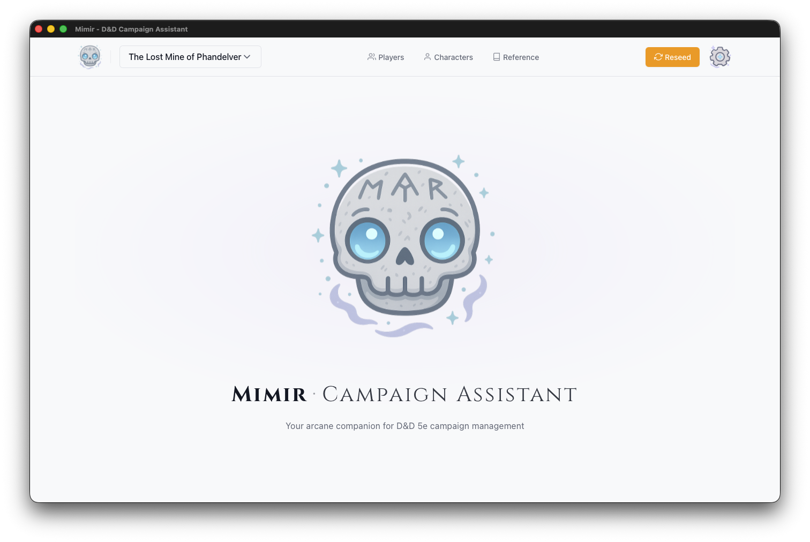
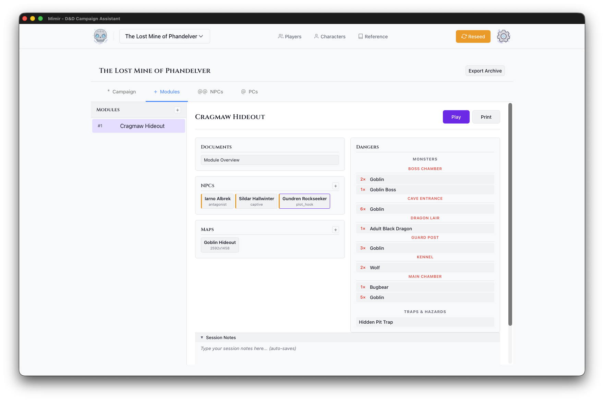
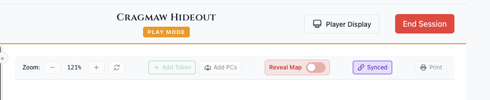
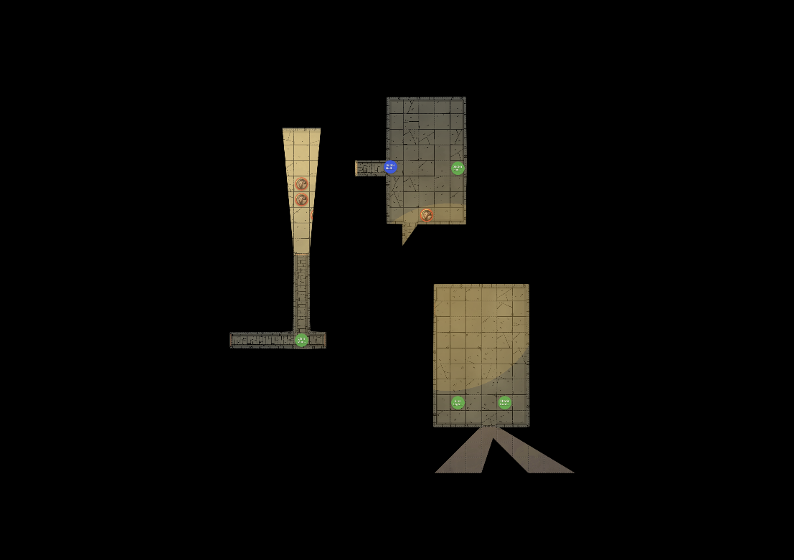
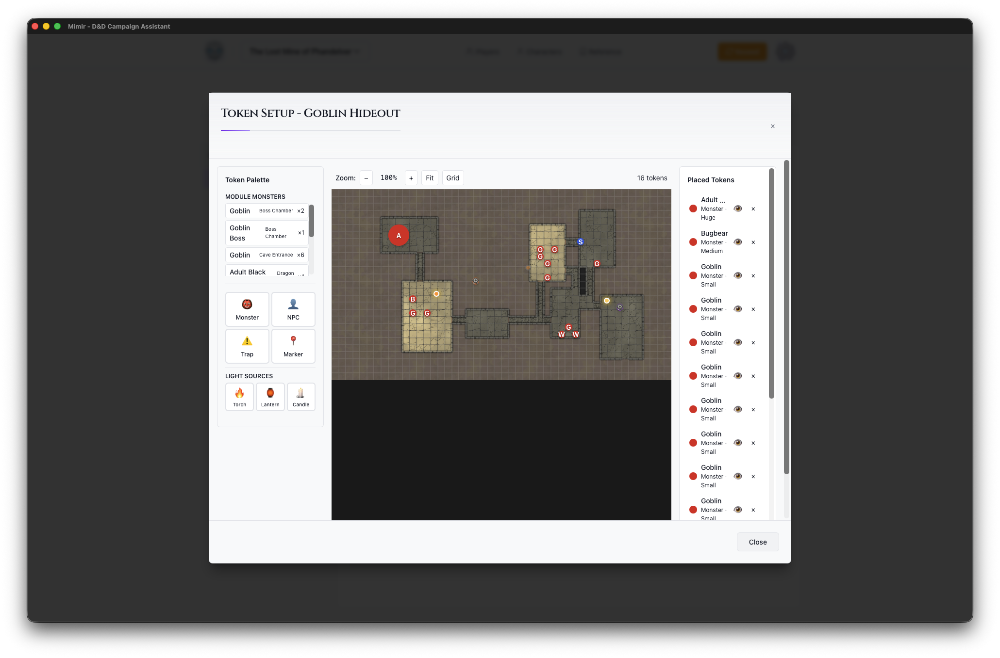
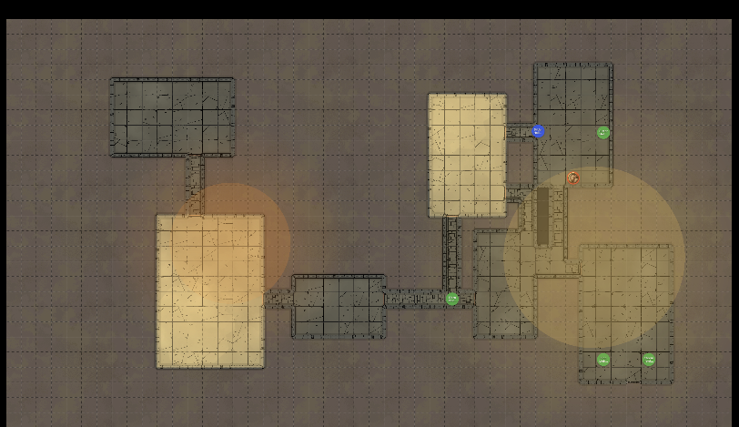
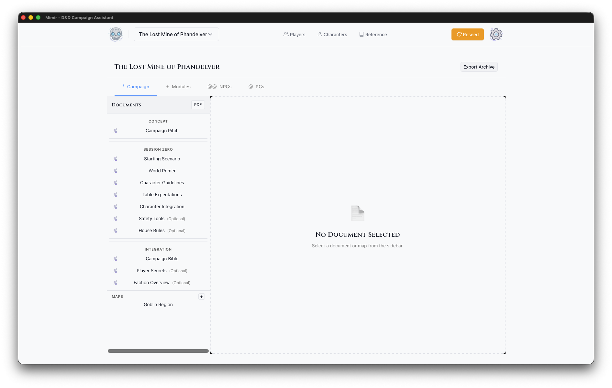
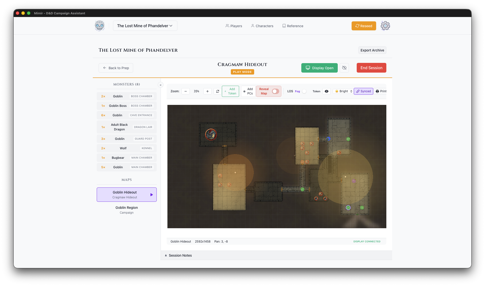

Mimir - D&D Campaign Assistant
“Remember, I know everything that can be known in the multiverse.” - Mimir, Planescape
Welcome to Mimir, your local-first D&D 5e campaign management tool. Named after the wise floating skull of Planescape lore, Mimir helps Dungeon Masters organize campaigns, run sessions, and keep everything at their fingertips.
Quick Start
New to Mimir? Start with our tutorials:
- Your First Campaign — Create a campaign and explore the dashboard
- Your First Module — Build an adventure with maps and monsters
- Running Your First Session — Use Play Mode to run an encounter
- Player Display Setup — Set up a second screen for players
- Creating Homebrew Content — Make custom items, monsters, and spells
Features
Campaign Management
Create and organize campaigns with a structured workflow. Track documents, NPCs, and plot threads across multiple adventure modules.
Interactive Maps
Upload maps (UVTT or images), configure grids, and place tokens. Manage fog of war with line-of-sight calculations and light sources.
Play Mode
Run sessions with a dedicated play interface. Control what players see on a second display while you manage encounters behind the scenes.
D&D 5e Reference
Search monsters, spells, items, and more from your D&D sourcebooks. Quick access to rules when you need them.
PDF Export
Print character sheets, spell cards, and maps with token cutouts for physical play.
Documentation
This documentation is organized using the Diataxis framework:
| Section | Purpose |
|---|---|
| Tutorials | Step-by-step learning guides |
| How-To Guides | Task-focused instructions |
| Reference | Detailed feature documentation |
| Understanding Mimir | Concepts and design philosophy |
Installation
macOS / Linux — one-line install:
curl -sSL https://raw.githubusercontent.com/mimir-dm/mimir/main/scripts/install.sh | sh
This installs the Mimir app (to ~/Applications on macOS, ~/.local/bin on Linux). On macOS it also installs the mimir-mcp CLI to ~/.local/bin; on Linux the script installs the app only — download mimir-mcp-<target-triple> from GitHub Releases or build it with cargo build --release -p mimir-mcp.
To pin a specific version:
curl -sSL https://raw.githubusercontent.com/mimir-dm/mimir/main/scripts/install.sh | sh -s -- --version X.Y.Z
Windows — download and run the .msi installer from GitHub Releases.
Supported Platforms: macOS, Windows, Linux
Getting Help
- Issues: Report bugs on GitHub Issues
- Discussions: Ask questions on GitHub Discussions
Mimir is open source software. See the Developer Documentation if you’d like to contribute.
Tutorials
Welcome to the Mimir tutorials! These step-by-step guides will walk you through the core features of Mimir, from creating your first campaign to running your first game session.
What You’ll Learn
Each tutorial builds on the previous one, taking you from a complete beginner to a confident Dungeon Master using Mimir:
- Your First Campaign - Create a campaign and explore the dashboard
- Your First Module - Build an adventure module with maps and monsters
- Running Your First Session - Use Play Mode to run an encounter
- Player Display Setup - Set up a second screen for your players
- Creating Homebrew Content - Create custom items, monsters, and spells
Prerequisites
- Mimir installed on your computer
- Basic familiarity with D&D 5th Edition (helpful but not required)
Time Commitment
Each tutorial takes approximately 15-30 minutes to complete. You can complete them all in one sitting or spread them out over multiple sessions.
Ready to begin? Start with Your First Campaign.
Your First Campaign
This tutorial walks you through creating your first campaign in Mimir. By the end, you’ll have a fully configured campaign ready for adventure modules and session play.
Time to complete: 5-10 minutes
What you’ll learn:
- Navigate the Mimir interface
- Create a new campaign
- Explore the Campaign Dashboard
- Import catalog data for the next tutorials
Prerequisites
- Mimir installed and running
- No additional setup required
Step 1: Launch Mimir
When you launch Mimir, you’ll see the home screen with the floating Mimir skull and the tagline “Your arcane companion for D&D 5e campaign management.”

The header bar contains:
- Mimir logo (skull icon) - Click to return home
- Campaign selector - Switch between campaigns
- Characters - Create and manage PCs and NPCs
- Reference - Open the D&D 5e reference library
- Settings (gear icon) - Configure application preferences
Step 2: Create a New Campaign
- Click the Campaign Selector dropdown in the header
- Click Create New Campaign
The Create New Campaign form opens.
Step 3: Fill in Campaign Details
The campaign creation form has two fields:
Campaign Name (Required)
Enter a descriptive name for your campaign. This appears throughout Mimir and in exported materials.
Example: “Curse of Strahd”, “Homebrew - The Shattered Realms”, “One-Shot: Goblin Heist”
Description (Optional)
Add notes about your campaign concept, themes, or setting. This is for your reference only.
Example: “Gothic horror campaign set in the domain of Barovia. Players are trapped and must defeat the vampire Strahd von Zarovich.”
Step 4: Create the Campaign
Click Create Campaign. Mimir will:
- Create the campaign in the database
- Redirect you to the Campaign Dashboard
Step 5: Explore the Campaign Dashboard
The Campaign Dashboard is your command center for the entire campaign. It has a header showing your campaign name and tabs for the different aspects of your game — Campaign, Modules, NPCs, PCs, and Homebrew. See the Campaign Dashboard reference for what each tab contains; you’ll work in the Modules tab in the next tutorial.

Step 6: Campaign Actions
The dashboard header includes three buttons: Sources, PDF, and Export Archive.
Sources opens the Campaign Sources modal where you select which D&D source books are available for this campaign. This controls which monsters, items, and spells appear in catalog searches.
PDF exports campaign documents as a PDF file.
Export Archive creates a backup of your entire campaign including:
- All documents and notes
- Module data
- Maps and tokens
- Character assignments
Use this regularly for backups or when moving campaigns between computers.
Step 7: Import Catalog Data
Before the next tutorial you’ll need catalog data imported — Tutorial 2 searches the catalog for monsters, and Mimir ships with none. Follow Manage Campaign Sources to download a source archive and import it, then come back here.
What’s Next?
Your campaign is ready! Here are your next steps:
- Create your first module - Build an adventure with maps and encounters
- Add characters - Create PCs for your players
- Explore the Reference - Browse monsters, spells, and items for inspiration
For details on anything you saw in this tutorial, see the Campaign Dashboard reference and Create a Campaign.
Next tutorial: Your First Module
Your First Module
This tutorial walks you through creating an adventure module in Mimir. By the end, you’ll have a module with maps, monsters, and tokens ready for play.
Time to complete: 15-20 minutes
What you’ll learn:
- Create a module within your campaign
- Upload and configure maps
- Add monsters from the D&D 5e catalog
- Place tokens on maps with the Token Setup tool
- Add light sources for dynamic lighting
Prerequisites
- A campaign created and catalog data imported (Tutorial 1)
- A map file: a PNG/JPG image or a UVTT file — a universal VTT export format that embeds grid, wall, and lighting data (see Map Formats). You can export UVTT from Dungeondraft, download maps from free map sites, or build one with Mimir’s map generator. Use a UVTT map if you can — to follow Tutorial 3’s fog-of-war steps you’ll need one (fog depends on UVTT wall data); a plain image works for everything else.
What is a Module?
In Mimir, a module is a self-contained adventure within your campaign. Think of it as a chapter or episode - “The Goblin Hideout”, “Dragon’s Lair”, or “The Haunted Manor”. Each module has its own:
- Maps and encounters
- Monsters and traps
- NPCs
- Session notes and documents
This separation lets you prepare adventures independently and reuse them across campaigns.
Step 1: Navigate to the Modules Tab
- Open your campaign from the Campaign Selector
- Click the Modules tab in the dashboard
You’ll see the module sidebar (left) and the main panel (right).

Step 2: Create a Module
- Click the + button in the Modules section
- In the Create Module dialog:
- Module Name - Enter a descriptive name (e.g., “The Lost Mine - Cragmaw Hideout”)
- Module Type - Select the type (Standard Adventure, Mystery, Dungeon Crawl, Heist, Horror, Political Intrigue)
- Description (optional) - Add notes about the module
- Click Create
Your new module appears in the modules list.
Step 3: Open the Module Dashboard
Click your new module in the modules list. The module dashboard opens in the main panel, with Play, PDF, and Delete buttons in its header and sections for documents, NPCs, maps, and dangers below.
Step 4: Upload a Map
-
In the Maps section, click the + button
-
Choose your map file:
- Image files (PNG, JPG, WebP) - Standard map images
- UVTT files - Universal VTT format with embedded grid data
-
Enter a Map Name for the map
-
Click Upload
The map appears as a card in the Maps section, showing its name and pixel dimensions.
Tip: UVTT files from tools like Dungeondraft include grid configuration automatically. For image files, you can configure the grid in Token Setup.
Step 5: Open Token Setup
The Token Setup modal is where you add monsters, place tokens, and configure your map.
- Click your map’s card in the Maps section
- The Token Setup modal opens showing:
- Token Palette (left) - Token types and monster search
- Map Canvas (center) - The map with grid overlay
- Token Inventory (right) - Placed tokens and light sources

The palette has more token types than we’ll use here — see the Token Setup Modal reference for all of them.
Step 6: Add a Monster
This step searches the catalog, so it requires the source data you imported in Tutorial 1 (Manage Campaign Sources).
- In the Token Palette, click Monster
- Search for “Goblin”
- Select Goblin from the search results
- Click on the map to place the monster token
The goblin appears on the map and in the Token Inventory on the right. Repeat to place a second goblin if you like — drag tokens to reposition them, or click the × in the inventory to delete one.
Step 7: Add a Light Source
A light source feeds Mimir’s dynamic lighting — the engine that computes illuminated areas from lights and walls — and fog of war, which hides unexplored or unseen areas from players (see the glossary).
- In the Token Palette, find the Light Sources section
- Click Torch
- Click on the map to place the torch
The torch appears in the Token Inventory under “Light Sources” with a Lit/Unlit toggle. It will illuminate the area around it in the DM Map window during play.
Step 8: Save and Close
Token placements save automatically. Click × or press Escape to close the Token Setup modal.
Your module is now ready for play!
What’s Next?
Your module is prepared with maps, monsters, and tokens. Continue to:
- Run your first session - Use Play Mode to run an encounter
- Add more content - Upload additional maps, add NPCs, create documents
- Prepare multiple modules - Create the next chapter of your adventure
For full details on token placement, see Place Tokens on a Map and the Token Setup Modal reference.
Next tutorial: Running Your First Session
Running Your First Session
This tutorial walks you through running a game session with the DM Map window. You’ll learn how to open the battle map, place your party, control fog of war, show the map to players, and keep session notes.
Time to complete: 10-15 minutes
What you’ll learn:
- Open the DM Map window for a module
- Select the active map and place PC tokens
- Control fog of war
- Open the Player Display and move tokens during play
- Keep session notes
- End the session
Prerequisites
- A module with at least one map and some tokens (Tutorial 2)
- At least one PC created and assigned to the campaign — fog of war reveals around PC tokens, so you need a PC to see anything
- For the fog-of-war step, your map must be a UVTT file (it carries the wall data fog needs)
Step 1: Open the DM Map Window
- Open your campaign and go to the Modules tab
- Select your module from the sidebar
- Click the Play button in the module header
A separate DM Map window opens showing your module’s battle map. Your main window stays on the campaign dashboard — keep it nearby, you’ll use it for monster stats and notes during play.
Step 2: Select Your Map
At the top left of the DM Map window is a Map dropdown.
- Open the dropdown — it lists your module’s maps plus any campaign-level maps (suffixed “(Campaign)”)
- Select the map you prepared in Tutorial 2 (the first module map is usually selected automatically)
The map loads in the window with its grid and the monster tokens and light sources you placed in Tutorial 2.
Step 3: Place Your PCs
PC tokens aren’t placed during prep — you add them at the table.
- Click Add PCs in the map toolbar
A token appears for each PC assigned to the campaign, placed in a small formation in the top-left corner of the map. Drag each PC token to where the party enters the map.
To move any token: click and hold, drag, release. Tokens snap to grid squares.
Step 4: Turn On Fog of War
Fog starts off. To hide everything the party can’t see:
- Click Fog in the map toolbar
On your view, areas outside the party’s vision turn semi-transparent gray; players see nothing there at all. While Fog is on, LOS (token line of sight) is forced on too, so enemies outside the party’s sight stay hidden automatically.
Note: The Fog and LOS buttons only appear for UVTT maps — fog needs the wall data UVTT files carry. On a plain image map, work with Reveal Map and per-token visibility instead (right-click a token → Hide from Players).
Try the ambient light dropdown too: set it to Dark and watch the visible area shrink to your placed torch and the PCs’ darkvision. See Control Fog of War for the full set of controls.
Step 5: Open the Player Display
The Player Display is a second window for your players (a TV, projector, or shared screen).
- Click Display in the DM Map window’s top toolbar
- A new window opens, and the button changes to Display On
- Drag the new window to your player-facing screen
Players see the current map with fog applied, visible tokens only, and no names, stats, or controls. While the display is open, a Blackout button appears next to Display On — click it to black out the player screen while you reposition tokens or set up a reveal.
Step 6: Play
Now run the encounter:
- Move tokens by dragging them. The Player Display updates immediately, and fog recalculates as PC tokens move — drag a PC down a corridor and watch the visible area follow.
- Reveal hidden enemies by right-clicking a token and choosing Show to Players (or select it and press H).
- Look up monster stats in your main window: the module dashboard’s monster list opens a stat block panel when you click a monster. Double-clicking a monster token in the DM Map window selects that monster in the dashboard for you.
Step 7: Keep Session Notes
Every module comes with a Play Notes document. In your main window:
- On the module dashboard, find Play Notes in the Documents panel
- Click it to open the editor
Type initiative order, HP, rulings, and player decisions as you go — the editor auto-saves (“Saving…” then “Saved”). Notes persist between sessions and are included when you export the campaign.
Step 8: End the Session
When you’re done:
- Click Display On to close the Player Display
- Close the DM Map window
Token positions are saved automatically, so the next time you click Play, the map is exactly where you left it.
Next tutorial: Player Display Setup
Player Display Setup
This tutorial walks you through setting up and using the Player Display - a second window that shows your players what their characters can see while you maintain full DM control.
Time to complete: 5 minutes
What you’ll learn:
- Set up a second screen for players
- Open and control the Player Display
- Understand what players see vs. what you see
- Use Blackout mode for dramatic reveals
Prerequisites
- Completed Tutorial 3 (DM Map window basics)
- Ideally: a second monitor, TV, or projector for players
The Two-Screen Setup
The Player Display creates a two-screen experience:
| Your Screen (DM) | Player Screen |
|---|---|
| Full map with all tokens | Fog of war applied |
| Monster names and stats | Token images only |
| Hidden tokens visible | Hidden tokens invisible |
| All controls and tools | Clean, focused view |
This lets you manage everything behind the scenes while players see only what their characters would see.
Step 1: Connect Your Second Screen
Before opening the Player Display, connect your second screen:
- TV or Monitor - HDMI/DisplayPort connection
- Projector - For tabletop projection
- Extended Display - Not mirrored (each screen shows different content)
Display Arrangement
On your computer:
- Open display settings
- Set to “Extend” (not “Mirror”)
- Arrange screens to match physical layout
- Note which screen is secondary
Step 2: Open the DM Map Window
- Open your campaign
- Go to the Modules tab
- Select a module and click Play — the DM Map window opens
- Make sure a map is selected in the Map dropdown at the top left of the window
Step 3: Open the Player Display
In the DM Map window’s toolbar:
- Click the Display button
- A new window opens
- The button changes to show Display On

Position the Window
Drag the Player Display window to your secondary screen:
- Click and hold the window title bar
- Drag to the player-facing screen
- Maximize the window (or press F11 for fullscreen)
Tip: On macOS, you can use Mission Control to move windows between spaces. On Windows, use Win+Shift+Arrow keys.
Step 4: Understanding the Views
What You See (DM View)

Your view shows everything:
- All tokens (visible and hidden)
- Token names and labels
- Full toolbar and controls
- Line of sight visualization (debug overlays)
What Players See


The player display shows:
- The map image
- Fog of war based on PC positions
- Visible tokens only (no hidden enemies)
- Token images without names
- No controls or UI elements
Step 5: Controlling What Players See
Fog of War
With Fog enabled in the map toolbar (UVTT maps only — fog needs wall data), fog of war updates automatically based on:
- Where PC tokens are positioned
- Their vision radius (including darkvision)
- Active light sources
- Walls and obstacles
Move a PC token and watch the fog update in real-time on both screens.
Reveal Map Toggle
For situations where you want to show the whole map:
- Find the Reveal Map toggle in the toolbar
- Enable it to bypass fog of war
- Disable it to restore fog of war
Use this for:
- Area maps without exploration
- Post-combat wrap-up
- Location reveals
Ambient Lighting
The ambient light level affects visibility:
| Level | Effect |
|---|---|
| Bright | Normal visibility, full colors |
| Dim | Reduced visibility, muted colors |
| Dark | Only darkvision and light sources work |
Change this to match the in-game environment (dungeon, night, etc.).
Step 6: Using Blackout Mode
The Blackout button (a crossed-out-eye icon with the tooltip “Toggle Blackout”) appears next to Display On in the DM Map window toolbar while the display is open:
- Click Blackout to hide everything from players
- The player screen blacks out and shows “Display Paused”
- Click again to restore the view
Blackout is handy whenever you want to change something without the players watching — setup, map transitions, or a dramatic reveal.
Step 7: Closing the Display
When your session ends:
- Click the Display On button again, or
- Close the player display window directly
- The button returns to Display
The DM Map window stays open - you can reopen the display anytime.
Setup Tips
For in-person play, position the TV, monitor, or projector so all players can see it, and adjust brightness for the room. For remote play, screen-share the Player Display window through your video call app.
If something isn’t working, see Troubleshooting.
Next Steps
You can now create campaigns, build modules with maps and encounters, run sessions with fog of war, and use a second screen for players. One tutorial remains: creating your own homebrew content.
Next tutorial: Creating Homebrew Content
Creating Homebrew Content
This tutorial walks you through creating custom items, monsters, and spells for your campaign. By the end, you’ll have homebrew content integrated into your modules and character sheets.
Time to complete: 10-15 minutes
What you’ll learn:
- Create a custom magic item from scratch
- Clone a catalog monster and modify it
- Clone a catalog spell and customize it
- Use homebrew content in modules and on characters
Prerequisites
- A campaign created (Tutorial 1)
- Catalog data imported (Manage Campaign Sources) — monsters, items, and spells should appear in Reference searches
- A module with a map (Tutorial 2) — Step 5 places the homebrew monster via Token Setup
- A PC created and assigned to the campaign — Step 5 adds the item and spell to a character sheet; the spell step needs a spellcaster
What is Homebrew?
In D&D, “homebrew” means custom content created by the DM. Mimir’s homebrew system lets you create items, monsters, and spells that live alongside the official catalog data. Homebrew content is scoped to a campaign — your custom sword in one campaign doesn’t appear in another.
Step 1: Open the Homebrew Tab
- Open your campaign from the Campaign Selector
- Click the Homebrew tab in the dashboard
You’ll see three sub-tabs: Items, Monsters, and Spells.
Step 2: Create a Custom Magic Item
Let’s create a unique magic sword for your campaign.
-
Click the Items sub-tab
-
Fill in the item form on the right panel:
- Name: “Frostbrand Falchion”
- Item Type: weapon
- Rarity: rare
- Requires Attunement: checked
-
The form expands to show weapon-specific fields:
- Category: Martial
- Bonus: +1
- Damage: 2d4
- Damage Type: Slashing
- Properties: Select “Finesse” and “Light”
-
In the Description field, write:
This curved blade is forged from ice-steel mined in the Frostfell. On a hit, the target takes an additional 1d6 cold damage. While attuned, you have resistance to fire damage.
-
Click Create Item
Your item appears in the homebrew items list with an HB badge.
Step 3: Create a Custom Monster
Monster stat blocks are complex, so Mimir uses a clone-only approach: you start from a catalog monster and modify it.
- Click the Monsters sub-tab
- Click Clone from Catalog
- Search for “Goblin” — we’ll create a goblin variant
- Click “Goblin” in the results
The cloned monster appears in your list immediately. The detail view shows “Based on Goblin.”
-
Select the new monster and click Edit
-
Change the Name to “Goblin Firestarter”
-
In the JSON data, you can modify:
- Hit points
- Armor class
- Actions and abilities
- Challenge rating
-
Save your changes
Tip: The stat block is edited as JSON in the 5etools data format, but you don’t need to understand the full structure to make simple changes — find the field you want (like
"hp"or"ac") and update its value. See Create a Homebrew Monster and The Homebrew System for how this data is structured and stored.
Step 4: Create a Custom Spell
Like monsters, spells are cloned from the catalog.
- Click the Spells sub-tab
- Click Clone from Catalog
- Search for “Burning Hands”
- Click it to create a homebrew copy
- Select the new spell and click Edit
- Change the Name to “Freezing Hands”
- In the JSON data, change:
- The damage type from fire to cold
- Update the description text accordingly
- Save your changes
Spell data uses the same JSON editing approach as monsters — see Create a Homebrew Spell for the details.
Step 5: Use Homebrew in Your Module
Now let’s use the homebrew content you’ve created.
Add the Monster to a Module
- Go to the Modules tab and open a module
- Click a map to open Token Setup
- In the Monster palette, search for “Goblin Firestarter”
- Your homebrew monster appears in the results with an HB badge
- Click it and place the token on the map
Add the Item to a Character
- Go to the PCs tab and open a character sheet
- Navigate to the Equipment tab
- Click Add Item
- Search for “Frostbrand Falchion”
- Your homebrew item appears with an HB badge
- Add it to the character’s inventory
Add the Spell to a Character
- On a spellcasting character’s sheet, go to the Spells tab
- Click Add Spell
- Search for “Freezing Hands”
- Your homebrew spell appears alongside catalog spells
- Add it to the character’s known spells
How It All Fits Together
Campaign: "The Frozen North"
├── Homebrew Items: Frostbrand Falchion
├── Homebrew Monsters: Goblin Firestarter
├── Homebrew Spells: Freezing Hands
├── Module: "The Ice Caves"
│ └── Tokens: Goblin Firestarter × 3
└── Characters
└── "Kira the Ranger"
├── Inventory: Frostbrand Falchion (equipped, attuned)
└── Spells: Freezing Hands (prepared)
Homebrew content is campaign-scoped, so it travels with your campaign when you export it as an archive.
What’s Next?
You’ve learned the three homebrew workflows. Continue exploring:
- Create more items — Full item field reference including armor types
- Browse the catalog — Search Reference for inspiration on what to clone
- Experiment — Clone a high-CR monster, reduce its stats, and create a weakened variant for lower-level play
Previous tutorial: Player Display Setup
How-To Guides
These practical guides help you accomplish specific tasks in Mimir. Unlike tutorials, how-to guides assume you already know the basics and need quick, focused instructions for a particular goal.
By Topic
Campaigns
Maps
- Upload a Map
- Configure Grid
- Place Tokens
- Manage Light Sources
- Print Maps
- Generate Maps
- Mapgen Standalone Tool
Characters
- Create a Player Character
- Create an NPC
- Assign to Campaign
- Manage Inventory
- Manage Spells
- Level Up
- Print Character Sheet
Modules
Play Mode
Homebrew
AI Assistant
Can’t find what you’re looking for? Check the Reference section for detailed documentation of all features.
Campaigns
How-to guides for creating and managing campaigns.
- Create a Campaign - Start a new campaign
- Manage Documents - Organize campaign documents
- Export Campaign - Backup and transfer campaigns
Create a Campaign
This guide shows you how to create a new campaign in Mimir and configure it for your game.

Steps
- Open the Campaign Selector in the header bar
- Click + New Campaign
- Fill in the campaign details:
- Campaign Name (required) — A descriptive name for your campaign
- Description (optional) — Notes about your campaign concept, themes, or setting
- Click Create Campaign
You’ll be redirected to your new campaign’s dashboard.
What Gets Created
When you create a campaign, Mimir automatically generates 11 template documents to give you a starting structure: Campaign Pitch, Starting Scenario, World Primer, Character Guidelines, Table Expectations, Character Integration, Campaign Bible, Safety Tools, House Rules, Player Secrets, and Faction Overview. These appear in the Campaign tab of your dashboard. Edit or delete them as needed — they’re a starting point, not a requirement.
Configure Campaign Sources
After creating your campaign, you’ll likely want to configure which D&D source books are available:
- Click the Sources button in the dashboard header
- Enable the books your group owns or you want to use
- Close the modal
Source filtering affects all catalog searches within this campaign — monster searches, spell lists in character creation, item lookups, and more. A “PHB only” campaign won’t show Xanathar’s Guide content.
Tips
- Use descriptive names that help you identify campaigns later (e.g., “Curse of Strahd - Tuesday Group” rather than just “Campaign 1”)
- The description is only visible to you — use it for notes about themes, players, or campaign status
- Configure sources early — it controls what content appears throughout the campaign
- You can archive campaigns you’re no longer running to keep your list clean
See Also
- Tutorial: Your First Campaign
- Manage Documents
- Export Campaign
- Campaigns vs Modules — Understanding the hierarchy
Manage Documents
Mimir uses documents to organize campaign and module content — session notes, location descriptions, lore, encounter plans, and anything else you need for your game.
Document Scope
Documents belong to either a campaign or a module:
- Campaign documents — World-building, lore, factions, and setting notes. Created from the Campaign tab on the dashboard.
- Module documents — Session prep, encounter notes, and location descriptions. Created within a specific module’s prep view.
Creating a Document
- Navigate to where you want the document:
- Campaign tab for campaign-level documents
- Module prep view for module documents
- Click the + button in the document sidebar
- Choose between two modes:
- New Document — Enter a title and create a blank markdown document
- Upload File — Drag and drop (or browse for) a markdown file or image. Supported formats:
.md,.png,.jpg,.jpeg,.webp,.gif,.svg
- Click Create
Editing Documents
Click a document in the sidebar to open it in the rich text editor.
The editor supports:
- Headings — H1, H2, H3
- Formatting — Bold, italic, strikethrough
- Lists — Bullet and numbered lists
- Blocks — Blockquotes, horizontal rules
- Tables — Insert and manage tables with rows and columns
- Undo/Redo — Full history support
Documents are written in Markdown under the hood. The editor renders markdown visually while preserving the underlying format.
Auto-Save
Changes save automatically as you type (after a brief pause). A status indicator shows:
- Saving… — Changes being written
- Saved — All changes persisted
There is no manual save button — your work is always preserved.
PDF Export
Click the Export PDF button in the editor header to export the current document as a PDF.
Reordering Documents
Documents can be reordered using the up/down arrow buttons that appear when you hover over a document in the sidebar. This controls the display order within that document’s scope (campaign or module).
Deleting Documents
Hover over a document in the sidebar to reveal a delete button (trash icon). Click it and confirm to remove the document. This is permanent.
Session Notes
Every module gets an auto-created Play Notes document for in-session tracking (HP, initiative, events). Open it from the module’s Documents panel during play — it auto-saves like any other document.
See Also
Manage Campaign Sources
Configure which D&D source books are available in your campaign.
Import Source Data
Before you can use catalog content (monsters, spells, items), source data must be imported into Mimir.
Mimir imports .tar.gz archives of JSON data in the format established by the 5etools community project. Pre-packaged archives are available from the Mimir Resources releases page; download both the data archive and the matching image archive.
- Click the Settings gear icon in the header bar
- Under Admin Tools, click Import Books
- In the Manage Catalog Sources modal, click Import 5etools Data
- Select the data archive (
.tar.gz) - Wait for the import to complete — this may take a few minutes for large archives
- (Optional) Click Import Images and select the image archive to add token art and book illustrations
After import, the source books appear in the Manage Catalog Sources list.
Configure Sources for a Campaign
Each campaign can restrict which source books are available, letting you run a “PHB only” game or include supplements selectively.
- Open your campaign dashboard
- Click the Sources button in the header
- Toggle source books on or off
- Close the modal
Changes take effect immediately — catalog searches within this campaign now filter by the enabled sources.
Disable or Remove a Source
To disable a source book for a specific campaign:
- Open Campaign Sources (dashboard → Sources button)
- Toggle the book off
To remove a source book entirely from Mimir:
- Click the Settings gear icon, then click Import Books under Admin Tools
- Check the box next to each source book you want to remove
- Click Delete Selected, then confirm
Removing a source deletes all catalog entries from that book. Campaign data (characters, homebrew, documents) is not affected.
Tips
- Configure sources early when creating a campaign — it controls what appears in all catalog searches
- Characters can optionally have their own source restrictions, independent of the campaign (useful when players own different books)
- Imported data is stored locally in your SQLite database — no internet connection is needed after import
See Also
- Create a Campaign — Initial campaign setup
- The Catalog System — How source data works
- Troubleshooting: Missing catalog data
Archive and Restore Campaigns
Hide completed or inactive campaigns without deleting them.
Archive a Campaign
- Open the campaign you want to archive
- In the campaign dashboard header, click the Archive action
- Confirm the archive
The campaign disappears from the default campaign list but all data is preserved.
View Archived Campaigns
- Open the Campaign Selector dropdown in the header
- Toggle the Show Archived option
- Archived campaigns appear in the list, marked as archived
Restore an Archived Campaign
- View archived campaigns (see above)
- Select the archived campaign
- Click Unarchive in the dashboard header
- The campaign returns to the active campaign list
Archive vs Delete
| Action | Data Preserved | Reversible |
|---|---|---|
| Archive | All data intact, hidden from default views | Yes — unarchive at any time |
| Delete | All data permanently removed (cascades to modules, characters, documents, maps) | No |
Archive first, delete only when you’re certain you no longer need the campaign.
See Also
- Export Campaign — Create a portable backup before archiving
- Create a Campaign
Export Campaign
Export your campaign as a portable archive for backup or transfer.
Steps
- Open your campaign dashboard
- Click Export Archive in the campaign header
- Choose a save location
- The campaign exports as a
.mimir-campaign.tar.gzarchive
What’s Included
The archive contains:
- Campaign metadata and settings
- All module data
- Maps and token positions
- Documents and session notes
- Character assignments
Use Cases
- Backup - Regular exports protect against data loss
- Transfer - Move campaigns to another computer
- Sharing - Send a campaign to another DM
Importing
To import an exported campaign:
- Open the Campaign Selector dropdown in the header
- Click Import Campaign
- Select the
.mimir-campaign.tar.gzfile - The campaign appears in your campaign list
See Also
- Create a Campaign
- Print Maps - For PDF output
Maps
How-to guides for working with battle maps.
- Upload a Map - Add map images and UVTT files
- Configure Grid - Align the grid overlay
- Place Tokens - Add tokens to your map
- Manage Light Sources - Set up dynamic lighting
- Print Maps - Export maps for printing
Upload a Map
Add battle maps and area maps to your campaign modules.
Supported Formats
| Format | Extensions | Grid Data | Walls/Doors | Lighting |
|---|---|---|---|---|
| UVTT | .dd2vtt, .uvtt | Embedded | Embedded | Embedded |
| Image | .png, .jpg, .webp | Default (70px) | None | None |
Steps
- Open a module from the Modules tab
- Find the Maps section in the module dashboard
- Click the + button
- Choose your map file
- Enter a Name for the map
- Click Upload
The map appears as a card in the Maps section. Click it to open Token Setup.
UVTT Files (Recommended)
UVTT files from tools like Dungeondraft include grid, wall, door, and lighting data that Mimir imports automatically. This gives you line-of-sight fog of war, accurate token snapping, and dynamic lighting out of the box.
See Map Formats for details on what UVTT files contain and why they’re preferred.
Image Files
Standard image files work for basic token placement but lack wall data, so fog of war is not available — the Fog and LOS controls only appear for UVTT maps. On image maps, use the Reveal Map toggle and per-token Hide from Players instead. Mimir defaults to 70 pixels per grid square. See Configure Grid for details.
Generated Maps
Maps produced by mimir-mapgen are .dungeondraft_map files. Mimir cannot open .dungeondraft_map files directly — map uploads accept only UVTT (.dd2vtt, .uvtt) and image files. To use a generated map in Mimir, open it in Dungeondraft (a paid tool) and export it as Universal VTT.
Tips
- Always prefer UVTT when available — fog of war and dynamic lighting only work on UVTT maps
- Maps can belong to a specific module or to the campaign at large
- You can upload multiple maps per module (one per room/area is common for dungeon crawls)
See Also
- Configure Grid — Grid alignment details
- Place Tokens — Adding monsters and NPCs to maps
- Map Formats — Understanding UVTT and alternatives
- Generate Maps — Create maps procedurally
Verify Grid Alignment
How to check that your map’s grid matches Mimir’s grid overlay, and what to do if it doesn’t.
Goal
Ensure that tokens snap to the correct grid squares on your map.
Steps
For UVTT Files
- Upload your UVTT file (see Upload a Map)
- Open Token Setup by clicking the map card
- Verify: The grid overlay should align with the map’s drawn grid lines
- Place a test token — it should snap to the center of a grid square
UVTT files embed grid data (cell size, offset, dimensions), so alignment is automatic. If the grid looks correct, you’re done.
For Image Files
- Upload your image file
- Open Token Setup by clicking the map card
- Check alignment: Mimir defaults to 70 pixels per grid square, starting from the top-left corner
- If the overlay grid lines align with the map’s drawn grid, you’re ready to place tokens
If the Grid Doesn’t Align (Image Files)
If your image uses a non-standard grid size (e.g., 100px squares), the overlay won’t match the map artwork. Options:
- Obtain the UVTT version of the map if available — this is the best fix
- Use the map as a visual backdrop and position tokens by eye rather than relying on snap-to-grid
How Token Snapping Works
- Tokens snap to grid centers when placed
- Token size respects the grid — a Large creature occupies a 2×2 area, Huge occupies 3×3
- The grid overlay in Token Setup shows exactly where tokens will land
See Also
- Upload a Map — Supported formats and upload steps
- Place Tokens — Adding tokens to the grid
- Fog of War — How fog interacts with grid and walls
- Map Formats — Understanding UVTT and image formats
Place Tokens
Place monsters, NPCs, traps, markers, and light sources on your maps.

Open Token Setup
- Navigate to a module (Modules tab → select module)
- Find your map in the Maps section
- Click the Place Tokens button on the map card to open Token Setup
Token Palette
The left panel shows available tokens:
- Monsters - Creatures added to this module
- NPCs - Non-player characters assigned to the module
- Traps - Hazards and traps
- Markers - Points of interest
- Light Sources - Torches, lanterns, candles
Placing a Token
- Click a token in the palette
- Configure options (size, color, visibility)
- Click on the map where you want to place it
- The token appears at that location
Token Options
Before placing, you can set:
- Size - Tiny, Small, Medium, Large, Huge, Gargantuan
- Color - Border color for identification
- Visible to Players - Whether players can see this token
Managing Placed Tokens
Tokens appear in the Placed Tokens panel (right side):
- Click to select on the map
- Drag to reposition
- Click × to delete
- Right-click for options
Moving Tokens
- Click and drag a token
- Move to the new position
- Release to place
Tokens snap to grid squares by default.
Tips
- Place monsters before the session starts
- Use different colors to distinguish groups
- Hide tokens for surprise encounters
See Also
Manage Light Sources
Light sources affect visibility in fog of war. This guide covers placing and controlling lights.
Light Source Types
| Type | Bright Light | Dim Light |
|---|---|---|
| Torch | 20 ft | 40 ft |
| Lantern | 30 ft | 60 ft |
| Candle | 5 ft | 10 ft |
Placing Light Sources
- Open Token Setup (click the Place Tokens button on a map card)
- Find Light Sources in the Token Palette
- Click a light type (Torch, Lantern, or Candle)
- Click on the map to place
Light Source Inventory
Placed light sources appear in the right panel under “Light Sources”:
- Each light shows its type
- Lit/Unlit button toggles the light
- × button deletes the light
Toggling Lights
In Token Setup
Click the Lit/Unlit button next to any light source in the inventory.
In Play Mode
Right-click a light source on the map to toggle it.
How Lights Affect Visibility
- Lit - Expands visible area for all tokens
- Unlit - No effect on visibility
- Lights work with PC darkvision to determine what players see
Use Cases
- Torches on walls - Simulate dungeon lighting
- Lanterns with party - Light source that moves with PCs
- Candles on tables - Ambient lighting for atmosphere
Tips
- Place lights at choke points for dramatic reveals
- Toggle lights during play for effect (torch goes out!)
- Combine with ambient light settings for atmosphere
See Also
Print Maps
Export maps to PDF for physical play or reference.
Steps
- Open Play Mode for your module
- Select the map you want to print
- Click the Print button in the map toolbar
- Configure print sections (see below)
- Click Generate PDF
- Preview the PDF, then save to your chosen location
Print Sections
The print dialog has two independent sections that can be enabled together or separately.
Preview
Fits the entire map on a single page — useful for DM reference or handouts.
Options:
- Grid — Overlay the grid on the map
- LOS Walls — Show line-of-sight wall positions
- Starting Positions — Show where tokens are placed
Play
Prints at 1 inch = 5 feet scale, tiled across multiple pages for physical tabletop play. The dialog shows an estimated page count when tiling is needed.
Options:
- Grid — Overlay the grid on the map
- LOS Walls — Show line-of-sight wall positions
- Token Cutouts — Generate printable circular token images
Token Cutouts
When enabled in the Play section, the PDF includes a sheet of circular token images that can be cut out for use as physical tokens on the printed map.
Tips
- Use the Preview section for quick DM reference sheets
- Use the Play section with token cutouts for a complete physical play kit
- Enable both sections to get everything in one PDF
See Also
Generate a Map
Use Mimir’s mapgen tool to procedurally generate Dungeondraft-format maps from biome presets or custom YAML configurations.
What Mapgen Creates
Mapgen generates .dungeondraft_map files containing:
- Noise-based terrain with blended textures
- Trees, grass, and other vegetation
- Roads and rivers that follow the terrain
- Rooms with walls, doors, and windows
- Water bodies, elevation contours, and lighting
- Polygon-based layouts for irregular room shapes
Output files open directly in Dungeondraft for further editing or UVTT export. Mimir cannot open .dungeondraft_map files directly — to use a generated map in Mimir, open it in Dungeondraft (a paid tool) and export it as Universal VTT.
Quick Start: Using a Preset
Prerequisite: the mimir-mapgen binary is not bundled with the Mimir app. Either download a pre-built binary from GitHub Releases (attached to each release for every platform) or build it from source with cargo build -p mimir-mapgen --release. See Install and Use Mapgen as a Standalone Tool for details.
Generate a map from one of 12 built-in biome presets:
mimir-mapgen generate --preset forest --output my-forest.dungeondraft_map
Use a specific seed for reproducible results:
mimir-mapgen generate --preset forest --seed 42 --output my-forest.dungeondraft_map
List Available Presets
mimir-mapgen list-presets
Example presets:
| Preset | Size | Description |
|---|---|---|
forest | 32x32 | Dense temperate forest with dirt paths, scattered rocks, and natural clearings |
cave | 24x24 | Underground cavern with rocky terrain and dark ambient lighting |
forest_river | 32x32 | Dense forest bisected by a meandering river with rocky banks |
See the Mapgen Reference for the full table of all 12 presets and their aliases.
Custom YAML Configs
For full control, write a YAML configuration file:
name: "Forest Clearing"
width: 32
height: 32
seed: 42
terrain:
slots:
- texture: "res://textures/terrain/terrain_grass.png"
lower: 0.0
upper: 0.5
- texture: "res://textures/terrain/terrain_dirt.png"
lower: 0.4
upper: 0.7
- texture: "res://textures/terrain/terrain_stone.png"
lower: 0.6
upper: 0.9
- texture: "res://textures/terrain/terrain_gravel.png"
lower: 0.8
upper: 1.0
blend_width: 0.05
smooth_blending: true
trees:
- tree:
textures:
- "res://textures/objects/more_trees/oak_01.png"
- "res://textures/objects/more_trees/oak_02.png"
min_distance: 500.0
noise_lower: 0.4
noise_upper: 0.75
probability: 0.5
scale_min: 0.8
scale_max: 1.2
layer: 300
random_rotation: true
random_mirror: true
roads:
- {}
Generate from the config:
mimir-mapgen generate config.yaml --output clearing.dungeondraft_map
Validate a Config
Check a config for errors without generating:
mimir-mapgen validate config.yaml
Iterating on Maps
Maps are deterministic — the same seed and config produce the same map. To iterate:
- Generate with a specific seed
- Open in Dungeondraft and review
- Adjust config parameters
- Regenerate with the same seed to compare changes
- Try different seeds for different terrain layouts
Using via AI Assistant
Mapgen is also available as an MCP tool (generate_map) through Mimir’s AI assistant integration. Describe the scene you want — “a misty forest clearing with a road” — and the assistant will build the YAML config and generate the map for you.
See Also
- Install and Use Mapgen as a Standalone Tool — Installation and a full worked example
- Upload a Map — Import maps into Mimir modules (UVTT or image files)
- Mapgen Reference — Full YAML schema and configuration details
Install and Use Mapgen as a Standalone Tool
mimir-mapgen is a self-contained procedural map generator that creates Dungeondraft-compatible .dungeondraft_map files. It has no dependency on Mimir’s database, UI, or MCP server — you can build it independently and use it as a command-line tool anywhere.
Note that Mimir itself cannot open .dungeondraft_map files directly — Mimir’s map upload accepts only UVTT (.dd2vtt, .uvtt) and image files. To use a generated map in Mimir, open it in Dungeondraft (a paid tool) and export it as Universal VTT.
Prerequisites
- Rust toolchain (1.75+) — install via rustup (only needed when building from source)
- Dungeondraft — to open and edit generated maps (or export to UVTT for Mimir, Foundry VTT, or Roll20)
Installation
From GitHub Releases
Pre-built mimir-mapgen binaries for each platform are attached to Mimir’s GitHub releases. Download the binary for your platform and put it on your $PATH.
From Source
Clone the repository and build just the mapgen crate:
git clone https://github.com/mimir-dm/mimir.git
cd mimir
cargo build -p mimir-mapgen --release
The binary is at target/release/mimir-mapgen. Copy it somewhere on your $PATH:
cp target/release/mimir-mapgen /usr/local/bin/
Verify Installation
mimir-mapgen --help
Quick Start
Generate a map from a built-in preset:
mimir-mapgen generate --preset forest -o forest.dungeondraft_map
Open forest.dungeondraft_map in Dungeondraft. Done.
Other useful commands:
mimir-mapgen list-presets # show all 12 biome presets
mimir-mapgen validate config.yaml # check a YAML config without generating
mimir-mapgen generate --preset forest --seed 42 -o forest.dungeondraft_map # reproducible output
See the Mapgen Reference for the full CLI flags, the complete preset table, and every YAML schema field.
Worked Example: Island Fort
A custom YAML config combining island mode, a walled room, water, and trees:
name: "Island Fort"
width: 32
height: 32
seed: 42
noise:
octaves: 5
persistence: 0.5
lacunarity: 2.0
scale: 0.035
island_mode: 1.0
terrain:
slots:
- texture: "res://textures/terrain/terrain_grass.png"
lower: 0.0
upper: 0.35
- texture: "res://textures/terrain/terrain_moss.png"
lower: 0.3
upper: 0.55
- texture: "res://textures/terrain/terrain_dry_grass.png"
lower: 0.5
upper: 0.75
- texture: "res://textures/terrain/terrain_sand.png"
lower: 0.7
upper: 1.0
blend_width: 0.06
smooth_blending: true
rooms:
- id: "fort"
x: 12
y: 12
width: 8
height: 8
terrain_slot: 0
portals:
- wall: south
position: 3
type: door
trees:
- tree:
textures:
- "res://textures/objects/more_trees/oak_01.png"
- "res://textures/objects/more_trees/oak_02.png"
min_distance: 350.0
noise_lower: 0.0
noise_upper: 0.5
probability: 0.6
scale_min: 0.8
scale_max: 1.2
layer: 300
random_rotation: true
random_mirror: true
water:
threshold: 0.85
deep_color: "ff1a6b5a"
shallow_color: "ff30b89a"
blend_distance: 60.0
min_contour_points: 6
smooth_iterations: 5
pixels_per_cell: 64.0
Generate it:
mimir-mapgen generate island_fort.yaml -o island_fort.dungeondraft_map
How it works:
island_modeapplies a radial falloff so the center stays low (land) and edges rise — combined withwater.threshold: 0.85, the high-noise edges become ocean.- The four
terrain.slotsblend grass through sand as noise increases, so beaches appear near the water. - The
fortroom is placed in grid squares; trees and other outdoor features automatically route around it. - The
treesentry is a full object config — all placement fields (min_distancethroughrandom_mirror) are required.
For the many other sections you can add (roads, rivers, lakes, lights, polygons, pattern fills, materials, and more), see the Mapgen Reference.
Iterative Workflow
Maps are deterministic — the same seed + config always produces the same result. Use this for rapid iteration:
- Generate with a fixed seed
- Open in Dungeondraft and review
- Tweak config parameters (tree density, road width, room positions)
- Regenerate with the same seed to see only your changes
- Try different seeds to explore different terrain layouts
Run mimir-mapgen validate config.yaml after each edit to catch schema and layout errors before generating.
Example Configs
The crates/mimir-mapgen/examples/ directory contains YAML configs and pre-generated maps for every biome preset plus multi-feature configs like tavern_river.yaml and island_fort.yaml.
See Also
- Mapgen Reference — Full CLI, preset table, and YAML schema with all fields documented
- Dungeondraft Texture Catalog — Available
res://texture paths - Generate Maps (Mimir Integration) — Using mapgen through Mimir’s UI and MCP tools
Characters
How-to guides for creating and managing characters.
- Create a Player Character - Build a PC
- Create an NPC - Add non-player characters
- Assign to Campaign - Link characters to campaigns
- Manage Inventory - Add items, equip gear, track currency
- Manage Spells - View and manage character spells
- Level Up - Advance a character to the next level
- Print Character Sheet - Export character sheets
Create a Player Character
Create player characters using the character creation wizard.
Access the Character Creator
- Click Characters in the header
- Click Create Character
Character Creation Wizard
The wizard guides you through seven steps:
Step 1: Basics
- Character name
- Player name (who plays this character)
Step 2: Race
- Select race from the campaign’s enabled sources
- Race determines racial traits and ability score options
Step 3: Class
- Select class (Fighter, Wizard, Rogue, etc.)
- Set starting level
- Choose subclass if applicable
Step 4: Background
- Select a background (Acolyte, Criminal, Noble, etc.)
- Background grants proficiencies, languages, and starting equipment
Step 5: Abilities
- Set ability scores
- See computed modifiers
Step 6: Skills
- Choose skill proficiencies based on class and background options
- See computed skill bonuses
Step 7: Review
- Review all selections
- Make final adjustments
- Click Create Character
After Creation
Your character appears in the Characters list and is available for campaign assignment. The character sheet has four tabs:
- Character — Stats, combat info, ability scores, saving throws
- Equipment — Inventory and item management
- Spells — Complete class spell reference for caster classes (spell details, spell slots)
- Details — Background, personality traits, ideals, bonds, flaws
Editing Characters
- Click a character in the list
- Open the character sheet
- Edit sections directly
- Changes auto-save
Tips
- Get character info from players before creating
- Use the wizard for complete characters
- Quick-create for NPCs doesn’t need all steps
- Level up uses a separate dialog
See Also
Create an NPC
Create non-player characters for your campaigns and modules.
Steps
NPCs are created from the campaign dashboard:
- Open your campaign dashboard
- Go to the NPCs tab
- Click Create NPC
NPC Creation
NPC creation is simplified — only a name is required. Optional fields can be filled in during creation or edited later:
- Enter the NPC Name (required)
- Optionally fill in:
- Race — The NPC’s race
- Role — Their function in the story (e.g., shopkeeper, quest giver, villain)
- Location — Where the party finds them
- Faction — Organization or group affiliation
- Click Create
Assigning NPCs
NPCs can be assigned to:
- Campaign - Recurring characters across modules
- Module - Location-specific NPCs
NPC vs Monster
| Type | Use Case |
|---|---|
| NPC | Named characters with personality |
| Monster | Combat encounters, unnamed enemies |
Use NPCs for important characters the party interacts with socially.
Tips
- Create NPCs during prep, not at the table
- Keep descriptions brief but memorable
- Include one distinctive trait or quirk
- Link to relevant plot threads in notes
See Also
Assign to Campaign
Add characters to a campaign so they appear in Play Mode.
Assigning Player Characters
From the Campaign Dashboard
- Open your campaign
- Go to the PCs tab
- Click Add Existing to assign an existing character, or Create PC to make a new one
- Select a character and click Add to Campaign
From the Character List
- Click Characters in the header
- Find an unassigned character
- Select a campaign from the dropdown — the character is assigned immediately
Assigning NPCs
Campaign-Level NPCs
- Open your campaign dashboard
- Go to the NPCs tab
- Click Create NPC to add a new NPC
Module-Level NPCs
- Open a module
- Find the NPCs section
- Click + to add an NPC
- Select from campaign NPCs or create new
What Assignment Does
Assigned PCs appear in:
- Campaign PCs tab
- Play Mode sidebar
- “Add PCs” button functionality
Assigned NPCs appear in:
- Campaign or module NPC lists
- Token placement palette
Removing Characters
- Find the character in the campaign tab
- Click the remove button
- Character returns to unassigned
The character isn’t deleted - just removed from the campaign.
Tips
- Assign all PCs before the first session
- NPCs can belong to multiple modules
- Characters can be in multiple campaigns
See Also
Manage Character Inventory
Add items, equip gear, attune magic items, and track currency on the Equipment tab.
Accessing the Equipment Tab
- Click Characters in the header
- Select a character
- Click the Equipment tab in the character sheet
Clicking opens the Inventory & Equipment dialog, which has three tabs: Inventory, Equipment, and Currency.
Inventory Tab
Adding Items
- Click + Add Item
- Use the search box to find items (minimum 2 characters)
- Select an item from the dropdown results — both catalog and homebrew items appear
- Set the Quantity and optional Notes
- Click Add to Inventory
Homebrew items are marked with an HB badge.
Viewing and Removing Items
Your inventory lists all items with:
- Item name and source badge
- Quantity (shown as x2, x3, etc.)
- Equipped status
- Notes (if any)
Click the − button to remove an item.
Equipment Tab
Toggle items as equipped or unequipped using checkboxes. All inventory items appear in this list — check the box next to an item to mark it as equipped.
Attunement
Below the equipped items list, the Attuned Items section shows magic items eligible for attunement with a counter (e.g., “Attuned Items 2/3”). Check the box to attune an item. The D&D 5e limit of 3 attuned items is enforced.
Currency Tab
Track character wealth with four fields:
- Platinum (pp)
- Gold (gp)
- Silver (sp)
- Copper (cp)
A total gold value is calculated and displayed below.
See Also
- Create a Player Character
- Print Character Sheet — Equipment Cards print option
Manage Character Spells
View and manage spells for spellcasting characters.
Accessing the Spells Tab
- Click Characters in the header
- Select a spellcasting character
- Click the Spells tab in the character sheet
Note: The Spells tab only appears for characters with a spellcasting class (Wizard, Cleric, Bard, etc.). Non-casters won’t see this tab.
Spells Tab Overview
The Spells tab displays three sections:
Spellcasting Stats
Shows your spellcasting fundamentals:
- Spell Save DC — Difficulty class for saving throws against your spells
- Spell Attack — Your modifier for spell attack rolls
- Spellcasting Ability — Which ability score powers your spells
For multiclass characters, stats are shown for each spellcasting class separately.
Spell Slots
Displays available spell slots by level (1st through 9th). Cantrips are marked as unlimited.
Available Spells
Your class spells grouped by level (Cantrips through 9th level). Each level header shows the spell count and can be expanded or collapsed.
Each spell card shows:
- Spell name and school of magic
- Tags: HB (homebrew), R (ritual), C (concentration)
- Expand a spell to see full details: casting time, range, components, duration, and description
How Spell Management Works
Mimir displays all possible spells for your class — spell preparation and selection is a table activity managed by the player during the game. The Spells tab serves as a complete reference so players can browse their full spell list and look up details on the fly.
Homebrew Spells
Homebrew spells created in the campaign’s Homebrew tab automatically appear alongside catalog spells in the character’s spell list, tagged with HB.
See Also
- Create a Player Character
- Print Character Sheet — Spell Cards print option
Level Up a Character
Advance a character to the next level using the level-up dialog.
Steps
- Click Characters in the header
- Find your character in the list
- Click the Level Up button on the character card
- Work through the dialog steps
- Click Confirm Level Up on the final step
Level-Up Dialog
The dialog guides you through the relevant steps for your class and level. Steps that don’t apply are skipped automatically.
Step 1: Select Class
Choose which class to level up. For multiclass characters, you can select an existing class or add a new one.
Step 2: Choose Subclass
Only appears at subclass selection levels (e.g., level 3 for most classes).
Pick a subclass for the chosen class.
Step 3: Hit Points
Choose how to gain HP for the new level:
- Average — Take the class’s fixed average
- Roll — Roll the hit die
- Manual — Enter a specific value
Step 4: Ability Score
Only appears at ASI levels (typically 4, 8, 12, 16, 19).
Increase ability scores or choose a feat.
Step 5: Spells
Only appears for spellcasting classes.
Learn new cantrips or spells available at your new level. Search and select from your class’s spell list.
Step 6: Features
Only appears when the new level grants feature choices.
Select from available class features such as Fighting Style, Metamagic options, Battle Master Maneuvers, Warlock Invocations, or Expertise.
Step 7: Summary
Review all features gained at this level.
Step 8: Review
Final review of all changes before confirming. Click Confirm Level Up to apply.
Navigation
- Completed steps show a checkmark and can be clicked to revisit
- Use Back and Next to move between steps
- Next is disabled until the current step is complete
See Also
Print Character Sheet
Export character sheets to PDF for printing.
Steps
- Click Characters in the header
- Find and click the character
- Click Print PDF on the character sheet
- Configure print options
- Save the PDF
Print Options
The export dialog lets you select which sections to include:
Character Sheets:
- Compact Sheet (2-page) — Stats, combat, skills, equipment summary
- Battle Card — Half-page combat reference (AC, HP, attacks, saves)
Cards:
- Spell Cards — Printable cards for all spells (if the character is a caster)
- Equipment Cards — Cards for weapons, magic items, and special ammunition
Compact Sheet and Spell Cards are enabled by default. At least one option must be selected to export.
Compact Sheet
The 2-page character sheet includes:
- Character name, race, class, and level
- Ability scores and modifiers
- Combat stats (AC, HP, speed, initiative)
- All 18 skills with computed bonuses
- Saving throws
- Attacks and equipment
- Proficiencies
- Personality traits, ideals, bonds, flaws
- Spellcasting info and spell slots (if applicable)
- Full inventory
- Currency
Battle Card
A half-page combat quick reference — ideal for keeping at the table during encounters. Includes AC, HP, attack bonuses, and saving throw modifiers at a glance.
Spell Cards
For spellcasters, spell cards are printed in a 3x3 grid:
- Each spell gets a card with name, level, school, casting time, range, components, and description
- Cut and use as physical references during play
Equipment Cards
Cards for notable equipment — weapons, magic items, and special ammunition. Print and cut for physical item tracking at the table.
Tips
- Print before session for quick reference
- Use card stock for durability
- Update and reprint after level ups
- Keep a backup PDF
See Also
Modules
How-to guides for creating adventure modules.
- Create a Module - Start a new adventure module
- Add Monsters - Add monsters from the catalog
- Module Documents - Organize module content
Create a Module
Add adventure modules to your campaign.
What is a Module?
A module is a self-contained adventure:
- “The Goblin Hideout”
- “Dragon’s Lair”
- “The Haunted Manor”
Each module has its own maps, monsters, NPCs, and documents.

Steps
- Open your campaign dashboard
- Go to the Modules tab
- Click the + button
- Fill in the module details:
- Module Name - Descriptive title for the adventure
- Module Type - Select type (Standard Adventure, Mystery, Dungeon Crawl, Heist, Horror, Political Intrigue)
- Description (optional) - Notes about the module
- Click Create Module
After Creation
Your new module appears in the module list. Select it to see its dashboard with Play, PDF, and Delete buttons.
Organizing Modules
Modules are numbered in creation order:
- Module 1: “Cragmaw Hideout”
- Module 2: “Cragmaw Castle”
- Module 3: “Wave Echo Cave”
Use descriptive names to identify content.
Tips
- Create one module per dungeon or major location
- Break large adventures into multiple modules
- Start with your first session’s content
- Add more modules as players progress
See Also
Add Monsters
Add monsters from the D&D 5e catalog or your homebrew collection to your maps via Token Setup.
Steps
- Open a module from the Modules tab
- Click the Place Tokens button on a map card to open Token Setup
- In the Token Palette, click Monster
- Search by name (e.g., “Goblin”, “Dragon”, “Zombie”)
- Select a monster from the results
- Configure token options (size, color, visibility)
- Click on the map to place the monster token
Monster Search
Type a monster name in the search field to filter results. Results show CR and source for quick reference. Homebrew monsters you’ve created in the campaign’s Homebrew tab also appear in search results alongside catalog entries.
Token Options
Before placing, configure:
- Size - Tiny, Small, Medium, Large, Huge, Gargantuan
- Color - Border color to distinguish groups
- Visible to Players - Hide for surprise encounters
Placing Multiple Monsters
To add multiple of the same monster:
- Search and select the monster
- Click on the map to place each one
- Each placement creates a new token
Each click on the map places an individual token.
Managing Monster Tokens
Placed monsters appear in the Placed Tokens panel (right side):
- Click to select on map
- Drag to reposition
- Click × to delete
- Right-click for more options
Viewing Monster Stats
In Play Mode, click any monster in the sidebar to see:
- Full stat block
- Ability scores and modifiers
- Actions and special abilities
- Legendary actions (if applicable)
Module Monsters Quick Select
Once you’ve added monsters to a map, the Token Palette shows a Module Monsters section at the top with quick-select buttons for monsters already in the module. This saves time when placing the same monster on multiple maps.
Tips
- Add monsters during prep, not at the table
- Use different colors to distinguish enemy groups
- Hide tokens for surprise encounters
- Search by CR to find level-appropriate challenges
- Create homebrew monsters in the Homebrew tab if you need custom creatures
See Also
Module Documents
Create and manage documents within your adventure modules for session prep, location descriptions, encounter plans, and more.
Creating Documents
- Open a module from the Modules tab
- Find the Documents section in the module prep view
- Click the + button to create a new document
- Choose between:
- New Document — Enter a title to create a blank markdown document
- Upload File — Upload a markdown file or image (
.md,.png,.jpg,.jpeg,.webp,.gif,.svg)
- Click Create
Editing Documents
- Click a document in the sidebar to open the editor
- Use the rich text toolbar for formatting:
- Headings (H1, H2, H3)
- Bold, italic, strikethrough
- Bullet and numbered lists
- Blockquotes and horizontal rules
- Tables
- Changes auto-save as you type — watch for the “Saved” indicator
- Click ← Back to return to the module overview
Reordering Documents
Hover over a document in the sidebar to reveal up/down arrow buttons. Click to change the display order.
Tips
- Create documents during prep, not at the table
- Use read-aloud text for atmospheric descriptions
- Keep encounter plans brief and scannable
- Session notes can be edited during play
- Export individual documents to PDF using the Export PDF button in the editor header
See Also
Play Mode
How-to guides for running game sessions.
- Start a Session - Enter Play Mode
- Manage Encounters - Run combat encounters
- Fog of War - Control visibility
- Manage Traps & POIs - Place, reveal, and trigger map markers
- Use Player Display - Set up a second screen
Start a Session
Open the DM Map window to run your game session.
Prerequisites
- A module with at least one map
- Tokens placed on the map (optional but recommended)
- PCs assigned to the campaign (needed for fog of war and the Add PCs button)
Steps
- Open your campaign
- Go to the Modules tab
- Select a module
- Click the Play button in the module header
The DM Map window opens in a separate window. Your main window stays on the campaign dashboard — keep it open for monster stat lookups and notes during play. (You can also click Play in the modules table on the campaign landing page.)
The DM Map Window
The window contains:
- Map selector (top left) - Dropdown of the module’s maps plus campaign-level maps (suffixed “(Campaign)”)
- Display / Blackout / Fullscreen (top right) - Display and Blackout control the Player Display; Fullscreen applies to the DM Map window itself (the Player Display has its own F11 fullscreen)
- Map toolbar - Zoom, Add PCs, Reveal Map, and (on UVTT maps) Fog, LOS, and ambient light
- Map canvas - The tactical view with all tokens
See DM Map Window for the full reference.
Initial Setup
- Select the starting map from the Map dropdown
- Click Add PCs in the map toolbar to place all campaign PCs, then drag them to the party’s starting position
- On UVTT maps, click Fog in the map toolbar if you want fog of war (it starts off)
- Click Display to open the Player Display (if using a second screen)
- You’re ready to play
Tip: Open the display and click Blackout while you position tokens, then turn Blackout off to reveal the scene.
Session Notes
Use the module’s Play Notes document: in the main window, open the module dashboard and click Play Notes in the Documents panel. It auto-saves as you type.
Ending the Session
There is no explicit end-session action:
- Click Display On to close the Player Display
- Close the DM Map window
Token positions are saved automatically and restored the next time you click Play.
See Also
Manage Encounters
Run combat encounters effectively during your session.
Viewing Monster Stats
Monster stats live in the main window, which stays on the campaign dashboard while the DM Map window is open. On the module dashboard, click any monster in the Dangers panel to open the Monster Stats Panel:
- Full stat block
- Ability scores and saves
- Actions and attacks
- Special abilities
The panel opens alongside the dashboard, so your main screen becomes the reference screen while the map runs in its own window.
Tip: Double-click a monster token in the DM Map window to select that monster in the dashboard automatically.
Monster Quick List
The Dangers panel lists all monsters in the module:
- Quantity - Number of each monster (e.g., “3×”)
- Name - Monster name (custom display name if one is set)
Click to select and view stats.
Adding PCs to the Map
Click the Add PCs button in the DM Map window’s map toolbar to place all campaign player characters on the current map.
Note: Monster tokens are placed in Token Setup — click the map’s card in the module dashboard’s Maps section. The dashboard stays available in the main window during a session, so you can place additional monsters there mid-session.
Moving Tokens in Combat
- Drag tokens to new positions
- Tokens snap to the grid
- Movement is visible on the player display (if open)
Token Visibility
Toggle token visibility to:
- Hide enemies before combat starts
- Reveal monsters during surprise rounds
- Show reinforcements arriving
Right-click a token and select Hide from Players / Show to Players (or select the token and press H).
Tips
- Open monster stats before combat starts
- Track HP in the module’s Play Notes document (Documents panel on the module dashboard)
- Use display names and notes to distinguish monsters by room/area
- Position hidden tokens before players enter areas
See Also
Fog of War
Recipes for controlling what players see on the battle map. All controls live in the map toolbar of the DM Map window, and changes take effect on the Player Display immediately.
- Control-by-control reference: Play Mode
- Rules and numbers (vision ranges, light radii): Vision & Lighting
- How and why the system works: Vision System

Note: The vision controls (Fog, LOS, ambient light, debug overlays) only appear for maps with UVTT wall data. On plain image maps, work with Reveal Map and per-token visibility instead.
Hide the map during exploration
Use this when the party enters an unexplored area and should only see what their characters can see.
- Open the Player Display.
- In the map toolbar, click Fog.
- Check the DM view: areas players cannot see are shaded semi-transparently for you and hidden entirely from players.
While Fog is on, LOS is forced on as well — tokens outside the party’s line of sight are hidden automatically. You cannot turn LOS off without first turning Fog off.
Reveal areas as the party explores
There is no manual reveal brush — the revealed area is computed live from PC token vision. To reveal more of the map:
- Drag PC tokens forward. Vision follows each token.
- Click a door on the map to open it. Open doors let vision pass; closed doors block it.
- Add or activate light sources where ambient light is dim or dark — see Manage Light Sources.
- If a whole area should become visible, raise the ambient light level to Bright.
Moving a token back also retracts its vision: fog is recalculated from current token positions, not accumulated.
Hide enemies but show terrain
Use this for encounters where players know the layout but should not see unseen threats.
- Make sure Fog is off.
- Click LOS in the map toolbar.

The map stays fully visible; tokens outside the party’s line of sight are hidden until a PC can see them.
Reveal the whole map temporarily
Use this for town maps, overviews, or any scene where fog doesn’t fit the fiction.
- Click the Reveal Map (eye) button in the toolbar.
- When you want fog back, click it again — the tooltip changes to “Hide map (restore fog)”.
Reveal Map overrides Fog and LOS (both buttons are disabled while it is active) but does not change their settings, so switching it off restores exactly the state you had before. Tokens you have individually hidden stay hidden.
Hide a lurking enemy regardless of vision
- Right-click the token and choose Hide from Players (or select the token and press H).
- The token is hidden from the Player Display even where players have vision, and even while Reveal Map is active.
Set the mood with ambient light
- Pick Bright, Dim, or Dark from the ambient light dropdown.
- In Dark, only darkvision and light sources grant vision — combine with sparse, placed torches for room-by-room tension.
The dropdown starts at the map’s UVTT ambient light value (if any); your selection overrides it for the session.
Stage a dramatic reveal
- Click Blackout in the header (available while the Player Display is open) so players see nothing.
- Position tokens, toggle lights, and set the ambient light.
- Turn Blackout off to present the finished scene.
Check what players can actually see
- Toggle the debug overlays button in the toolbar to draw vision ranges and walls on the DM view.
- For ground truth, glance at the Player Display window itself.
See Also
Manage Traps and POIs
Place trap markers and points of interest (POIs) on a map, control what players see, and trigger traps during play.
Traps and POIs are placed in the Token Setup modal and managed during play from the DM Map window’s map viewer. Some operations are only available in Token Setup — each section below says where it works.
Place a Trap
- Open Token Setup: click the map card (or its Place Tokens button) in the Module Prep View or the dashboard Modules tab.
- In the token palette, select Trap (⚠️).
- Optionally use Link Trap to search the catalog and link a published trap — the marker takes the trap’s name, and its full description can be pulled up in the trap details panel during play.
- Set the name (if not linked) and choose whether the marker starts Visible to players (off by default — traps usually start hidden).
- Click a grid square on the map to place the marker.
Drag the marker to reposition it (Token Setup only).
Note: A trap record also stores a detection DC and trigger/effect text. The current UI does not provide a form for editing these fields directly; link a catalog trap to give the marker a name that resolves to full trap mechanics in the play-mode trap details panel.
Hide or Reveal a Trap
Hidden traps appear gray and are never sent to the Player Display. Visible traps show a dashed green ring and appear on the Player Display.
- Token Setup: right-click the marker and choose Show to Players / Hide from Players, or use the Vis/Hid button next to the trap in the placed-content list.
- Play Mode / DM Map window: right-click the trap marker to toggle its visibility directly.
Reveal a trap when the party detects it; keep it hidden until then.
Trigger and Reset a Trap
Available in Token Setup only: right-click the trap marker and choose Trigger Trap. The marker is shown in its triggered state and the placed-content list shows “(Triggered)”. To re-arm it, right-click again and choose the reset option.
Place a POI
- Open Token Setup for the map.
- In the token palette, select Marker (📍).
- Set a name and color, and choose initial player visibility.
- Click a grid square to place it.
New POIs use the pin icon. To change the icon or add a description, edit the POI (next section).
Edit a POI (Icon, Color, Description)
Open the POI edit form from either view:
- Token Setup: click the Edit button next to the POI in the placed-content list, or right-click the marker and choose Edit…
- Play Mode / DM Map window: right-click the POI marker and choose Edit…
The form lets you set the name, a DM-notes description, one of eight icons (pin, star, skull, chest, door, secret, question, exclamation), and a color.
Hide or Reveal a POI
- Token Setup: use the Vis/Hid button in the placed-content list, or right-click the marker.
- Play Mode / DM Map window: right-click the POI marker and choose Show to Players / Hide from Players.
Visible POIs are sent to the Player Display with their icon and color.
Delete a Trap or POI
Right-click the marker and choose Delete (POI deletion is available in both views; trap deletion in Token Setup), or use the × button in the Token Setup placed-content list. Deletion asks for confirmation and is permanent.
During Play
- Double-clicking a trap or POI in the DM Map window focuses its details in the campaign dashboard — for catalog-linked traps this shows the full trap mechanics.
- Marker visibility changes propagate to the Player Display immediately while it is open.
See Also
- Fog of War — Controlling map visibility around your markers
- Token Setup Modal — Full reference for the placement UI
- Play Mode — Session interface reference
Use Player Display
Show players a fog-of-war view on a second screen.

Opening the Display
- Click Play on a module to open the DM Map window
- Click Display in the window’s top toolbar (it changes to Display On)
- A new window opens
- Drag the window to your player-facing screen
What Players See
The player display shows:
- Current map with fog of war
- Visible tokens only
- No monster names or stats
- Clean interface without controls
Blackout Mode
Hide everything from players:
- Click the Blackout button (crossed-out-eye icon, tooltip “Toggle Blackout”) next to Display On — it appears while the display is open
- Player screen blacks out and shows “Display Paused”
- Click again to restore
Use for:
- Setup before session
- Dramatic reveals
- Map transitions
- Bathroom breaks
Switching Maps
- Pick a different map from the Map dropdown at the top left of the DM Map window
- Player display updates automatically
- Use Blackout during transitions for drama
Closing the Display
- Click the Display On button again, or
- Close the window directly
Tips
- Use fullscreen (F11) on the player screen
- Keep notes on your screen, map on theirs
- Use Blackout liberally for reveals
See Also
Homebrew Content
Create custom items, monsters, and spells for your campaigns.
What is Homebrew?
Homebrew content is custom D&D material you create for your campaign. When the official catalog doesn’t have what you need — a custom magic sword, a unique creature, or a modified spell — you create it as homebrew.
Where to Find It
Homebrew is managed from the Homebrew tab on the Campaign Dashboard (the 5th tab). Each campaign has its own homebrew content.
The Three Types
| Type | Creation Method | Used In |
|---|---|---|
| Items | Create from scratch or clone from catalog | Character inventory |
| Monsters | Clone from catalog and modify | Module encounters, token placement |
| Spells | Clone from catalog and modify | Character spell lists |
Clone from Catalog
For monsters and spells, the primary workflow is cloning: search the D&D 5e catalog, select an entry, and Mimir creates a homebrew copy you can modify. Items can also be cloned or created from scratch.
Cloned entries display “Based on [original name]” so you can track the source.
How Homebrew Integrates
- Homebrew items appear in inventory search results when adding items to characters
- Homebrew monsters appear in monster search when placing tokens in Token Setup
- Homebrew spells appear in character spell lists alongside catalog spells
All homebrew content is tagged with an HB badge throughout the UI.
Guides
Create a Homebrew Item
Create custom items for your campaign — weapons, armor, potions, magic items, and more.
Navigate to Homebrew Items
- Open your campaign dashboard
- Click the Homebrew tab
- Select the Items sub-tab
Create from Scratch
- Fill in the item form on the right panel
- Set the required and optional fields (see below)
- Click Create Item
Clone from Catalog
- Click Clone from Catalog
- Search for an existing item (minimum 2 characters)
- Results show name, type, rarity, and source
- Click an item to pre-fill the form with its data
- Modify fields as needed
- Click Create Item
If the name conflicts with an existing homebrew item, “ (Custom)“ is appended.
Item Fields
Common Fields (All Items)
- Name (required) — Item name
- Item Type — weapon, armor, potion, ring, rod, scroll, staff, wand, wondrous item, adventuring gear
- Rarity — common, uncommon, rare, very rare, legendary, artifact
- Weight — Weight in pounds
- Value — Value in gold pieces
- Requires Attunement — Checkbox; optionally specify attunement requirements (e.g., “by a spellcaster”)
- Description — Item description and properties
Weapon Fields
Shown when item type is weapon:
- Category — Simple or martial
- Bonus — +1, +2, or +3
- Damage — Damage dice (e.g., 1d8)
- Damage Type — Slashing, piercing, bludgeoning, fire, cold, etc.
- Versatile Damage — Alternate damage when wielded two-handed
- Range — Range in feet
- Properties — Finesse, Heavy, Light, Reach, Thrown, Two-Handed, Versatile, Ammunition, Loading, Special
Armor Fields
Shown when item type is armor:
- AC — Base armor class
- Bonus — +1, +2, or +3
- Strength Required — Minimum strength score
- Stealth Disadvantage — Whether the armor imposes disadvantage on Stealth checks
Editing Items
Click an item in the list, then click Edit to modify its fields.
Deleting Items
Click Delete on a selected item. If any characters have the item in their inventory, a warning shows which characters are affected.
See Also
Create a Homebrew Monster
Create custom monsters by cloning and modifying entries from the D&D 5e catalog.
Navigate to Homebrew Monsters
- Open your campaign dashboard
- Click the Homebrew tab
- Select the Monsters sub-tab
Clone from Catalog
Homebrew monsters are created by cloning existing catalog entries:
- Click Clone from Catalog
- Search for a monster (minimum 2 characters)
- Results show name, CR, size, type, and source
- Click a monster to create a homebrew copy immediately
The new monster appears in your homebrew list with “Based on [original name]” shown in the detail view.
Editing Monsters
- Select a monster from the list
- Click Edit
- Modify the Name and/or the JSON data containing the full stat block
- Save your changes
The stat block data is stored as JSON. The detail pane shows extracted metadata: CR, size, and creature type.
Using Homebrew Monsters
Homebrew monsters appear in monster search results alongside catalog entries when:
- Placing tokens in Token Setup
- Browsing monsters in module prep
They are tagged with an HB badge for identification.
Deleting Monsters
Click Delete on a selected monster. If any modules reference the monster, a warning shows which modules are affected.
See Also
Create a Homebrew Spell
Create custom spells by cloning and modifying entries from the D&D 5e catalog.
Navigate to Homebrew Spells
- Open your campaign dashboard
- Click the Homebrew tab
- Select the Spells sub-tab
Clone from Catalog
Homebrew spells are created by cloning existing catalog entries:
- Click Clone from Catalog
- Search for a spell (minimum 2 characters)
- Results show name, level, school, and source
- Click a spell to create a homebrew copy immediately
The new spell appears in your homebrew list with “Based on [original name]” shown in the detail view.
Editing Spells
- Select a spell from the list
- Click Edit
- Modify the Name and/or the JSON data containing the spell details
- Save your changes
The detail pane shows extracted metadata: spell level and school of magic.
Using Homebrew Spells
Homebrew spells appear automatically in character spell lists alongside catalog spells for spellcasting characters. They are tagged with an HB badge.
Deleting Spells
Click Delete on a selected spell. A confirmation prompt appears before deletion.
See Also
AI Assistant Integration
Use Mimir with Claude Code for AI-assisted campaign management via natural language.
What It Does
Mimir includes an MCP (Model Context Protocol) server that exposes 54 tools to Claude Code, enabling you to manage campaigns, search catalogs, generate maps, and prep sessions through conversation. Ask “create a forest map” or “find CR 5 undead monsters” and the assistant handles it.
Prerequisites
- Mimir desktop app installed
- Claude Code installed
- The
mimir-mcpbinary (installed alongside the app, or built from source)
Setup
For App Users
Inside the desktop app, the MCP server runs as a sidecar — a companion process bundled with the app that launches automatically. For Claude Code, you use the standalone mimir-mcp binary instead. On macOS, the install script places it at ~/.local/bin/mimir-mcp, so it’s already on your PATH (if not, add ~/.local/bin to your PATH). On Linux and Windows, download the binary for your platform from GitHub Releases (e.g. mimir-mcp-x86_64-unknown-linux-gnu or mimir-mcp-x86_64-pc-windows-msvc.exe), or build it from source as described below.
-
Register the server with Claude Code:
claude mcp add mimir -- mimir-mcp -
Install the Claude Code plugin. Inside a Claude Code session, add the Mimir marketplace, then install the plugin:
/plugin marketplace add mimir-dm/mimir /plugin install mimir-dm@mimir
From Source
If you’re working from the Mimir repository, build the binary yourself:
cargo build --release -p mimir-mcp
Then register the built binary (target/release/mimir-mcp) with claude mcp add as above.
Database Path
The server auto-detects the Mimir database on macOS (~/Library/Application Support/com.mimir.app/data/mimir.db) and Linux ($XDG_DATA_HOME/com.mimir.app/data/mimir.db, falling back to ~/.local/share/...). On Windows there is no default — you must set the environment variable:
# macOS / Linux
export MIMIR_DATABASE_PATH=/path/to/mimir.db
# Windows (PowerShell)
$env:MIMIR_DATABASE_PATH = "C:\Users\you\AppData\Roaming\com.mimir.app\data\mimir.db"
You can find your database path in the app under Settings > Integrations, which displays it with a copy button.
See Environment Variables for details.
Available Tools, Commands, and Skills
The full listing of MCP tools, plugin slash commands, and skills lives in the MCP Server Reference. In brief, tools cover campaign, module, document, character, and map management, map generation, homebrew content, and catalog search.
Example Workflows
Campaign setup:
“Create a new campaign called ‘Curse of Strahd’ and add a module for Death House”
Monster search:
“Find all CR 3-5 undead monsters from the Monster Manual”
Map generation:
“Generate a dark swamp map with standing water and dim lighting”
Session prep:
“Run a session prep check on the Goblin Hideout module”
Character management:
“Add a +1 longsword to Aldric’s inventory”
Important Notes
- MCP tools modify the database directly — there is no undo
- Export your campaign regularly as a backup
- The assistant is the DM’s tool — it prompts for choices rather than making creative decisions autonomously
- Set the active campaign with
set_active_campaignbefore using campaign-specific tools
Reference
This section contains detailed reference documentation for all of Mimir’s features and interfaces.
UI Reference
Detailed documentation for each screen and interface:
- Home Screen
- Campaign Dashboard
- Module Prep View
- Play Mode
- DM Map Window
- Token Setup Modal
- Player Display
- Sources Window
- Settings
Data & Formats
- Data Model - Entities and how they relate
- Characters - Character data reference
- Sources & Catalog - Source books and catalog content
- File Formats - Supported map and export formats
- Campaign Archive Format - Export/import archive structure
- PDF Export - Character sheets, cards, and map printing
Systems & Tools
- Vision & Lighting - D&D 5e vision rules in Mimir
- MCP Server - AI assistant integration reference
- Mapgen - Procedural map generation
- Dungeondraft Texture Catalog - Textures available to mapgen
Quick References
- Keyboard Shortcuts - All hotkeys and shortcuts
- Environment Variables - Configuration options
- Troubleshooting - Symptoms, causes, and fixes
- Glossary - Definitions of Mimir terminology
Looking for step-by-step instructions? Check out the How-To Guides.
UI Reference
Detailed documentation for each screen and interface in Mimir.
Screens
- Home Screen - The main landing page
- Campaign Dashboard - The central hub for campaign management
- Module Prep View - Preparing adventure modules
- Play Mode - Running game sessions
- Token Setup Modal - Placing and configuring tokens on maps
- Player Display - The player-facing display window
Home Screen
The Home Screen is your starting point in Mimir. From here you can access campaigns, characters, reference materials, and application settings.
Layout
Header Bar
The header bar is consistent across the entire application — it appears on every screen:
| Element | Position | Function |
|---|---|---|
| Mimir Logo (skull icon) | Left | Returns to the home screen from anywhere |
| Campaign Selector | Left-center | Dropdown to switch campaigns or create new ones |
| Characters | Center | Opens the character list (all campaigns) |
| Reference | Center | Opens the D&D 5e reference browser in a new window |
| Settings (gear icon) | Right | Application preferences and catalog management |
Campaign Selector
The campaign selector dropdown shows:
- All active (non-archived) campaigns
- + New Campaign button at the bottom
- Import Campaign option for loading archives
Selecting a campaign navigates to its Campaign Dashboard.
Main Content
The home screen displays the Mimir landing with the floating skull and tagline. The skull artwork adapts to the active theme (light, dark, or hyper).
Actions
| Action | Location |
|---|---|
| Open a campaign | Campaign Selector dropdown |
| Create a campaign | Campaign Selector → + New Campaign |
| Import a campaign | Campaign Selector → Import Campaign |
| Access characters | “Characters” link in header |
| Open reference browser | “Reference” link in header (opens new window) |
| Open settings | Gear icon in header |
| Return home | Mimir skull icon |
Settings Screen
Accessible via the gear icon. The Settings screen provides:
- Catalog Management — Import source data archives, enable/disable source books
- Theme Selection — Light, Dark, or Hyper theme
- Application Info — Version number, data paths, dev mode status
See Also
Campaign Dashboard
The Campaign Dashboard is your central hub for managing a campaign. It uses a tabbed interface to organize different aspects of your campaign.

Header
- Campaign Name — Displayed prominently at the top
- Sources — Configure which D&D source books are enabled for this campaign
- PDF — Export campaign documents as PDF
- Export Archive — Export campaign as
.mimir-campaign.tar.gzarchive
Tabs
Campaign Tab
The world-building hub with a two-panel layout:
Sidebar (Left):
- Documents — Campaign-level documents for lore, setting notes, factions, and world-building. Create new documents with the + button. Reorder with up/down arrows.
- Maps — Campaign-level maps (not tied to a specific module). Upload with the + button.
Main Panel (Right):
- Opens the document editor when a document is selected
- Shows a map preview when a map is selected
- Maps can be exported to PDF or deleted from the preview
Modules Tab
Adventure modules within this campaign:
- Module List — Table showing all modules with action buttons
- Play — Enter Play Mode for a module
- Open — Open the module prep view
- PDF — Export module materials
- Create Module — Add new adventure modules with the + button
NPCs Tab
Non-player characters for this campaign:
- NPC List — All NPCs across modules
- NPC Details — Stats, notes, role, location, faction
- Create NPC — Add new NPCs
PCs Tab
Player characters assigned to this campaign:
- PC List — Characters in this campaign
- Add Existing — Assign existing characters to the campaign
- PC Details — Full character sheets with tabs for stats, equipment, spells, and details
Homebrew Tab
Custom content for this campaign:
- Items — Create or clone items from the catalog
- Monsters — Clone and modify monsters from the catalog
- Spells — Clone and modify spells from the catalog
See Homebrew Content for detailed guides.
See Also
Module Prep View
The Module Prep View is where you prepare adventure content before running it in Play Mode.
Layout
Sidebar (Left)
The module list showing all modules in the campaign:
- Module Cards - Name and number
- Create Module - Add new module (+)
- Active Indicator - Shows which module is selected
Main Panel (Right)
The selected module’s dashboard with sections:
Module Header
- Module Name - Title of the adventure
- Play - Enter Play Mode for this module
- PDF - Export module materials as PDF
Content Sections
Documents
Session prep documents and notes:
- Organized by type (encounter notes, descriptions, etc.)
- Create new documents with the + button
- Click to edit
NPCs
Non-player characters specific to this module:
- Quick reference for module NPCs
- Link to full NPC details
- Add NPCs with the + button
Maps
Battle maps and area maps:
- Map cards with thumbnails
- Click the Place Tokens button to open Token Setup
- Upload new maps with the + button
Monsters
Quick view of monsters in this module (populated from Token Setup). Includes both catalog and homebrew monsters.
Actions
| Action | How To |
|---|---|
| Create module | Click + next to “Modules” header |
| Select module | Click module in sidebar |
| Enter Play Mode | Click “Play” button |
| Upload map | Maps section → + button |
| Open Token Setup | Click Place Tokens button on a map card |
| Add document | Documents section → + button |
See Also
Play Mode
Play Mode is how you run a game session in Mimir. Clicking the Play button on a module (campaign dashboard Modules tab, or the modules table on the campaign landing page) opens the DM Map window — a separate window with the tactical battle map — while the main window stays on the campaign dashboard for monster stats, documents, and notes.

Session Surfaces
| Surface | Role |
|---|---|
| DM Map window | Map selection, tokens, fog of war, Player Display controls |
| Player Display | Player-facing window with fog applied |
| Campaign Dashboard (main window) | Monster stat panel, module documents (including Play Notes), NPCs |
Double-clicking a token, trap, or POI in the DM Map window focuses the corresponding entry in the campaign dashboard.
The sections below document the map viewer — the canvas and toolbar embedded in the DM Map window.
Map Canvas
The tactical display:
- Current map with grid
- All tokens (visible and hidden)
- Fog of war visualization (semi-transparent on the DM view)
- Light source effects
Map Toolbar
Above the map canvas:
| Control | Function | Availability |
|---|---|---|
| Zoom | +/- buttons, percentage display | Always |
| Reset | Fit map to view | Always |
| Add PCs | Place all campaign PCs on the map | Always |
| Reveal Map | Eye toggle: show the entire map to players, overriding Fog and LOS | Always |
| Fog | Toggle: hide the map outside party vision; turning it on forces LOS on | UVTT maps; disabled while Reveal Map is active |
| LOS | Toggle: hide tokens outside party line of sight | UVTT maps; disabled while Reveal Map or Fog is active (locked on under Fog) |
| Ambient Light | Dropdown: Bright, Dim, or Dark | UVTT maps |
| Debug | Toggle debug overlays (vision ranges, walls) on the DM view | UVTT maps |
| Export map to PDF | Always |
Visibility Controls
Fog and LOS are two separate toggle buttons, but they are not fully independent: enabling Fog forces LOS on and locks the LOS button until Fog is turned off. LOS can be enabled on its own. Reveal Map overrides both while active without changing their settings. Both toggles start off when the window opens.
| State | Map (player view) | Tokens (player view) |
|---|---|---|
| Fog off, LOS off | Fully visible | All player-visible tokens shown |
| LOS only | Fully visible | Only tokens within party line of sight |
| Fog on (LOS forced on) | Hidden outside party vision | Only tokens within party line of sight |
| Reveal Map | Fully visible | All player-visible tokens shown |
Individually hidden tokens are never shown to players, in any state.
Vision ranges and lighting values are listed in Vision & Lighting; common workflows are in Fog of War; the rationale is in Vision System.
Working with Tokens
- Move - Click and drag
- Select - Click token
- Toggle visibility - Right-click → Hide from Players / Show to Players (or select and press H)
- Mark dead - Right-click → Mark Dead (or select and press D)
- View stats - Double-click a monster token to focus it in the campaign dashboard’s monster panel
Player Display Controls
In the DM Map window’s top toolbar:
- Display - Open/close the Player Display window (shows Display On while open)
- Blackout - Hide everything from players (shown only while the display is open)
Session Notes
There is no notes panel in the DM Map window. Each module has an auto-created Play Notes document — open it from the Documents panel on the module dashboard in the main window. It auto-saves as you type.
See Also
DM Map Window
The DM Map window is a separate window showing the battle map while the main window stays on the campaign dashboard for reference. Clicking Play on a module (campaign dashboard Modules tab, or the modules table on the campaign landing page) opens it.
Window Properties
| Property | Value |
|---|---|
| Window label | dm-map |
| URL | /dm-map?moduleId=<id>&campaignId=<id> |
| Initial size | 1280 × 900, resizable |
| Instances | One; re-opening focuses the existing window |
Layout
Toolbar
| Control | Function |
|---|---|
| Map selector | Dropdown of all maps available to the module; campaign-level maps are suffixed “(Campaign)” |
| Module name | Currently playing module (center) |
| Display | Open/close the Player Display window |
| Blackout | Hide content from players (shown only while the display is open) |
| Fullscreen | Toggle fullscreen on the DM Map window |
Map Viewer
The map area embeds the DM map viewer (documented in Play Mode), with these controls:
- Zoom, reset view, Add PCs, Reveal Map, Print
- Fog, LOS, ambient light, and debug overlay toggles (UVTT maps)
- Token drag, selection, context menu, vision settings
- Trap and POI markers with visibility toggles
See Play Mode for the full toolbar and token control reference.
Status Bar
Shows map name, pixel dimensions, current pan offset, and Player Display connection state.
Dashboard Link
Double-clicking a token, trap, or POI in the DM Map window emits a focus event to the main window, which selects the corresponding monster, NPC, PC, trap, or POI in the campaign dashboard.
Keyboard Shortcuts
| Shortcut | Action |
|---|---|
+ / = | Zoom in |
- | Zoom out |
0 | Reset view |
h / H | Toggle visibility of selected token |
d / D | Toggle dead state of selected token |
Escape | Close context menu and deselect |
Shortcuts are ignored while typing in text inputs.
See Also
- Play Mode — Session-running overview and full map viewer reference
- Player Display — The player-facing window
- Keyboard Shortcuts — Full shortcut reference
Token Setup Modal
The Token Setup Modal is where you configure maps, place tokens, and prepare encounters.
Opening Token Setup
Click the Place Tokens button on a map card in the Module Prep View to open Token Setup.
Layout
Token Palette (Left)
Tools for adding content to the map:
Module Monsters (appears when monsters have been added)
- Quick-select buttons for monsters already in the module
- Shows name, encounter tag, and quantity
Monster
- Search D&D 5e monsters by name
- Shows CR and source book
- Click to select, then click map to place
NPC
- Add NPC tokens
- Select from module NPCs
Trap
- Place trap markers at grid positions
- Optionally link a catalog trap (search by name) — the marker takes the trap’s name
- Trap records store name, description, trigger/effect descriptions, detection DC, triggered state, and player visibility
Marker
- Place point-of-interest (POI) markers at grid positions
- POI records store name, description, icon, color, and player visibility
Light Sources
- Torch (20 ft bright / 40 ft dim)
- Lantern (30 ft bright / 60 ft dim)
- Candle (5 ft bright / 10 ft dim)
Map Canvas (Center)
The main map display:
- Grid Overlay - Aligned to map squares
- Placed Tokens - All tokens on this map
- Trap/POI Markers - Drag to move; right-click for actions (visibility, trigger/reset for traps, edit for POIs, delete)
- Zoom Controls - Adjust view
- Pan - Click and drag to move
Placed Content (Right)
All placed content:
Tokens
- List of all placed tokens
- Click to select on map
- Delete with × button
Light Sources
- All placed lights
- Lit/Unlit toggle
- Delete with × button
Traps
- Shows name, DC (if set), and triggered state
- Vis/Hid toggle for player visibility
- Delete with × button
Points of Interest
- Shows name and icon type
- Edit, Vis/Hid toggle, and delete buttons
Canvas Controls
Located above the map:
- Zoom - +/- buttons and percentage
- Reset - Fit map to view
Token Options
When placing tokens:
| Option | Description |
|---|---|
| Size | Tiny, Small, Medium, Large, Huge, Gargantuan |
| Color | Border color for identification |
| Visible | Whether players can see this token |
See Also
- Place Tokens — Step-by-step placement workflow
- Manage Traps and POIs — Placing and running trap/POI markers
- Add Monsters
- Manage Light Sources
- Play Mode — Where placed content is used in session
Player Display
The Player Display is a separate window showing what players can see, designed for a second screen, TV, or projector.
Opening the Display
In Play Mode, click the Player Display button in the header. A new window opens that you can drag to your player-facing screen.
What Players See
The player display shows:
- Map - Current active map
- Fog of War - Based on PC positions and vision
- Visible Tokens - Only tokens marked as visible
- Light Effects - From active light sources
What’s Hidden
Players do NOT see:
- Hidden tokens
- Monster names or stats
- DM controls or UI
- Session notes
- Debug visualizations
Fog of War Controls
Two independent toggles control what players see:
Fog
- Unrevealed areas are black
- Reveals based on PC vision
- Best for exploration
LOS
- Map remains fully visible
- Enemy tokens hidden outside PC vision
- Best for tactical combat
DM Controls
When the Player Display is open, additional controls appear:
| Control | Function |
|---|---|
| Blackout | Show black screen to players |
| Reveal Map | Bypass fog of war entirely |
| Ambient Light | Affects fog of war calculation |
Blackout Mode
Click the eye icon (Blackout) to:
- Hide everything from players
- Show a completely black screen
- Set up encounters secretly
- Create dramatic reveals
Click again to restore the view.
Physical Setup
TV/Monitor
- Connect via HDMI/DisplayPort
- Set display to “Extend” (not mirror)
- Drag Player Display window to second screen
- Maximize or fullscreen (F11)
Projector
- Project onto table or wall
- Useful for tabletop projection mapping
Virtual/Remote
- Share the Player Display window via screen share
- Works with Discord, Zoom, etc.
Troubleshooting
| Issue | Solution |
|---|---|
| Window on wrong screen | Drag to correct display, then maximize |
| Players see hidden tokens | Check token visibility settings |
| Fog not updating | Verify PCs are marked visible |
| No window opens | Check popup blocker settings |
See Also
Sources Window
The Sources window is a standalone D&D 5e reference browser that opens as a separate application window.
Opening the Sources Window
Click Reference in the header bar. The Sources window opens independently from the main application, so you can keep it visible alongside the campaign dashboard or play mode.
Layout
Book Library
The library view lists all imported source books with cover images. Click a book to open it.
Book Reader
The reader displays book content organized by chapters and sections:
- Navigation sidebar — Table of contents with chapter/section headings
- Content area — Rendered book content with stat blocks, tables, and formatted text
- Search — Full-text search across the current book
Catalog Browser
Search and browse specific entity types:
| Category | Content |
|---|---|
| Monsters | Stat blocks, CR, type, size |
| Spells | Level, school, class lists, descriptions |
| Items | Equipment, magic items, rarity |
| Races | Racial traits and subraces |
| Classes | Class features, subclasses, spell lists |
| Backgrounds | Skills, languages, features |
| Feats | Prerequisites and benefits |
| Conditions | Mechanical effects |
Each category supports search and filtering by source book.
Cross-References
Content in the Sources window is cross-linked. Monster stat blocks link to referenced spells, item descriptions link to conditions, and class features link to related rules. Click a reference to navigate to it.
Theme
The Sources window respects the application theme (light, dark, hyper) and synchronizes theme changes with the main window.
See Also
- Manage Campaign Sources — Import and configure source books
- The Catalog System — How source data works
Settings
The Settings screen provides application-wide configuration. Access it via the gear icon in the header bar.
The sidebar is divided into three groups: Admin Tools, Application, and (in development builds only) Developer.
Admin Tools
Manage Campaigns
Opens the Campaign Management modal for archiving, restoring, and deleting campaigns.
Import Books
Opens the Manage Catalog Sources modal for the D&D 5e source data that powers catalog searches:
| Action | Description |
|---|---|
| Import 5etools Data | Import a source data archive to populate the catalog |
| Import Images | Import an image archive to add token art, cover art, and book illustrations |
| Enable/Disable | Toggle individual source books on or off globally |
| Remove | Delete a source book and all its catalog entries from the database |
See Manage Campaign Sources for the import workflow.
Application
Theme
Choose between three visual themes:
| Theme | Description |
|---|---|
| Light | Light background, dark text |
| Dark | Dark background, light text |
| Hyper | High-contrast dark theme with vivid accent colors |
Theme changes apply to all open windows (main, DM map, player display, sources).
Integrations
Configuration for connecting Claude Code or Claude Desktop to Mimir via the MCP server. Displays:
| Element | Description |
|---|---|
| Database Path | Location of your Mimir database, with a copy button. Used as the MIMIR_DATABASE_PATH value in MCP configuration |
| Claude Code (CLI) | A ready-to-copy claude mcp add mimir command that registers the mimir-mcp server with your database path |
| Claude Desktop | A ready-to-copy JSON mcpServers snippet for claude_desktop_config.json |
Claude starts the MCP server automatically; no manual server management is required.
About
| Field | Description |
|---|---|
| Version | Current Mimir version |
Developer
Only visible in development builds.
Dev Tools
| Element | Description |
|---|---|
| Status | Whether test data is currently present (Test Data Present / Not Seeded) |
| Seed Test Data | Creates the “Lost Mine of Phandelver” test campaign with modules, characters, monsters, and NPCs |
| Reseed (Clear & Recreate) | Deletes the test campaign and seeds it fresh |
| Clear Test Data | Deletes the test campaign without reseeding |
All dev commands are rejected by the backend outside debug builds.
See Also
- Home Screen — Navigation overview
- MCP Server — The integration the Integrations section configures
- Environment Variables — Advanced configuration
Data Model
The hierarchy of entities in Mimir and how they relate to each other.
Entity Hierarchy
Campaign
├── Documents (campaign-level)
├── Maps (campaign-level)
├── Characters (PCs and NPCs)
│ ├── Classes (multiclass support)
│ ├── Inventory
│ ├── Spells
│ ├── Proficiencies
│ ├── Feats
│ └── Features
├── Modules
│ ├── Documents (module-level)
│ ├── Maps (module-level)
│ ├── Module Monsters (catalog references)
│ ├── Module NPCs
│ └── Token Placements
├── Homebrew Items
├── Homebrew Monsters
├── Homebrew Spells
└── Campaign Sources (enabled books)
Campaigns
The top-level container. A campaign represents a complete D&D game — the world, the story, the characters.
| Field | Description |
|---|---|
id | UUID, auto-generated |
name | Campaign name (required) |
description | Optional notes |
archived_at | Soft-delete timestamp (null = active) |
created_at | Creation timestamp |
updated_at | Last modification timestamp |
Archiving a campaign hides it from the default list but preserves all data. Deleting a campaign is permanent and cascades to all children.
When you create a campaign, Mimir automatically generates 11 template documents (Campaign Pitch, Starting Scenario, World Primer, Character Guidelines, Table Expectations, Character Integration, Campaign Bible, Safety Tools, House Rules, Player Secrets, Faction Overview).
Characters
Both player characters (PCs) and non-player characters (NPCs) use the same data model. The is_npc flag distinguishes them.
| Field | Description |
|---|---|
id | UUID |
campaign_id | Parent campaign |
name | Character name (required) |
is_npc | Integer: 0 = PC, 1 = NPC |
player_name | Real player name (PCs only) |
race_name | Race name (references catalog) |
race_source | Source book for the race |
background_name | Background name (references catalog) |
background_source | Source book for the background |
strength | Strength score (default 10) |
dexterity | Dexterity score (default 10) |
constitution | Constitution score (default 10) |
intelligence | Intelligence score (default 10) |
wisdom | Wisdom score (default 10) |
charisma | Charisma score (default 10) |
cp, sp, ep, gp, pp | Currency in 5 denominations |
traits | Personality traits |
ideals | Character ideals |
bonds | Character bonds |
flaws | Character flaws |
role | NPC role (NPC only) |
location | NPC location (NPC only) |
faction | NPC faction (NPC only) |
created_at, updated_at | Timestamps |
Character Classes
Characters support multiclassing. Each class entry tracks:
| Field | Description |
|---|---|
character_id | Parent character |
class_name | Class name (e.g., “Fighter”) |
class_source | Source book for the class |
level | Levels in this class |
subclass_name | Subclass (e.g., “Champion”) |
subclass_source | Source book for the subclass |
starting_class | Whether this is the character’s first class (for multiclass proficiency rules) |
A level 5 Fighter / level 3 Wizard has two entries.
Character Inventory
| Field | Description |
|---|---|
item_name | Item name (may reference catalog) |
item_source | Source book for the item |
quantity | Number of items |
equipped | Whether the item is worn/held (integer: 0/1) |
attuned | Whether the item is attuned (integer: 0/1). Mimir counts attuned items but does not enforce the D&D 5e three-attunement rule |
notes | Optional notes about the item |
Character Spells
| Field | Description |
|---|---|
spell_name | Spell name (references catalog) |
spell_source | Source book for the spell |
prepared | Whether currently prepared (integer: 0/1) |
source_class | Which class grants this spell |
Character Proficiencies
| Field | Description |
|---|---|
proficiency_type | skill, save, tool, weapon, armor, or language |
name | Proficiency name (e.g., “Perception”) |
expertise | Whether the character has expertise (integer: 0/1) |
Character Feats
| Field | Description |
|---|---|
feat_name | Feat name |
feat_source | Source book for the feat |
source_type | How the feat was acquired: asi, race, class, or bonus |
Character Features
| Field | Description |
|---|---|
feature_type | fighting_style, metamagic, maneuver, invocation, or pact_boon (see Characters) |
feature_name | Feature name |
feature_source | Source book |
source_class | Which class grants the feature |
Character Sources
Optional per-character source filtering, separate from campaign sources.
| Field | Description |
|---|---|
character_id | Parent character |
source_code | Enabled source book code |
Modules
Modules are adventure containers within a campaign — a dungeon, a town, a story arc.
| Field | Description |
|---|---|
id | UUID |
campaign_id | Parent campaign |
name | Module name (required) |
description | Optional description |
module_number | Display order |
created_at, updated_at | Timestamps |
Module Monsters
References to catalog monsters (or homebrew monsters) used in this module’s encounters.
| Field | Description |
|---|---|
module_id | Parent module |
monster_name | Catalog monster name |
monster_source | Source book for the monster |
homebrew_monster_id | Alternative: reference to a homebrew monster |
display_name | Optional custom name (e.g., “Goblin Boss Grix”) |
quantity | Number of creatures |
notes | DM notes about this monster’s role |
Module NPCs
NPCs created specifically for this module (distinct from campaign-level characters).
| Field | Description |
|---|---|
name | NPC name |
role | Role in the module |
description | Background and behavior |
appearance | Physical description |
personality | Personality traits |
motivation | What drives this NPC |
secrets | Hidden information about the NPC |
stat_block | Optional JSON stat block |
token_asset_id | Optional custom token art |
Documents
Flexible text content at either the campaign or module level.
| Field | Description |
|---|---|
id | UUID |
campaign_id | Parent campaign |
module_id | Parent module (null for campaign-level docs) |
title | Document title |
doc_type | Type identifier (e.g., campaign_pitch, world_primer, character_guidelines, user_document) |
content | Full text content |
sort_order | Display ordering |
created_at, updated_at | Timestamps |
A document belongs to a campaign, and optionally to a specific module within that campaign.
Maps
Battle maps with optional grid, wall, and lighting data.
| Field | Description |
|---|---|
id | UUID |
campaign_id | Parent campaign |
module_id | Optional parent module |
name | Map name |
description | Optional description |
sort_order | Display ordering |
uvtt_asset_id | Reference to the uploaded map asset |
lighting_mode | bright, dim, or dark |
fog_enabled | Whether fog of war is active (integer: 0/1) |
created_at, updated_at | Timestamps |
Map Overlays
Maps support several overlay types:
Light Sources (light_sources table) — Dynamic lights with grid position, bright/dim radius, color, and active state.
Fog Revealed Areas (fog_revealed_areas table) — Rectangles tracking which map areas have been revealed to players (x, y, width, height). Written by the fog reveal commands (reveal_rect, reveal_circle, reveal_all); these are currently not surfaced in the UI — live fog rendering is computed from PC token vision instead (see Vision System).
Points of Interest (map_pois table) — Named markers with descriptions, icons, colors, and visibility at specific grid positions.
Traps (map_traps table) — Trap markers with name, description, trigger/effect descriptions, detection DC, triggered state, and visibility.
Token Placements (token_placements table) — Monster and NPC positions on the map.
| Field | Description |
|---|---|
map_id | Parent map |
module_monster_id | Reference to module monster (or null) |
module_npc_id | Reference to module NPC (or null) |
grid_x, grid_y | Grid position |
label | Optional display label |
faction_color | Token border color |
hidden | Whether hidden from players (integer: 0/1) |
vision_bright_ft | Bright vision range in feet |
vision_dim_ft | Dim vision range in feet |
vision_dark_ft | Darkvision range in feet |
light_radius_ft | Light emitted by this token |
created_at | Placement timestamp |
Homebrew Content
Custom content scoped to a campaign. Three types:
Homebrew Items
| Field | Description |
|---|---|
name | Item name |
item_type | weapon, armor, potion, etc. |
rarity | common through legendary |
data | Full item data as JSON |
cloned_from_name | Original catalog item name (if cloned) |
cloned_from_source | Original catalog item source (if cloned) |
Homebrew Monsters
| Field | Description |
|---|---|
name | Monster name |
cr | Challenge rating |
creature_type | beast, fiend, undead, etc. |
size | Tiny through Gargantuan |
data | Full stat block as JSON |
cloned_from_name | Original catalog monster name (if cloned) |
cloned_from_source | Original catalog monster source (if cloned) |
Homebrew Spells
| Field | Description |
|---|---|
name | Spell name |
level | Spell level (0 for cantrips) |
school | Spell school |
data | Full spell data as JSON |
cloned_from_name | Original catalog spell name (if cloned) |
cloned_from_source | Original catalog spell source (if cloned) |
Campaign Sources
Controls which D&D source books are active for a campaign.
| Field | Description |
|---|---|
campaign_id | Campaign this applies to |
source_code | Source book abbreviation (e.g., “PHB”, “MM”, “XGE”) |
Catalog searches filter results by the campaign’s enabled sources.
Campaign Assets
Uploaded files (map images, token art) stored as binary blobs.
| Field | Description |
|---|---|
id | UUID |
campaign_id | Parent campaign (optional) |
module_id | Parent module (optional) |
filename | Original filename |
description | Optional description |
mime_type | File MIME type |
blob_path | Storage path relative to assets directory |
file_size | File size in bytes |
uploaded_at | Upload timestamp |
Assets are stored in the assets/ directory within the application data folder.
Catalog Data
Read-only D&D 5e reference data imported from external sources. Key tables:
| Table | Contents |
|---|---|
monsters | Creature stat blocks with CR, type, size, token image path, full JSON |
items | Equipment and magic items with type, rarity |
spells | Spells with level, school, ritual/concentration flags |
races | Playable races with traits |
classes | Classes with feature data |
subclasses | Subclasses linked to parent classes |
class_features | Class features by level |
subclass_features | Subclass features by level |
backgrounds | Backgrounds with proficiencies |
feats | Feats with prerequisites |
conditions | Status conditions (blinded, charmed, etc.) |
languages | Languages with type classification |
deities | Deities with pantheon grouping |
diseases | Diseases and afflictions |
hazards | Environmental hazards |
traps | Trap definitions with tier |
senses | Sense types |
skills | Skills with associated ability |
objects | Interactive objects |
vehicles | Vehicles with type |
rewards | Rewards with type |
psionics | Psionic abilities |
optional_features | Optional class features (invocations, maneuvers, etc.) |
variant_rules | Variant and optional rules |
actions | Standard actions |
cults | Cults and supernatural boons |
books | Source book metadata with cover images |
catalog_sources | Source book registry with enabled/disabled state |
spell_classes | Join table: which classes have access to which spells |
spell_subclasses | Join table: subclass spell lists |
item_attunement_classes | Join table: class-restricted attunement |
catalog_tables | Reference tables from source books |
A full-text search index (catalog_fts, an FTS5 virtual table) provides fast search across all catalog entity types.
See The Catalog System for how this data is used.
See Also
- Campaigns vs Modules — Why the hierarchy exists
- The Homebrew System — Creating custom content
- Architecture Overview — How data flows through the system
Characters
Reference for what Mimir tracks on player characters and NPCs. For full table schemas, see the Data Model.
PCs and NPCs
PCs and NPCs share one data model. The is_npc flag distinguishes them and controls which fields are relevant:
| Aspect | PC | NPC |
|---|---|---|
player_name | Real player’s name | — |
role, location, faction | — | NPC organization fields |
| Listing | PC-only campaign lists | NPC-only campaign lists |
Both kinds support the full set of related records below (classes, inventory, spells, and so on).
Core Fields
| Category | Fields |
|---|---|
| Identity | Name, race (catalog reference), background (catalog reference) |
| Ability scores | Strength, Dexterity, Constitution, Intelligence, Wisdom, Charisma (default 10) |
| Currency | cp, sp, ep, gp, pp |
| Personality | Traits, ideals, bonds, flaws |
Classes and Multiclassing
Characters can have any number of class entries, one per class:
| Field | Description |
|---|---|
| Class + source | e.g., Fighter (PHB) |
| Level | Levels in this class |
| Subclass + source | Set when the class reaches its subclass level |
| Starting class | Flags the first class, for multiclass proficiency rules |
Inventory
| Field | Description |
|---|---|
| Item + source | Catalog or homebrew item reference |
| Quantity | Stack count |
| Equipped | Worn/held flag |
| Attuned | Attunement flag; Mimir counts attuned items (the D&D 5e limit of 3 is a game rule, tracked but not enforced) |
| Notes | Free-text notes |
Spells
| Field | Description |
|---|---|
| Spell + source | Catalog spell reference |
| Source class | Which class grants the spell |
| Prepared | Whether currently prepared (known vs. prepared) |
Proficiencies
| Field | Description |
|---|---|
| Type | skill, save, tool, weapon, armor, or language |
| Name | e.g., “Perception”, “Thieves’ Tools” |
| Expertise | Double proficiency bonus flag |
Features
Selectable class features chosen during level-up:
| Type | Granted by |
|---|---|
fighting_style | Fighter 1, Paladin 2, Ranger 2 |
metamagic | Sorcerer 3, 10, 17 |
maneuver | Battle Master 3, 7, 10, 15 |
invocation | Warlock 2, 5, 7, 9, 12, 15, 18 |
pact_boon | Warlock 3 |
Each feature records its source class.
Feats
| Field | Description |
|---|---|
| Feat + source | Catalog feat reference |
| Source type | How it was acquired: asi, race, class, or bonus |
Per-Character Sources
Characters can carry their own enabled-source list, separate from the campaign’s source filter.
Level-Up Choices
A level-up request specifies:
| Choice | Options |
|---|---|
| Class | Any class (adding a new class multiclasses) |
| HP gain | Average (half hit die + 1, rounded up), Roll (enter the die result), or Manual (enter any value) |
| Subclass | Required at the class’s subclass level |
| ASI or feat | Ability score improvement (+2 total across one or two abilities) or a feat |
| Spell changes | New spells, new cantrips, and one known-spell swap |
| Feature choices | Fighting style, metamagic, maneuvers (with swap), invocations (with swap), pact boon, expertise skills (Rogue 1/6, Bard 3/10) |
See Also
- Data Model — Full character table schemas
- Character How-To Guides — Creating, leveling, and managing characters
Books and Sources
Mimir supports importing D&D 5e source books for reference and catalog population. The source system allows you to browse book content, search the extracted catalog data, and navigate cross-references between game elements.
Mimir ships with no game content — not even the System Reference Document (SRD). All catalog data comes from archives you import. See The Catalog System for why, and Manage Campaign Sources for the import procedure.
Archive Format
Source data is imported from gzip-compressed tar archives (.tar.gz) containing JSON data in the format established by the 5etools community project. The archive must include a books.json file describing the available sources; the importer streams the archive directly without extracting it to disk.
Pre-packaged archives are available from the Mimir Resources releases page. Two archive types are published:
| Archive | Contents |
|---|---|
| Data archive | 5etools-format JSON (books, spells, monsters, items, and other entities) |
| Image archive | Token art, cover art, and book illustrations (5etools-img-* prefixed paths) |
The importer only processes source books whose group is core (PHB, DMG, MM) or supplement (XGE, TCE, etc.). Books in other groups — setting books (Eberron, Ravnica, Theros), adventures, DM screens, homebrew — are skipped.
Catalog Population
When you import a data archive, Mimir extracts game content into catalog tables in the local SQLite database. Spells go into the spells table, monsters into monsters, items into items, and so on for classes, races, feats, backgrounds, conditions, actions, and other entity types. Magic item variants are expanded during import (a +1/+2/+3 weapon template generates an entry per base item).
The catalog tables store both summary information for search results and complete details for individual entries, allowing fast searching across thousands of entries while still providing full stat blocks and descriptions for a specific entry.
Cross-Reference System
Book content contains tagged references using the {@type name|source} syntax. A reference like {@spell fireball|PHB} identifies a spell named “fireball” from the Player’s Handbook. The content renderer converts these tags into clickable links that display tooltips on hover and full details on click.
The cross-reference system supports spells, creatures, items, conditions, actions, classes, races, feats, and backgrounds. References to content from sources you haven’t imported appear as plain text rather than links.
Storage Location
Catalog data lives in the SQLite database in the application data directory. On macOS this is ~/Library/Application Support/com.mimir.app/, with equivalent locations on Windows and Linux. Imported images are stored under assets/catalog/ in the same directory and are served on demand.
Tauri Commands
The source system exposes the following commands through Tauri IPC.
| Command | Parameters | Description |
|---|---|---|
import_catalog_from_zip | archive_path | Import catalog data from a .tar.gz archive |
import_catalog_images | archive_path | Import images from a .tar.gz image archive |
list_catalog_sources | — | List all imported sources with metadata |
set_source_enabled | source_code, enabled | Enable or disable a source |
delete_catalog_source | source_code | Remove a source and its catalog entries |
list_library_books | — | List sources that have readable book content |
get_book_content | book_id | Retrieve book content for the reader view |
serve_book_image | book_id, image_path | Serve an image as a base64 data URL |
Keyboard Shortcuts
Quick reference for keyboard shortcuts in Mimir.
Global Shortcuts
| Shortcut | Action |
|---|---|
Escape | Close modal/panel |
Map Navigation
| Shortcut | Action |
|---|---|
Scroll | Zoom in/out |
Click + Drag | Pan the map |
+ / = | Zoom in |
- | Zoom out |
0 | Reset view (1:1 zoom, centered) |
Token Manipulation (Play Mode)
| Shortcut | Action |
|---|---|
Click | Select token |
Drag | Move token |
Right-click | Token context menu |
h / H | Toggle visibility of selected token |
d / D | Toggle dead state of selected token |
Escape | Close context menu and deselect token |
Player Display Window
| Shortcut | Action |
|---|---|
F11 | Toggle fullscreen |
R | Reset view (fit map to screen) |
Document Editor
| Shortcut | Action |
|---|---|
Cmd/Ctrl + B | Bold |
Cmd/Ctrl + I | Italic |
Cmd/Ctrl + Z | Undo |
Cmd/Ctrl + Shift + Z | Redo |
Notes
Cmdis used on macOS,Ctrlon Windows/Linux- Shortcuts are ignored when typing in text inputs or textareas
- Token manipulation shortcuts require a token to be selected
File Formats
Supported file formats in Mimir.
Map Formats
Image Files
Standard image formats for battle maps:
| Format | Extension | Notes |
|---|---|---|
| PNG | .png | Lossless; supports transparency |
| JPEG | .jpg, .jpeg | Lossy compression; no transparency |
| WebP | .webp | Efficient compression |
UVTT Format
Universal Virtual Tabletop format:
| Extension | .uvtt, .dd2vtt |
|---|---|
| Source | Dungeondraft, other VTT tools |
| Contents | Map image + grid data + walls |
UVTT files include:
- Embedded map image
- Grid size and offset
- Wall and door positions
- Light source data (some tools)
Dungeondraft Map
Generated by Mimir’s mapgen system:
| Extension | .dungeondraft_map |
|---|---|
| Source | Mimir mapgen (from YAML config or biome preset) |
| Contents | Complete Dungeondraft map with terrain, walls, tokens |
Can be opened directly in Dungeondraft for editing or UVTT export.
Export Formats
PDF Export
Available for:
- Campaign and module documents
- Character sheets and battle cards
- Monster, spell, equipment, and trap cards
- Maps (preview and true-scale tiled pages)
- Token cutout sheets
See PDF Export for details.
Archive Export
Campaign archive format:
.mimir-campaign.tar.gzarchive containing all campaign data- Maps, documents, characters, homebrew content
- Portable between installations; see Export Campaign
Character Data
Characters are stored in the Mimir database:
- Not exported as separate files
- Included in campaign archives (see Export Campaign)
- PDF export produces printable sheets
Import Sources
D&D Content
Mimir can import from:
- 5e.tools JSON format
- Official SRD content
Content is stored in the catalog database.
See Also
Vision & Lighting
Reference values and rules used by Mimir’s fog of war calculation.
For the toolbar controls, see Play Mode. For step-by-step usage, see Fog of War. For the design rationale, see Vision System.
Scale
One grid square equals 5 feet. All ranges below are in feet and converted to map pixels using the map’s grid size.
Token Vision Values
Each token carries four vision-related values:
| Value | Meaning | Notes |
|---|---|---|
| Bright vision | Sight range in bright light | Unset = unlimited |
| Dim vision | Sight range in dim light | Unset = unlimited |
| Dark vision | Sight range in darkness | 0 = blind in darkness; 60 ft = typical darkvision |
| Light radius | Dim radius of light the token carries | 0 = no light; bright radius is half the dim radius |
Ambient Light Levels
| Level | Description | Vision range used |
|---|---|---|
| Bright | Daylight, well-lit rooms | Bright vision (usually unlimited) |
| Dim | Twilight, torchlit edges | Dim vision; rendered as dim sight |
| Darkness | Underground, night | The larger of dark vision and the token’s own light radius; darkvision counts as dim sight |
The ambient level initializes from the map’s UVTT data when present and can be overridden per session from the map toolbar.
Light Source Presets
| Source | Bright Light | Dim Light |
|---|---|---|
| Candle | 5 ft | 10 ft |
| Torch | 20 ft | 40 ft |
| Lantern | 30 ft | 60 ft |
| Spell / Custom | 20 ft | 40 ft (defaults; editable) |
Token-carried light uses the token’s light radius value as the dim radius, with the bright radius at half that distance.
Light Level at a Point
The effective light level at a point is the best of:
- Bright, if the point is within any active source’s bright radius
- Dim, if the point is within any active source’s dim radius (when ambient is darkness)
- The ambient level otherwise
A token must be inside a light’s radius to benefit from it: the light level at the token’s own position determines which vision range applies.
What Reveals Fog
| Token | Reveals fog? |
|---|---|
| PC token, visible to players | Yes |
| PC token, individually hidden | No |
| NPC token | No |
| Monster token | No |
Visibility States
The Fog and LOS toggles are separate buttons but not fully independent: enabling Fog forces LOS on, and the LOS button is locked until Fog is turned off. Reveal Map overrides both. The resulting states:
| State | Map (player view) | Tokens (player view) |
|---|---|---|
| Fog off, LOS off | Fully visible | All player-visible tokens shown |
| LOS only | Fully visible | Only tokens within party line of sight |
| Fog on (LOS forced on) | Hidden outside party vision | Only tokens within party line of sight |
| Reveal Map | Fully visible | All player-visible tokens shown |
Individually hidden tokens are never shown to players, in any state. See Play Mode for the controls themselves.
Wall Occlusion
UVTT maps include wall and portal (door) data:
- Vision is computed as a visibility polygon by raycasting against walls
- Closed doors block vision; open doors do not
- The Fog and LOS toggles are only available on maps with UVTT data
Maps without wall data use circular (radius-only) vision with no obstructions.
See Also
- Fog of War — task recipes
- Vision System — how the D&D 5e rules map to the implementation
- Play Mode — toolbar controls
Environment Variables
All environment variables recognized by Mimir and its components.
Application
MIMIR_DEV
Forces development mode regardless of build type. When set (any value), Mimir uses the dev database directory instead of production.
export MIMIR_DEV=1
Effect: Database and assets are read from {app_dir}/dev/data/ instead of {app_dir}/data/. This prevents development from modifying production campaign data.
Default: Not set. Dev mode is normally detected automatically via Rust’s cfg!(debug_assertions) — debug builds use dev paths, release builds use production paths.
RUST_LOG
Controls log verbosity using the tracing filter syntax.
# Show debug logs for all Mimir crates
export RUST_LOG=mimir=debug,mimir_core=debug
# Trace-level for the core crate only
export RUST_LOG=mimir_core=trace
# Quiet mode — errors only
export RUST_LOG=mimir=error
Default: mimir=info,mimir_core=info (all builds)
Log output: Written to files in the logs directory:
- macOS:
~/Library/Application Support/com.mimir.app/logs/ - Linux:
~/.local/share/com.mimir.app/logs/ - Windows:
%APPDATA%/com.mimir.app/logs/
MCP Server
MIMIR_DATABASE_PATH
Overrides the database path for the MCP sidecar server. Useful when running the MCP server outside of Tauri (e.g., as a standalone process for Claude Code).
export MIMIR_DATABASE_PATH=~/Library/Application\ Support/com.mimir.app/data/mimir.db
Default: Platform-specific:
| Platform | Default Path |
|---|---|
| macOS | ~/Library/Application Support/com.mimir.app/data/mimir.db |
| Linux | $XDG_DATA_HOME/com.mimir.app/data/mimir.db (falls back to ~/.local/share/...) |
| Windows | No default — MIMIR_DATABASE_PATH must be set explicitly |
The path supports ~ and $HOME expansion.
Note on Linux: The MCP server respects the
XDG_DATA_HOMEenvironment variable. If unset, it falls back to~/.local/share/.
MIMIR_SEED_ASSETS
Development only. Path to the seed-asset directory (sample UVTT maps, token images) used when seeding the dev database from the in-app Dev Tools.
export MIMIR_SEED_ASSETS=/path/to/mimir/crates/mimir-core/src/seed/assets
Default: Not set. The seeder walks parent directories looking for crates/mimir-core/src/seed/assets; the variable is only needed when running from a location where that walk fails.
Build System
TAURI_ENV_TARGET_TRIPLE
Set by Tauri during builds. Used by the sidecar build scripts to determine the target architecture.
# Set automatically by Tauri, but can be overridden for cross-compilation
export TAURI_ENV_TARGET_TRIPLE=aarch64-apple-darwin
Supported values:
aarch64-apple-darwin(macOS ARM64)x86_64-apple-darwin(macOS Intel)x86_64-unknown-linux-gnu(Linux x86_64)aarch64-unknown-linux-gnu(Linux ARM64)x86_64-pc-windows-msvc(Windows x86_64)aarch64-pc-windows-msvc(Windows ARM64)
Default: Auto-detected from the current platform when not set.
CARGO_TERM_COLOR
Standard Cargo variable for controlling colored output. Set to always in CI workflows.
export CARGO_TERM_COLOR=always
Platform Directories
Mimir uses platform-appropriate directories following OS conventions. These aren’t environment variables, but they’re the default paths that environment variables override:
macOS
| Purpose | Path |
|---|---|
| App directory | ~/Library/Application Support/com.mimir.app/ |
| Database | {app_dir}/data/mimir.db |
| Assets | {app_dir}/assets/ |
| Logs | {app_dir}/logs/ |
| Config | {app_dir}/config/ |
Linux
| Purpose | Path |
|---|---|
| App directory | ~/.local/share/com.mimir.app/ |
| Database | {app_dir}/data/mimir.db |
| Assets | {app_dir}/assets/ |
| Logs | {app_dir}/logs/ |
| Config | {app_dir}/config/ |
Windows
| Purpose | Path |
|---|---|
| App directory | %APPDATA%/com.mimir.app/ |
| Database | {app_dir}/data/mimir.db |
| Assets | {app_dir}/assets/ |
| Logs | {app_dir}/logs/ |
| Config | {app_dir}/config/ |
See Also
- Troubleshooting — Common issues related to paths and configuration
- Development Setup — Setting up a development environment
- MCP Server Reference — MCP server configuration
Campaign Archive Format
Technical reference for Mimir’s campaign export/import archive format.
Overview
Campaign archives are gzip-compressed tar files with the extension .mimir-campaign.tar.gz. An archive contains a complete snapshot of one campaign — metadata, modules, documents, characters, maps, tokens, homebrew content, and binary assets. Archives are self-contained and portable between machines and Mimir installations.
| Property | Value |
|---|---|
| Format identifier | mimir-campaign |
| Format version | 2.0 |
| File extension | .mimir-campaign.tar.gz |
| Export filename | <campaign-name-slug>.mimir-campaign.tar.gz (lowercased, non-alphanumeric characters replaced with hyphens; consecutive separators collapsed to a single hyphen; leading and trailing hyphens stripped) |
Archive Structure
<slug>.mimir-campaign.tar.gz
├── manifest.json # Archive metadata
├── data.json # All campaign data
└── assets/
└── {asset-id}/{filename} # One file per campaign asset
The archive contains exactly two JSON files plus one entry per asset. Asset files are stored under their original asset ID and filename; binary content is not hashed or deduplicated.
Manifest
manifest.json contains archive metadata:
| Field | Type | Description |
|---|---|---|
version | string | Archive format version ("2.0") |
format | string | Format identifier ("mimir-campaign") |
created_at | string | ISO 8601 export timestamp (UTC) |
campaign_name | string | Campaign name at export time |
mimir_version | string | Mimir version that created the archive |
counts | object | Entity counts (see below) |
catalog_references | array | Catalog items referenced by campaign documents |
Counts
| Field | Type |
|---|---|
modules | number |
documents | number |
characters | number |
maps | number |
tokens | number |
module_monsters | number |
module_npcs | number |
assets | number |
homebrew_items | number |
homebrew_monsters | number |
homebrew_spells | number |
Catalog References
Each entry identifies a catalog item that campaign documents reference but the archive does not contain:
| Field | Type | Description |
|---|---|---|
type | string | Reference type: monster, spell, item, creature, condition, feat, race, class, or background |
name | string | Item name |
source | string | Source book code |
References are extracted at export time by scanning document content for {@type name|source} tags.
Campaign Data
data.json contains all campaign entities in a single JSON object:
| Field | Type | Description |
|---|---|---|
campaign | object | Campaign record |
sources | string[] | Enabled source book codes |
modules | array | Module records |
documents | array | Document records (full text content) |
characters | array | Characters with related data (see below) |
maps | array | Maps with related data (see below) |
tokens | array | Token placements across all maps |
module_monsters | array | Monster references attached to modules |
module_npcs | array | NPCs attached to modules |
assets | array | Asset records (filename, MIME type, blob path) |
homebrew_items | array | Campaign homebrew items |
homebrew_monsters | array | Campaign homebrew monsters |
homebrew_spells | array | Campaign homebrew spells |
Character Entries
Each character entry contains the base character fields (flattened) plus:
| Field | Contents |
|---|---|
classes | Class entries (levels, subclasses, starting-class flag) |
inventory | Inventory items |
spells | Known spells |
proficiencies | Proficiency entries |
features | Class features |
feats | Feats |
Map Entries
Each map entry contains the base map fields (flattened) plus:
| Field | Contents |
|---|---|
pois | Points of interest |
traps | Trap placements |
light_sources | Light source definitions |
fog_areas | Fog of war revealed areas |
Asset Files
Binary files (map images, token art) are stored in the archive at assets/{asset-id}/{filename}, where {asset-id} is the asset’s UUID at export time and {filename} is its original filename.
Import Behavior
When an archive is imported:
- The archive is extracted and
data.jsonis parsed; import fails ifdata.jsonis missing or unparseable. The manifest’sformatfield is not checked during import — that validation happens only in archive preview (see Preview) - New UUIDs are generated for all entities, so imports never conflict with existing data
- Internal references (module, document, character, map, asset, and monster/NPC IDs) are remapped to the new UUIDs
- Asset files are copied into the importing installation’s assets directory under
campaigns/{new-campaign-id}/{filename} - Campaign sources are restored; they take effect only if the corresponding catalog data exists in the importing installation
- If the campaign name already exists, a numeric suffix is appended (e.g.,
Name (2)), unless a name override is supplied
Importing the same archive twice creates two independent copies of the campaign.
Preview
An archive preview reads manifest.json without extracting or importing the rest of the archive. Preview is where the manifest’s format field is validated: archives whose format is not "mimir-campaign" are rejected. The preview contains:
| Field | Description |
|---|---|
campaign_name | From manifest |
counts | Entity counts from manifest |
catalog_references | Catalog items the campaign references |
mimir_version | Mimir version that created the archive |
created_at | Export timestamp |
archive_version | Archive format version |
See Also
- Export Campaign — How to create archives
- Data Model — Entity relationships
PDF Export
Mimir generates PDFs from campaign data using Typst, a modern typesetting system compiled in-process by the mimir-print crate. Every export returns the finished PDF to the frontend as base64 data, where it can be previewed and saved to disk.
Export Types
| Export | Contents | Triggered from |
|---|---|---|
| Character | Full character sheet, plus optional compact sheet, battle card, spell cards, and equipment cards | Character print dialog (how-to) |
| Single document | One campaign document rendered from its markdown content | Document editor (how-to) |
| Campaign | Campaign documents, module content, NPCs, map previews, true-scale tiled maps, and token cutouts, toggled per section | Campaign export dialog |
| Module | Module documents, monster cards, trap cards, points of interest, NPCs, play notes, and map preview/play pages, toggled per section | Module export dialog (how-to) |
| Map | Preview page (fit to one page) and/or true-scale tiled play pages with token cutouts | Map print dialog (how-to) |
| Monster cards | Half-page reference cards for one monster, or all monsters in a module | export_monster_card / export_module_monsters commands |
| Trap cards | Half-page reference cards for one or more traps | export_trap_card / export_trap_cards commands |
Tauri Commands
The application registers twelve print commands (crates/mimir/src/main.rs), implemented in crates/mimir/src/commands/print/.
| Command | Parameters | Description |
|---|---|---|
list_print_templates | — | List .typ files found under the app data templates/ directory |
export_character | character_id, options? | Character sheet with optional compact sheet, battle card, spell cards, equipment cards |
export_campaign_document | document_id | Render a single campaign document |
export_campaign_documents | campaign_id, options? | Combined campaign PDF with per-section toggles |
export_module_documents | module_id, options? | Combined module PDF with per-section toggles |
print_map | map_id, options? | Map preview and/or tiled play pages |
generate_character_sheet | character_id, template? | Legacy API; currently returns a “not yet implemented” error |
save_pdf | pdf_base64, path | Decode base64 PDF data and write it to a file |
export_module_monsters | module_id, options? | Cards for every monster in a module |
export_monster_card | monster_name, monster_source, options? | Card for a single catalog monster |
export_trap_card | trap_name, trap_source, options? | Card for a single trap |
export_trap_cards | traps (list of name/source pairs), options? | Cards for multiple traps |
Card commands accept a show_cut_lines option. Map and module options include grid overlay, line-of-sight walls, starting positions, and token cutout toggles.
All rendering commands return ApiResponse<PrintResult>, where PrintResult contains pdf_base64 (the PDF as base64) and size_bytes (the decoded size). save_pdf returns ApiResponse<()> and list_print_templates returns a list of { id, name, category } entries.
Section Types
PDFs are assembled from typed sections (crates/mimir-print/src/sections/), each of which produces Typst markup:
| Section | Description |
|---|---|
| Markdown document | Campaign/module documents with optional YAML frontmatter (title, type) converted from markdown to Typst |
| Character sheet | Basic info, ability scores, classes, and roleplay elements |
| Character battle card | Half-page (3.875“ × 5.125“) combat reference cards in a 2×2 layout, for PCs and NPCs |
| Monster cards | Half-page (3.875“ × 5.125“) stat-block cards in a 2×2 layout |
| Spell cards | Multi-up cards; long descriptions split at natural boundaries onto foldable continuation cards |
| Equipment cards | 2.5“ × 3.25“ cards for weapons, special ammo, and magic items |
| Map preview | Map fit to a single page, with options for grid overlay, line-of-sight walls drawn as red lines, and starting positions as numbered circles |
| Tiled map | Map rendered at true scale across multiple labeled pages for physical play |
| Token cutouts | Fold-in-half paper standees sized by creature category (tiny through gargantuan), with per-token quantity |
| Trap cards | Half-page (3.875“ × 5.125“) cards showing trigger, effect, countermeasures, and details |
Rendering Pipeline
Each command gathers data from the database, builds the relevant sections, and assembles them with a DocumentBuilder. The combined Typst source is compiled in-memory by the Typst compiler library inside a custom MimirTypstWorld — no external Typst CLI and no temporary data files are involved. Images (maps, tokens) are passed to the compiler as in-memory virtual files.
Shared Typst components are embedded in the application binary (crates/mimir-print/src/embedded_templates.rs): _shared/styles.typ, _shared/components.typ, and _shared/icons.typ. Imports of these paths are resolved from the embedded copies before any disk lookup. The embedded styles define grayscale, print-friendly colors and the font stacks Inter / Helvetica / Arial (headings and body) and JetBrains Mono / Consolas (monospace).
Fonts are not bundled: the compiler uses system fonts, discovered once per process via fontdb (crates/mimir-print/src/world.rs). If the first font in a stack is not installed, Typst falls back through the stack.
Template Directory
list_print_templates scans the templates/ directory inside the application data directory, recursively collecting .typ files (anything under a _shared/ directory is skipped). Each entry’s id is its relative path without the extension, its category is the first directory component, and its name is the title-cased file name. If the directory does not exist, the command returns an empty list.
This listing is informational only: the export commands above generate their Typst source from the embedded section types and embedded shared components, and do not render user-supplied .typ files.
MCP Server Reference
Technical reference for Mimir’s Model Context Protocol (MCP) server — the sidecar that enables AI assistant integration.
Architecture
The MCP server (mimir-mcp) runs as a Tauri sidecar process. It connects to the same SQLite database as the main app and exposes 54 tools across 8 categories.
Components
- Binary:
mimir-mcp(built tocrates/mimir/binaries/mimir-mcp-{target-triple}) - Protocol: MCP over stdio
- Database: Shared SQLite database (same file the desktop app uses; default location varies by platform — see below)
- Plugin: Claude Code plugin at
crates/mimir-mcp/plugin/
Configuration
The database path is resolved from the MIMIR_DATABASE_PATH environment variable, falling back to a platform default:
| Platform | Default database path |
|---|---|
| macOS | ~/Library/Application Support/com.mimir.app/data/mimir.db |
| Linux | $XDG_DATA_HOME/com.mimir.app/data/mimir.db (falls back to ~/.local/share/com.mimir.app/data/mimir.db when XDG_DATA_HOME is unset) |
| Windows | No default — MIMIR_DATABASE_PATH must be set |
See Environment Variables for details.
Errors
Most tools operate on an active campaign. Until a campaign is selected with set_active_campaign, campaign-scoped tools return a NoActiveCampaign error (No active campaign. Use set_active_campaign first.). The active campaign is held in memory per server process — it is not persisted, so each new server process starts with no campaign selected.
Tool Reference
Campaign Management (10 tools)
| Tool | Description |
|---|---|
list_campaigns | List all available campaigns |
set_active_campaign | Set the active campaign (required by most tools) |
get_campaign_details | Get campaign info including modules and characters |
get_campaign_sources | Get enabled source books for a campaign |
create_campaign | Create a new campaign |
update_campaign | Update campaign name or description |
delete_campaign | Delete a campaign and all its data |
export_campaign | Export campaign as shareable archive |
import_campaign | Import campaign from archive |
preview_archive | Preview archive contents without importing |
Module Management (8 tools)
| Tool | Description |
|---|---|
create_module | Create new module in active campaign |
list_modules | List all modules in active campaign |
get_module_details | Get module info including documents, monsters, items |
update_module | Update module name or description |
delete_module | Delete module and all contents |
add_monster_to_module | Add monster from catalog or homebrew to module |
remove_monster_from_module | Remove monster from module |
add_item_to_module | Add catalog item as loot to module |
Document Management (6 tools)
| Tool | Description |
|---|---|
list_documents | List campaign-level or module-level documents |
read_document | Read full content of a document |
create_document | Create document (backstory, read_aloud, dm_notes, description, custom) |
edit_document | Edit document using search and replace |
delete_document | Delete a document |
reorder_document | Reorder documents by swapping sort positions |
Character Management (13 tools)
| Tool | Description |
|---|---|
list_characters | List characters with optional filters (type, module, location, faction) |
get_character | Get detailed character info including classes and inventory |
create_character | Create NPC or PC (auto-populates proficiencies from catalog) |
edit_character | Update ability scores, currency, race, background, traits |
delete_character | Delete character and all associated data |
level_up_character | Level up character (handles HP, multiclass, ASI/feats, spells) |
add_item_to_character | Add catalog item to character inventory |
remove_item_from_character | Remove item from character inventory |
update_character_inventory | Update item quantity, equipped, or attuned state |
get_character_inventory | Get inventory (filterable by equipped/attuned) |
add_character_spell | Add spell to character’s known spells |
remove_character_spell | Remove spell from character |
list_character_spells | List character’s known spells (filterable by class/prepared) |
Map Management (8 tools)
| Tool | Description |
|---|---|
create_map | Upload UVTT file to create new map |
list_maps | List maps (optionally filtered by module) |
get_map | Get map details including token placements |
update_map | Update map metadata (name, description, lighting) |
delete_map | Delete map and associated UVTT asset |
add_token_to_map | Add monster or NPC token to map |
list_tokens_on_map | List all tokens (optionally visible only) |
remove_token | Remove token placement from map |
Map Generation (3 tools)
| Tool | Description |
|---|---|
generate_map | Generate Dungeondraft map from YAML config or biome preset |
list_map_presets | List available biome presets |
validate_map_config | Validate YAML config without generating |
Catalog Search (1 tool)
A single search_catalog tool searches all catalog categories.
| Tool | Description |
|---|---|
search_catalog | Search the D&D 5e catalog by category |
Parameters:
| Parameter | Type | Description |
|---|---|---|
category | string (required) | One of: monster, item, spell, race, class, background, feat, condition |
name | string | Search by name (partial match) |
limit | integer | Maximum results (default: 20) |
cr_min / cr_max | number | Challenge rating range (monsters only) |
monster_type | string | Creature type, e.g. undead, dragon (monsters only) |
include_homebrew | boolean | Include homebrew monsters from the active campaign (monsters only, default: true) |
rarity | string | common, uncommon, rare, very rare, legendary, artifact (items only) |
item_type | string | e.g. weapon, armor, wondrous item (items only) |
level | integer | Spell level, 0 for cantrips (spells only) |
school | string | School of magic, e.g. evocation (spells only) |
class_name | string | Filter by class spell list (spells only) |
Results are filtered to the active campaign’s enabled sources when a campaign is set.
Homebrew Content (5 tools)
Homebrew items, monsters, and spells share a unified tool set. Every call takes a
content_type parameter: item, monster, or spell.
| Tool | Description |
|---|---|
list_homebrew | List homebrew content of one type in the active campaign |
get_homebrew | Get a homebrew entry by ID |
create_homebrew | Create new homebrew, or clone from the catalog with cloned_from_name + cloned_from_source |
update_homebrew | Update a homebrew entry |
delete_homebrew | Delete a homebrew entry by ID |
create_homebrew parameters:
| Parameter | Type | Description |
|---|---|---|
content_type | string (required) | item, monster, or spell |
name | string (required) | Name of the homebrew content |
data | string | JSON string with content data. Required when not cloning; when cloning, fields here override the catalog data |
item_type | string | Items only: weapon, armor, potion, ring, rod, scroll, staff, wand, wondrous item, adventuring gear |
rarity | string | Items only: common, uncommon, rare, very rare, legendary, artifact |
cr | string | Monsters only, e.g. 1/4, 1, 5, 20 |
creature_type | string | Monsters only, e.g. humanoid, dragon, undead |
size | string | Monsters only: T, S, M, L, H, G |
level | integer | Spells only: 0 for cantrip, 1–9 |
school | string | Spells only, e.g. evocation, necromancy |
cloned_from_name | string | Catalog entry to clone from; must be used with cloned_from_source |
cloned_from_source | string | Source book of the cloned entry (e.g. PHB, DMG, MM) |
Claude Code Plugin
For installation and setup, see the AI Assistant How-To.
Slash Commands
| Command | Description |
|---|---|
/mimir-campaigns | List all available campaigns |
/create-module | Create a new module in the active campaign |
/search-monsters | Search the D&D monster catalog |
/search-spells | Search the D&D spell catalog |
/generate-map | Generate a procedural Dungeondraft map |
Skills
| Skill | Description |
|---|---|
/mimir-dm | General campaign management |
/encounter-balance | Analyze encounter difficulty |
/loot-audit | Audit treasure distribution |
/session-prep | Pre-session readiness review |
/continuity-check | Find contradictions across documents |
/npc-network | Map NPC relationships |
/pressure-test | Stress-test scenarios |
/mapgen | Creative direction for map generation |
See Also
Mapgen Reference
Technical reference for mimir-mapgen — Mimir’s procedural map generator that outputs Dungeondraft-compatible .dungeondraft_map files.
CLI Usage
mimir-mapgen <command>
Commands
| Command | Description |
|---|---|
generate | Generate a .dungeondraft_map from a YAML config or biome preset |
validate | Validate a YAML config without generating |
list-presets | List available biome presets |
Generate
# From a YAML config file
mimir-mapgen generate config.yaml -o output.dungeondraft_map
# From a biome preset
mimir-mapgen generate --preset forest -o output.dungeondraft_map
# With a random seed override
mimir-mapgen generate config.yaml --seed 42 -o output.dungeondraft_map
| Flag | Description |
|---|---|
-o, --output | Output file path (default: output.dungeondraft_map) |
-s, --seed | Random seed override (takes precedence over config file seed) |
-p, --preset | Generate from a biome preset instead of a config file |
You must provide either a config file path or --preset, but not both.
Validate
mimir-mapgen validate config.yaml
Reports validation errors without generating a map. Useful for checking configs before generation.
List Presets
mimir-mapgen list-presets
Biome Presets
12 built-in presets with sensible defaults for terrain, objects, and noise parameters.
| Preset | Size | Description |
|---|---|---|
forest | 32×32 | Dense temperate forest with dirt paths, scattered rocks, and natural clearings |
grassland | 32×32 | Open rolling hills with sparse trees and wildflowers |
cave | 24×24 | Underground cavern with rocky terrain and dark ambient lighting |
desert | 32×32 | Arid sandy wasteland with rocky outcrops and sparse scrub |
lake | 32×32 | Tranquil woodland pond with grassy shores and scattered trees |
ice_lake | 32×32 | Frozen lake covered in solid ice, with snow-covered shores |
arctic | 32×32 | Frozen tundra with snow drifts, exposed rock, and harsh conditions |
island_tropical | 32×32 | Tropical island with sandy beaches, palm trees, and warm ocean |
island_forest | 32×32 | Forested island in a lake with dirt shores and dense tree cover |
island_arctic | 32×32 | Snow-covered island surrounded by frigid dark water |
swamp | 32×32 | Dark, murky wetland with stagnant water, dead trees, and dim lighting |
forest_river | 32×32 | Dense forest bisected by a meandering river with rocky banks |
Some presets accept alternate names: lake/pond, swamp/marsh/bog, island_tropical/tropical_island (hyphens also accepted).
YAML Configuration Schema
Top-Level Fields
name: "My Forest Map" # string, required — map display name
width: 32 # u32, required — width in grid squares
height: 32 # u32, required — height in grid squares
seed: 42 # u64, optional — random seed
Noise
Controls Perlin noise that drives terrain blending, object placement, and feature generation.
noise:
seed: 0 # u32 — noise seed (separate from map seed), default 0
octaves: 6 # usize — noise layers (more = more detail), default 6
persistence: 0.5 # f64 — amplitude decay per octave (0–1), default 0.5
lacunarity: 2.0 # f64 — frequency multiplier per octave, default 2.0
scale: 0.01 # f64 — base frequency (lower = larger features), default 0.01
Island Mode
Optional radial falloff creating island/clearing shapes where the center is low and edges are high.
island_mode: 1.5 # f64, optional — falloff strength (higher = steeper)
Terrain
Defines 4 terrain texture slots and their noise-based blending.
terrain:
slots: # exactly 4 slots required
- texture: "res://textures/terrain/terrain_dirt.png"
lower: 0.0 # f64 — noise range lower bound
upper: 0.3 # f64 — noise range upper bound
- texture: "res://textures/terrain/terrain_grass.png"
lower: 0.25
upper: 0.55
- texture: "res://textures/terrain/terrain_moss.png"
lower: 0.5
upper: 0.8
- texture: "res://textures/terrain/terrain_gravel.png"
lower: 0.75
upper: 1.0
blend_width: 0.05 # f64 — overlap width for blending
smooth_blending: false # bool — smooth interpolation vs hard boundaries
Slots should have overlapping lower/upper ranges for natural blending. Each slot’s weight is determined by how well the noise value falls within its range.
Trees
Array of tree configurations with optional shadow and canopy layers.
trees:
- id: "oaks" # string, optional — name for cross-referencing (e.g., from lights)
tree:
textures: # list of textures (randomly selected)
- "res://textures/objects/trees/tree_01.png"
- "res://textures/objects/trees/tree_02.png"
min_distance: 180.0 # f64 — minimum spacing (pixels)
noise_lower: 0.3 # f64 — place only where noise > this
noise_upper: 0.8 # f64 — place only where noise < this
probability: 0.8 # f64 — placement chance (0–1)
scale_min: 0.8 # f64 — minimum random scale
scale_max: 1.4 # f64 — maximum random scale
layer: 300 # i32 — Dungeondraft render layer
random_rotation: true # bool — randomize rotation
random_mirror: true # bool — randomly flip horizontally
custom_color: null # string, optional — ARGB hex override
shadow: # optional shadow beneath tree
texture: "res://textures/objects/trees/tree_shadow.png"
offset: "Vector2( 10, 15 )" # Vector2 — offset from tree position in pixels (Godot string form)
scale_factor: 1.2 # f64 — scale relative to tree
layer: 50 # i32 — render layer (below tree)
canopy: # optional canopy placed on level 1 (overhead foliage)
texture: "res://textures/objects/trees/tree_canopy.png"
scale_factor: 1.5 # f64 — scale relative to tree
layer: 500 # i32 — render layer (above tree)
All fields of the inner tree object block are required except id and custom_color. The shadow offset is a Vector2, written in Godot’s string form: "Vector2( x, y )".
Clutter
Small decorative objects scattered across the map.
clutter:
- id: "grass" # string, optional — name for cross-referencing
textures:
- "res://textures/objects/grass/grass_01.png"
min_distance: 80.0
noise_lower: 0.2
noise_upper: 0.7
probability: 0.6
scale_min: 0.5
scale_max: 1.0
layer: 100
random_rotation: true
random_mirror: false
custom_color: null
Each clutter entry is an object config with the same fields as the tree block above; all fields are required except id and custom_color.
Clumps
Clustered object groups (rock formations, flower patches).
clumps:
- id: "rock_piles" # string, optional — name for cross-referencing
primary: # main object (placed via Poisson Disc)
textures:
- "res://textures/objects/rocks/rock_01.png"
min_distance: 200.0
noise_lower: 0.4
noise_upper: 0.9
probability: 0.5
scale_min: 0.8
scale_max: 1.2
layer: 150
random_rotation: true
random_mirror: false
secondary: # scattered around each primary
textures:
- "res://textures/objects/rocks/pebble_01.png"
min_distance: 30.0
noise_lower: 0.0
noise_upper: 1.0
probability: 1.0
scale_min: 0.3
scale_max: 0.6
layer: 100
random_rotation: true
random_mirror: false
secondary_count: [3, 6] # [u32, u32] — min/max secondaries per primary
secondary_radius: 100.0 # f64 — max distance of secondaries from primary (pixels)
primary and secondary are both full object configs (same fields and requirements as the tree block above).
Roads
Road paths using noise-following walk (straight) or sinusoidal meander (meandering).
roads:
- id: "main_road" # string, optional — name for cross-referencing (lights, custom paths)
from: Left # Edge — start: Left, Right, Top, Bottom (default Left)
to: Right # Edge — end side (default Right)
texture: "res://textures/paths/path_dirt.png" # default "res://textures/paths/path_dirt.png"
width: 512.0 # f64 — road width in pixels (512 = 2 grid squares), default 512.0
layer: 100 # i32 — render layer, default 100
style: straight # PathStyle — "straight" or "meandering", default straight
step_distance: 64.0 # f64 — walk step size (pixels), default 64.0
fov: 1.047 # f64 — field of view angle (radians), default π/3
noise_weight: 0.5 # f64 — 0=all progress, 1=all noise, default 0.5
margin: 128.0 # f64 — margin from map edge (pixels), default 128.0
smooth_density: 8 # usize — Bezier smoothing density, default 8
effort: 0.5 # f64 — contour crossing: 0.0 avoids contours, 1.0 ignores them, default 0.5
edge_paths: # optional — border textures along road sides
texture: "res://textures/paths/path_edge.png"
offset: 20.0 # f64 — perpendicular offset from center
width: 8.0 # f64 — edge path width
layer: 190 # i32 — render layer
All road fields have defaults, so roads: [{}] produces a valid default road.
Path styles:
straight— greedy walk following noise ridges/valleys. Roughly straight with gentle bends.meandering— sinusoidal S-curves. More natural for rivers and winding roads.
Roads automatically route around rooms and corridors.
Rivers
River paths with water polygon and bank paths. Default style is meandering.
rivers:
- id: "east_river" # string, optional — name for cross-referencing
from: Top # Edge — start side (default Top)
to: Bottom # Edge — end side (default Bottom)
width: 768.0 # f64 — water width (pixels), default 768.0
style: meandering # PathStyle — "straight" or "meandering", default meandering
step_distance: 64.0 # f64 — walk step size, default 64.0
fov: 1.047 # f64 — FOV for straight style, default π/3
noise_weight: 0.5 # f64 — noise following weight, default 0.5
margin: 128.0 # f64 — margin from map edge, default 128.0
smooth_density: 8 # usize — Bezier smoothing, default 8
deep_color: "ff3aa19a" # string — ARGB hex for deep water, default "ff3aa19a"
shallow_color: "ff3ac3b2" # string — ARGB hex for shallow water, default "ff3ac3b2"
bank_texture: "res://textures/paths/path_rocks.png" # default "res://textures/paths/path_rocks.png"
bank_width: 256.0 # f64 — bank path width, default 256.0
bank_layer: 100 # i32 — bank render layer, default 100
effort: 0.5 # f64 — contour crossing: 0.0 follows valleys, 1.0 ignores contours, default 0.5
source: null # string, optional — lake id where the river starts (overrides `from`)
drain: null # string, optional — lake id where the river ends (overrides `to`)
Rivers generate a water polygon between two banks plus bank paths on each side. Very wide rivers (1000+) can simulate coastlines. Rivers automatically route around rooms and corridors.
source and drain connect a river to declarative lakes (see Lakes) by their id. When set, the river starts/ends at the lake shoreline instead of a map edge.
Water Bodies
Noise-threshold water generation for lakes and ponds.
water:
threshold: 0.75 # f64 — noise values above this become water
deep_color: "ff3aa19a" # string — ARGB hex
shallow_color: "ff3ac3b2" # string — ARGB hex
blend_distance: 40.0 # f64 — edge blend distance
min_contour_points: 6 # usize — minimum polygon size
smooth_iterations: 2 # usize — edge smoothing passes
pixels_per_cell: 64.0 # f64 — coordinate scaling
disable_border: false # bool — disable water border effect
Lakes
Declarative lakes placed by center and radius, with a noise-perturbed organic shoreline. The noise map is depressed inside the lake to form a basin.
lakes:
- id: "north_lake" # string, required — unique id (referenced by river source/drain)
center: [16, 10] # [f64, f64], required — center in grid squares
radius: 5.0 # f64, required — approximate radius in grid squares
roughness: 0.4 # f64 — shoreline jaggedness 0.0–1.0, default 0.4
deep_color: "ff2a7f6f" # string — ARGB hex, default "ff2a7f6f"
shallow_color: "ff3ac3b2" # string — ARGB hex, default "ff3ac3b2"
blend_distance: 3.0 # f64 — water edge blend distance, default 3.0
Elevation Contours
Cliff and hill contour lines at noise thresholds.
elevation:
levels:
- threshold: 0.65 # f64 — noise threshold for this contour
texture: "res://textures/paths/path_rocks.png"
width: 12.0 # f64 — contour line width
layer: 100 # i32 — render layer
min_points: 8 # usize — minimum contour length
smooth_iterations: 2 # usize — smoothing passes
shadow: # optional shadow below contour
texture: "res://textures/paths/path_rocks.png"
offset: 8.0 # f64 — perpendicular offset
width: 16.0 # f64 — shadow width
layer: 50 # i32 — shadow layer
pixels_per_cell: 64.0 # f64 — coordinate scaling
Rooms
Rectangular rooms with walls, doors, and terrain overrides. Outdoor features (trees, clutter, roads) automatically route around rooms.
rooms:
- id: "guard_room" # string, required — unique identifier
x: 4 # u32 — grid X position (left edge)
y: 6 # u32 — grid Y position (top edge)
width: 5 # u32 — width in grid squares
height: 4 # u32 — height in grid squares
terrain_slot: 3 # usize, optional — terrain texture slot (0–3)
walls: # optional — per-wall toggles (default: all true)
north: true
south: true
east: true
west: false # open side
portals: # optional — doors/windows on walls
- wall: "north" # WallSide — north, south, east, west
position: 2 # u32 — grid offset along wall from start
type: "door" # PortalType — door, window, archway, secret_door
width: 1 # u32 — portal width in grid squares
All coordinates are in grid squares (256 pixels per grid square internally). Rooms must not overlap or extend beyond map boundaries.
Corridors
Connections between rooms with parallel wall segments.
corridors:
- from: "guard_room" # string — source room ID
from_wall: "east" # WallSide — exit wall of source
to: "throne_room" # string — destination room ID
to_wall: "west" # WallSide — entry wall of destination
width: 2 # u32 — width in grid squares
terrain_slot: 3 # usize, optional — floor terrain slot
portals: # optional — doors at corridor ends
- end: "from" # CorridorEnd — "from" or "to"
type: "door" # PortalType
width: 1 # u32 — portal width
Corridors are straight when rooms are aligned on the connecting axis; L-shaped otherwise.
Polygons
Arbitrary closed shapes defined by vertices in grid coordinates. Use for irregular rooms, oval chambers, or L-shaped areas.
polygons:
- id: "room_a" # string, required — unique identifier
points: # list of [x, y] vertices tracing the perimeter in order
- [3, 6]
- [9, 6]
- [9, 14]
- [3, 14]
terrain_slot: 3 # usize, optional — terrain texture slot (0–3)
wall_texture: "res://textures/walls/battlements.png" # optional
portals:
- edge: 0 # usize — 0-indexed segment (edge 0 = points[0]→points[1])
position: 0.5 # f64 — fractional position along edge (0.0–1.0)
type: door # PortalType — door, window, archway, secret_door
Vertices may be listed clockwise or counter-clockwise; validation only rejects self-intersecting outlines and degenerate (zero-length) edges, plus polygons with fewer than 3 vertices.
Adjacency: When two polygons share an edge, the shared wall is automatically removed, creating an open connection. Overlapping polygons are merged into a single outer wall. Edge indexing: edge 0 = points[0] → points[1], the last edge wraps to points[0].
Portal Types
| Type | Description |
|---|---|
door | Standard door |
window | Standard window |
archway | Open archway |
secret_door | Hidden door |
Pattern Fills
Polygon-bounded texture fills — floor tiles inside rooms, water overlays, or noise-gated ground detail. Key: pattern_fills.
pattern_fills:
- region: # PatternRegion, required — where to place the pattern
type: room # "water" | "room" | "polygon" | "noise"
name: "guard_room" # room/polygon id (room and polygon types only)
texture: "res://textures/patterns/tile_01.png" # string, required — tileset texture
color: "ffffffff" # string — ARGB hex tint, default "ffffffff"
rotation: 0 # i32 — texture rotation in degrees, default 0
layer: 100 # i32 — render layer, default 100
outline: false # bool — outline instead of fill, default false
Region types:
type | Extra fields | Fills |
|---|---|---|
water | none | Each generated water polygon |
room | name (string — room id) | The named room’s boundary |
polygon | name (string — polygon id) | The named polygon’s boundary |
noise | noise_lower, noise_upper (f64) | Contours where noise falls in the range |
Custom Paths
General-purpose paths beyond roads and rivers.
custom_paths:
- style: # PathStyle, required — how the path is generated
type: waypoints # "waypoints" | "room_to_room" | "offset" | "intermittent"
points: # waypoints style: [x, y] in grid squares
- [4, 4]
- [12, 8]
- [20, 6]
texture: "res://textures/paths/path_dirt.png" # string, required
width: 1.0 # f64, required — width in grid squares
color: "ffffffff" # string — ARGB hex, default "ffffffff"
layer: 100 # i32 — render layer, default 100
smooth: 8 # usize — Bezier smoothing density (0 = none), default 8
loop_path: false # bool — close the path into a loop, default false
Style types:
type | Fields | Behavior |
|---|---|---|
waypoints | points (list of [x, y] in grid squares) | Explicit path through the points |
room_to_room | from, to (string — room ids) | Connects the two rooms’ centers |
offset | along (string — feature id), offset (f64, grid squares, positive = left), reverse (bool, default false) | Companion path at a perpendicular distance from a named road/river/feature |
intermittent | along (string), segment_length (f64), segment_variation (f64, default 0), gap (f64), offset (f64, default 0), reverse (bool, default false) | Breaks a parent path into segments with gaps |
Lights
Point light placement.
lights:
- placement: # LightPlacement, required — placement mode
type: scatter # "scatter" | "along_path" | "with_objects"
density: 6.0 # f64, required — minimum spacing in grid squares
noise_lower: 0.0 # f64 — lower noise bound, default 0.0
noise_upper: 1.0 # f64 — upper noise bound, default 1.0
probability: 1.0 # f64 — keep chance per point, default 1.0
margin: 0.1 # f64 — edge margin fraction (0.0–0.5), default 0.1
color: "ffeaefca" # string, required — ARGB hex
intensity: 0.6 # f64, required — typical range 0.0–1.0
range: 4.0 # f64, required — light range in grid squares
shadows: false # bool — cast shadows, default false
layer: 100 # i32 — render layer, default 100
Placement types:
type | Fields | Behavior |
|---|---|---|
scatter | density (f64, required), noise_lower, noise_upper, probability, margin | Poisson disc scatter gated by noise and probability |
along_path | path (string — road/river/feature id), density (f64 — lights per grid square of path) | Lights at intervals along a named path |
with_objects | group (string — tree/clutter/clump id) | One light per placed object in the named group |
Materials
Ground-level material scatter (ice, lava, acid, debris) as bit-packed bitmaps.
materials:
- region: # MaterialRegion, required — where to place material
type: noise # "noise" | "room" | "polygon" | "along_path"
noise_lower: 0.0 # f64 — lower noise bound (noise type)
noise_upper: 0.25 # f64 — upper noise bound (noise type)
texture: "res://textures/materials/ice.png" # string, required
layer: "-400" # string — Dungeondraft layer id, default "-400" (Below Ground)
smooth: true # bool — edge smoothing, default true
Region types:
type | Extra fields | Fills |
|---|---|---|
noise | noise_lower, noise_upper (f64) | Cells where noise falls in the range |
room | name (string — room id) | Inside the named room |
polygon | name (string — polygon id) | Inside the named polygon |
along_path | path (string — feature id), width (f64 — corridor half-width in grid squares) | Within a distance of the named path |
Lighting
Ambient lighting and shadow configuration.
lighting:
ambient_light: "ffffffff" # string, required — ARGB hex ambient color
ambient_energy: 1.0 # f64, optional — brightness multiplier
shadow_color: "66000000" # string, optional — ARGB hex shadow color
Time-of-Day Reference Values
There is no YAML key, CLI flag, or MCP parameter that selects a time-of-day preset. The values below are reference colors to copy into an explicit lighting: block:
| Time of day | ambient_light | ambient_energy | shadow_color |
|---|---|---|---|
| Dawn | fff5d0a0 | 0.7 | 66483020 |
| Day | ffffffff | omit | omit |
| Dusk | ffdd8866 | 0.6 | 66301830 |
| Night | ff4466aa | 0.3 | cc000020 |
| Underground | ff333333 | 0.2 | cc000000 |
Common Dungeondraft Texture Paths
These res:// paths reference Dungeondraft’s default asset pack.
Terrain
res://textures/terrain/terrain_grass.pngres://textures/terrain/terrain_dirt.pngres://textures/terrain/terrain_dry_grass.pngres://textures/terrain/terrain_moss.pngres://textures/terrain/terrain_gravel.pngres://textures/terrain/terrain_stone.pngres://textures/terrain/terrain_sand.pngres://textures/terrain/terrain_snow.pngres://textures/terrain/terrain_ice.png
Walls
res://textures/walls/battlements.pngres://textures/walls/stone.pngres://textures/walls/wood.pngres://textures/walls/cave.png
Portals
res://textures/portals/door_00.pngres://textures/portals/window_03.pngres://textures/portals/archway_00.pngres://textures/portals/secret_00.png
See Also
Dungeondraft Default Texture Catalog
Complete list of res:// texture paths available in Dungeondraft’s default asset pack. Use these paths in map configuration YAML for terrain, objects, paths, walls, and other elements.
Terrain
res://textures/terrain/terrain_cracked_earth.png
res://textures/terrain/terrain_dirt.png
res://textures/terrain/terrain_dry_grass.png
res://textures/terrain/terrain_grass.png
res://textures/terrain/terrain_gravel.png
res://textures/terrain/terrain_limestone.png
res://textures/terrain/terrain_moss.png
res://textures/terrain/terrain_rocky.png
res://textures/terrain/terrain_sand.png
res://textures/terrain/terrain_sandstone.png
res://textures/terrain/terrain_snow.png
res://textures/terrain/terrain_swamp.png
res://textures/terrain/terrain_void.png
Tilesets (Floor)
res://textures/tilesets/simple/tileset_brick_basketweave.png
res://textures/tilesets/simple/tileset_brick_running.png
res://textures/tilesets/simple/tileset_brick_worn.png
res://textures/tilesets/simple/tileset_carpet.png
res://textures/tilesets/simple/tileset_cave.png
res://textures/tilesets/simple/tileset_cobble.png
res://textures/tilesets/simple/tileset_concrete_large.png
res://textures/tilesets/simple/tileset_concrete_slab.png
res://textures/tilesets/simple/tileset_concrete.png
res://textures/tilesets/simple/tileset_cut_stone.png
res://textures/tilesets/simple/tileset_diamond_2.png
res://textures/tilesets/simple/tileset_diamond.png
res://textures/tilesets/simple/tileset_herringbone.png
res://textures/tilesets/simple/tileset_ornate.png
res://textures/tilesets/simple/tileset_plank_45.png
res://textures/tilesets/simple/tileset_roman_tiles.png
res://textures/tilesets/simple/tileset_roman_worn.png
res://textures/tilesets/simple/tileset_sewers.png
res://textures/tilesets/simple/tileset_straw.png
res://textures/tilesets/simple/tileset_wood_damaged.png
res://textures/tilesets/simple/tileset_wood_interlaced.png
res://textures/tilesets/simple/tileset_worn_cobble.png
res://textures/tilesets/smart_double/tileset_stone.png
res://textures/tilesets/smart/tileset_wood_vertical.png
Walls
res://textures/walls/battlements.png
res://textures/walls/battlements_end.png
res://textures/walls/cobble.png
res://textures/walls/cobble_end.png
res://textures/walls/concrete.png
res://textures/walls/concrete_end.png
res://textures/walls/stone.png
res://textures/walls/stone_end.png
res://textures/walls/stone_09.png
res://textures/walls/stone_09_end.png
res://textures/walls/stone_12.png
res://textures/walls/stone_12_end.png
res://textures/walls/wood.png
res://textures/walls/wood_end.png
res://textures/walls/wood_02.png
res://textures/walls/wood_02_end.png
res://textures/walls/wood_03.png
res://textures/walls/wood_03_end.png
res://textures/walls/wood_04.png
res://textures/walls/wood_04_end.png
Paths
res://textures/paths/battlements.png
res://textures/paths/blood_trail.png
res://textures/paths/bone_fence_01.png
res://textures/paths/chain.png
res://textures/paths/cliff.png
res://textures/paths/cobble.png
res://textures/paths/concrete.png
res://textures/paths/log_fence.png
res://textures/paths/path_black_line.png
res://textures/paths/path_blender_01.png
res://textures/paths/path_blender_02.png
res://textures/paths/path_blender_03.png
res://textures/paths/path_blender_04.png
res://textures/paths/path_rocks.png
res://textures/paths/rail.png
res://textures/paths/rail_(without_ties).png
res://textures/paths/rope.png
res://textures/paths/rope_(thick).png
res://textures/paths/shadow_(flat).png
res://textures/paths/stairs_stone.png
res://textures/paths/stairs_stone_2.png
res://textures/paths/stairs_wood.png
res://textures/paths/stairs_wood_2.png
res://textures/paths/stone.png
res://textures/paths/stone_09.png
res://textures/paths/stone_12.png
res://textures/paths/stone_fence_01.png
res://textures/paths/stone_fence_02.png
res://textures/paths/stone_fence_03.png
res://textures/paths/stone_fence_04.png
res://textures/paths/stone_fence_05.png
res://textures/paths/wagon_trail.png
res://textures/paths/wood.png
res://textures/paths/wood_02.png
res://textures/paths/wood_03.png
res://textures/paths/wood_04.png
res://textures/paths/wood_fence_01.png
res://textures/paths/wood_fence_02.png
res://textures/paths/wood_fence_03.png
res://textures/paths/wood_fence_04.png
res://textures/paths/wood_fence_05.png
res://textures/paths/wood_fence_06.png
res://textures/paths/wood_fence_07.png
res://textures/paths/wooden_bridge.png
res://textures/paths/wooden_fence.png
Portals (Doors & Windows)
res://textures/portals/door_00.png
res://textures/portals/door_01.png
res://textures/portals/door_02.png
res://textures/portals/door_03.png
res://textures/portals/door_04.png
res://textures/portals/door_05.png
res://textures/portals/door_06.png
res://textures/portals/door_07.png
res://textures/portals/door_08.png
res://textures/portals/door_09.png
res://textures/portals/door_10.png
res://textures/portals/door_11.png
res://textures/portals/door_12.png
res://textures/portals/door_13.png
res://textures/portals/door_16.png
res://textures/portals/door_17.png
res://textures/portals/door_18.png
res://textures/portals/door_19.png
res://textures/portals/door_20.png
res://textures/portals/door_21.png
res://textures/portals/portcullis_01.png
res://textures/portals/portcullis_02.png
res://textures/portals/threshold_01.png
res://textures/portals/window_01.png — window_16.png
Caves
res://textures/caves/colorable/floor.png
res://textures/caves/colorable/wall.png
res://textures/caves/rocky/floor.png
res://textures/caves/rocky/wall.png
Materials (Paint Textures)
Each material has a _tile and _border variant.
acid, alien_infestation, cloverfield, cobblestone, gold, grass (+ _1, _2),
ice, infestation, lava, rock, sludge_tar_pit
Pattern: res://textures/materials/{name}_tile.png and res://textures/materials/{name}_border.png
Roofs
Styles: diamond_slate_gray, flat_clay_red, plank_mossy, plank_wood, round_slate_brown, round_slate_gray, scale_stone, thatched
Each has: edge.png, hip.png, ridge.png, tiles.png
Pattern: res://textures/roofs/{style}/{part}.png
Water
res://textures/water/water_distortion_slime.png
res://textures/water/water_ripple.png
Wear / Overlays
res://textures/wear/dust.png
res://textures/wear/grime.png
res://textures/wear/noise.png
res://textures/wear/scratched.png
Grid
res://textures/grid/dashes.png
res://textures/grid/dotted_line.png
res://textures/grid/narrow_line.png
res://textures/grid/thick_line.png
Lights
res://textures/lights/fragments.png
res://textures/lights/point.png
res://textures/lights/soft.png
Shadows
res://textures/shadows/wall_shadow_flat.png
res://textures/shadows/wall_shadow_smooth.png
Objects — Trees
More Trees
res://textures/objects/more_trees/aspen_01.png — aspen_04.png
res://textures/objects/more_trees/birch_01.png — birch_04.png
res://textures/objects/more_trees/eucalyptus_01.png — eucalyptus_04.png
res://textures/objects/more_trees/j_maple_01.png — j_maple_04.png
res://textures/objects/more_trees/maple_tree_colorable_01.png — _03.png
res://textures/objects/more_trees/mossy_trunks_01.png — _06.png
res://textures/objects/more_trees/oak_01.png — oak_04.png
res://textures/objects/more_trees/tree_flower_01.png — _04.png
Vegetation Trees
res://textures/objects/vegetation/trees/autumn_tree_01.png — _04.png
res://textures/objects/vegetation/trees/cherry_tree_01.png — _03.png
res://textures/objects/vegetation/trees/dead_tree_01.png — _03.png
res://textures/objects/vegetation/trees/palm_tree_01.png — _03.png
res://textures/objects/vegetation/trees/pine_tree_01.png — _04.png
res://textures/objects/vegetation/trees/stump_01.png — _05.png
res://textures/objects/vegetation/trees/tree_big_green_01.png — _03.png
res://textures/objects/vegetation/trees/tree_branch_01.png — _03.png
res://textures/objects/vegetation/trees/tree_green_simple_01.png — _04.png
res://textures/objects/vegetation/trees/tree_massive_green_01.png
Objects — Vegetation
Grass
res://textures/objects/vegetation/grass/grass_01.png — grass_26.png
Shrubs
res://textures/objects/vegetation/shrubs/bush_flower_01.png — _05.png
res://textures/objects/vegetation/shrubs/bush_green_simple_01.png — _13.png
Ferns
res://textures/objects/vegetation/ferns/fern_01.png — fern_06.png
Flowers
res://textures/objects/vegetation/flowers/flowers_01.png — flowers_05.png
Mushrooms
res://textures/objects/vegetation/mushrooms/magic_mushrooms_01.png — _14.png
res://textures/objects/vegetation/mushrooms/mushrooms_01.png — _05.png
Roots
res://textures/objects/vegetation/roots/exposed_roots_01.png — _10.png
res://textures/objects/vegetation/roots/exposed_roots_big_1.png — _8.png
Thorns
res://textures/objects/vegetation/thorns/thorns_01.png — thorns_19.png
Vines / Tendrils
res://textures/objects/vegetation/vines/tendrils_01.png — tendrils_13.png
Aquatic Plants
res://textures/objects/vegetation/aquatic/reeds_1.png — reeds_5.png
res://textures/objects/vegetation/aquatic/waterlily_01.png — _06.png
Fallen / Dead
res://textures/objects/vegetation/fallen/dead_leaves_01.png — _05.png
res://textures/objects/vegetation/fallen/leaves_01.png — _04.png
res://textures/objects/vegetation/fallen/log_01.png — _05.png
res://textures/objects/vegetation/fallen/wood_burned_01.png — _06.png
Objects — Swamp
res://textures/objects/swamp/mangrove_stomps_01.png — _07.png
res://textures/objects/swamp/mangrove_tree_01.png — _09.png
res://textures/objects/swamp/swamp_branch_01.png — _03.png
res://textures/objects/swamp/swamp_flower_01.png — _07.png
res://textures/objects/swamp/swamp_moss_01.png — _07.png
res://textures/objects/swamp/swamp_puddle_01.png — _10.png
res://textures/objects/swamp/swamp_rocks_01.png — _06.png
res://textures/objects/swamp/water_stain_01.png — _07.png
Objects — Environment
res://textures/objects/environment/ash_pile_01.png — _05.png
res://textures/objects/environment/burned_wood_01.png — _04.png
res://textures/objects/environment/dirt_pile_01.png — _10.png
res://textures/objects/environment/fire_01.png — _08.png
res://textures/objects/environment/smoke_01.png — _06.png
res://textures/objects/environment/snow_01.png — _15.png
Objects — Clutter
Boulders
res://textures/objects/clutter/boulders/boulder_01.png — boulder_20.png
Cavern
res://textures/objects/clutter/cavern/cave_crystals_01.png — _10.png
res://textures/objects/clutter/cavern/cave_hole_01.png — _05.png
res://textures/objects/clutter/cavern/stalagmites_01.png — _06.png
Cobwebs
res://textures/objects/clutter/cobwebs/cocoon_01.png — _02.png
res://textures/objects/clutter/cobwebs/spider_01.png — _02.png
res://textures/objects/clutter/cobwebs/spider_dead_01.png — _02.png
res://textures/objects/clutter/cobwebs/spider_egg_01.png
res://textures/objects/clutter/cobwebs/spiderweb_01.png — _21.png
Floor Clutter
res://textures/objects/clutter/floor/broken_glass_01.png — _07.png
res://textures/objects/clutter/floor/broken_pottery_01.png — _11.png
res://textures/objects/clutter/floor/floor_cloth_01.png — _05.png
res://textures/objects/clutter/floor/toy_01.png — _03.png
Games
res://textures/objects/clutter/games/cards_01.png — cards_11.png
res://textures/objects/clutter/games/chess_01.png — chess_04.png
Lava Rocks
res://textures/objects/clutter/lava_rocks/rock_lava_01.png — rock_lava_10.png
Rubble
res://textures/objects/clutter/rubble/rubble_01.png — rubble_16.png
Tools
res://textures/objects/clutter/tools/broom_01.png — _02.png
res://textures/objects/clutter/tools/pitchfork.png
res://textures/objects/clutter/tools/rope_01.png — _02.png
res://textures/objects/clutter/tools/shovel.png
Water Features
res://textures/objects/clutter/water/drowned_body_01.png — _02.png
res://textures/objects/clutter/water/floating_log_01.png — _04.png
res://textures/objects/clutter/water/flotsam_01.png — _04.png
res://textures/objects/clutter/water/water_bottle.png
res://textures/objects/clutter/water/water_circle_01.png — _05.png
res://textures/objects/clutter/water/waterfall_01.png
res://textures/objects/clutter/water/waterfall_color_02.png — _09.png
res://textures/objects/clutter/water/waterfall_wave_color_10.png — _16.png
Clothing
res://textures/objects/clutter/clothing/sailor_hat_01.png
Objects — Furniture
Beds
res://textures/objects/furniture/beds/bed_01.png — bed_14.png
res://textures/objects/furniture/beds/cradle.png
res://textures/objects/furniture/beds/egypt_bed_01.png — _02.png
res://textures/objects/furniture/beds/egypt_pillow_01.png — _02.png
res://textures/objects/furniture/beds/pillow_01.png — pillow_07.png
Chairs & Seating
res://textures/objects/furniture/chairs/arm_chair_01.png, _04.png, _05.png
res://textures/objects/furniture/chairs/armchair_02.png — _03.png
res://textures/objects/furniture/chairs/bar_chair.png
res://textures/objects/furniture/chairs/bench_01.png — bench_16.png
res://textures/objects/furniture/chairs/chair_01.png — chair_05.png
res://textures/objects/furniture/chairs/egypt_chair_01.png — _03.png
res://textures/objects/furniture/chairs/egypt_sofa_01.png — _03.png
res://textures/objects/furniture/chairs/ottoman_01.png
res://textures/objects/furniture/chairs/round_chair_01.png — _02.png
res://textures/objects/furniture/chairs/sofa_01.png — sofa_04.png
res://textures/objects/furniture/chairs/sofa_corner_01.png — _02.png
res://textures/objects/furniture/chairs/sofa_sattee_01.png — _02.png
res://textures/objects/furniture/chairs/throne_01.png — throne_08.png
Tables
res://textures/objects/furniture/tables/bar_table.png
res://textures/objects/furniture/tables/egypt_table_01.png — _03.png
res://textures/objects/furniture/tables/end_table_01.png — _02.png
res://textures/objects/furniture/tables/round_table_01.png — _04.png
res://textures/objects/furniture/tables/small_table_01.png — _10.png
res://textures/objects/furniture/tables/table_corner_stone_01.png — _08.png
res://textures/objects/furniture/tables/table_corner_wood_01.png — _07.png
Desks
res://textures/objects/furniture/desks/desk_01.png — _02.png
res://textures/objects/furniture/desks/open_desk_01.png — _02.png
Storage
res://textures/objects/furniture/storage/bookshelf_corner_01.png — _09.png
res://textures/objects/furniture/storage/chest_01.png
res://textures/objects/furniture/storage/chest_open_01.png — _02.png
res://textures/objects/furniture/storage/merchant_shelf_01.png — _05.png
res://textures/objects/furniture/storage/small_chest_01.png — _04.png
res://textures/objects/furniture/storage/wardrobe_01.png — _05.png
Broken Furniture
res://textures/objects/furniture/broken/armchair_broken_01.png — _03.png
res://textures/objects/furniture/broken/bed_broken_01.png — _02.png
res://textures/objects/furniture/broken/chair_broken_01.png — _05.png
res://textures/objects/furniture/broken/chairleg_broken.png
res://textures/objects/furniture/broken/pillar_broken_01.png — _13.png
res://textures/objects/furniture/broken/table_broken_01.png — _03.png
Objects — Structures
Bridges
res://textures/objects/structures/bridges/bridge_broken_01.png — _04.png
res://textures/objects/structures/bridges/bridge01_downend.png
res://textures/objects/structures/bridges/bridge01_middle1.png
res://textures/objects/structures/bridges/bridge01_middle2.png
res://textures/objects/structures/bridges/bridge01_upend.png
res://textures/objects/structures/bridges/bridge02_downend.png — bridge02_upend.png
res://textures/objects/structures/bridges/bridge03.png — bridge08.png
res://textures/objects/structures/bridges/bridge07_corner.png
res://textures/objects/structures/bridges/bridge07_middle.png
res://textures/objects/structures/bridges/small_bridge_01.png
Doors
res://textures/objects/structures/doors/door_00.png — door_21.png
res://textures/objects/structures/doors/fallen_door_01.png — _14.png
res://textures/objects/structures/doors/portcullis_01.png — _02.png
res://textures/objects/structures/doors/threshold_01.png
Windows
res://textures/objects/structures/windows/window_01.png — window_20_broken.png
Stairs
res://textures/objects/structures/stairs/small_steps_01.png
res://textures/objects/structures/stairs/stairs_09.png — stairs_14.png
res://textures/objects/structures/stairs/stairs_down_01.png — _02.png
res://textures/objects/structures/stairs/stairs_end_01.png — _04.png
res://textures/objects/structures/stairs/stairs_round_03.png — _10.png
res://textures/objects/structures/stairs/stairs_square_05.png — _08.png
res://textures/objects/structures/stairs/stairs_up_01.png — _04.png
Pillars
res://textures/objects/structures/pillars/pillar_stone_23.png — _42.png
res://textures/objects/structures/pillars/pillar_wood_01.png — _22.png
Chimneys
res://textures/objects/structures/chimneys/chimney_01.png — chimney_06.png
Fountains
res://textures/objects/structures/fountains/birdbath_01.png — _03.png
res://textures/objects/structures/fountains/fountain_01.png — _09.png
Other Structures
res://textures/objects/structures/bucket.png
res://textures/objects/structures/fireplace_01.png — _04.png
res://textures/objects/structures/flag_stand_01.png — _05.png
res://textures/objects/structures/garden/flower_bed_01.png — _03.png
res://textures/objects/structures/ladders/ladder_01.png — _05.png
res://textures/objects/structures/road_sign_01.png — _04.png
res://textures/objects/structures/sundials/sundial_01.png — _05.png
res://textures/objects/structures/trap_door_01.png — _02.png
res://textures/objects/structures/well_01.png — _02.png
Grates & Pipes
res://textures/objects/infrastructure/grates/grate_01.png — _08.png
res://textures/objects/infrastructure/pipes/pipe_01.png — _09.png
Objects — Decor
Dungeon
res://textures/objects/decor/dungeon/bone_pile.png — bone_pile_06.png
res://textures/objects/decor/dungeon/coffin_01.png — _06.png
res://textures/objects/decor/dungeon/corpse_01.png — _02.png
res://textures/objects/decor/dungeon/dragon_skull_01.png — _06.png
res://textures/objects/decor/dungeon/gem_pile_01.png — _05.png
res://textures/objects/decor/dungeon/gold_pile_01.png — _06.png
res://textures/objects/decor/dungeon/knight_01.png — _02.png
res://textures/objects/decor/dungeon/monster_bones_01.png — _06.png
res://textures/objects/decor/dungeon/mummy_01.png — _02.png
res://textures/objects/decor/dungeon/sarcophagus_01.png — _04.png
res://textures/objects/decor/dungeon/skeleton_01.png — _08.png
res://textures/objects/decor/dungeon/skeleton_grave_01.png — _04.png
res://textures/objects/decor/dungeon/skeleton_horse.png
res://textures/objects/decor/dungeon/skull_01.png — _02.png
res://textures/objects/decor/dungeon/treasure_chest_01.png — _03.png
Floor Decor
res://textures/objects/decor/floor/bear_rug.png
res://textures/objects/decor/floor/big_vase_01.png — _02.png
res://textures/objects/decor/floor/carpet_01.png — _06.png
res://textures/objects/decor/floor/rug_boar.png, rug_cow_01.png, rug_cow_02.png
res://textures/objects/decor/floor/rug_fox.png, rug_lizard.png, rug_sheep.png, rug_wolf.png
res://textures/objects/decor/floor/tiger_rug.png
res://textures/objects/decor/floor/vase.png
Gargoyles
res://textures/objects/decor/gargoyles/gargoyle_01.png — gargoyle_08.png
Instruments
res://textures/objects/decor/instruments/flute.png
res://textures/objects/decor/instruments/harp.png
res://textures/objects/decor/instruments/lute.png
res://textures/objects/decor/instruments/lyre_01.png — _02.png
res://textures/objects/decor/instruments/organ.png
res://textures/objects/decor/instruments/piano.png
Lighting
res://textures/objects/decor/lighting/bowl_lamp_01.png — _02.png
res://textures/objects/decor/lighting/chandelier_01.png — _02.png
res://textures/objects/decor/lighting/lantern_01.png — _02.png
res://textures/objects/decor/lighting/torch_01.png
res://textures/objects/decor/lighting/wall_torch_01.png — _02.png
Statues
res://textures/objects/decor/statues/gargoyle_01.png — _08.png
res://textures/objects/decor/statues/statue_01.png — _08.png
res://textures/objects/decor/statues/statue_animal_stone_01.png — _10.png
res://textures/objects/decor/statues/statue_animal_wood_01.png — _10.png
res://textures/objects/decor/statues/statue_gargoyle_stone_01.png — _03.png
res://textures/objects/decor/statues/statue_gargoyle_wood_01.png — _03.png
res://textures/objects/decor/statues/statue_stone_01.png — _13.png
res://textures/objects/decor/statues/statue_wood_01.png — _20.png
res://textures/objects/decor/statues/statue__wood_08.png
Wall Decor
res://textures/objects/decor/wall/deer_head.png
res://textures/objects/decor/wall/moose_head.png
res://textures/objects/decor/wall/picture_frame_01.png — _02.png
res://textures/objects/decor/wall/trophy_boar_head.png
res://textures/objects/decor/wall/trophy_dragon_head.png
res://textures/objects/decor/wall/trophy_falcon_stand.png
res://textures/objects/decor/wall/trophy_fox_head.png
res://textures/objects/decor/wall/trophy_lizard_head.png
res://textures/objects/decor/wall/trophy_monster_head.png
res://textures/objects/decor/wall/trophy_rhino_head.png
res://textures/objects/decor/wall/trophy_skull_stand.png
res://textures/objects/decor/wall/trophy_tiger_head.png
res://textures/objects/decor/wall/trophy_wolf_head.png
Top-Level Statues
res://textures/objects/statues/statue_01.png — statue_25.png
Objects — Activities
Administration
res://textures/objects/activities/administration/atlas_globe_01.png — _03.png
res://textures/objects/activities/administration/book_01.png — _06.png
res://textures/objects/activities/administration/candle_01.png — _02.png
res://textures/objects/activities/administration/candle_holder_02.png
res://textures/objects/activities/administration/cloth_01.png — _02.png
res://textures/objects/activities/administration/envelope_01.png — _03.png
res://textures/objects/activities/administration/inker.png
res://textures/objects/activities/administration/map_01.png
res://textures/objects/activities/administration/map_table_02.png
res://textures/objects/activities/administration/map_table_big_01.png
res://textures/objects/activities/administration/paper_01.png — _05.png
res://textures/objects/activities/administration/scroll_01.png — _07.png
res://textures/objects/activities/administration/scroll_bowl_01.png — _04.png
Bathing
res://textures/objects/activities/bathing/bathtub_01.png — _02.png
res://textures/objects/activities/bathing/chair_bath.png
res://textures/objects/activities/bathing/soap.png
Cooking
res://textures/objects/activities/cooking/cutting_boards.png
res://textures/objects/activities/cooking/food_carrot_05.png
res://textures/objects/activities/cooking/food_chicleg_02.png
res://textures/objects/activities/cooking/food_fish_01.png
res://textures/objects/activities/cooking/food_greens_04.png
res://textures/objects/activities/cooking/food_leek_05.png
res://textures/objects/activities/cooking/food_onion_06.png — _07.png
res://textures/objects/activities/cooking/food_roots_08.png
res://textures/objects/activities/cooking/oven_01.png — _02.png
res://textures/objects/activities/cooking/pan.png
res://textures/objects/activities/cooking/pig_roast.png
res://textures/objects/activities/cooking/pizza.png
res://textures/objects/activities/cooking/potatoes.png
res://textures/objects/activities/cooking/spit_roast_01.png — _02.png
res://textures/objects/activities/cooking/stove_01.png — stove_04_detail.png
Dining
res://textures/objects/activities/dining/berries.png
res://textures/objects/activities/dining/big_bowl_01.png — _05.png
res://textures/objects/activities/dining/bottle_01.png
res://textures/objects/activities/dining/bottle.png
res://textures/objects/activities/dining/cup.png
res://textures/objects/activities/dining/food_bread_01.png — _02.png
res://textures/objects/activities/dining/food_meat_leg_03.png
res://textures/objects/activities/dining/fork.png
res://textures/objects/activities/dining/knife_01.png — _02.png
res://textures/objects/activities/dining/pitcher.png
res://textures/objects/activities/dining/plate_01.png — _02.png, plate.png
res://textures/objects/activities/dining/saucer_01.png — _04.png
res://textures/objects/activities/dining/spoon.png
Farming
res://textures/objects/activities/farming/beet_01.png — _04.png
res://textures/objects/activities/farming/cabbage_01.png — _04.png
res://textures/objects/activities/farming/root_01.png — _03.png
res://textures/objects/activities/farming/scarecrow_01.png — _02.png
Logging
res://textures/objects/activities/logging/log_cutter.png
res://textures/objects/activities/logging/log_pile_01.png — _04.png
Mining
res://textures/objects/activities/mining/mine_cart.png — mine_cart_02.png
res://textures/objects/activities/mining/plank_01.png — _02.png
Smithing
res://textures/objects/activities/smithing/anvil.png
res://textures/objects/activities/smithing/bellows_big.png
res://textures/objects/activities/smithing/bellows_small.png
res://textures/objects/activities/smithing/blacksmith_tool_01.png
res://textures/objects/activities/smithing/blacksmith_tool_05_anvil.png
res://textures/objects/activities/smithing/chisel.png
res://textures/objects/activities/smithing/coal_bag.png
res://textures/objects/activities/smithing/design_table_01.png — _02.png
res://textures/objects/activities/smithing/forge_small_01.png — _02.png
res://textures/objects/activities/smithing/furnace.png
res://textures/objects/activities/smithing/grinding_wheel.png
res://textures/objects/activities/smithing/hammer.png
res://textures/objects/activities/smithing/mandrel.png
res://textures/objects/activities/smithing/metal_bar.png
res://textures/objects/activities/smithing/slack_tub.png
res://textures/objects/activities/smithing/tongs.png
res://textures/objects/activities/smithing/workbench.png
Objects — Themed Sets
Dwarven Set
res://textures/objects/dwarven_set/barrel_forge_01.png
res://textures/objects/dwarven_set/dwarven_anvil.png
res://textures/objects/dwarven_set/dwarven_armchair_01.png
res://textures/objects/dwarven_set/dwarven_bed_double_01.png
res://textures/objects/dwarven_set/dwarven_bed_single_01.png
res://textures/objects/dwarven_set/dwarven_big_table_01.png — _02.png
res://textures/objects/dwarven_set/dwarven_closet_01.png
res://textures/objects/dwarven_set/dwarven_forge.png
res://textures/objects/dwarven_set/dwarven_hammer.png
res://textures/objects/dwarven_set/dwarven_horisontal_saw.png
res://textures/objects/dwarven_set/dwarven_sarcophagus.png
res://textures/objects/dwarven_set/dwarven_shelf_01.png
res://textures/objects/dwarven_set/dwarven_shield_rack.png
res://textures/objects/dwarven_set/dwarven_suit_of_armor.png
res://textures/objects/dwarven_set/dwarven_sword.png
res://textures/objects/dwarven_set/dwarven_table_01.png
res://textures/objects/dwarven_set/dwarven_workstation.png
res://textures/objects/dwarven_set/forge_fire.png
res://textures/objects/dwarven_set/forge_hammer_mold.png
res://textures/objects/dwarven_set/forge_hearth.png
res://textures/objects/dwarven_set/forge_lever.png
res://textures/objects/dwarven_set/forge_sword_mold.png
res://textures/objects/dwarven_set/handwheel.png
res://textures/objects/dwarven_set/ingot_01.png — _03.png
res://textures/objects/dwarven_set/ore_piece_01.png — _03.png
res://textures/objects/dwarven_set/pipe_piece_01.png — _07.png
res://textures/objects/dwarven_set/pliers.png
res://textures/objects/dwarven_set/quench_trough.png
Elven Set
res://textures/objects/elven_set/elven_bed_01.png — _02.png
res://textures/objects/elven_set/elven_bench_01.png — _02.png
res://textures/objects/elven_set/elven_boat_01.png — _02.png
res://textures/objects/elven_set/elven_bridge_01.png
res://textures/objects/elven_set/elven_chair_01.png — _03.png
res://textures/objects/elven_set/elven_harp.png
res://textures/objects/elven_set/elven_pond.png
res://textures/objects/elven_set/elven_rotonda.png
res://textures/objects/elven_set/elven_sarcophagus.png
res://textures/objects/elven_set/elven_stairs_01.png — _02.png
res://textures/objects/elven_set/elven_statue_01.png
res://textures/objects/elven_set/elven_table_01.png — _02.png
res://textures/objects/elven_set/elven_throne_01.png
res://textures/objects/elven_set/elven_well.png
res://textures/objects/elven_set/ottoman_01.png — _02.png
res://textures/objects/elven_set/vines_green_01.png — _07.png
Wizard Set
res://textures/objects/wizard_set/alchemy_table.png
res://textures/objects/wizard_set/arcane_clock.png
res://textures/objects/wizard_set/arcane_summoning_circle_01.png — _03.png
res://textures/objects/wizard_set/arcane_summoning_circle_glow_01.png — _03.png
res://textures/objects/wizard_set/brazier_01.png — _02.png
res://textures/objects/wizard_set/cage_01.png — _02.png
res://textures/objects/wizard_set/candle_clusters_01.png — _04.png
res://textures/objects/wizard_set/celestial_model.png
res://textures/objects/wizard_set/celestial_rug.png
res://textures/objects/wizard_set/chained_grimoire.png
res://textures/objects/wizard_set/crystal_ball.png
res://textures/objects/wizard_set/fire_01.png — _02.png
res://textures/objects/wizard_set/magical_brazier_01.png — _02.png
res://textures/objects/wizard_set/mana_orb_01.png — _02.png
res://textures/objects/wizard_set/mirror_01.png — _02.png
res://textures/objects/wizard_set/potion_rack.png
res://textures/objects/wizard_set/ritual_dagger.png
res://textures/objects/wizard_set/runed_podium.png
res://textures/objects/wizard_set/scroll_shelf.png
res://textures/objects/wizard_set/spellbook_open.png
Objects — Military
Blood
res://textures/objects/military/blood/blood_water_stain_01.png — _14.png
Defense
res://textures/objects/military/defense/barried_wood_01.png
res://textures/objects/military/defense/barrier_sandbag_01.png — _04.png
res://textures/objects/military/defense/cheval_de_frise_01.png
Gear
res://textures/objects/military/gear/shield_01.png — _02.png
Machines
res://textures/objects/military/machines/ballista.png — ballista_02.png
res://textures/objects/military/machines/mangonel.png — mangonel_big.png
res://textures/objects/military/machines/trebuchet.png
Training
res://textures/objects/military/training/bowl_w_arrows.png
res://textures/objects/military/training/bowl_w_swords.png
res://textures/objects/military/training/target_01.png — _06.png
Weapons
res://textures/objects/military/weapons/arrow_01.png
res://textures/objects/military/weapons/arrow_tip.png
res://textures/objects/military/weapons/bow_01.png — _02.png
res://textures/objects/military/weapons/cannon_01.png — _02.png
res://textures/objects/military/weapons/cannonball_01.png — _03.png
res://textures/objects/military/weapons/crossbow.png
res://textures/objects/military/weapons/sword_01.png — _05.png
res://textures/objects/military/weapons/weapon_shelf_01.png — _02.png
Objects — Miscellaneous
Camp
res://textures/objects/camp/camp_bed_01.png — _04.png
res://textures/objects/camp/camp_mat_01.png — _02.png
res://textures/objects/camp/campfire_01.png — _08.png
res://textures/objects/camp/carnival_tent_01.png — _03.png
res://textures/objects/camp/hammock_01.png — _05.png
res://textures/objects/camp/tent_01.png — _06.png
Characters / Seafolk
res://textures/objects/characters/seafolk/seafolk_1.png — seafolk_11.png
Corpses
res://textures/objects/corpses/corpse_01.png — corpse_16.png
Creatures
res://textures/objects/creatures/aquatic/fish_silhiettes.png
res://textures/objects/creatures/aquatic/fish_underwater_01.png — _02.png
res://textures/objects/creatures/aquatic/fish_underwater_eel_01.png — _02.png
res://textures/objects/creatures/aquatic/fish_underwater_school_01.png — _03.png
res://textures/objects/creatures/aquatic/fish_underwater_shark_01.png — _02.png
res://textures/objects/creatures/aquatic/fish_underwater_whale_01.png
res://textures/objects/creatures/aquatic/kraken_head.png
res://textures/objects/creatures/aquatic/kraken_tentacle_01.png — _05.png
res://textures/objects/creatures/bird_nest_01.png — _05.png
res://textures/objects/creatures/domesticated/cat_01.png, cow_01.png, ox_01.png, pig_01.png, sheep_01.png
res://textures/objects/creatures/egg_01.png — _04.png
res://textures/objects/creatures/egg_big_01.png — _04.png
res://textures/objects/creatures/mouse.png
res://textures/objects/creatures/pigeon_01.png — _03.png
res://textures/objects/creatures/raven_1.png — _4.png
res://textures/objects/creatures/roe_01.png — _05.png
Crime
res://textures/objects/crime/gallows.png
res://textures/objects/crime/guillotine.png
res://textures/objects/crime/hanging_cage_01.png — _02.png
Graveyard
res://textures/objects/graveyard/funeral_pyre_01.png — _04.png
res://textures/objects/graveyard/grave_01.png — _11.png
res://textures/objects/graveyard/gravestone_01.png — _07.png
Hardware
res://textures/objects/hardware/gears/gears_1.png — _10.png
res://textures/objects/hardware/toilets/toilet_01.png — _06.png
Hazards
res://textures/objects/hazards/bear_trap_01.png — _02.png
res://textures/objects/hazards/blade_01.png — _06.png
res://textures/objects/hazards/floor_spikes_01.png — _02.png
res://textures/objects/hazards/hole_01.png
res://textures/objects/hazards/monster_01.png
res://textures/objects/hazards/pit_01.png
res://textures/objects/hazards/spike_pit_dungeon_01.png
res://textures/objects/hazards/spike_pit_wood_02.png
res://textures/objects/hazards/statue_trap_01.png — _02.png
res://textures/objects/hazards/statue_trap_flames_01.png — _03.png
res://textures/objects/hazards/tar_pit_01.png — _06.png
res://textures/objects/hazards/toxic_gas_01.png
res://textures/objects/hazards/wall_spikes_01.png — _02.png
res://textures/objects/hazards/wall_trap_01.png
Machines
res://textures/objects/machines/ballista_01.png — _03.png
res://textures/objects/machines/counterweight_crane.png
res://textures/objects/machines/crane_01.png
res://textures/objects/machines/elevator_01.png
res://textures/objects/machines/machine_01.png
res://textures/objects/machines/manual_conveyor.png — manual_conveyor_platform.png
res://textures/objects/machines/mortar_01.png
res://textures/objects/machines/portcullis_winch.png
res://textures/objects/machines/pulley_lift.png
res://textures/objects/machines/water_wheel_01.png
Magic
res://textures/objects/magic/altar_01.png — _05.png
res://textures/objects/magic/cauldron_01.png — _04.png
res://textures/objects/magic/magic_portal_01.png — _04.png
res://textures/objects/magic/standing_portal_01.png — _05.png
res://textures/objects/magic/sum_circle_01.png — _09.png
Ruin Debris
res://textures/objects/object_ruin_debris/debris_01.png — debris_15.png
Ships
res://textures/objects/ships/anchor_01.png — _03.png
res://textures/objects/ships/bowsprit_01.png — _03.png
res://textures/objects/ships/capstan_01.png — _02.png
res://textures/objects/ships/hatch_01.png — _05.png
res://textures/objects/ships/mast_01.png — _19.png
res://textures/objects/ships/sail_driver_01.png
res://textures/objects/ships/sail_jib_large_01.png — _02.png
res://textures/objects/ships/sail_jib_small_01.png — _03.png
res://textures/objects/ships/sail_lateen_01.png — _06.png
res://textures/objects/ships/sail_square_01.png — _02.png
Spiritual / Totems
res://textures/objects/spiritual/totems/totem_01.png — _02.png
res://textures/objects/spiritual/totems/totem_broken_01.png — _04.png
Stable
res://textures/objects/stable/hay.png
res://textures/objects/stable/hay_floor_01.png — _03.png
res://textures/objects/stable/hay_pile.png
res://textures/objects/stable/horse_01.png — _06.png
res://textures/objects/stable/stable_01.png — _04.png
res://textures/objects/stable/trough_barn.png — trough_barn_04.png
res://textures/objects/stable/trough_stable.png — trough_stable_02.png
Supplies
res://textures/objects/supplies/barrels/barrel_01.png — _05.png
res://textures/objects/supplies/barrels/giant_barrel_01.png — _03.png
res://textures/objects/supplies/cages/cage_03.png — _09.png
res://textures/objects/supplies/cages/cage_dog_kennel_01.png — _02.png
res://textures/objects/supplies/crates/crate_01.png — _04.png
res://textures/objects/supplies/crates/fruit_box_01.png — _06.png
res://textures/objects/supplies/sacks/grain-sack_01.png — _02.png
res://textures/objects/supplies/sacks/sack_01.png — _15.png
Alchemy Tools
res://textures/objects/tools_alchemy/alchemy_furnace_01.png
res://textures/objects/tools_alchemy/alchemy_table_01.png — _02.png
res://textures/objects/tools_alchemy/alchemy_tool_01.png — _04.png
res://textures/objects/tools_alchemy/alembic_01.png — _07.png
res://textures/objects/tools_alchemy/alembic_retort_flask_01.png
res://textures/objects/tools_alchemy/crystal_ball_01.png
res://textures/objects/tools_alchemy/crystal_generator_01.png
res://textures/objects/tools_alchemy/glass_case_01.png — _02.png
res://textures/objects/tools_alchemy/herbs_01.png — _06.png
res://textures/objects/tools_alchemy/mandragora_root_01.png
res://textures/objects/tools_alchemy/mixing_bowl_01.png
res://textures/objects/tools_alchemy/mixing_plate_01.png
res://textures/objects/tools_alchemy/mortar_and_pestle_.png
res://textures/objects/tools_alchemy/notes_01.png
res://textures/objects/tools_alchemy/powder_grinder_01.png
res://textures/objects/tools_alchemy/preserves_01.png — _02.png
Traps
res://textures/objects/traps/alchemical_gas_canister.png
res://textures/objects/traps/animal_trap.png
res://textures/objects/traps/gas_vent_trap.png
res://textures/objects/traps/heavy_machinery_trap.png
res://textures/objects/traps/hidden_magic_rune_trap.png
res://textures/objects/traps/magic_animal_trap.png
res://textures/objects/traps/mine_01.png — _02.png
res://textures/objects/traps/pressure_plate_01.png — _02.png
res://textures/objects/traps/spear_trap_01.png — _02.png
res://textures/objects/traps/statue_needle_trap.png
res://textures/objects/traps/trap_trigger.png
Vehicles
res://textures/objects/vehicles/boat_sail_01.png — _04.png
res://textures/objects/vehicles/cart_01.png — _03.png
res://textures/objects/vehicles/paddle.png
res://textures/objects/vehicles/rowboat_01.png — _02.png
res://textures/objects/vehicles/wagon_wreckage_01.png — _02.png
UI (Internal)
res://textures/ui/area.png
res://textures/ui/blueprint.png
res://textures/ui/null.png
res://textures/ui/null_min.png
Borders / Brushes (Internal)
res://textures/borders/default_border.png
res://textures/brushes/soft_circle.png
Troubleshooting
Known issues, their causes, and resolutions.
| Symptom | Category | Likely Cause |
|---|---|---|
| “Database is locked” | Database | Lingering process holding lock |
| No catalog results | Database | Data not imported or sources not enabled |
| Wrong data showing | Database | Dev build using dev database |
| Fog doesn’t follow walls | Maps | Image file instead of UVTT |
| Tokens misaligned | Maps | Non-standard grid size |
| Map image blank | Maps | Asset file missing |
| Player display won’t open | Display | No map loaded in play mode |
| Player display black | Display | Blackout mode enabled |
| Display on wrong screen | Display | Window opened on primary monitor |
| Players see hidden tokens | Display | Token marked visible to players |
| Fog not updating | Display | PC tokens hidden or missing from active map |
| No second window | Display | Window failed to open |
| MCP can’t find campaigns | MCP | Database path mismatch |
| MCP sidecar won’t start | MCP | Binary not built |
| Blank character PDF | Missing character data | |
| App won’t launch | Application | Check logs for details |
Database Issues
“Database is locked” errors
Cause: Another process has an exclusive lock on the SQLite database. This can happen if a previous Mimir instance didn’t shut down cleanly, or if you’re accessing the database with an external tool like sqlite3 while Mimir is running.
Resolution: Close all Mimir windows, quit any lingering mimir or mimir-mcp processes, then relaunch Mimir.
Missing catalog data
Cause: Source data hasn’t been imported, or the desired source books aren’t enabled for the campaign.
Resolution: Open the Reference browser (header bar) and search for a common monster like “Goblin” to check whether any data exists. If no results at all, import catalog data via Settings. If some results appear but specific content is missing, check Campaign Sources — the source book may not be enabled for this campaign.
Dev vs production database
Cause: Mimir uses separate databases for development and production builds. If you’re seeing different data than expected, you may be running a dev build that points to the dev database.
| Build | Database Path (macOS) |
|---|---|
| Production | ~/Library/Application Support/com.mimir.app/data/mimir.db |
| Development | ~/Library/Application Support/com.mimir.app/dev/data/mimir.db |
Linux paths:
| Build | Database Path |
|---|---|
| Production | ~/.local/share/com.mimir.app/data/mimir.db |
| Development | ~/.local/share/com.mimir.app/dev/data/mimir.db |
Windows paths:
| Build | Database Path |
|---|---|
| Production | %APPDATA%/com.mimir.app/data/mimir.db |
| Development | %APPDATA%/com.mimir.app/dev/data/mimir.db |
Resolution: Confirm which build you’re running and which database path it uses.
Maps
Fog of war controls are missing
Cause: The map was uploaded as a plain image (PNG/JPG) rather than a UVTT file. Image maps don’t contain wall data, so fog of war is not available at all — the Fog and LOS controls only appear for UVTT maps.
Resolution: Re-upload the map in UVTT format (.dd2vtt or .uvtt) if available; only UVTT files include the wall geometry needed for fog of war. On image maps, use Reveal Map and per-token Hide from Players instead.
Tokens don’t snap to grid
Cause: Grid alignment mismatch. Image files default to 70 pixels per grid square. If the map image uses a different grid size, tokens won’t align.
Resolution: Use UVTT format maps, which embed precise grid data. For image maps, ensure the grid squares are approximately 70 pixels wide.
Map image doesn’t display
Cause: The map asset file may have been moved or deleted from the assets directory.
Resolution: Check that the file exists at ~/Library/Application Support/com.mimir.app/assets/ (or the platform-equivalent). If the asset is missing, re-upload the map.
Player Display
Player display window won’t open
Cause: The player display is a separate Tauri window. It requires the main application to be running and a map to be loaded in play mode.
Resolution: Enter Play Mode from a module (click the play button on a module), load a map in the play view, then click the player display button in the play mode toolbar.
Player display shows black screen
Cause: Blackout mode is enabled, or no map has been sent to the display.
Resolution: Check the blackout toggle in the play mode toolbar — if active, toggle it off. Ensure a map is loaded and has been sent to the player display.
Player display is out of sync
Cause: The display viewport hasn’t been updated after the DM moved the view.
Resolution: The DM viewport updates are sent to the player display via Tauri events. If the display falls behind, toggle the player display closed and reopen it.
Display opens on wrong screen
Cause: The operating system opens the window on the primary (or last-used) monitor rather than the player-facing screen.
Resolution: Drag the window to the correct screen, then maximize it after moving.
Players see hidden tokens
Cause: Tokens intended to be hidden are marked visible to players.
Resolution: Check token visibility settings; ensure hidden tokens are not marked visible to players.
Fog not updating
Cause: PC tokens are hidden or not placed on the active map, or the map lacks UVTT wall data for wall occlusion.
Resolution: Verify PC tokens are visible and placed on the active map. Confirm UVTT wall data loaded for wall occlusion.
No second window appears
Cause: The player display window failed to open.
Resolution: Click Player Display again; if it still doesn’t appear, restart Play Mode.
MCP Server
Claude Code can’t find campaigns
Cause: The MCP server connects to a database path that may differ from what the main app uses.
Resolution: Verify the database path — the MCP server uses MIMIR_DATABASE_PATH if set, otherwise platform defaults. If you’re using a non-standard database location, set the environment variable (export MIMIR_DATABASE_PATH=/path/to/your/mimir.db). Also ensure you’ve called set_active_campaign — most MCP tools require an active campaign.
MCP sidecar won’t start
Cause: The sidecar binary may not be built or may be missing from the expected path.
Resolution: Check that the binary exists at crates/mimir/binaries/mimir-mcp-{target-triple} (e.g., mimir-mcp-aarch64-apple-darwin). Rebuild with bash scripts/build-sidecar.sh. If running from a release build, the sidecar should be bundled automatically.
PDF Export
Character sheet export is blank
Cause: The character may not have enough data populated (class, level, ability scores).
Resolution: Ensure the character has at least a name, one class with a level, and ability scores set. The PDF template requires these fields to render.
PDF export is slow
Cause: Typst compilation for complex documents (especially those with many monster stat blocks or maps) takes time.
Resolution: This is expected for large exports. Campaign document PDFs with many pages take longer than individual character sheets.
Application
App won’t launch
Cause: Could be a missing dependency, corrupted installation, or port conflict.
Resolution: Launch from the terminal to see error output, and check logs at:
- macOS:
~/Library/Application Support/com.mimir.app/logs/ - Linux:
~/.local/share/com.mimir.app/logs/ - Windows:
%APPDATA%/com.mimir.app/logs/
Log Files
Mimir writes logs to platform-specific directories. Default log level is mimir=info,mimir_core=info.
Override with the RUST_LOG environment variable:
RUST_LOG=mimir=debug,mimir_core=trace cargo run -p mimir
See Also
- Development Setup — For build and development issues
- Environment Variables — All configuration options
- MCP Server Reference — MCP setup and tools
Glossary
Definitions of terms used in Mimir.
A
- Ambient Light
- The base lighting level for a map (bright, dim, or dark). Affects what characters can see before accounting for light sources.
B
- Blackout
- A mode that hides everything from the player display. Used for dramatic reveals or setup.
C
- Campaign
- A collection of modules, characters, and documents representing a D&D adventure series.
- Campaign Dashboard
- The main interface for managing a campaign, with tabs for Campaign, Modules, NPCs, PCs, and Homebrew.
- Clone from Catalog
- Creating a homebrew item, monster, or spell by copying an existing entry from the D&D 5e catalog as a starting point, then customizing it.
D
- Darkvision
- A character trait allowing sight in darkness as if it were dim light. Common among elves, dwarves, and other races.
- Document
- A text entry for notes, descriptions, or session prep. Can be attached to campaigns or modules.
- Dynamic Lighting
- Per-token vision and light radii computed against walls and light sources on UVTT maps. See Vision & Lighting.
F
- Fog of War
- System that hides map areas outside PC vision. Reveals as characters move.
G
- Grid
- The square overlay on maps representing 5-foot spaces. Auto-detected from UVTT files; defaults to 70 pixels per square for image files.
H
- Homebrew
- Custom content created by the DM — items, monsters, and spells that don’t exist in the official D&D catalog. Managed from the Homebrew tab on the Campaign Dashboard.
L
- Light Source
- An object that creates illumination on the map (torch, lantern, candle). Affects fog of war.
- LOS (Line of Sight)
- Calculation determining what characters can see based on walls and obstructions.
M
- Mapgen
- The procedural map generation system that creates Dungeondraft-format maps from YAML configuration or biome presets.
- Marker
- A token type for points of interest on a map — landmarks, waypoints, or other notable locations.
- MCP (Model Context Protocol)
- The protocol used by Mimir’s AI assistant sidecar. Runs as a separate process and provides campaign management tools to AI clients like Claude.
- Module
- A self-contained adventure within a campaign. Contains maps, monsters, NPCs, and documents.
- Monster
- A creature from the D&D catalog added to encounters. Has stats, actions, and abilities.
N
- NPC (Non-Player Character)
- A character controlled by the DM. Can be simple (name and description) or full stat block.
P
- PC (Player Character)
- A character controlled by a player. Created with full stats using the character wizard.
- Play Mode
- Running a session: clicking Play on a module opens the DM Map window for the battle map while the main window stays on the campaign dashboard for stats and documents.
- Play Notes
- An auto-created module document for tracking HP, initiative, and events during a session. Opened from the Documents panel on the module dashboard; auto-saves as you type. Also called session notes.
- Player Display
- A second window showing what players see. Applies fog of war and hides DM information.
R
- Reveal Map
- A toggle that shows the entire map to players, bypassing fog of war.
S
- Sidecar
- A companion process bundled with Mimir that provides the MCP server for AI assistant integration. Launches automatically when needed.
T
- Token
- A visual representation of a creature or object on the map. Can be moved and configured.
- Token Palette
- The panel showing available tokens to place on a map.
- Token Setup
- The modal for placing and configuring tokens on a map before play.
U
- UVTT
- Universal Virtual Tabletop format. Map files that include grid and wall data.
V
- Vision Radius
- How far a character can see, affected by darkvision and light sources.
- Viewport
- The visible area of the map. The DM and player display each have independent viewports.
Understanding Mimir
This section explains the concepts and design philosophy behind Mimir. While you don’t need to read these to use the application, understanding the “why” can help you get more out of the tool.
Articles
Campaigns vs Modules
Why Mimir separates campaigns from modules, and how this two-level hierarchy helps you organize your game.
The Two-Board System
Understanding the Campaign Board and Module Board workflow system.
Document Workflow
How Mimir’s stage-based document system helps you track preparation progress.
Vision System
How D&D 5e vision rules (darkvision, light sources, fog of war) work in Mimir.
These explanations complement the practical How-To Guides by providing deeper context.
Architecture Overview
How Mimir is built and why its architecture looks the way it does.
The Stack
Mimir is a desktop application built with Tauri v2, combining a Rust backend with a Vue 3 frontend. This hybrid approach gives you the performance and reliability of native code for data-heavy operations (database queries, PDF generation, map processing) while using web technologies for the UI layer where rapid iteration and rich interactivity matter.
┌────────────────────────────────┐
│ Vue 3 Frontend │ TypeScript, Tailwind CSS
│ (Campaigns, Maps, Sheets) │
├────────────────────────────────┤
│ Tauri IPC Bridge │ invoke() / events
├────────────────────────────────┤
│ Rust Backend │ Commands, Services, DAL
│ (mimir, mimir-core, ...) │
├────────────────────────────────┤
│ SQLite (WAL mode) │ Diesel ORM
└────────────────────────────────┘
↕ (shared database)
┌────────────────────────────────┐
│ MCP Sidecar (mimir-mcp) │ Claude Code integration
└────────────────────────────────┘
Why a Desktop App?
Mimir is intentionally local-first:
- Your data stays on your machine. No cloud accounts, no subscriptions, no telemetry.
- Works offline. Prep sessions at the coffee shop, run games at a venue with spotty wifi.
- Performance. SQLite with WAL mode handles concurrent reads without a server process.
- Multi-window support. The DM sees the full prep view while players see only what you reveal on a second display — something web apps struggle with.
The Five Crates
Mimir’s Rust backend is organized as a Cargo workspace with five crates, each with a clear responsibility:
mimir — The Tauri Application
The main application crate. Contains ~200 Tauri command handlers that the frontend calls via IPC. Each command is a thin wrapper that validates input, calls the appropriate service, and returns a structured response.
This crate also manages application state: database connections, file paths, and the active campaign.
mimir-core — Models, Services, and Data Access
The heart of the system. Three layers:
- Models define the data structures (Campaign, Character, Module, Map, Document) as Rust structs that map directly to database tables via Diesel.
- DAL (Data Access Layer) provides low-level CRUD operations — one function per database operation, using Diesel query builders.
- Services implement business logic. When you create a character, the CharacterService looks up racial proficiencies from the catalog, calculates starting equipment, and wraps everything in a database transaction. Services are where the D&D rules live.
This separation means the MCP server and the Tauri app share the same business logic — they both call into mimir-core services.
mimir-mcp — MCP Sidecar Server
A standalone binary that implements the Model Context Protocol. It connects to the same SQLite database as the main app and exposes campaign management tools for AI assistants like Claude Code.
Runs as a Tauri sidecar process — launched automatically alongside the main app, communicating over stdio.
mimir-mapgen — Procedural Map Generation
Generates Dungeondraft-compatible maps from YAML configuration or biome presets. Uses Perlin noise for terrain, supports room/corridor generation, and outputs the .dungeondraft_map format.
Can be used as a standalone CLI tool or through the MCP server.
mimir-print — PDF Generation
Produces character sheets, spell cards, monster cards, and campaign document exports using the Typst typesetting engine. Typst was chosen over LaTeX for its speed and Rust-native integration.
Data Flow
A typical operation flows through these layers:
Frontend (Vue)
→ invoke('create_character', { name: "Gandalf", ... })
→ Tauri IPC
→ Command handler (validates input)
→ CharacterService::create()
→ Look up race/class from catalog
→ Calculate proficiencies
→ Transaction:
→ DAL: insert_character()
→ DAL: insert_character_class()
→ DAL: insert_character_proficiencies()
→ Return CharacterResponse
→ ApiResponse { success: true, data: character }
→ Tauri IPC
→ Frontend receives response
→ Pinia store updates
→ Vue reactivity triggers UI update
Every backend response uses the same envelope:
interface ApiResponse<T> {
success: boolean
data?: T
error?: string
}
The Database
Mimir uses SQLite with Write-Ahead Logging (WAL mode). This is a deliberate choice:
- No server process. The database is a single file — easy to back up, move, or inspect.
- WAL mode allows concurrent reads while writing, which matters when the MCP sidecar and the main app access the database simultaneously.
- Embedded migrations run automatically on startup, so the schema is always current.
Database connections are created on-demand rather than pooled. With SQLite WAL, this is efficient and avoids the complexity of connection pool management.
Dev vs Production
In development builds, Mimir uses a separate database directory (dev/data/) to protect production campaign data from development experiments. This separation is automatic — debug builds use the dev path, release builds use production.
Type Safety Across the Stack
Rust model structs are the source of truth. The ts-rs crate generates TypeScript type definitions from Rust structs, which are written to frontend/src/types/generated/. This means the frontend’s TypeScript types always match the backend’s Rust types — a mismatch is a compile error, not a runtime bug.
See Also
- Multi-Window System — How the four application windows work together
- Campaigns vs Modules — The data hierarchy
- The Catalog System — How reference data works
- Developer Architecture Guide — Detailed technical reference
Campaigns vs Modules
Understanding Mimir’s two-level hierarchy for organizing your D&D games.
The Problem
When preparing a D&D campaign, you’re managing two different scopes:
- Campaign-level - The overarching story, recurring characters, world lore
- Adventure-level - Specific dungeons, encounters, session content
Mixing these creates chaos: Where do you put the goblin boss? Under the campaign? But he’s only in this dungeon. What about the recurring villain? She appears in multiple adventures.
Mimir’s Solution
Mimir separates these concerns:
Campaigns contain:
- World-building and lore
- Recurring NPCs
- Player characters
- The overarching story
Modules contain:
- Specific adventures
- Maps and encounters
- Location-specific monsters
- Session prep documents
Why This Works
Reusability
A module like “Goblin Cave” can be:
- Used in multiple campaigns
- Run for different groups
- Adapted and improved over time
Focus
When preparing for Tuesday’s session:
- Open the relevant module
- See only what you need
- Don’t wade through campaign-wide content
Organization
As your campaign grows:
- Add new modules without cluttering old ones
- Archive completed adventures
- Track progress by module
Practical Examples
A Published Adventure
Running “Lost Mine of Phandelver”:
- Campaign: “Phandelver Campaign”
- Module 1: “Goblin Arrows” (ambush + Cragmaw Hideout)
- Module 2: “Phandalin” (town exploration)
- Module 3: “Cragmaw Castle”
- Module 4: “Wave Echo Cave”
A Homebrew Campaign
Your original world:
- Campaign: “The Shattered Realms”
- Module 1: “The Haunted Mine” (first adventure)
- Module 2: “Festival of Shadows” (town event)
- Module 3: “Dragon’s Lair” (climax)
One-Shots
Even one-shots benefit:
- Campaign: “One-Shot Collection”
- Module 1: “Goblin Heist”
- Module 2: “Murder Mystery”
- Module 3: “Dragon Hunt”
When to Use Each
Put in the Campaign
- Setting information
- Recurring NPCs
- Player character assignments
- World maps
- Faction details
Put in the Module
- Dungeon maps
- Encounter monsters
- Location-specific NPCs
- Session prep documents
- Read-aloud text
The Boundary Cases
Some content could go either way:
Major villain - Campaign NPC, appears in multiple modules Dungeon boss - Module monster, only in that adventure Town shopkeeper - Could be either, depends on recurrence
When in doubt: If you’ll reference it in multiple modules, put it in the campaign. If it’s session-specific, put it in the module.
Benefits for Long Campaigns
As campaigns run for months or years:
- Modules act as “chapters” you can reference
- Old modules preserve their state
- New modules start fresh
- Campaign-level content evolves
See Also
The Two-Board System
How Mimir’s campaign and module boards help you manage preparation.
Origin
The Two-Board System comes from Kanban methodology, adapted for D&D preparation. Instead of one overwhelming to-do list, you have structured workflows at two levels.
Two Levels of Preparation
The campaign board holds everything that outlives a single adventure: world-building documents, recurring NPCs, player characters, and homebrew content. The module board holds everything specific to one adventure: its documents, NPCs, maps, and monsters.
The split matters because the two kinds of content have different lifespans and different moments of use. Campaign content accumulates slowly and gets referenced for years; module content is prepared intensively for a few sessions and then becomes history. Keeping them on separate boards means each board only shows what is relevant at its level.
For what each board actually contains, see the Campaign Dashboard and Module Prep View references.
Workflow Philosophy
Prepare Once, Use Forever
Campaign content persists across modules. You write the villain’s backstory once, reference it from any module, and update it as the story evolves. Nothing needs to be copied between adventures.
Module-Focused Sessions
When running a session, you enter Play Mode for one specific module. Everything you need for that session is already gathered on its board — no digging through campaign-wide content at the table.
Progressive Preparation
You don’t have to prepare everything up front. A campaign can start with little more than basic info and a first module containing the first session’s content. As you play, you expand what exists and add new modules when the story calls for them. The boards make this incremental approach natural: an empty section is an invitation, not an error.
Information Flow
Campaign → Module
- NPCs can be assigned to modules
- Campaign PCs appear in Play Mode
- Setting context informs module content
Module → Campaign
- Session notes inform campaign evolution
- Completed modules become campaign history
- NPCs discovered in modules can become recurring
Benefits
Reduced Overwhelm
- See only what’s relevant
- Clear boundaries between content
- Focus on current needs
Better Organization
- Everything has a place
- Easy to find content
- Consistent structure
Flexible Preparation
- Prepare deeply or lightly
- Add detail as needed
- Skip what you don’t need
See Also
The Multi-Window System
Why Mimir uses four separate windows and how they communicate.
The Problem
Running a D&D session with a digital tool presents a tension: the DM needs full control of maps, monsters, and notes — but players should only see what’s been revealed. A single window can’t serve both needs at once.
Four Windows, Four Roles
Mimir solves this with four distinct application windows, each built as a separate Vite entrypoint with its own HTML file and Vue app instance:
Main Window
The primary interface. Campaign management, character sheets, module prep, settings — everything you do outside of active play happens here. This is a full Vue Router application with navigation between campaigns, modules, characters, and reference materials.
DM Map Window
A dedicated map view for the DM during play sessions. Shows the full map with all tokens (including hidden ones), fog of war controls, and light source management. Opens as a separate window so the DM can position it on their screen while the player display runs on a projector or TV.
Player Display Window
What your players see. Shows only the revealed portions of the map — fog of war hides unexplored areas, hidden tokens are invisible, and the viewport is controlled by the DM. Designed for a second monitor, projector, or TV facing the players.
The player display has no interactive controls. Players can’t pan, zoom, or click on anything. The DM controls exactly what appears.
Sources Window
A standalone D&D 5e reference browser. Monster stat blocks, spell descriptions, item properties — all searchable and browsable. Opens as a separate window so you can keep reference material visible while working in the main window or running a session.
Why Separate Windows?
Independent Positioning
Each window can live on a different monitor. A typical two-monitor setup:
- Monitor 1 (DM): Main window + DM Map Window side by side
- Monitor 2 (Players): Player Display full-screen
Or with three monitors:
- Monitor 1: Main window (prep, notes)
- Monitor 2: DM Map Window (tactical view)
- Monitor 3: Player Display (player-facing)
Isolation
Each window is a separate Vue application instance. A crash or heavy rendering in one window doesn’t affect the others. The player display stays smooth even while the DM is loading a complex map in another window.
Focused UI
The player display strips away everything players shouldn’t see — no toolbars, no sidebars, no token lists. The DM map view shows everything. Same data, different presentations.
Communication Between Windows
The windows share data through two mechanisms:
Shared Database
All windows read from the same SQLite database. When the DM places a token in the main window, it’s written to the database. When the DM map window loads, it reads the current state.
Tauri Events
Real-time synchronization uses Tauri’s event system. When the DM:
- Reveals fog of war → the player display updates immediately
- Moves a token → both map windows reflect the change
- Changes the viewport → the player display pans to match
- Toggles blackout → the player display goes dark instantly
Events are typed and scoped — the player display only receives events it needs to render, never internal DM state.
Theme Synchronization
When you change the application theme (light, dark, or hyper), a Tauri event broadcasts to all windows so they switch together. The DM map and player display default to dark theme regardless, since they’re typically used in dimly lit game rooms.
The Blackout Feature
A small but critical feature: the DM can instantly black out the player display with a single toggle. This is essential for:
- Switching maps between encounters without spoiling the next area
- Pausing to set up tokens before revealing a new room
- “Theater of the mind” moments where you want players focused on narration, not the screen
See Also
- Tutorial: Player Display Setup — Hands-on guide to configuring the display
- Use Player Display — How-to for common display tasks
- Architecture Overview — The technical stack behind the windows
The Catalog System
How Mimir manages D&D 5e reference data and why the catalog works the way it does.
Two Kinds of Data
Mimir’s database holds two fundamentally different kinds of content:
Catalog data is reference material — monsters, spells, items, races, classes, backgrounds, feats, conditions, and more. This data is read-only within Mimir. You search it, browse it, and reference it, but you don’t edit it directly.
Campaign data is your content — campaigns, modules, characters, documents, maps, homebrew. This is fully editable and belongs to you.
The catalog exists to support the campaign. When you add a monster to a module, you’re creating a reference from your campaign data to the catalog. When you add a spell to a character, same thing. The catalog is the shared dictionary; your campaign is the story you write with it.
Import, Not Distribution
Mimir doesn’t ship with D&D content — it can’t, for licensing reasons. Instead, it provides an import system that reads structured data archives and populates the catalog tables.
The import format follows the schema established by the 5etools community project. If you have a compatible data archive, Mimir can import it. The importer handles:
- Monsters with full stat blocks, traits, and actions
- Spells with casting details and class lists
- Items including weapons, armor, and magic items with variant generation
- Races, classes, subclasses, backgrounds, feats
- Conditions, languages, deities, and many other entity types
- Token images and creature artwork
- Source book metadata and publication information
After import, all data lives in your local SQLite database. Mimir never phones home or downloads content.
Source Filtering
Not every campaign uses every sourcebook. A “Player’s Handbook only” game shouldn’t show Xanathar’s Guide spells in character creation.
Mimir’s source filtering works at two levels:
Campaign sources control which books are active for a campaign. When you open Campaign Sources and enable only PHB and MM, catalog searches within that campaign only return content from those books.
Character sources optionally restrict further. A character can have their own source list — useful when one player owns different books than another.
This filtering is consistent everywhere: spell searches, monster searches, item searches, and character creation all respect the active source configuration.
Full-Text Search
The catalog uses SQLite’s FTS5 (Full-Text Search) engine. When you search for “fire,” it matches:
- Monster names: “Fire Elemental”, “Fire Giant”
- Spell names: “Fireball”, “Fire Bolt”
- Item descriptions: a sword with fire damage
- Monster abilities that mention fire resistance
The FTS index covers both rule text and flavor text, using the Porter stemming algorithm so “casting” matches “cast” and “dragons” matches “dragon.”
Homebrew Integration
Homebrew content (custom items, monsters, spells) lives alongside catalog data in search results. When you search for monsters to add to a module, homebrew monsters from the active campaign appear in the same results list, marked with an HB badge.
This blending is intentional — you shouldn’t have to remember whether that custom dragon variant is homebrew or catalog. It just shows up where you need it.
See The Homebrew System for details on creating custom content.
Data Structure
Catalog entities are stored as structured JSON in the database, following the schema conventions of the source data format. This means:
- Monster stat blocks include everything: abilities, actions, legendary actions, lair actions, regional effects
- Spells include casting components, duration, scaling behavior
- Items include variant generation rules for magic items (a +1/+2/+3 weapon generates three entries)
The JSON is parsed on-demand by the frontend formatters, which render stat blocks, spell descriptions, and item cards in familiar D&D presentation style.
Why Not a Bundled Database?
You might wonder why Mimir doesn’t ship with a pre-populated catalog. Three reasons:
- Licensing. D&D content is owned by Wizards of the Coast. Distributing it would require a license Mimir doesn’t have.
- Freshness. The community data format is actively maintained and updated. Importing lets you use the latest corrections and additions.
- Choice. You control exactly which sources are in your database. No bloat from content you don’t use.
See Also
- Manage Campaign Sources — Configuring which books are active
- The Homebrew System — Creating custom content
- File Formats — Technical details on data formats
Map Formats and Generation
How Mimir handles battle maps — from uploaded files to procedurally generated terrain.
Two Ways to Get Maps
Mimir supports two approaches to maps:
- Upload an existing map file (UVTT or image)
- Generate a map procedurally from a biome preset or YAML configuration
Both produce maps you can use in play mode with tokens, fog of war, and lighting.
The UVTT Format
UVTT (Universal Virtual Tabletop) is the preferred map format. Created by Dungeondraft and adopted by other tools, a .dd2vtt or .uvtt file bundles:
- Map image — The rendered map as a PNG
- Grid data — Cell size, offset, and dimensions so tokens snap correctly
- Walls — Line segments that block line of sight for fog of war
- Doors — Interactive wall segments that can be opened/closed
- Lights — Light source positions with color and intensity
When you upload a UVTT file, Mimir extracts all of this automatically. Fog of war, line-of-sight calculations, and lighting all work out of the box because the wall data is embedded in the file.
Image Files
You can also upload plain images (PNG, JPG, WebP) as maps. These work for basic token placement but lack wall data, so fog of war is not available at all — the Fog and LOS controls only appear for UVTT maps. On image maps, the available tools are the Reveal Map toggle and per-token Hide from Players.
Mimir defaults to 70 pixels per grid square for image files. If your map image uses a different grid size, token snapping may not align perfectly. For best results, use UVTT format.
Procedural Map Generation
Mimir includes a map generator (mimir-mapgen) that creates Dungeondraft-compatible maps from a declarative configuration. Rather than hand-drawing every map, you describe what you want and the generator builds it.
Biome Presets
The fastest path: choose a biome like “forest,” “cave,” “desert,” or “arctic” and the generator produces terrain with appropriate textures, vegetation, and features. Presets encode the decisions a map artist would make — which materials to blend, how terrain should transition, what vegetation density looks natural.
YAML Configuration
For full control, write a YAML configuration that describes the map you want declaratively — dimensions, terrain layers, room layouts, features, and lighting. The generator translates this into the output format. See the Mapgen Reference for the complete YAML schema.
Output Format
The generator outputs .dungeondraft_map files — the same format Dungeondraft uses natively. This means generated maps can be:
- Opened in Dungeondraft for hand-editing and polish
- Exported from Dungeondraft as UVTT for use in Mimir (with full fog of war and lighting support)
- Shared with other tools that support the format
Mimir cannot open .dungeondraft_map files directly — map uploads accept only UVTT (.dd2vtt, .uvtt) and image files. To use a generated map in Mimir, open it in Dungeondraft (a paid tool) and export it as Universal VTT.
Standalone CLI
The map generator also works as a standalone command-line tool, independent of the main Mimir application. This is useful for batch generation or scripting.
Why Dungeondraft Format?
Mimir chose the Dungeondraft format for several reasons:
- Rich metadata. Walls, doors, lights, and grid data are all part of the format — exactly what a VTT needs.
- Ecosystem. Dungeondraft is widely used in the TTRPG community, so maps created there work in Mimir and vice versa.
- Editability. Generated maps can be refined in Dungeondraft before use, bridging procedural and hand-crafted approaches.
The Trade-Offs
Each approach has different strengths. UVTT files give the richest play experience (fog of war, lighting, doors) but require a map-making tool. Images are the most accessible — any map image works — but lose advanced features. Procedural generation is fastest for outdoor terrain and random encounters, but its output requires a pass through Dungeondraft (to export UVTT) before Mimir can use it, and complex interior layouts may need hand-editing there anyway.
The choice often depends on the encounter: a carefully planned boss fight deserves a hand-crafted UVTT map; a random wilderness encounter can use a generated biome; a map from an online artist works fine as a plain image for token play (no fog of war).
See Also
- Upload a Map — Step-by-step upload guide
- Generate Maps — Using the map generator
- Mapgen Reference — Full YAML configuration reference
- Vision & Lighting — How fog of war and light sources work
Document Workflow
Why documents in Mimir are organized the way they are, and how they fit into the life of a campaign.
Documents are markdown-based text entries — your DM notebook. The mechanics of creating, editing, reordering, and exporting them are covered in Manage Documents; this page explains the design behind them.
Why Two Scopes
Every document belongs to a campaign, and optionally to one module within it. This mirrors the Two-Board System: content has a natural lifespan, and the scope encodes it.
Campaign documents are the long-lived layer — world lore, faction descriptions, house rules, recurring NPC notes. They are written once and consulted across many adventures, so they live where every module can see them.
Module documents are the working layer — encounter plans, read-aloud text, location descriptions for one adventure. They are self-contained within their module, so when you prep or run that module, you see exactly the notes that matter and nothing else. When the module is finished, its documents become a record of what happened rather than clutter in your active workspace.
The alternative — one flat pile of notes — forces you to re-sort your own material every session. Scoping does that sorting once, at creation time.
The Template Philosophy
A new campaign isn’t empty: Mimir generates a set of starter documents (Campaign Pitch, World Primer, House Rules, Safety Tools, and others — see the Data Model for the full list). These templates encode the campaign-genesis methodology from the Campaign Framework: the questions worth answering before play begins.
The templates are ordinary documents — rename, rewrite, or delete them freely. Their purpose is to replace a blank page with a prompt, not to impose structure.
From Prep to Play
Documents flow through the campaign lifecycle:
During prep, you write into campaign documents as the world takes shape and into module documents as a specific session approaches. Because everything auto-saves, prep notes are always current — there is no “publish” step between preparing and running.
During play, prepared documents are read-only reference material in spirit: each module’s auto-created Play Notes document is the surface for in-the-moment tracking (initiative, HP, events), so your carefully written prep is not overwritten by table chaos.
After play, observations migrate upward: session outcomes get folded into campaign documents, turning module-level events into campaign-level history. This is the Module → Campaign information flow described in the Two-Board System.
See Also
- Manage Documents — Creating, editing, reordering, exporting
- Module Documents — Module-scoped document tasks
- The Two-Board System — The structure documents live in
The Homebrew System
How Mimir handles custom content and why it works the way it does.
Why Homebrew?
The D&D 5e catalog covers thousands of items, monsters, and spells — but every DM eventually needs something custom. A magic sword with unique properties, a modified monster, a spell variant. Mimir’s homebrew system lets you create and manage these alongside official content.
Campaign-Scoped
Homebrew content belongs to a specific campaign. This is intentional:
- A magic sword in your “Curse of Strahd” campaign doesn’t clutter “Tomb of Annihilation”
- Different campaigns can have different homebrew with the same name
- Exporting a campaign includes all its homebrew
Three Content Types
Items
The most flexible type. Items can be created from scratch with a structured form (name, type, rarity, weight, value, description) or cloned from the catalog. Weapon and armor types get additional fields for damage, AC, and properties.
Monsters
Created by cloning from the catalog only — there’s no blank monster form. This is because monster stat blocks are complex JSON structures. Clone an existing monster and modify its data to create your variant.
Spells
Same as monsters: clone-only. Spell data is structured JSON, so cloning provides a valid starting point that you can modify.
Clone from Catalog
The clone workflow is the heart of the homebrew system. Rather than starting from a blank form, you find a similar catalog entry and clone it — Mimir creates a homebrew copy immediately, ready to edit, and the copy remembers its origin (“Based on [original name]”).
This approach is faster than creating from scratch and ensures the data structure is valid: a cloned monster or spell is guaranteed to have a well-formed stat block, because it started as one. For the step-by-step procedure, see Create a Homebrew Item.
Integration Points
Homebrew content isn’t isolated — it flows into the rest of Mimir:
- Items appear in character inventory search results when adding equipment
- Monsters appear in Token Setup when placing tokens on maps
- Spells appear in character spell lists for spellcasting classes
All homebrew entries are tagged with an HB badge so you can distinguish them from catalog content at a glance.
Data Storage
Homebrew content is stored in the campaign database alongside catalog data. Items use structured fields (name, type, rarity, etc.) while monsters and spells store their full stat blocks as JSON. This means:
- Items have a user-friendly form editor
- Monsters and spells use a JSON text editor
- All three types support the clone-from-catalog workflow
See Also
Vision System
How Mimir implements D&D 5e vision and lighting rules.
Why Vision Matters
In D&D, what characters can see affects:
- Exploration and discovery
- Combat tactics
- Stealth and surprise
- Atmosphere and tension
Mimir’s vision system brings these rules to your virtual tabletop.
D&D 5e Vision Rules
Light Levels
D&D defines three light levels:
Bright Light Most creatures see normally. Includes:
- Daylight
- Torchlit rooms
- Magical light
Dim Light Lightly obscured area. Creates:
- Disadvantage on Perception checks
- Shadows and half-light
Darkness Heavily obscured area. Results in:
- Effectively blind
- Auto-fail sight-based checks
- Advantage for hidden creatures
Darkvision
Many races and creatures can see in darkness:
- Treat darkness as dim light
- Treat dim light as bright light
- Cannot discern color (shades of gray)
- Typical range: 60 feet
How Mimir Implements This
Fog of War
The map is divided into:
- Revealed - Areas PCs can see
- Hidden - Areas beyond PC vision
As tokens move, fog updates automatically. There is no manual “reveal brush”: the revealed area is always derived from where PC tokens currently stand and what they can see. This keeps the player view honest — fog retracts when the party retreats, and the DM never has to remember to re-cover an area.
Vision Radius
Each PC token’s visible area is derived from the light level at the token’s own position. The ambient light sets a baseline, light sources can raise it locally, and the resulting level selects which of the token’s vision ranges applies — bright vision, dim vision, or (in darkness) the better of darkvision and the token’s own carried light. Walls then clip the result on UVTT maps. The exact values and precedence are listed in the Vision & Lighting reference.
Light Sources
Placed light sources create zones of bright and dim illumination (a torch, for example, gives bright light near it and dim light farther out). A token must stand inside a light’s radius to benefit from it — light is evaluated where the creature is, not where it is looking. Lit sources expand visible areas; unlit sources have no effect.
Wall Occlusion
UVTT maps include wall data:
- Vision stops at walls, computed as a visibility polygon by raycasting
- Rooms reveal individually
- Doors are portals in the wall data: closed doors block sight, open doors do not
Without wall data, vision is a simple circle (line of sight in all directions).
What Creates Vision
Does reveal fog:
- Player Character tokens (while visible to players) — they are the only source of revealed area
Does not reveal fog:
- NPC tokens
- Monster tokens
- Hidden tokens
- Light sources on their own — a light never reveals fog by itself; it raises the light level where a PC stands, extending how far that PC can see
This prevents accidental reveals from positioned enemies: the DM can stage an entire ambush behind the fog, and nothing leaks until a PC can actually see it.
Why Fog Implies Token LOS
Mimir exposes map hiding (Fog) and token hiding (LOS) as separate toggles, but enabling Fog forces LOS on. The reason is information leakage: if the map were hidden while all tokens stayed visible, players would see enemy markers floating in unexplored blackness — revealing exactly what fog is meant to conceal. Hiding the map only makes sense if unseen tokens are hidden too, so the weaker mode (LOS) is folded into the stronger one (Fog). LOS alone remains useful when geography is known but threats are not.
The actual toolbar controls are documented in the Play Mode reference, and common workflows in the Fog of War how-to.
See Also
- Vision & Lighting Reference — ranges, radii, and precedence rules
- Fog of War — task recipes for running a session
- Play Mode — the controls themselves
- Manage Light Sources
Campaign Generation Framework
A systematic approach to creating and managing D&D campaigns that grow with your players.
What You’ll Learn
This framework teaches you how to:
- Build campaigns that adapt to player choices
- Manage preparation time efficiently
- Create content that builds on itself
- Run sessions with confidence
- Scale your efforts to match your ambitions
The Framework Path
1. Foundations
Start here to understand the philosophy and core organizational system that makes everything else work.
2. Campaign Genesis
Learn the four-phase process for launching a campaign that excites your players and gives you creative fuel for months.
3. Module Creation
Design 3-6 session story arcs that tell complete tales while advancing your campaign.
4. Session Management
Master the weekly workflow that turns preparation into play.
5. Scaling the System
Adapt the framework for everything from one-shots to multi-year epics.
6. Templates & Tools
Ready-to-use artifacts that make the system practical.
Start Here
New to the framework? Begin with Framework Philosophy to understand the core principles, then explore The Three-Board System to see how it all fits together.
Need a quick reference? Check out the Campaign Framework Cheat Sheet for an algorithmic breakdown of when to create documents and advance through stages.
Design Principles
- Sustainable: Work you do once serves you many times
- Responsive: Player choices shape the campaign
- Scalable: From single sessions to epic campaigns
- Practical: Real tools for real games
Remember: The goal isn’t perfect documentation—it’s memorable games.
Campaign Framework Cheat Sheet
Starting a New Campaign - Complete Algorithm
WEEK 1: Campaign Genesis Phase 1 - The Spark (5-8 hours total)
Day 1-2 (2 hours):
- Brainstorm campaign sparks → Write on index cards
- Refine chosen spark into one clear concept
- CAMPAIGN BOARD: Add spark to Concept stage
Day 3 (1 hour):
- Define your Big Three:
- Core Conflict (the fundamental tension)
- Unique Element (what makes this special)
- Player Role (how PCs fit in)
Day 4 (1 hour):
- Create Starting Point:
- Physical location for Session 1
- Initial situation/problem
- Party connection reason
- Sketch first 3-4 session arc
Day 5 (1 hour):
- Write Campaign Pitch (1 page for players)
Day 6 (2 hours):
- Outline first adventure (your DM notes)
Day 7 (1 hour):
- Review and polish all documents
- Send Campaign Pitch to players
- CAMPAIGN BOARD: Move to Session Zero stage when players show interest
WEEK 2: Campaign Genesis Phase 2 - Session Zero Prep (6-9 hours total)
Day 1 (2 hours):
- Create Starting Scenario (1-2 pages)
- Send to players (gives them a week to think)
Day 2-3 (3 hours):
- Write World Primer (2-3 pages)
- Create Character Guidelines (1 page)
- Write Table Expectations (1 page)
Day 4-5 (2 hours):
- Design Character Integration Forms
- Prepare Session Zero activities
- Create opening ritual/speech
Day 6-7 (2 hours):
- Compile Session Zero Packet
- Send packet to players (3 days before Session Zero)
- Prepare physical materials
WEEK 3: Campaign Genesis Phase 3 & 4
Session Zero Day (3-4 hours):
- Run opening ritual (15 min)
- Establish safety tools (15 min)
- Present world interactively (30 min)
- Break
- Create characters together (90 min)
- Build party connections (30 min)
- Preview first session (15 min)
CAMPAIGN BOARD: Move to Integration stage MODULE BOARD: NOW create first module ideas in Backlog
Post-Session Zero (2-3 hours across week):
- Review Character Integration Forms
- Note player preferences and interests
- Catalog NPCs/locations players created
- Choose first module from ideas
- MODULE BOARD: Move chosen module to Planning
WEEK 4: First Module Creation (8-12 hours for 2-session module)
Phase 1: Concept Development (2-3 hours)
- Define core conflict/challenge
- Establish stakes (success/failure outcomes)
- Create hook (why act now?)
- MODULE BOARD: Complete, stay in Planning
Phase 2: Structure Design (2-3 hours)
- Apply Five-Room structure (not literal rooms):
- Entrance/Guardian (tone setter)
- Puzzle/Roleplay (thought challenge)
- Setback/Twist (complication)
- Climax/Boss (major confrontation)
- Revelation/Reward (payoff + hooks)
- Plan session breakdowns
- Map critical path (must-have elements)
- MODULE BOARD: Move to Development
Phase 3: Population (3-4 hours)
- Create NPCs (Quest Giver, Antagonist, Informant, Wild Card)
- Develop locations (Hub, Challenge Sites, Info Sites)
- Design encounters (40% combat, 30% social, 20% exploration, 10% unique)
- Layer information (multiple paths to critical clues)
- MODULE BOARD: Move to Ready
Phase 4: Pressure Testing (1-2 hours)
- Run Three-Path Test (combat/stealth/social solutions?)
- Check failure states (what if players fail/ignore?)
- Verify everyone gets spotlight
- Add contingencies
SESSION BOARD: Add “Session 1” to Next Week CAMPAIGN BOARD: Move to Active when first session runs
Ongoing Campaign Rhythm
SESSION WORKFLOW
T-3 Days Before Session (Wednesday):
- SESSION BOARD: Move session to Prep Needed
- Execute 8-Step Prep Process (60-90 minutes):
- Review Characters (status, goals)
- Create Strong Start (immediate hook)
- Outline Potential Scenes (3-5 scenes)
- Define Secrets and Clues (multiple paths)
- Develop Fantastic Locations (memorable spaces)
- Outline Important NPCs (appearance, wants)
- Choose Relevant Monsters (appropriate challenges)
- Select Magic Item Rewards (treasure/story rewards)
- SESSION BOARD: Move to In Prep
T-1 Day (Thursday, 30 min):
- Transform prep notes to One-Page Session Plan
- Print handouts and organize materials
- SESSION BOARD: Move to Ready
Game Day:
- Run session
- SESSION BOARD: Move to Complete immediately after
T+1 Morning (Sunday, 20 min):
- Capture raw notes:
- What happened (player choices)
- Player reactions and theories
- Dangling threads
- What you forgot
- What surprised you
T+1 Evening (Monday, 30 min):
- Review what worked/didn’t work
- Note what next session needs
- Check Module progress
- MODULE BOARD: If 2 sessions left, add new module to Backlog
PARALLEL ACTIVITIES
During Campaign Genesis:
- Week 2: While creating Session Zero docs, start thinking about potential first modules (but don’t create yet)
During Module Creation:
- Phases can overlap slightly (start Population while finishing Structure)
- Pressure Testing reveals gaps → return to Population as needed
Weekly Rhythm:
- T+1 Morning: Capture session notes (20 min)
- T+1 Evening: Process notes + Module check (30 min total)
- T-3: Full session prep (60-90 min)
- Optional T-5: Player communication (15 min)
REVIEW CADENCES
After Every Session (T+1):
- Update Session Board
- Capture outcomes
- Quick Module progress check
Weekly (Usually T+1 evening):
- Check Module Board status
- Move new modules from Backlog to Planning if needed
- Update Module documentation with session outcomes
Monthly:
- Review Campaign Board (30 min)
- Check player arc progress
- Update Campaign Bible if needed
- Assess campaign health
Board Stage Progression Triggers
CAMPAIGN BOARD
- Concept → Session Zero: When players show interest
- Session Zero → Integration: After Session Zero completes
- Integration → Active: When first module launches
- Active → Concluding: When major arc resolves
MODULE BOARD
- Empty → Backlog: After Session Zero (based on PC interests)
- Backlog → Planning: When current module has 2 sessions left
- Planning → Development: When overview complete
- Development → Ready: When all components created
- Ready → Active: When first session runs
- Active → Completed: When objectives achieved
SESSION BOARD
- Next Week → Prep Needed: T-3 days before session
- Prep Needed → In Prep: When you begin 8-step process
- In Prep → Ready: When one-page plan complete
- Ready → Complete: Immediately after session ends
Critical Decision Points
“When do I create my first module?”
- AFTER Session Zero, not before
- Based on actual PCs and player interests
- Short (2 sessions) to test preferences
“When do I start the next module?”
- When current module has 2 sessions remaining
- Move from Backlog → Planning immediately
- Complete before current module ends
“What if players derail everything?”
- Capture what excited them (T+1)
- Add new module ideas to Backlog
- Natural selection: develop what they engage with
How to Use the Boards - Plain Instructions
The Two-Board System
Campaign management uses two boards:
- Campaign Board - Tracks the big picture (whole campaign lifecycle)
- Module Board - Tracks adventure content (runnable modules)
Sessions are when you actually play—they’re not a planning layer. A module might take 1 session or 6 sessions to complete; that’s determined by your players, not your planning.
Starting a Campaign
You start with the CAMPAIGN BOARD in Concept stage.
During Concept stage, you create:
- Campaign spark ideas (on index cards)
- Campaign Pitch (1 page)
- Big Three Document (1 page)
- First Module Outline (1-2 pages)
You’re ready to move to Session Zero stage when:
- Players read Campaign Pitch and show interest
In CAMPAIGN BOARD Session Zero stage, you create:
- Starting Scenario (1-2 pages)
- World Primer (2-3 pages)
- Character Guidelines (1 page)
- Table Expectations (1 page)
- Character Integration Forms
- Session Zero Packet (compiled from above)
You’re ready to move to Integration stage when:
- Session Zero is complete
In CAMPAIGN BOARD Integration stage, you create:
- Campaign Bible (themes, world, rules)
- Character Integration Notes (from Session Zero forms)
- Major NPCs Document
- World Events Timeline
NOW you start using the MODULE BOARD for the first time.
You’re ready to move Campaign Board to Active stage when:
- First module launches (first session runs)
Managing Modules
In MODULE BOARD Backlog stage (starts after Session Zero), you create:
- Module concept cards (based on PC interests)
You’re ready to move a module to Planning stage when:
- Current module is nearly complete (or immediately after Session Zero for first module)
In MODULE BOARD Planning stage, you create:
- Module Overview with front matter (monsters, NPCs, items references)
You’re ready to move to Development stage when:
- Module Overview is complete with all catalog references
In MODULE BOARD Development stage, you create:
- Adventure Content (read-aloud text, encounter details)
- Locations (maps, descriptions)
- Clues & Information (what players can discover)
- DM Notes (pacing, scaling, troubleshooting)
You’re ready to move to Ready stage when:
- Module is complete and runnable
In MODULE BOARD Ready stage, you:
- Final review of module content
- Ensure all materials are ready (handouts, maps, stat blocks)
- System syncs front matter to separate monsters.md, npcs.md, items.md files
You’re ready to move Module to Active stage when:
- You begin running the module
In MODULE BOARD Active stage, you:
- Run the module over however many sessions it takes
- Capture Play Notes after each session
- Track what happened for continuity
You’re ready to move Module to Complete stage when:
- The module’s story is resolved (however that happens)
In MODULE BOARD Complete stage, you create:
- Post-Module Notes (what happened, consequences, threads for next module)
- Update Campaign Bible with new established facts
- Archive the module
Running Sessions
Sessions aren’t planned—they happen. Here’s the workflow:
Before Each Session (1-2 hours prep)
- Review where you are in the active module
- Note which scenes/encounters are likely next
- Prep NPCs who might appear
- Gather materials (maps, handouts, stat blocks)
During the Session
Run the module content, adapting to player choices.
After Each Session (10-15 minutes)
Create Play Notes capturing:
- What happened
- Player reactions
- Dangling threads
- DM notes for next time
For detailed guidance on running sessions, see Running the Game.
The Two Binders Pattern
- Campaign Binder - Created during Integration stage
- Module Binder - Created during Development stage
Each binder contains the documents created at that board level.
Key Rules
- You don’t touch Module Board until after Session Zero
- Campaign Board tracks big picture (whole campaign)
- Module Board tracks adventure content (runnable modules)
- Sessions are play time, not planning units
- A module takes as many sessions as it takes
Framework Philosophy
The Problem with Traditional D&D Prep
Every Dungeon Master faces the same fundamental challenge: how to create engaging, coherent campaigns while maintaining a sustainable creative pace. Traditional approaches often lead to:
- Prep burnout: Spending 4-6 hours preparing for each 4-hour session
- Wasted effort: Creating content that players never encounter
- Narrative drift: Losing track of plot threads and character arcs
- Cognitive overload: Trying to keep everything in your head
- Player disconnection: Failing to integrate player interests into the world
The Mimir Campaign Generation Framework addresses these challenges through a systematic approach that treats campaign management as a creative project with clear deliverables, feedback loops, and sustainable practices.
Core Philosophy: Sustainable Campaign Management
At its heart, this framework rests on a simple principle: Campaign management should enhance creativity, not constrain it. By providing structure where structure helps and flexibility where flexibility matters, we create a system that supports long-term campaign success.
The Five Guiding Principles
1. Just-In-Time Creation
Principle: Create content only when you know it will be used.
Traditional prep often involves creating elaborate dungeons, detailed NPCs, and complex plot lines that players might never encounter. Just-In-Time Creation means:
- Prepare what you need for the next session, plus a small buffer
- Develop deeper content only after players show interest
- Keep a library of modular components for rapid deployment
- Let player choices guide world expansion
Example: Instead of detailing every shop in a city, create a template for shops and flesh out specific ones only when players visit them.
2. Design to Fit the Container
Principle: Sessions should reach satisfying endings within your time limit.
Don’t force 4-hour adventures into 1-hour slots—design 1-hour adventures instead. This means:
- Match content scope to actual session length
- Create natural breakpoints and cliffhangers
- Build adventures that can conclude satisfyingly in your timeframe
- Adjust pacing expectations to your table’s schedule
Example: If you play 45-minute lunch sessions, design episodic encounters with clear beginnings and endings rather than trying to run a traditional dungeon crawl.
3. Player-Driven Development
Principle: The best content emerges from player interests and choices.
Rather than forcing players through predetermined storylines:
- Track what excites players during sessions
- Build on throwaway comments and theories
- Let player backstories drive major arcs
- Use player actions to determine world reactions
Example: A player mentions their character fears spiders. This becomes a thread that eventually leads to a module featuring a cult of Lolth.
4. Sustainable Pace
Principle: Marathon campaigns require marathon training.
A campaign that lasts years needs consistent, manageable effort:
- Establish a weekly routine that works long-term
- Build in recovery time and prep breaks
- Use “filler” sessions to reduce prep load
- Maintain energy reserves for campaign climaxes
Example: Alternating high-prep “main plot” sessions with low-prep “downtime” sessions where players pursue personal goals.
5. Living Documentation
Principle: Your campaign world should be discoverable, not memorized.
Human memory is fallible; good organization is reliable:
- Document decisions as you make them
- Maintain accessible reference materials
- Use consistent formats for quick scanning
- Keep player-facing and DM-facing docs separate
Example: A simple “Campaign Bible” that tracks all established facts, NPCs, and locations in a searchable format.
Cognitive Load Management
The framework explicitly addresses cognitive load through physical and digital organization:
The Three Types of Cognitive Load
-
Intrinsic Load: The inherent complexity of running D&D
- Rules adjudication
- NPC roleplay
- Combat management
-
Extraneous Load: Unnecessary mental burden
- Searching for information
- Remembering plot details
- Tracking campaign continuity
-
Germane Load: Productive creative thinking
- Improvising NPC dialogue
- Adapting to player choices
- Building dramatic moments
The framework minimizes extraneous load to maximize germane load, allowing you to focus on what matters: creating memorable experiences for your players.
When to Use This Framework
This framework excels in specific scenarios:
Ideal Use Cases
- Long-term campaigns: Anything planned for 6+ months
- Complex narratives: Multiple plot threads and recurring NPCs
- Busy DMs: Limited prep time but high quality expectations
- New DMs: Need structure while developing their style
- Collaborative tables: High player agency and world-building
When to Consider Alternatives
- One-shots: Overhead exceeds benefit
- Purely episodic: No continuing narrative
- Sandbox purists: Prefer entirely emergent gameplay
- High-prep preference: Enjoy extensive world-building
The Paradigm Shift
Moving from traditional prep to this framework requires shifting your mindset:
From: “I need to know everything”
To: “I need to know enough”
From: “Players might go anywhere”
To: “Players will signal their interests”
From: “More prep is better”
To: “Smart prep is better”
From: “I must control the story”
To: “I facilitate the story”
From: “Everything must be original”
To: “Everything must be engaging”
These shifts create a sustainable, player-centric approach that produces better campaigns with less effort.
Success Metrics
How do you know the framework is working?
Quantitative Measures
- Prep time: 1 hour prep per 4 hours of play
- Session regularity: 90%+ sessions happen as scheduled
- Campaign longevity: Campaigns last as long as intended
- Player retention: Players prioritize game nights
Qualitative Measures
- DM energy: Feeling energized after sessions, not drained
- Player engagement: Active participation and between-session discussions
- Story coherence: Plot threads resolve satisfyingly
- Creative flow: Inspiration comes easily during prep
Getting Started
The framework’s modular nature means you can adopt it gradually:
- Start small: Implement just the Two-Board System
- Build habits: Establish your weekly workflow
- Add tools: Introduce templates as needed
- Refine process: Adjust to your table’s needs
Remember: The framework serves you, not the other way around. Take what works, modify what doesn’t, and create your own sustainable campaign management practice.
The following chapters will guide you through each component of the framework, from high-level organization to session-by-session execution. By the end, you’ll have a complete toolkit for running engaging, sustainable campaigns that grow with your players’ interests while respecting your time and energy.
The Two-Board Method
Overview: Organizing Creative Chaos
The Two-Board System transforms campaign management from mental juggling to physical organization. Inspired by agile project management and kanban workflows, it creates a visual, tactile system for tracking your campaign’s past, present, and future.
Whether implemented physically with actual boards and index cards or digitally with folders and files, the system provides clear information architecture that reduces cognitive load and improves creative flow.
The Two Organizational Levels
The system uses two distinct levels—Campaign and Module—each serving a specific purpose in your workflow.
- Campaign Board: Tracks the big picture (entire campaign arc)
- Module Board: Tracks adventure content (runnable modules)
Sessions are play time, not planning. A module might take 1 session or 6 sessions to complete—that’s determined by your players at the table, not your planning ahead of time. You run modules; sessions happen.
Campaign Board
Time Horizon: Entire campaign arc Review Cycle: Monthly Purpose: Track overarching narrative and long-term developments
This board tracks the readiness and lifecycle of campaign-level elements. The Campaign board manages:
- Campaign documentation readiness
- Player character integration status
- Major arc development stages
- Long-term thread tracking
- Campaign health metrics
The Campaign Binder
The Campaign board tracks the health and development of your Campaign Binder, which contains:
- Section 1: Core Documents (Campaign Bible, Theme Cards)
- Section 2: Major NPCs (Antagonists, Allies, Neutral Powers)
- Section 3: Player Characters (Arcs, Backstory Integration)
- Section 4: World Events (Timeline, Background Events)
- Section 5: Campaign Health (Attendance, Energy Levels, Feedback)
Workflow Stages
| Stage | Purpose | Exit Criteria | Activities/Artifacts |
|---|---|---|---|
| Concept | Ideas and possibilities | • Spark defined • Potential identified | • Define campaign spark • Brainstorm Big Three • Sketch major arcs |
| Session Zero | Player-facing preparation | • Pitched to players • Player buy-in confirmed | • Write Campaign Pitch • Create Starting Scenario • Prepare handouts |
| Integration | Weaving into active play | • Connected to PC goals • Hooks planted in modules | • Connect PC backstories • Plant arc hooks in modules • Update Campaign Bible |
| Active | Currently affecting play | • Driving current events • Players engaged | • Track arc progress • Monthly reviews • Update thread status |
| Concluding | Wrapping up threads | • Resolution achieved • Consequences determined | • Document outcomes • Archive materials • Plan transitions |
Module Board
Time Horizon: Current adventure arc Review Cycle: Weekly (post-session) Purpose: Manage runnable adventure content
This board manages the development lifecycle of your modules—complete, runnable adventures. The Module board tracks:
- Module development stages
- Component readiness (encounters, NPCs, locations)
- Adventure content completion
- Current module progress
- Module completion status
The Module Binder
The Module board tracks the health and development of your Module Binder, which contains:
- Section 1: Module Overview (Front matter, hooks, structure)
- Section 2: Adventure Content (Read-aloud text, encounters, scenes)
- Section 3: NPCs (Synced from front matter references)
- Section 4: Locations (Maps, descriptions, environmental details)
- Section 5: DM Notes (Pacing, scaling, troubleshooting)
Workflow Stages
| Stage | Purpose | Exit Criteria | Activities/Artifacts |
|---|---|---|---|
| Backlog | Future possibilities | • Concept clear • General scope known | • Sketch module concepts • Identify potential hooks |
| Planning | Active development | • Hook established • Front matter complete | • Write Module Overview • Add catalog references • Design critical path |
| Development | Detailed creation | • Adventure content written • Encounters detailed | • Create adventure scenes • Write read-aloud text • Add DM notes |
| Ready | Prepared to run | • Complete and runnable • Materials synced | • Final review • Sync front matter to files • Prepare handouts |
| Active | Currently running | • In play now • Tracking progress | • Run the module • Capture play notes • Track consequences |
| Completed | Finished modules | • Resolution reached • Outcomes recorded | • Document outcomes • Update Campaign docs • Archive materials |
Running Sessions
Sessions aren’t planned on a board—they happen when you sit down to play. Here’s how sessions fit into the system:
Before Each Session
- Review where you are in the active module
- Note which scenes/encounters are likely next
- Pull NPC information from your synced files
- Gather materials (maps, handouts, stat blocks)
During the Session
Run the module content, adapting to player choices. The module provides structure; your DM skills provide energy.
After Each Session
Capture Play Notes:
- What happened (key events, decisions)
- Player reactions and theories
- Dangling threads
- DM notes for next time
These notes flow back up to update your Module and Campaign documentation.
For detailed guidance on running sessions, see Running the Game.
How the Boards Work Together
The two boards create a natural workflow that pulls information where it’s needed, when it’s needed. Here’s how it works in practice:
Starting from Zero
You’ve got a group of friends who want to play D&D, and you’ve offered to DM. Your Campaign board starts empty, but ideas begin flowing onto cards in the Concept column: “Dragon Civil War,” “The Last Gods,” “The Imprisoned Corruption.” You share these sparks with your players over coffee, gauging reactions. Their eyes light up at the mention of ancient evils and dwarven ruins—“The Imprisoned Corruption” it is.
The card moves to Session Zero on your Campaign board. You create your first Campaign Binder documents: a Campaign Pitch that captures the dark fantasy tone, and a Starting Scenario describing the mining town of Greyhold. When your players create their characters—Marcus the paladin seeking redemption, Thora the dwarven merchant, Elara the scholar-wizard, and Torin the veteran fighter—these become new cards moving into Integration. You’re building a living world around their choices.
Campaign to Module Flow
Session Zero was two weeks ago. Your players are excited, characters are built, and everyone’s ready to discover what “The Imprisoned Corruption” means. Your Campaign board shows cards in Active: the overarching threat, three player character arcs, and the Ironhold setting. Time to create your first module.
You grab a card and write “The Brittle Steel Mystery.” This opening module needs to accomplish several things: introduce the corruption threat without revealing everything, give each character a reason to care, and establish Ironhold as worth saving. You move it to Planning on your Module board.
Opening your Campaign Binder, you pull what you need: the corruption theme, the sealed evil that mustn’t escape, the promise of heroes preventing catastrophe. These Campaign-level truths shape your module planning—the players will discover a local mystery that’s actually the first symptom of something vast.
Through the week, you develop the module. You write the YAML front matter referencing monsters from your catalog. You draft read-aloud text for key scenes. You detail the encounters and DM notes. By week’s end, when you move it to Ready on your Module board, your module is complete and runnable.
The important part isn’t the creation process—it’s that your Module board shows you exactly when to start the next one. When your current module is nearly complete, that’s your trigger. You’ll move a new idea from Backlog to Planning, opening your Campaign Binder again to ensure the next arc connects to your larger story.
Module to Play
Your first module is ready. “The Brittle Steel Mystery” sits in the Ready column of your Module board, complete with all the content needed to run. Time for game night.
You don’t need a separate session board. The module itself contains everything: the opening scene in the Rusty Anvil tavern, three ways the characters might meet, the panicked smith who bursts in with broken tools. Before each session, you review where you are in the module, note what’s likely to happen next, and gather your materials.
As you prep, you realize Torin’s player mentioned wanting family in town. Nothing in your module prevents this—in fact, it’s perfect. You make a note: the panicked smith is Torin’s cousin. This session-level detail enriches the module content without requiring any board updates.
Game night unfolds beautifully—the party investigates, theorizes, and decides to check the Deepguard Archive. Perfect. This is exactly one of the paths your module anticipated. The next morning, you capture play notes: what happened, player theories (Tom thinks it’s sabotage, Sarah suspects magic), and threads to follow up.
The module continues over subsequent sessions. It takes as many sessions as it takes—the players’ pace determines the timeline, not your planning.
The Complete Circuit
Game night generates new information. The party saved Morak but couldn’t prevent the seal from cracking. Sarah’s character revealed she can read ancient dwarven—a surprise that needs tracking. The party decided to seek out the remaining seals immediately rather than returning to town.
These outcomes flow back up. You update your Module with the seal’s status and the party’s chosen direction. This module will likely wrap next session—earlier than expected. At the Module level, you move “The Second Seal” from Backlog to Planning.
When month’s end comes, your Campaign review shows the pattern. The Imprisoned Corruption arc has driven three successful modules. Marcus’s player specifically mentioned how the corruption theme resonates with his redemption arc. You update your Campaign documentation, adding notes about how each seal’s breaking should escalate the visible effects.
The circuit is complete: Campaign priorities shaped Module selection, Modules provided adventure content, play generated outcomes that updated Modules, and Module completions informed Campaign evolution.
Feedback Loops: Information Flowing Back Up
The Two-Board System isn’t just about pulling content down—it’s about pushing discoveries back up. Every session generates information that needs to flow upward through your system.
Play → Module Flow (What happened affects the current arc): During Session 3, the players completely ignored the merchant quarter and spent two hours investigating the abandoned mine instead. They’re convinced the corruption originates underground. This discovery flows up to your Module board: add a card to Backlog for “The Forgotten Shafts” location.
Play → Campaign Flow (What happened affects everything): Tom’s wizard just used a spell in a creative way that shattered your assumptions about magic in this world. This flows all the way up to Campaign. You update your magic system notes in the Campaign Binder. Every future module will incorporate this new understanding.
Module → Campaign Flow (Completed arcs shape the future): “The Brittle Steel Mystery” is complete. The party saved Ironhold but made enemies of the Goldbeard clan in the process. This module outcome flows up to Campaign level: move “Goldbeard Revenge” from Concept to Active.
Player Interest Signals (The most important feedback): Session 2: Sarah mentions her merchant character should have contacts in other cities. Session 4: She asks specifically about trade routes to Ironpeak. Session 6: She wants to send a message to her factor there.
This pattern flows up through every level. At Module: your next arc features Ironpeak. At Campaign: you develop the Merchant Guild as a major faction. Sarah’s interests are writing your campaign.
Review Cadences
The system works because you touch it regularly. Not lengthy planning sessions—quick, focused check-ins that keep everything flowing.
Post-Session (20 minutes): The morning after game night, while it’s fresh. Capture what happened in your play notes, what surprised you, what the players loved. These notes feed everything else. Don’t analyze yet—just record.
Pre-Session (60-90 minutes): Before each game. Review where you are in the active module. Pull the information you need. Prep NPCs who might appear. This isn’t creation time—it’s assembly and customization.
Weekly Module Check (10 minutes): Usually the day after a session. Quick glance: How far through the current module? Anything need to bubble up to Campaign level? Any Backlog ideas ready to move to Planning? This prevents the “Oh no, my module ends next session and I have nothing planned” panic.
Monthly Campaign Review (30 minutes): Once per month. Are player arcs getting spotlight time? Has the campaign drifted from its core themes? What Background elements should activate? This is when you zoom out and see the forest, not just the trees.
Success Indicators
You know the Two-Board System is working when:
- Prep flows smoothly: Module content is ready; you just review and gather
- Sessions feel connected: Clear throughlines between games
- Players notice continuity: Their actions have visible consequences
- Cognitive load drops: Less mental juggling during sessions
- Creativity increases: More mental space for improvisation
Signs It’s Working
- You check boards for answers, not obligation
- Prep feels like assembly, not creation
- Players notice consequences spanning sessions
- You can explain any NPC’s motivation instantly
- Campaign events feel inevitable, not forced
Next Steps
With the Two-Board System as your organizational foundation, you’re ready to:
- Start a new campaign: Follow the Campaign Genesis Process to build from spark to first session
- Create your first module: Use the Module Creation Workflow to design sustainable story arcs
- Master running the game: Apply Running the Game techniques for consistent quality
Remember: The goal isn’t perfect documentation but sustainable organization. When you spend less mental energy tracking information, you have more available for creating memorable experiences.
Campaign Genesis Process
The Journey from Idea to First Session
Creating a new campaign feels overwhelming. Where do you start? What needs to be ready? How much is enough? The Campaign Genesis Process provides a structured path from initial inspiration to your first session, ensuring you build a solid foundation without overpreparation.
This process typically takes 2-3 weeks of casual effort, transforming a vague idea into a playable campaign with room to grow based on player input.
Tutorial Campaign: The Ironhold Insurrection
Throughout these chapters, we’ll build a complete campaign from scratch. You’ll see exactly how each phase works with real examples you can adapt for your own use.
Our Example Campaign: The Ironhold Insurrection - A dwarven city-state faces civil war as ancient clan rivalries explode into violence, while something stirs in the abandoned deeps below.
The Five Phases
The Campaign Genesis Process breaks down into five manageable phases:
Phase 1: The Spark (Week 1)
Transform your initial idea into a clear campaign concept:
- Finding and refining your spark
- Defining the Big Three
- Creating your starting point
- Time: 5-8 hours across a week
- Output: Campaign pitch and starting scenario
Phase 2: Session Zero Preparation (Week 2)
Prepare everything needed for a successful Session Zero:
- Creating the Session Zero packet
- Designing character integration systems
- Planning the session structure
- Time: 6-9 hours across a week
- Output: Complete Session Zero materials
Phase 3: Session Zero Execution (Week 3, Day 1)
Run an effective Session Zero that aligns everyone:
- Setting tone and expectations
- Collaborative character creation
- Building party connections
- Time: 3-4 hour session
- Output: Completed characters and group dynamics
Phase 4: Integration and Launch (Week 3)
Transform Session Zero results into your first adventure:
- Character integration process
- First session preparation
- Launch checklist
- Time: 6-9 hours across a week
- Output: Ready-to-run first session
Phase 5: Campaign Conclusion (When Ready)
Bring your campaign to a satisfying close:
- Recognizing when to conclude
- Planning the finale arc
- Resolving story threads
- Time: Planning happens across final 8 sessions
- Output: Memorable ending and preserved campaign materials
Total Investment
The complete Campaign Genesis Process (Phases 1-4) requires:
- Calendar Time: 2-3 weeks to launch
- Total Hours: 20-30 hours for initial setup
- Daily Average: 1-2 hours
- Peak Time: Session Zero day (3-4 hours)
Phase 5 (Conclusion) happens organically when your campaign reaches its natural end point.
This investment creates:
- Clear campaign vision and themes
- Player buy-in and investment
- Integrated character backstories
- Solid first adventure
- Foundation for sustainable long-term play
Success Patterns
Campaigns that thrive share common genesis patterns:
- Clear vision communicated early
- Player input incorporated from the start
- Flexible structure that can adapt
- Sustainable scope matching your time
- Strong opening that hooks everyone
How to Use This Guide
Each phase includes:
- Conceptual overview explaining the why
- Step-by-step process showing the how
- Concrete examples from our tutorial campaign
- Templates and tools you can copy
- Time estimates for planning
Work through each phase in order, but feel free to adapt the process to your needs. The examples show one way to do things—not the only way.
Ready to transform your campaign idea into reality? Let’s begin with Phase 1: The Spark.
Phase 1: The Spark
Every campaign begins with a spark—that initial idea that excites you enough to build a world around it. This phase captures and refines that inspiration into a workable campaign concept.
Finding Your Spark
Sparks come from many sources:
- Media Inspiration: “What if Game of Thrones met Aliens?”
- Mechanical Interest: “I want to run a campaign about naval exploration”
- Thematic Question: “What does it mean to be heroic in a morally gray world?”
- Visual Imagery: “A city built on the back of a massive, sleeping dragon”
- Player Request: “We want to play sky pirates!”
Our Tutorial Spark
For The Ironhold Insurrection, our spark came from a thematic question:
“What happens when tradition becomes a prison?”
This led us to dwarves—a race often portrayed as hidebound traditionalists—and the idea of a society tearing itself apart over ancient customs that no longer serve them.
The Big Three
Once you have your spark, define your Big Three—the essential elements that make your campaign unique:
- Core Conflict: The fundamental tension driving the campaign
- Unique Element: What makes this different from generic fantasy (though honestly, there’s nothing wrong with generic fantasy—sometimes you just need to save a princess from a dragon!)
- Player Role: How the PCs fit into this world
Tutorial Example: The Big Three
Here’s how we developed the Big Three for The Ironhold Insurrection:
## The Ironhold Insurrection - Big Three
1. **Core Conflict**: The Hammer Crown (symbol of dwarven unity) is missing.
Five clan lords claim the throne, each with ancient grievances. Civil war
threatens to destroy the last great dwarven city.
2. **Unique Element**: The city's legendary forges are failing—weapons crack,
armor splits, tools break. Some blame the missing crown, others whisper of
sabotage, a few fear something worse rising from the sealed deeps.
3. **Player Role**: Outsiders hired by the desperate Merchants' Consortium to
find the truth before the city tears itself apart. Neutral parties who can
go where clan loyalists cannot.
The Starting Point
Define where and how the campaign begins:
Essential Elements:
- Physical Location: Specific place where Session 1 occurs
- Initial Situation: The immediate problem/opportunity
- Party Connection: Why these PCs are together
- First Adventure: 3-4 session mini-arc to establish tone
Tutorial Example: Starting Point
## Starting Point: The Neutral Ground
**Physical Location**: The Brass Monkey Tavern in Ironhold's Foreign Quarter—
the only district where clan law doesn't apply.
**Initial Situation**: The Merchants' Consortium offers 1,000gp each to
investigate the failing forges. Simple diagnostic job—except their last team
never returned.
**Party Connection**: All outsiders (non-dwarves or clanless dwarves) with
skills the insular clans lack. Recruited specifically because you have no
stake in local politics.
**First Adventure Arc** (3 sessions):
- Session 1: Investigate the Royal Forge, discover sabotage, fight forge-spirits
- Session 2: Track saboteurs through Undertown, uncover larger conspiracy
- Session 3: Prevent assassination at Clan Moot, earn trust/enemies
Creating Your Campaign Pitch
Your campaign pitch is a one-page document that sells the campaign to potential players. It should excite them while setting clear expectations.
Tutorial Example: Campaign Pitch
# The Ironhold Insurrection
*A D&D 5e Campaign of Politics, Mystery, and Ancient Threats*
## The Pitch
The last great dwarven city teeters on the edge of civil war. The Hammer Crown
is missing, five clans claim the throne, and the legendary forges that built
an empire are failing. Hired as neutral investigators, you must navigate deadly
politics, ancient customs, and rising darkness to save Ironhold—or watch it
burn.
## What Makes This Special
- **Political Intrigue**: Every clan has secrets, every alliance has a price
- **Mystery**: Why are the forges failing? Where is the crown? What stirs below?
- **Meaningful Choices**: Support a clan? Restore the old ways? Forge something new?
- **Grounded Stakes**: Save a city, not the world (at least at first...)
## The Tone
Think *The Departed* meets *The Mines of Moria*. Political thriller in a
fantastic setting. Your choices matter, violence has consequences, and the
"right" answer isn't always clear.
## What I Need From You
- Interest in political intrigue and investigation
- Comfort with moral ambiguity
- Regular attendance (weekly games)
- Character tied to the premise (outsider with useful skills)
## Session Details
- System: D&D 5e
- Starting Level: 3
- Sessions: Weekly, 4 hours
- Session Zero: [Date]
Phase 1 Artifacts
By the end of Week 1, you should have:
- Campaign Pitch (1 page): Elevator pitch for players
- Big Three Document (1 page): Core elements defined
- First Adventure Outline (1-2 pages): Your notes for the opening sessions
- Inspiration Board: Images, music, media that captures the feeling
Time Investment Breakdown
- Day 1-2: Brainstorming and spark refinement (2 hours)
- Day 3: Define Big Three (1 hour)
- Day 4: Create starting point (1 hour)
- Day 5: Write campaign pitch (1 hour)
- Day 6: Outline first adventure (2 hours)
- Day 7: Review and polish (1 hour)
Total Phase 1: 8 hours across a week
Common Pitfalls
“My spark is too vague”
Solution: Ask “What specific situation would showcase this idea?” Turn concepts into concrete conflicts.
Example: “I want to run a campaign about the nature of heroism.” That’s a philosophy paper, not a campaign. But “The greatest heroes of the realm have all mysteriously turned evil, and the only people left to save the world are the B-team cowards, con artists, and comic relief” - NOW you have players making concrete choices about heroism every session.
“I have too many ideas”
Solution: Save them in a backlog. Focus on ONE core conflict for now. You can add complexity later.
Example: “I want political intrigue AND cosmic horror AND dragon riders AND a murder mystery AND…” Stop. Pick ONE. Here’s why: You spend 6 hours crafting the perfect political subplot where the barmaid is secretly the exiled prince, complete with supporters, enemies, and escape routes. Session 1: Your murder hobos kill her for looking at them funny. There goes your political intrigue!
Start with dragon riders. That’s it. When players show interest in something (not murder it), THEN add complexity. They befriend a rider? Now you can add politics. They investigate weird sky phenomena? Cosmic horror unlocked. Let player interests guide which ideas come off your backlog. The rest stays safely in your notes, not wasted on unplayed content.
“It feels too similar to [existing media]”
Solution: That’s fine! Execution matters more than originality. Your players will make it unique.
Example: “My campaign feels too much like Lord of the Rings.” Sure, but remember that Tolkien’s cast was a bunch of well-meaning hobbits who wanted to save the world. Your players all decided to roll murder hobos who’ll probably try to keep the Ring and open a franchise. Same premise, VERY different story once your players get their hands on it!
Checklist: Ready for Phase 2?
Before moving to Session Zero preparation:
- Campaign pitch excites you to run it
- Big Three are clear and specific
- Starting location is defined
- First adventure sketched out
- You can explain the campaign in 2 minutes
- You know what kind of players would enjoy this
Next Step
With your spark refined into a clear vision, you’re ready for Phase 2: Session Zero Preparation, where we’ll create everything needed to bring players into your world.
Phase 2: Session Zero Preparation
Session Zero creates the bridge between your vision and your players’ expectations. This phase prepares you to run an effective Session Zero that aligns everyone and generates excitement.
The Session Zero Packet
Create a player-facing document containing everything they need to make informed decisions about characters and commitment.
Information Layering
Your Session Zero packet uses progressive disclosure:
- Starting Scenario (sent first): Immediate situation, where they are, recent events
- World Primer (sent with packet): Deeper context, history, factions, cultures
- Character Guidelines (sent with packet): How to build characters that fit
This layering prevents information overload while ensuring players have what they need when they need it.
Starting Scenario (1-2 pages)
This player-facing document sets the immediate situation and gets players thinking about their characters. Send it a week before Session Zero to generate excitement and give players time to percolate ideas.
Key Elements:
- Where the characters are right now
- Recent events they might have witnessed or participated in
- The immediate opportunity (what brings them together)
- Questions to consider for character creation
Tutorial Example: Starting Scenario
# Starting Scenario: The Ironhold Job
## Where You Are
You've been in Ironhold's Foreign Quarter for two weeks. The Brass Monkey
Tavern has become your unofficial headquarters—it's where outsiders gather,
deals are made, and news flows freely. The dwarven city around you feels
tense, but in the Foreign Quarter, your kind are welcome enough.
## Recent Events
Over the past two weeks, several incidents have made you known in the Foreign
Quarter. You might have been involved in one or more of these:
- **The Market Brawl**: Clan warriors fought in the streets. Some helped
evacuate civilians (including young Dain Brightstone), others looted abandoned
stalls, a few just watched and took notes.
- **The Brass Monkey Incident**: A rigged dice game nearly sparked a riot.
Whether you exposed the cheat, were the cheat, or helped calm things down,
people remember.
- **The Warehouse Job**: Someone tried organizing freelancers for a "simple"
theft from a Goldbeard warehouse. It went badly. Were you the mastermind,
hired muscle, or the one who walked away when it smelled wrong?
Whatever your involvement, you've noticed others who handle themselves well
when things go sideways. The Foreign Quarter is small—competent outsiders
recognize each other.
## The Opportunity
This morning, a well-dressed dwarf delivered messages to each of you:
*"Merchant Guildmaster Thora Brightstone requests your presence at the
Brass Monkey Tavern tonight at sunset. Come prepared for immediate employment.
Discretion required. Payment generous."*
You know Brightstone by reputation—she runs the Merchant Consortium, one of
the few organizations in Ironhold that stays neutral in clan politics. If
she's hiring outsiders, she needs something done that clan dwarves can't or
won't do.
## What to Consider
- What brought you to Ironhold in the first place?
- What skills do you have that dwarven clans might lack?
- Which recent events were you involved in, and how?
- What would make you take a dangerous job in a foreign city?
## Practical Details
**Starting Situation**: Established in Foreign Quarter, known as competent
**Resources**: Standard starting equipment plus 50gp from recent work
**Meeting Point**: The Brass Monkey Tavern, tonight at sunset
The adventure begins when you decide what to do about Brightstone's invitation.
World Primer (2-3 pages)
The World Primer provides deeper context about the setting—information your characters would know or could easily learn. This builds on the Starting Scenario you’ve already read.
Key Elements:
- Brief history (5-6 key events maximum)
- Current situation (2-3 paragraphs)
- Major factions/powers (3-4 with one-line descriptions)
- Common knowledge (what everyone would know)
- Mysteries (what no one knows—yet)
Tutorial Example: Ironhold World Primer
# Welcome to Ironhold
*Last of the Great Dwarven Cities*
## What Everyone Knows
### The City
Ironhold stands alone—the last dwarven city-state to survive the Dragon Wars.
Built into Mount Karathak, it has endured for over 2,000 years through
legendary craftsmanship and five great clan-forges that never cool.
Population: ~500,000 (60% dwarves, 20% humans, 10% halflings, 10% other)
### The Districts You'll Navigate
- **Foreign Quarter**: Where you're staying. Neutral ground, clan law doesn't apply
- **Market District**: Open during daylight, controlled by Goldbeard clan
- **Forge District**: Industrial heart, restricted access, dominated by Fireforge
- **Clan Quarters**: Five separate districts, each with own laws and customs
- **Royal Quarter**: Seat of (empty) power, heavily guarded by all clans
- **Undertown**: The depths where the poor and clanless dwell
### Recent History (Last Century)
- **100 years ago**: The Sealing—deepest mines permanently closed after "incident"
- **75 years ago**: Last undisputed High King dies, Crown passes peacefully
- **50 years ago**: Foreign Quarter opened to boost failing trade
- **20 years ago**: High King Thorek dies in "accidental" tunnel collapse
- **6 months ago**: Hammer Crown vanishes from the Royal Vault
- **3 months ago**: Forges begin producing brittle steel, clan blame begins
### The Five Great Clans
1. **Ironfoot** (Red banners, hammer sigil): Military tradition, controls the army. "Strength is sovereignty."
2. **Goldbeard** (Gold banners, coin sigil): Wealth and trade, owns the markets. "Gold flows like water."
3. **Stonehand** (Grey banners, tower sigil): Ancient builders, maintain infrastructure. "The stone remembers."
4. **Fireforge** (Orange banners, anvil sigil): Master smiths, run the great forges. "From fire, perfection."
5. **Deepguard** (Black banners, key sigil): Mystics and lorekeepers, guard sealed tunnels. "Some doors must not open."
### The Power Brokers
- **The Merchant Consortium**: Thora Brightstone leads the only neutral organization. They hired you.
- **The Craft Guilds**: Technically neutral but members have clan loyalties
- **The Undertown Syndicates**: Crime families that profit from chaos
- **The Temple of the Forge-Father**: Tries to maintain peace, increasingly ignored
### Current Crisis
Without the Hammer Crown, no clan can prove legitimate rule. Each has ancient
claims:
- Ironfoot: "Might makes right, we have the army"
- Goldbeard: "We feed the city, we should lead it"
- Stonehand: "We built it, we know its bones"
- Fireforge: "The forges choose the worthy"
- Deepguard: "The Crown will return to the wise"
The failing forges turned simmering tensions into near-war. The Consortium
maintains fragile neutrality, but their hiring of outsiders (you) shows
desperation.
## What No One Knows (Yet)
- Where is the Hammer Crown?
- Why are the forges failing—sabotage or something worse?
- What really happened in the sealed deeps 100 years ago?
- Which clan (if any) orchestrated the King's death?
- Why hire outsiders for a simple forge diagnostic?
Character Creation Guidelines (1-2 pages)
Connect character options directly to your world while maintaining player agency.
Tutorial Example: Character Guidelines
# Creating Your Character
## Core Concept
You are an outsider with skills Ironhold desperately needs. The Merchants'
Consortium hired you because you have no clan loyalties—you can go places
and ask questions that locals cannot.
## Ancestry Options
**Common in Ironhold**:
- **Humans**: Traders, scholars, mercenaries from surface kingdoms
- **Halflings**: Merchants, spies, entertainers from the Foreign Quarter
- **Dwarves**: Must be clanless (exile, orphan, or foreigner)
**Uncommon but Accepted**:
- **Elves/Half-elves**: Scholars, mages, diplomats (viewed with suspicion)
- **Gnomes**: Inventors, alchemists, jewelers (useful oddities)
**Rare (Needs Strong Concept)**:
- Other ancestries exist but need explanation for why Ironhold tolerates you
## Class Considerations
**Highly Valued**:
- Investigators (Rogues, Rangers, Monks)
- Problem-solvers (Wizards, Artificers)
- Negotiators (Bards, Clerics of trade/knowledge)
**Viewed with Suspicion**:
- Divine casters of non-dwarven gods
- Warlocks (what's your patron's interest?)
- Druids (stone over nature here)
## Starting Bonds
Every character needs:
1. **Why you're in Ironhold**: Trade? Study? Refuge? Opportunity?
2. **What you offer**: Skill that clans lack or won't trust each other with
3. **What you want**: Beyond gold—what drives you?
## Party Connections
During Session Zero, we'll establish deeper connections between PCs. The Starting
Scenario mentioned recent events—now we'll explore how those created relationships:
- **Professional**: "We're both in the information business. Competitors or occasional partners?"
- **Circumstantial**: "We were both at [event]. Did we work together or just notice each other's competence?"
- **Reputational**: "I've heard of you. What did I hear, and is it true?"
- **Transactional**: "You did a job for me / I owe you a favor / We both got burned by the same employer"
We'll create 2-3 connections per character during Session Zero.
Table Expectations (1 page)
Set clear boundaries and logistics before anyone invests time in characters.
Tutorial Example: Expectations Document
# Table Expectations & Logistics
## Game Style
- **Tone**: Political intrigue with action, not pure combat
- **Rating**: PG-13 (violence yes, graphic descriptions no)
- **Lethality**: Moderate (death possible but not arbitrary)
- **Roleplay**: Expected but not required to do voices
## Safety Tools
- **Lines**: [Topics we won't include at all]
- **Veils**: [Topics we'll "fade to black" on]
- **X-Card**: Anyone can tap/say "X" to skip content
- **Check-ins**: Regular temperature checks on comfort
## Scheduling
- **Day/Time**: Saturdays, 2-6 PM
- **Frequency**: Weekly (skip holiday weekends)
- **Attendance**: Life happens, but please give notice
- **Quorum**: Game runs with 3+ players present
## House Rules
- **Inspiration**: Earned for good RP, clever solutions, making others laugh
- **Drinking Potions**: Bonus action for yourself, action for others
- **Death Saves**: Rolled privately to increase tension
- **PvP**: Only with consent from all involved
## What I Provide
- All rules materials needed
- Maps and handouts
- Snacks and water
- Dice if you need them
## What You Bring
- Your character sheet
- Note-taking supplies
- Enthusiasm and patience
- Snacks to share (optional)
Preparing for Player Input
Design systems to capture and integrate player ideas during Session Zero.
Character Integration Forms
Create a simple form for players to fill out during character creation:
Tutorial Example: Integration Form
# Character Quick-Build
**Character Name**: _________________
**Ancestry/Class**: _________________
## Three NPCs from Your Past
1. **Name**: _________ **Relationship**: _________ **Status**: _________
2. **Name**: _________ **Relationship**: _________ **Status**: _________
3. **Name**: _________ **Relationship**: _________ **Status**: _________
## Character Details
**One Goal**: (What are you trying to achieve?)
_________________________________________________
**One Fear**: (What keeps you up at night?)
_________________________________________________
**One Secret**: (Known only to you and DM)
_________________________________________________
**One Connection**: (To another PC—fill out together)
_________________________________________________
## Optional World-Building
**A Place You've Been**: (Location in or around Ironhold)
_________________________________________________
**A Rumor You've Heard**: (May or may not be true)
_________________________________________________
**A Custom or Tradition**: (From your background)
_________________________________________________
Session Zero Agenda
Plan your Session Zero to balance efficiency with relationship building.
Tutorial Example: Session Zero Structure
# Session Zero Agenda (3 hours)
## Welcome & Tone Setting (15 minutes)
- Introductions around the table
- Share excitement about campaign
- Review safety tools
- Set collaborative tone
## World Overview (30 minutes)
- Present world primer (not read aloud!)
- Answer clarifying questions
- Show map of Ironhold
- Explain current crisis
## Character Creation (90 minutes)
- Individual concept discussion (10 min each)
- Mechanical build support
- Fill out integration forms
- Help with rules questions
## Party Formation (30 minutes)
- Establish character connections
- Determine group dynamics
- Create shared backstory element
- Decide on group name (optional)
## Expectations & Logistics (15 minutes)
- Review table expectations
- Confirm schedule
- Exchange contact info
- Set communication channels
## Preview & Questions (15 minutes)
- Tease first adventure
- Address any concerns
- Schedule Session 1
- Group photo (optional)
Phase 2 Artifacts
By Session Zero, prepare:
- Starting Scenario (1-2 pages) - Send 1 week before Session Zero
- Session Zero Packet (5-6 pages total) - Send 3-4 days before
- World Primer (builds on Starting Scenario)
- Character Guidelines
- Table Expectations
- Character Integration Forms - Have ready at Session Zero
- Rules Reference Sheet - Have ready at Session Zero
- Campaign Calendar (if using)
- Name Lists (for improvisation)
Tutorial Example: Quick Rules Reference
# Ironhold Quick Rules
## Skill Checks DCs
- Easy: 10
- Moderate: 15
- Hard: 20
- Nearly Impossible: 25
## Social Standing
- Clan Dwarf: Advantage on Persuasion with same clan
- Clanless: Disadvantage on Persuasion with any clan
- Outsider: Neutral (but watched closely)
## City Districts
- Clan Quarters: Need permission or escort
- Foreign Quarter: Open to all
- Market District: Open daylight hours
- Forge District: Workers and permits only
- Royal Quarter: Invitation only
## Common Knowledge
- Clan colors and symbols (provided)
- Basic dwarvish phrases
- Market day schedules
- Public houses that serve non-dwarves
Time Investment
- World primer writing: 2-3 hours (builds on existing Starting Scenario)
- Character guidelines: 1-2 hours
- Table expectations: 1 hour
- Forms/worksheets: 1-2 hours
- Materials preparation: 1-2 hours
- Total Phase 2: 6-10 hours across a week
Common Pitfalls
“I need to detail everything”
Solution: Players only need enough to make characters. Save deep lore for play.
Example: “I’ve written 47 pages about the economic system of my world, including currency exchange rates between kingdoms.” Cool. Your players need to know: “Gold is gold, most people barter, and the Merchant Consortium controls trade.” Save those exchange rates for when the party inexplicably decides to become fantasy forex traders (which, knowing players, could actually happen).
“My world is too complex”
Solution: Focus on where characters start. Expand outward as needed.
Example: “Players need to understand the Seventeen Years’ War of Succession, the Five Heresies of Saint Balthazar, and the complete genealogy of three royal houses.” No, they need to know: “There’s a city. It has problems. You can help for money.” When the bard inevitably tries to seduce someone important, THEN you can drop that they’re the third cousin of the deposed prince. Until then, it’s just cognitive overload.
“What if players want something I haven’t thought of?”
Solution: Say “Yes, and…” or “Yes, but…” Never just “No.”
Example: Player: “I want to be a ninja in your medieval European setting!” You (internally): “But I don’t have ninjas!” You (externally): “Interesting! Tell me more about this shadow warrior from the Far East who’s traveled to our kingdom. What brought them here?” Boom. Now you have ninjas, they’re rare and exotic, and the player just gave you a plot hook about mysterious Eastern kingdoms. You’re welcome.
Checklist: Ready for Session Zero?
- World primer explains current situation clearly
- Character guidelines connect to campaign premise
- Integration forms ready to capture player input
- Agenda keeps session focused but flexible
- Materials printed/digital access confirmed
- Snacks and drinks planned
Next Step
With your packet prepared, you’re ready for Phase 3: Session Zero Execution, where collaborative magic happens.
Phase 3: Session Zero Execution
The actual Session Zero is where your campaign truly begins. This isn’t just character creation—it’s collaborative world-building that gives players investment from day one.
Setting the Tone
The first 15 minutes establish how your entire campaign will feel. Start strong.
Opening Ritual
Create a simple ritual that signals “we’re beginning something special”:
Tutorial Example: Opening Session Zero
“Welcome to Ironhold! Before we dive into character creation, let’s go around the table. Tell us your name, your experience with D&D, and one thing you’re excited about for this campaign. I’ll start—I’m [Name], I’ve been playing D&D for [X] years, and I’m excited to see how you all navigate the political intrigue I’ve prepared.”
[Light a candle, play theme music, or show campaign art]
“The last great dwarven city stands at a crossroads. Ancient traditions clash with urgent needs. The Hammer Crown is missing, the forges are failing, and five clans circle each other like wary wolves. Into this powder keg, you arrive—outsiders with skills the city needs but perspectives the clans fear. Your choices will determine whether Ironhold enters a new golden age or collapses into civil war.”
“But first, let’s talk about how we’ll play together safely and enjoyably…”
Establishing Safety
Make safety tools feel natural, not awkward:
“Before we create characters, let’s establish our boundaries. Think of this like setting the rating for our collaborative movie. I’m aiming for PG-13—violence happens but we don’t dwell on gore, romance can occur but we fade to black, and while the world has darkness, we’re ultimately telling a heroic story.”
“Does anyone have specific topics they’d like to avoid entirely? Remember, you can also message me privately later if you think of something.”
World Presentation
Don’t lecture—engage in conversation.
The Living Pitch
Instead of reading your world primer aloud, make it interactive:
Tutorial Example: Interactive World Building
DM: “So you’ve all read that Ironhold has five major clans. What I haven’t told you is that each clan has a different district with its own character. As outsiders, which district do you think your character would gravitate toward?”
Player 1: “My rogue would probably hang out in the Foreign Quarter.”
DM: “Perfect! Tell me—what’s one thing about the Foreign Quarter that would appeal to them?”
Player 1: “Probably lots of gambling dens where information flows freely?”
DM: “Absolutely! The Lucky Pickaxe is famous for its high-stakes dice games. What’s the buy-in?”
Player 1: “Has to be expensive enough to keep out riffraff… 50 gold?”
DM: “Done! The Lucky Pickaxe, 50 gold minimum buy-in. I’m writing that down.”
Managing Questions
Players will have questions that could derail worldbuilding. Handle them productively:
Types of Questions:
- Clarification: “Are there gods in this world?” → Answer directly
- Expansion: “What’s beyond Ironhold?” → “What do you hope is there?”
- Challenge: “Why don’t they just make a new crown?” → “Excellent question—what do you think?”
Character Creation
This is where collaboration truly shines.
Individual Concepts
Spend 10 minutes with each player on their concept:
Tutorial Example: Character Concept Discussion
DM: “Sarah, tell me about your character concept.”
Sarah: “I’m thinking a human wizard who came to study dwarven runework.”
DM: “Excellent! Ironhold’s runework is legendary. Which clan do you think would have the most interesting runes?”
Sarah: “Probably Deepguard since they’re the mystics?”
DM: “Yes! Though they’re also the most secretive. How did your wizard gain enough trust to study with them?”
Sarah: “Maybe I helped solve a problem they couldn’t?”
DM: “I love it. What kind of problem would mystical dwarves struggle with?”
Sarah: “Something requiring human perspective… maybe translating texts from an ancient human empire?”
DM: “Perfect! You translated the Scrolls of Ashmark, earning grudging respect. The elder who sponsored you is named…?”
Sarah: “Master Runekeeper Thorek Greystone.”
DM: “Writing him down. He’ll definitely appear in game.”
Mechanical Support
Help with mechanics while maintaining narrative focus:
“For this campaign, I recommend builds that have both combat and social options. Pure damage dealers might feel left out during political scenes, while pure social builds might struggle in the dangerous Undertown. What role do you see your character filling in a diverse team?”
Integration Forms in Action
Watch how players fill out their forms and build on their ideas:
Tutorial Example: Live Integration
Player fills out “One Fear: Being buried alive”
DM: “Interesting fear for someone heading to an underground city. Did something happen in your past?”
Player: “Maybe I was trapped in a mine collapse as a child?”
DM: “That could work! Or perhaps you’ve had prophetic dreams about being buried?”
Player: “Ooh, prophetic dreams! That ties into my warlock patron too.”
DM: “Excellent! Let’s note that your patron sometimes sends visions through earth and stone…”
Party Formation
The most critical part—turning individual characters into a team.
Building Connections
Use structured exercises to create relationships:
Tutorial Example: Connection Web
DM: “Everyone grab a piece of string. We’re creating a physical web of connections. Sarah, you go first—toss the yarn to another player and tell us how your characters know each other.”
Sarah: “Marcus, my wizard hired your fighter as a bodyguard for the journey to Ironhold.” tosses yarn
Marcus: “That works! And I recommended Tom’s rogue when you needed someone who knew the city’s underside.” tosses yarn
Tom: “Right, and I owe Lisa’s cleric a debt from when she healed me after a job went bad.” tosses yarn
Lisa: “Which is why I called in that favor to get your help with this consortium job.” tosses yarn back to Sarah
DM: “Perfect! Look at this web—you’re already interconnected. Now let’s add one shared experience…”
Connection Mad Libs
If players struggle with connections, use these templates:
Professional Connections:
- “I hired you as a [role] when I needed [service]”
- “We both worked for [employer] on the [incident]”
- “You’re my contact for [illegal/gray area activity]”
- “I’m your [supplier/fence/information broker]”
Circumstantial Connections:
- “You saved my life when [dangerous event]”
- “We were both investigating [mystery] and kept running into each other”
- “We’re the only two [profession/species/belief] in the Foreign Quarter”
- “We both got cheated by [NPC name]”
Social Connections:
- “We drink at the same [establishment]”
- “You’re dating my [relation/friend]”
- “We play cards together every [day]”
- “You’re the only one who appreciates [niche interest]”
Obligation Connections:
- “I owe you for [past favor]”
- “We made a pact to [shared goal]”
- “You know my secret about [background element]”
- “We’re both avoiding [organization/person]”
The Unifying Element
Instead of forcing everyone into the same backstory, build on the Starting Scenario’s recent events.
Important: This is post-hoc justification. The party being hired together is already a foregone conclusion—you’re just explaining why it makes sense. Don’t stress about making it perfectly organic. “The Consortium needed diverse skills and you all seemed competent” is totally sufficient. Players just need enough logic to move forward, not an airtight explanation.
Tutorial Example: Building from Recent Events
DM: “The Consortium has already hired you as a team. Looking at the recent events—the Market Brawl, the Brass Monkey Incident, and the Warehouse Job—what caught their attention about each of you?”
Sarah: “My wizard was taking notes during the Market Brawl, analyzing clan tactics. They need someone who observes rather than reacts.”
Marcus: “I evacuated civilians, including the Brightstone kid. Showed I can protect assets without getting tangled in politics.”
Tom: “I was running the rigged dice game at the Brass Monkey. Maybe they need someone who understands the criminal element?”
Lisa: “I exposed the cheating diplomatically—no violence, no scene. They’d value someone who solves problems cleanly.”
DM: “Excellent. And the Warehouse Job?”
Tom: “I was the one who walked away when it smelled wrong. Good instincts.”
Sarah: “I heard about it afterwards and correctly predicted which clan would retaliate.”
DM: “Perfect. The Consortium saw diverse skills: observation, protection, street knowledge, diplomatic problem-solving, and good judgment. They need outsiders who can navigate Ironhold’s complexity. What convinced them you could work together?”
Player: “Maybe their recruiter saw us all drinking at the same table after these events, not killing each other despite being on different sides?”
DM: “Exactly. In a city tearing itself apart, professionals who can separate business from personal? That’s rare.”
Capturing Everything
During Session Zero, actively document:
The DM’s Session Zero Notes
Keep a simple tracking sheet:
# Session Zero Notes - Ironhold Insurrection
## Party Composition
- Sarah: Human Wizard (Sage), studied with Deepguard
- Marcus: Human Fighter (Soldier), bodyguard/mercenary
- Tom: Halfling Rogue (Criminal), knows the underside
- Lisa: Half-elf Cleric (Acolyte), serves god of commerce
## Created NPCs
- Master Runekeeper Thorek Greystone (Sarah's sponsor)
- "Lucky" Finn Copperwhistle (Tom's underworld contact)
- Merchant Guildmaster Thora Brightstone (hired party)
- Young Dain Brightstone (nephew they saved)
## Created Locations
- The Lucky Pickaxe (gambling den, 50gp buy-in)
- Sanctuary of Scales (Lisa's temple to commerce god)
- The Scroll & Hammer (inn where party stays)
## Party Name: "The Consortium's Hands"
## Established Facts
- Party saved civilians two weeks ago
- Ironfoot/Goldbeard tensions especially high
- Deepguard has human texts needing translation
- Foreign Quarter has underground fighting rings
## Player Interests
- Sarah: Magical mysteries, ancient knowledge
- Marcus: Protecting others, earning respect
- Tom: Underworld politics, making connections
- Lisa: Preventing violence, building bridges
## First Session Seeds
- Consortium job investigating forge failures
- Ironfoot/Goldbeard tension escalating
- Thorek Greystone needs Sarah's help
- Lucky Finn has information to sell
Common Session Zero Challenges
“My character is a loner”
Response: “That’s a great background! What happened recently that made you realize you need allies?”
Example: “Grimdark the Lone Wolf works alone, trusts no one, and needs nobody!” “Cool! So last week when six thugs cornered you in an alley, who saved you? Points to other player Was it their cleric? And now you owe them a life debt? Perfect! Grimdark still doesn’t LIKE working with others, but honor demands it. Reluctant cooperation is great roleplay.”
“I want to play an evil character”
Response: “Selfish works better than evil. What does your character want that requires cooperation?”
Example: “I want to play a serial killer who collects eyeballs!” “Let’s refocus that. You’re a necromancer obsessed with the secrets of death. You ‘collect’ knowledge by studying the last moments people see - which requires fresh subjects. Fortunately, this city is full of people trying to kill the party! You’re not murdering innocents; you’re conducting important research on people who were going to die anyway. For science. Evil-adjacent, but party-compatible.”
“I don’t know what to play”
Response: “What kind of scenes excite you? Combat? Investigation? Negotiation? Let’s build from there.”
Example: “I dunno, I just can’t decide…” “Okay, imagine this: The party faces the corrupt magistrate. Do you want to: A) Punch him in the face, B) Blackmail him with secrets you uncovered, or C) Convince him you’re on his side while plotting his downfall?” “Oh, definitely blackmail!” “Great! You want information power. Rogue? Wizard? Warlock with otherworldly knowledge? Let’s build from there.”
“Can I play a [unusual race/class]?”
Response: “Help me understand how that fits our premise of outsiders investigating forge failures.”
Example: “I want to play a full-blooded demon!” “Interesting! So in this dwarven city that’s already xenophobic… how does a demon walk the streets without causing riots?” “Um… disguise?” “Perfect! You’re posing as a tiefling - already distrusted but technically tolerated. What brought a demon to investigate failing forges? Are you worried the sealed deeps might release something that threatens YOUR plans? Now we’re cooking with hellfire!”
Ending Strong
Close Session Zero with energy and anticipation:
Tutorial Example: Session Zero Closing
DM: “Let’s recap what we’ve built together today. You are the Consortium’s Hands—a human wizard who earned Deepguard respect, a fighter seeking honorable employment, a halfling with underworld connections, and a cleric building bridges between communities.”
“Over the past weeks, you’ve each made your mark in the Foreign Quarter—some as heroes, some as opportunists, all as professionals. The Merchant Consortium took notice. More importantly, they noticed you can work together despite your… varied approaches to problem-solving.”
“Next session opens with you meeting Thora Brightstone at the Brass Monkey Tavern. She has a simple request: investigate why the Royal Forge produced a batch of brittle steel. Easy diagnostic work… except the last team she sent never returned.”
“Session 1 is next Saturday at 2 PM. Bring your character sheets, dice, and prepare for your first taste of Ironhold’s dangers. Any questions?”
“Oh, and one more thing—between now and then, think about this: What’s one thing your character notices about Ironhold that disturbs them? We’ll start there.”
Phase 3 Output
After Session Zero, you have:
- Completed character sheets with full backstories
- Party relationship web documented
- 10-15 new NPCs created by players
- 5-10 new locations added to your world
- Clear party dynamic established
- Player interest notes for future development
- Shared anticipation for Session 1
Time Investment
- Actual session: 3-4 hours
- Post-session notes: 30 minutes
- Total Phase 3: 3.5-4.5 hours
Success Indicators
You know Session Zero succeeded when:
- Players talk excitedly after the session
- Characters feel connected to each other
- Everyone understands the campaign tone
- Players added elements to your world
- The group has inside jokes already
- Everyone knows when Session 1 happens
Next Step
With characters created and party dynamics established, move to Phase 4: Integration and Launch to transform player input into your first adventure.
Phase 4: Integration and Launch
The final phase transforms Session Zero output into your first module. This module is special—intentionally short (2-3 sessions) to let you observe what excites your players before committing to longer storylines.
The First Module Is Different
Your first module serves as a testing ground:
- Short: 2-3 sessions (6-10 hours of play)
- Flexible: Multiple paths to explore player preferences
- Observable: Built-in decision points reveal what players enjoy
- Integrated: Weaves in Session Zero discoveries
Integration Principles
Before creating your module, identify how each character connects:
Character Hooks
For each PC, note:
- Immediate Connection: Why this problem matters to them
- Unique Advantage: What they bring that others don’t
- Personal Stakes: What they gain/lose from success/failure
- Growth Opportunity: How this challenges their beliefs
Player Contributions
From Session Zero, list:
- NPCs Created: Who can appear in the module
- Locations Mentioned: Where scenes might occur
- Backstory Elements: What can become relevant
- Stated Interests: What types of scenes to include
Your First Module Goals
Design your first module to:
- Test Engagement: Include combat, investigation, and social scenes
- Branch Early: Offer meaningful choices by session end
- Feature Everyone: Each PC gets at least one spotlight moment
- Plant Seeds: Introduce 3-4 potential future plots
- Stay Flexible: Don’t commit to one campaign direction yet
Tutorial Example: Understanding Your Party
# Ironhold Insurrection - Character Types & Approaches
## What We Learned from Session Zero
Sarah (Wizard):
- Scholarly type, studied with Deepguard
- Likely to investigate, research, analyze
- Prepare: Libraries, ancient texts, mystical clues
Tom (Rogue):
- Criminal background, knows the underworld
- Likely to sneak, steal, fight dirty
- Prepare: Chase scenes, shady contacts, back alleys
Marcus (Fighter):
- Military veteran, tactical thinker
- Likely to assess threats, plan assaults
- Prepare: Fortifications, battle maps, soldier NPCs
Lisa (Cleric):
- Serves commerce deity, diplomatic
- Likely to negotiate, build bridges
- Prepare: Social encounters, faction representatives
## Module Design Notes
- Include investigation AND action
- Offer both stealth AND direct approaches
- Create problems solvable through combat OR diplomacy
- Let different backgrounds shine in different scenes
Creating Your First Module
With your character understanding complete, you’re ready to create your first module. The Module Creation chapter provides the complete workflow for building playable adventures.
Phase 4 Deliverables
By completing Phase 4’s integration planning, you have:
- Character profiles showing likely approaches
- Player contributions from Session Zero catalogued
- Design notes for varied content types
- Mental preparation for different play styles
Time Investment
- Phase 4 (Integration): 2-3 hours
- Module Creation: 8-12 hours (see next chapter)
- Total for First Module: 10-15 hours
Your first module is intentionally short (2 sessions) to let you observe what works before committing to longer arcs.
Conclusion
Campaign Genesis transforms the overwhelming task of starting a campaign into a manageable, collaborative process. Phase 4 specifically turns Session Zero excitement into actual playable content that reveals what your unique group wants from the campaign.
The complete module you’ve created includes:
- Scene-by-scene running guides
- Stat blocks and NPC personalities
- Player handouts and clues
- Contingency plans for common problems
- Branching paths based on player decisions
Your first module is intentionally short—a testing ground that lets you observe and adapt before committing to longer storylines. By the end of Module One, you’ll know:
- What kind of stories excite your players
- Which NPCs to develop further
- What balance of combat/social/exploration works
- Which themes resonate with the group
The genesis is complete. The real adventure begins now.
Welcome to your new campaign. May it bring years of unforgettable stories.
Phase 5: Campaign Conclusion
Every great story deserves a meaningful ending. This phase guides you through bringing your campaign to a satisfying close, whether after months or years of play.
Recognizing the Right Time
Campaigns naturally conclude when:
- Main Quest Complete: The primary antagonist is defeated or the central quest fulfilled
- Character Arcs Resolved: Each PC has achieved or definitively failed their personal goals
- Story Escalation Peaked: The stakes can’t meaningfully go higher
- Natural Breaking Point: Real-world changes (graduation, moves, life events) create a stopping point
- Energy Depletion: Better to end on a high note than let the campaign fade
Planning Your Finale
A well-crafted ending requires preparation. Work backwards from your intended conclusion:
The 8-Session Countdown
8 Sessions Before the End
- Announce to players that the campaign is entering its final arc
- Begin identifying which story threads need resolution
- Start thinking about the climactic confrontation
6 Sessions Before
- Begin resolving secondary storylines and subplots
- Close out minor character arcs that won’t be central to the finale
- Narrow the focus toward the main conflict
4 Sessions Before
- Focus entirely on the primary story arc
- Bring back important NPCs from earlier in the campaign
- Begin callbacks to Session 1 and early adventures
2 Sessions Before
- Set up the climactic confrontation
- Ensure all PCs have personal stakes in the finale
- Create urgency that drives toward the conclusion
Final Session
- The climax—consider extending this session to 5-6 hours
- Give each PC at least one spotlight moment
- Make callbacks to the campaign’s beginning
- Let player choices determine the outcome
Epilogue Session (Optional but Recommended)
- Jump forward in time (months or years)
- Let each player describe their character’s future
- Show how the PCs’ actions changed the world
- Provide emotional closure for the journey
What Needs Resolution
Not every thread needs tying up, but be intentional about what you resolve:
Must Resolve
- Primary Conflict: The main quest or antagonist
- PC Personal Arcs: Each character’s individual story
- Major NPCs: Show their fate or final status
- World Changes: How the PCs’ actions affected the setting
Can Leave Open
- Minor Mysteries: Seeds for potential future campaigns
- Secondary NPCs: Unless players are invested in them
- World Events: Background happenings not central to the PCs
- Sequel Hooks: Deliberately open questions for next campaigns
Designing the Final Module
Your concluding module should:
- Callback Earlier Events: Bring back NPCs, reference old decisions
- Showcase Growth: Include challenges the PCs can now handle easily
- Make It Personal: Focus on characters, not just the world
- Provide Agency: Let player choices shape the ending
- Allow Sacrifice: Meaningful victory might require meaningful cost
Common Pitfalls to Avoid
Don’t Introduce New Elements
Stick with established story elements. The finale isn’t the time for plot twists that invalidate the journey.
Avoid Deus Ex Machina
Let the PCs be the heroes. They’ve earned the right to save (or doom) the world themselves.
Don’t Rush
Take the time needed for satisfaction. If the finale needs three sessions instead of one, take them.
Remember the Characters
The plot serves the characters, not the other way around. Their personal journeys matter more than the world-ending threat.
Preserving the Campaign
While concluding, capture the campaign for posterity:
- Campaign Summary: 2-3 pages of major events and outcomes
- Character Epilogues: Document each PC’s ending
- Key Moments: List 10-15 defining campaign moments
- Lessons Learned: What worked, what didn’t, what surprised you
- Reusable Elements: Identify modules and NPCs worth preserving
After the End
Taking a Break
Don’t immediately jump into a new campaign. Let this one settle into memory. Give yourself and your players time to process the journey’s end.
The Debrief
Consider having a casual discussion about the campaign:
- What were everyone’s favorite moments?
- Which NPCs were most memorable?
- What surprised the players? What surprised you?
- What would people want to see in a future campaign?
Future Campaigns
Your completed campaign becomes a resource:
- Sequel Potential: Same world, new heroes
- Reusable Modules: Successful adventures for other campaigns
- Learned Preferences: Now you know what your group enjoys
- Shared History: Inside jokes and references that bind your group
The Achievement
Completing a campaign is rare in tabletop gaming. Many campaigns start; few reach meaningful conclusions. You’ve given your players something precious: a complete story with beginning, middle, and end. That shared narrative creates bonds that last years.
Some groups frame character sheets. Others create photo books. Many simply share one last meal together. However you mark it, take time to appreciate what you’ve accomplished together.
Checklist: Ready to Conclude?
Before entering your final arc:
- All players know the campaign is ending
- You’ve identified which plots need resolution
- Each PC has personal stakes in the finale
- You’ve planned callbacks to early sessions
- The climax focuses on PC agency
- You’ve considered an epilogue session
- You have a plan to preserve campaign memories
Next Steps
With your campaign complete, you might:
- Take a well-deserved break from DMing
- Run one-shots in the same world
- Start planning your next Campaign Genesis
- Let another player take the DM chair
- Try a different game system entirely
The end of one story is just the beginning of another. When you’re ready, Phase 1: The Spark awaits your next adventure.
Module Creation Overview
Building Sustainable Story Arcs
Modules are the backbone of sustainable campaign management—self-contained story arcs spanning 2-6 sessions that advance your campaign while maintaining creative flexibility. Think of them as episodes in a television series: complete stories that contribute to the larger narrative without requiring the entire series to be written in advance.
This chapter introduces module concepts and structure. The following sub-chapters provide detailed workflows, templates, and examples for creating your own modules.
What Makes a Module?
A module is more than just connected sessions—it’s a complete dramatic structure with:
- Clear Beginning: Inciting incident that launches the action
- Rising Action: Escalating challenges and revelations
- Climax: Decisive confrontation or choice
- Resolution: Consequences and setup for future modules
- Thematic Unity: Consistent tone and focus throughout
Why Your First Module Is Different
Your first module after Session Zero serves a special purpose: it’s a testing ground to discover what your specific group enjoys. Keep it short (2 sessions), include varied content types, and build in explicit decision points that reveal player preferences. This investment in observation pays off in all future modules.
Module Scope Guidelines
2-Session First Module (6-10 hours of play):
- Single location with 2-3 areas
- One clear problem with multiple approaches
- 2-3 major NPCs plus supporting cast
- Branching paths to test player preferences
- Built-in observation points
- Best for: Campaign launch, learning player preferences
3-Session Modules (12-16 hours of play):
- Single location or tightly connected areas
- One primary antagonist or challenge
- 2-3 major NPCs
- Linear progression with some branching
- Best for: Introductory arcs, focused missions
4-Session Modules (16-20 hours of play):
- Multiple related locations
- Primary and secondary objectives
- 4-6 major NPCs
- Branching paths with convergent climax
- Best for: Standard campaign arcs
5-6 Session Modules (20-30 hours of play):
- Regional exploration or complex situations
- Multiple antagonists or layered challenges
- 8-10 major NPCs
- Open structure with multiple solutions
- Best for: Major campaign turning points
When to Create a New Module
Module creation triggers include:
Natural Triggers
- Current Module Completion: Players achieved module objectives
- Narrative Momentum: Story demands new direction
- Player Goals: Character objectives require new content
- Campaign Phase: Moving between campaign acts
Warning Signs
- Aimless Sessions: Players unsure of objectives
- DM Fatigue: Current content feels stale
- Scattered Focus: Too many unrelated threads
- Player Disengagement: Interest visibly waning
Emergency Triggers
- Total Party Kill: Need reset with consequences
- Major Derailment: Players completely off-track
- Real-World Changes: Player availability shifts
- Creative Block: Current direction isn’t working
How Modules Are Created
The Module Creation Process chapter details the systematic four-phase workflow for building modules:
- Concept Development - Transform ideas into actionable concepts
- Structure Design - Build the module’s skeleton
- Population - Fill with NPCs, locations, and encounters
- Pressure Testing - Ensure multiple paths to success
This process typically takes 8-12 hours for a standard 3-4 session module, or 6-8 hours for your first 2-session module.
Module Types
The Module Types and Templates chapter provides detailed templates for:
Core Module Types:
- Mystery Modules - Investigation and revelation
- Heist Modules - Planning and execution
- Dungeon Crawl Modules - Location-based exploration
- Political Intrigue Modules - Faction navigation
- Exploration Modules - Journey into the unknown
- Siege Modules - Defense against overwhelming odds
- Survival/Horror Modules - Resource depletion and fear
- War/Military Modules - Large-scale strategic conflicts
- Rescue/Escort Modules - Protection and extraction
- Base Building/Domain Modules - Long-term development
Each template includes pacing guides, critical design elements, and common pitfalls to avoid. The chapter also covers module interfaces, failure states, and adaptation guidelines.
Running Modules
The Running Your Module chapter covers:
- Session management during modules
- Handling derailments and adjustments
- Transitioning between modules
- Common challenges and solutions
Your First Module
The Your First Module chapter provides special guidance for creating your initial 2-session module after Session Zero, including:
- Observation techniques
- Integration requirements
- Simplified structure
- Analysis methods
Module Creation Summary
Creating effective modules requires:
- Clear Structure: Beginning, middle, end with rising tension
- Player Agency: Multiple paths to success
- Campaign Integration: Connect to themes and backstories
- Flexible Design: Accommodate different play styles
- Reasonable Scope: Match content to session count
Time Investment:
- First module: 6-8 hours for 2 sessions
- Standard module: 8-12 hours for 3-4 sessions
- Complex module: 12-16 hours for 5-6 sessions
Each hour of prep typically yields 2-3 hours of gameplay, improving with experience.
Next Steps
With modules as your campaign’s building blocks, the next chapter covers Session Management—the week-to-week process of bringing your modules to life at the table.
The Module Creation Process
Building a module follows a systematic four-phase process that transforms initial ideas into playable content. This workflow ensures you create complete, engaging adventures while respecting your prep time.
The Four-Phase Creation Process
Phase 1: Concept Development (2-3 hours)
Transform triggers into actionable module concepts.
Step 1: Define the Core
- What’s the central conflict/mystery/challenge?
- How does it connect to campaign themes?
- What makes this module memorable?
Step 2: Establish Stakes
- What happens if players succeed?
- What happens if they fail?
- What happens if they don’t engage?
Step 3: Create the Hook
- How do players learn about this?
- Why must they act now?
- What makes it personally relevant?
Concept Template:
Module: [Title]
Core Concept: [One sentence summary]
Stakes: Success = [outcome], Failure = [outcome]
Hook: [How players get involved]
Theme: [What this module is really about]
Estimated Sessions: [2-6]
Phase 2: Structure Design (2-3 hours)
Build the module’s skeleton before adding flesh.
The Five-Room Dungeon Model
This is a structural framework (not literal rooms) that works for any module type:
- Entrance/Guardian: Initial challenge establishing tone
- Puzzle/Roleplay: Non-combat challenge requiring thought
- Setback/Twist: Complication changing the situation
- Climax/Boss: Major confrontation or decision
- Revelation/Reward: Payoff and future hooks
Think of it as a story structure - whether you’re running a mystery, heist, or dungeon crawl, you still want these dramatic beats. The Module Type Templates (Mystery, Heist, etc.) define WHAT kind of story you’re telling, while the Five-Room structure helps you pace HOW you tell it.
Session Breakdown Planning:
- Session 1: Hook, introduction, initial challenge
- Session 2-3: Investigation, development, complications
- Session N-1: Rising action, point of no return
- Session N: Climax, resolution, aftermath
Critical Path Mapping: Identify the minimum required elements:
- Information players MUST discover
- NPCs they MUST encounter
- Locations they MUST visit
- Choices they MUST make
Then add optional content around this spine.
Phase 3: Population (3-4 hours)
Fill your structure with engaging content.
NPC Creation Priorities:
- Quest Giver: Who presents the module?
- Primary Antagonist: Who opposes the players?
- Key Informant: Who provides crucial information?
- Wild Card: Who complicates matters?
- Supporting Cast: 2-3 minor but memorable NPCs
Location Development:
- Hub Location: Where players return/resupply
- Challenge Sites: Where conflicts occur
- Information Sites: Where clues are found
- Transition Spaces: How players move between
Encounter Design Mix:
- 40% Combat (varied difficulty and type)
- 30% Social (negotiations, investigations)
- 20% Exploration (discovery, problem-solving)
- 10% Wildcard (unique to your module)
Information Architecture:
- Essential Clues: Multiple sources for each
- Bonus Information: Rewards thorough investigation
- Red Herrings: 1-2 maximum, must be interesting
- Foreshadowing: Next module seeds
Phase 4: Pressure Testing (1-2 hours)
Ensure your module survives contact with players.
The Three-Path Test: Can players complete your module if they:
- Combat Path: Fight everything possible?
- Social Path: Talk their way through?
- Stealth Path: Avoid direct confrontation?
The Failure Cascade: What happens when:
- Players miss crucial information?
- Key NPCs die unexpectedly?
- Players skip major locations?
- Time pressure expires?
The Interest Check:
- Does each session end with a cliffhanger?
- Are there meaningful choices throughout?
- Do player actions visibly matter?
- Is the climax worth the buildup?
Creating Module Documents
Your final module package should include:
Session Notes (Your Reference Document)
- Complete NPC stats and personalities
- Location descriptions and maps
- Encounter details and alternatives
- Information/clue placement
- Contingency plans
Quick Reference Sheets
- Initiative tracker templates
- NPC name/voice notes
- Critical rule references
- Improvisation tools
Time Management
Total Creation Time: 8-12 hours for a 3-4 session module
Time Breakdown:
- Concept: 2-3 hours
- Structure: 2-3 hours
- Population: 3-4 hours
- Pressure Testing: 1-2 hours
- Documentation: 1-2 hours
Efficiency Tips:
- Reuse NPC templates
- Build location libraries
- Create encounter formulas
- Maintain clue patterns
Common Creation Pitfalls
Over-Planning
Symptom: 40+ pages for a 3-session module Solution: Focus on critical path + improvisation tools
Under-Planning
Symptom: “I’ll just improvise everything” Solution: Minimum viable structure prevents aimless sessions
Railroad Design
Symptom: One solution to every problem Solution: Three-path test ensures flexibility
Kitchen Sink Syndrome
Symptom: Every cool idea crammed into one module Solution: Save ideas for future modules
Module Creation Checklist
Before running your module, verify:
Concept
- Clear central conflict
- Meaningful stakes
- Compelling hook
- Thematic unity
Structure
- Session breakdown planned
- Critical path identified
- Multiple solution paths
- Satisfying climax
Content
- NPCs statted and motivated
- Locations described
- Encounters balanced
- Information redundancy
Testing
- Three paths work
- Failure states planned
- Interest maintained
- Documents complete
Module Creation Summary
The four-phase process transforms vague ideas into playable content:
- Concept (2-3 hours): Core conflict, stakes, hook
- Structure (2-3 hours): Session breakdown, critical path
- Population (3-4 hours): NPCs, locations, clues
- Testing (1-2 hours): Multiple paths, failure states
Total: 8-12 hours for a complete module
Remember: Theory becomes practice through repetition. Each module you create becomes easier as you develop your own templates and understand your players better.
Next Steps
With your module created, the next chapter covers specific templates for different module types, from mysteries to heists to political intrigue. The final chapters address running modules effectively and creating your first 2-session module after Session Zero.
Module Types and Templates
Different story types require different structures. This chapter provides tested templates for the most common module types, helping you match form to function.
Module Templates by Type
The Mystery Module
Structure: Investigation leading to revelation Sessions: 3-4 typically Key Elements:
- Initial crime/disappearance/phenomenon
- 3-4 suspects/theories with evidence
- Red herring that’s still interesting
- Twist that recontextualizes evidence
- Confrontation with truth
Pacing:
- Session 1: Discovery and initial investigation
- Session 2: Deepening mystery, conflicting evidence
- Session 3: Breakthrough and pursuit
- Session 4: Confrontation and resolution
Critical Design Elements:
- Three-Clue Rule: Every conclusion needs 3+ ways to reach it
- Proactive NPCs: Suspects act on their own agendas
- Timeline: Events progress without PC intervention
- Fair Play: All clues available before reveal
Common Pitfalls:
- Single solution path
- Passive waiting for PCs to find clues
- Twist that invalidates player work
- Red herrings more interesting than truth
Five-Room Structure Example:
- Entrance: Crime scene discovery (body/theft/disappearance)
- Puzzle: Interviewing suspects, gathering contradictory stories
- Setback: Red herring leads to danger or key witness dies
- Climax: Confronting real culprit with evidence
- Revelation: Motive exposed, larger conspiracy hinted
The Heist Module
Structure: Planning and execution of complex theft/infiltration Sessions: 3-5 typically Key Elements:
- Clear target with multiple defenses
- Preparation phase for gathering intel
- Execution with complications
- Escape with consequences
Pacing:
- Session 1: Job presentation and initial recon
- Session 2: Deep reconnaissance and planning
- Session 3-4: Execution with complications
- Session 5: Escape and aftermath
Critical Design Elements:
- Multiple Entry Points: Social, stealth, force, deception
- Layered Defenses: Physical, magical, social, temporal
- Meaningful Prep: Reconnaissance directly aids execution
- Complication Clock: Things get worse over time
Common Pitfalls:
- Over-planning paralysis
- Single point of failure
- No time pressure
- Consequence-free success
Five-Room Structure Example:
- Entrance: Job offer meeting, target revealed
- Puzzle: Reconnaissance - learning defenses and routines
- Setback: Security changes or unexpected complication
- Climax: The heist itself - executing the plan
- Revelation: Double-cross or true nature of stolen item
The Dungeon Crawl Module
Structure: Location-based exploration with escalating danger Sessions: 2-4 typically Key Elements:
- Compelling reason to enter
- Environmental challenges
- Guardian encounters
- Treasure/objective
- Escape complications
Pacing:
- Session 1: Approach and initial levels
- Session 2: Deeper challenges and resources
- Session 3: Core objective/boss
- Session 4: Escape with complications
Critical Design Elements:
- Resource Management: Spell slots, HP, equipment matter
- Environmental Storytelling: The dungeon tells a story
- Multiple Objectives: Main goal plus optional rewards
- Dynamic Response: Dungeon reacts to intrusion
Common Pitfalls:
- Empty rooms and meaningless combat
- No unifying theme
- Static environment
- Anticlimactic treasure
Five-Room Structure Example:
- Entrance: Guardian or sealed door requiring solution
- Puzzle: Ancient mechanism or riddle blocking progress
- Setback: Trap triggered or dungeon inhabitants alerted
- Climax: Boss monster or final chamber challenge
- Revelation: True purpose of dungeon or awakened threat
The Political Intrigue Module
Structure: Navigating competing factions toward resolution Sessions: 4-6 typically Key Elements:
- 3+ factions with conflicting goals
- Public event forcing interaction
- Hidden agendas and secrets
- Cascading consequences
- Power shift resolution
Pacing:
- Session 1: Introduction to factions and tensions
- Session 2-3: Deepening involvement, choosing sides
- Session 4: Crisis point forcing action
- Session 5-6: Resolution and new order
Critical Design Elements:
- Faction Clocks: Each group advances their agenda
- No Perfect Solution: Every choice has downsides
- Information Economy: Secrets are currency
- Public vs Private: Different faces for different spaces
Common Pitfalls:
- Clear good/evil factions
- Passive factions waiting for PCs
- No personal stakes
- Consequence-free diplomacy
Five-Room Structure Example:
- Entrance: Invitation to court/summit/negotiation
- Puzzle: Navigating social etiquette and hidden agendas
- Setback: Assassination attempt or scandal erupts
- Climax: Critical vote or confrontation between factions
- Revelation: True puppet master or secret alliance exposed
The Exploration Module
Structure: Journey through unknown territory Sessions: 3-5 typically Key Elements:
- Compelling destination
- Environmental challenges
- Discovery moments
- Resource management
- Changed return
Pacing:
- Session 1: Departure and early challenges
- Session 2-3: Deep wilderness/unknown
- Session 4: Destination/discovery
- Session 5: Return journey (changed)
Critical Design Elements:
- Meaningful Navigation: Choices affect outcomes
- Environmental Variety: Different terrains, different challenges
- Discovery Rewards: Exploration yields benefits
- Living World: Environment has its own agenda
Common Pitfalls:
- Random encounter slog
- Featureless wilderness
- No meaningful choices
- Identical return journey
Five-Room Structure Example:
- Entrance: Crossing threshold into unknown territory
- Puzzle: Navigating natural hazard or finding the path
- Setback: Lost, weather turns, or supplies compromised
- Climax: Reaching destination or major discovery
- Revelation: True nature of place or what it guards
The Siege Module
Structure: Defending against overwhelming force Sessions: 3-4 typically Key Elements:
- Clear threat approaching
- Limited time to prepare
- Resources to manage
- Multiple defensive challenges
- Climactic assault
Pacing:
- Session 1: Threat revealed, initial preparations
- Session 2: Preparations and first probes
- Session 3: Main assault
- Session 4 (if used): Aftermath and counterattack
Critical Design Elements:
- Preparation Matters: Player choices affect defense
- Resource Scarcity: Every decision has trade-offs
- Escalating Pressure: Each wave harder than last
- Multiple Fronts: Can’t defend everywhere
Common Pitfalls:
- Static defense grind
- No meaningful preparation
- Single solution strategy
- Anticlimactic resolution
Five-Room Structure Example:
- Entrance: Enemy army spotted, time to prepare revealed
- Puzzle: Fortifying defenses with limited resources
- Setback: Spy discovered or defenses breached early
- Climax: Main assault on multiple fronts
- Revelation: True reason for siege or cost of victory
The Survival/Horror Module
Structure: Resource depletion against environmental or supernatural threats Sessions: 2-4 typically Key Elements:
- Isolation from help/resources
- Environmental attrition
- Psychological pressure building
- Dwindling supplies
- Escape as primary victory
Pacing:
- Session 1: Stranded/trapped, initial threat
- Session 2: Resource depletion, escalating danger
- Session 3: Desperation phase, hard choices
- Session 4: Final push to escape/survive
Critical Design Elements:
- Resource Tracking: Every item counts
- Atmosphere Building: Fear through description
- Death Spiral: Things get progressively worse
- Hope Management: Glimmers keep players trying
Common Pitfalls:
- Too bleak/hopeless
- Resource tracking tedium
- Predictable scares
- No player agency
Five-Room Structure Example:
- Entrance: Disaster strikes, normal exit cut off
- Puzzle: Finding shelter/resources while avoiding threat
- Setback: Safe haven compromised or ally lost
- Climax: Desperate escape attempt or final stand
- Revelation: What caused this and if it can happen again
The War/Military Campaign Module
Structure: Large-scale conflict with strategic elements Sessions: 4-6 typically Key Elements:
- Mass combat situations
- Strategic planning
- Supply line management
- Morale as resource
- Victory conditions beyond combat
Pacing:
- Session 1: War council and initial deployment
- Session 2-3: Early battles and adjustments
- Session 4: Turning point battle
- Session 5-6: Final push and aftermath
Critical Design Elements:
- Scale Management: Personal stories within war
- Strategic Choices: Battles affect campaign
- War Exhaustion: Prolonged conflict costs
- Multiple Fronts: Can’t be everywhere
Common Pitfalls:
- Lost in logistics
- PC agency diminished
- Combat grind
- Unclear objectives
Five-Room Structure Example:
- Entrance: War council assigns critical mission
- Puzzle: Gathering intelligence on enemy movements
- Setback: Ambush or betrayal within ranks
- Climax: Key battle that turns the tide
- Revelation: War’s true cost or hidden enemy revealed
The Rescue/Escort Module
Structure: Protecting or retrieving vulnerable NPCs Sessions: 2-4 typically Key Elements:
- Vulnerable charge(s)
- Mobile challenges
- Time pressure
- Moral dilemmas
- Safe delivery objective
Pacing:
- Session 1: Acquire charge, initial dangers
- Session 2: Journey complications
- Session 3: Major obstacle/betrayal
- Session 4: Final push to safety
Critical Design Elements:
- NPC Personality: Make them worth saving
- Mobile Defense: Different from static protection
- Resource Drain: Protecting others costs
- Emotional Stakes: Beyond mechanical success
Common Pitfalls:
- Annoying NPCs
- Escort as burden only
- No emotional investment
- Static challenges
Five-Room Structure Example:
- Entrance: Urgent plea or kidnapping witnessed
- Puzzle: Tracking captors or navigating to prison
- Setback: Hostage moved or escort ambushed
- Climax: Rescue attempt or final leg of journey
- Revelation: Why they were taken or who they really are
The Base Building/Domain Module
Structure: Establishing and developing a stronghold or settlement Sessions: 5+ (often campaign-spanning) Key Elements:
- Location selection/acquisition
- Resource gathering
- Defense planning
- Political relationships
- Growth milestones
Pacing:
- Sessions 1-2: Site acquisition and clearing
- Sessions 3-4: Initial construction and challenges
- Sessions 5-6: First major threat
- Ongoing: Expansion and development
Critical Design Elements:
- Investment Mechanics: Progress feels earned
- Threat Scaling: Challenges grow with base
- NPC Integration: Settlement comes alive
- Multiple Paths: Military, economic, diplomatic
Common Pitfalls:
- Bookkeeping overload
- Disconnected from adventure
- No meaningful threats
- Progress too slow/fast
Five-Room Structure Example:
- Entrance: Discovering or claiming the site
- Puzzle: Securing resources and skilled workers
- Setback: Sabotage, raids, or natural disaster
- Climax: Major threat to nascent settlement
- Revelation: Ancient claim or strategic importance revealed
Choosing Your Module Type
Match Type to Campaign Needs
Use Mystery When:
- Players enjoy investigation
- You need to reveal campaign information
- Changing pace from combat-heavy arc
- Building paranoia/suspense
Use Heist When:
- Players need specific item/information
- Emphasizing planning and teamwork
- Introducing new faction/location
- Rewarding clever thinking
Use Dungeon Crawl When:
- Players want classic adventure
- Testing resource management
- Hiding important campaign elements
- Providing clear win conditions
Use Political Intrigue When:
- Campaign reaches faction conflicts
- Players enjoy social challenges
- Setting up long-term consequences
- Exploring moral complexity
Use Exploration When:
- Expanding campaign geography
- Emphasizing wonder/discovery
- Building survival tension
- Transitioning between regions
Use Siege When:
- Players have something to protect
- Testing resource management
- Building desperation/heroism
- Creating time pressure
Use Survival/Horror When:
- Emphasizing vulnerability
- Building tension and fear
- Testing resource conservation
- Changing tone to darker
Use War/Military When:
- Campaign reaches large conflicts
- Players command forces
- Strategic gameplay desired
- Epic scale needed
Use Rescue/Escort When:
- Creating emotional investment
- Adding protection challenge
- Building NPC relationships
- Time pressure without combat focus
Use Base Building/Domain When:
- Players want permanent impact
- Transitioning to leadership
- Long-term campaign investment
- Combining multiple play styles
Hybrid Modules
Most modules benefit from mixing types:
Common Combinations:
- Mystery + Heist: Investigate to find target, then steal evidence
- Dungeon + Politics: Ancient ruins hold political leverage
- Exploration + Mystery: Journey reveals larger conspiracy
- Heist + Dungeon: Infiltrate to reach dungeon entrance
- Politics + Exploration: Navigate hostile territory diplomatically
New Type Combinations:
- Survival + Exploration: Lost in hostile wilderness
- Rescue + Heist: Extract prisoner from fortress
- War + Politics: Navigate alliances during conflict
- Base Building + Siege: Establish then defend position
- Horror + Mystery: Investigate supernatural threat
- Escort + War: Civilians through battlefield
- Domain + Politics: Rule requires diplomacy
Module Type by Campaign Phase
Early Campaign (Levels 1-5):
- Dungeon Crawls (clear objectives)
- Simple Mysteries (local scope)
- Exploration (establishing geography)
- Rescue Missions (build empathy)
- Survival Scenarios (teach resource management)
Mid Campaign (Levels 6-10):
- Complex Mysteries (campaign connections)
- Heists (specific objectives)
- Political Intrigue (faction introduction)
- War Campaigns (command small forces)
- Base Building (establish presence)
- Horror Modules (raise stakes)
Late Campaign (Levels 11+):
- Grand Heists (impossible targets)
- Political Intrigue (world-shaking)
- War Campaigns (massive conflicts)
- Domain Management (rule territories)
- Epic Sieges (defend kingdoms)
- Hybrid Modules (all skills needed)
Quick-Start Templates
The Three-Session Mystery
Session 1: The Crime
- Opening: Discovery of crime/problem
- Investigation: 3 initial suspects/leads
- Cliffhanger: First suspect murdered
Session 2: The Web
- Opening: Deal with murder fallout
- Investigation: Deeper connections revealed
- Cliffhanger: PCs framed/threatened
Session 3: The Truth
- Opening: Escape/clear names
- Confrontation: Real villain revealed
- Resolution: Justice served/escaped
The Four-Session Heist
Session 1: The Job
- Opening: Employer presentation
- Planning: Target overview
- Preparation: Initial reconnaissance
Session 2: The Plan
- Intel: Deep reconnaissance
- Resources: Acquiring tools/allies
- Finalization: Choosing approach
Session 3: The Heist
- Infiltration: Entering target
- Complications: Plans go wrong
- Adaptation: New solutions
Session 4: The Escape
- Acquisition: Securing objective
- Pursuit: Escaping consequences
- Resolution: Payment/betrayal
The Two-Session Dungeon
Session 1: The Delve
- Hook: Reason to enter
- Exploration: Upper levels
- Discovery: Hints at deeper threat
- Resource Drain: Test management
Session 2: The Heart
- Descent: Reaching core
- Confrontation: Boss/objective
- Revelation: Larger implications
- Escape: Complications arising
The Three-Session Survival
Session 1: The Catastrophe
- Opening: Disaster strikes
- Inventory: What resources remain
- First Night: Initial threats
- Realization: No easy escape
Session 2: The Struggle
- Rationing: Hard choices
- Exploration: Seeking escape
- Setback: Route blocked/failed
- Desperation: New dangers
Session 3: The Escape
- Final Push: Last resources
- Sacrifice: What's left behind
- Resolution: Freedom or doom
- Aftermath: Changed forever
The Two-Session Rescue
Session 1: The Taking
- Discovery: Someone missing
- Investigation: Trail and obstacles
- Pursuit: Following leads
- Confrontation: Finding captors
Session 2: The Escape
- Infiltration: Reaching prisoner
- Complications: Unexpected problems
- Flight: Getting out alive
- Resolution: Safe or lost
Customizing Templates
Every template should be adjusted for:
Your Players
- Combat lovers: Add more encounters
- Roleplayers: Expand NPC interactions
- Puzzle solvers: Include more mysteries
- Explorers: Add discoverable secrets
Your Campaign
- Tie to ongoing plots
- Use established NPCs
- Reference past events
- Foreshadow future arcs
Your Constraints
- Session length varies: Adjust pacing
- Player absence: Critical path flexibility
- Prep time limited: Focus on essentials
- Virtual/In-person: Emphasize strengths
Module Interface Patterns
Connection Points Between Modules
Each module should define clear interface patterns for seamless campaign flow:
Entry Conditions:
- Party State: Level range, resource expectations
- Knowledge Requirements: What they should know
- Relationship Status: NPC/faction standings
- Geographic Position: Where they should be
- Emotional Temperature: Expected tone/mood
Exit Conditions:
- Achievement State: What they accomplished
- Resource Changes: Gains and losses
- Knowledge Gained: New information acquired
- Relationship Changes: Altered standings
- Geographic Changes: New locations accessible
- Narrative Hooks: 2-3 threads for next module
Handoff Mechanisms
Direct Handoff (Same Session):
- Cliffhanger ending leads immediately to next module
- No downtime between modules
- Maintains momentum and urgency
- Entry: High tension | Exit: Higher tension
Bridged Handoff (Between Sessions):
- Downtime activities connect modules
- Players make preparations
- Background events develop
- Entry: Resolution | Exit: New beginning
Delayed Handoff (Multiple Sessions):
- Other modules intervene
- Long-term consequences develop
- Callback to previous events
- Entry: Completed arc | Exit: Ripple effects
Module Transition Templates
From Mystery → Heist:
Exit Mystery: Villain identified but protected
Bridge: Planning to steal evidence
Enter Heist: Target fortified, time pressure
From Dungeon → Survival:
Exit Dungeon: Collapse during escape
Bridge: Trapped with dwindling resources
Enter Survival: Find new way out
From Politics → War:
Exit Politics: Negotiations failed
Bridge: Factions mobilize forces
Enter War: First battles begin
From Rescue → Base Building:
Exit Rescue: Refugees need home
Bridge: Search for safe location
Enter Base: Establish settlement
Framework Elements
Pacing Variants
One-Shot Conversions: Each module type can compress to single session:
- Focus on single decisive scene
- Pre-generate situation in media res
- Skip preparation phases
- Accelerate to climax
- Provide epilogue narration
Extended Campaign Versions: Each module type can expand indefinitely:
- Add subplots and complications
- Deepen NPC relationships
- Layer multiple challenges
- Include downtime scenes
- Build toward epic conclusions
Emergency Compression: When time runs short:
- Jump to decision points
- Summarize transitions
- Combine encounters
- Accelerate timeline
- Resolve through narration
Failure States
Failure Forward Design:
- Mystery: Wrong accusation creates new enemies
- Heist: Capture leads to prison break module
- Dungeon: Retreat leaves threat growing
- Politics: Bad deals haunt future modules
- Exploration: Lost leads to survival module
- Siege: Defeat forces desperate escape
- Survival: Death isn’t end (rescue possible)
- War: Lost battles change campaign map
- Rescue: Failure creates revenge motivation
- Base: Destruction scatters resources
Partial Success Framework:
- Primary objective failed, secondary gained
- Victory with severe costs
- Success but wrong target
- Win battle, lose war
- Saved some, lost others
Player Agency Patterns
Railroad Prevention:
- Multiple paths to every objective
- “No” leads to complications, not walls
- Player ideas become canonical
- Quantum elements adjust to choices
- Failure creates new opportunities
Decision Point Architecture:
- Minimum 3 meaningful choices per session
- Choices affect immediate and future scenes
- Telegraph decision importance
- Show consequences quickly
- Build on previous choices
Player-Driven Module Selection:
- End modules with 3+ hooks
- Let players choose next type
- Respond to stated interests
- Follow character goals
- React to player theories
Resource Economy Design
Module Resource Patterns:
- Mystery: Information rich, combat light
- Heist: Preparation heavy, execution focused
- Dungeon: Attrition-based depletion
- Politics: Reputation as currency
- Exploration: Supply management critical
- Siege: Everything scarce
- Survival: Constant drain
- War: Mass resource logistics
- Rescue: Time as primary resource
- Base: Investment and return
Cross-Module Planning:
- Track resources between modules
- Some modules drain, others restore
- Create resource storylines
- Balance scarcity and abundance
- Reward conservation
Enhancement Patterns
Module Combination Matrix
Highly Compatible (Flow naturally together):
- Mystery → Heist (investigate then steal)
- Exploration → Survival (get lost)
- Politics → War (diplomacy fails)
- Rescue → Escort (extract then protect)
- Base Building → Siege (create then defend)
- Dungeon → Horror (delve too deep)
Interesting Tensions (Create dramatic shifts):
- War → Politics (violence to diplomacy)
- Survival → Base Building (scarcity to growth)
- Heist → Rescue (theft becomes liberation)
- Horror → Mystery (fear to understanding)
- Siege → Exploration (defense to expansion)
Challenging Combinations (Require careful bridging):
- Base Building → Heist (stability to crime)
- War → Mystery (macro to micro focus)
- Survival → Politics (desperation to negotiation)
- Dungeon → War (personal to epic scale)
Tone Variants
Each module type can support different emotional registers:
Heroic Fantasy:
- Mysteries have clear justice
- Heists target tyrants
- Dungeons hold ancient evils
- Wars defend the innocent
- Survival proves heroism
Grimdark:
- Mysteries reveal corruption
- Heists involve moral compromise
- Dungeons corrupt explorers
- Wars have no winners
- Survival demands sacrifice
Comedy/Lighthearted:
- Mysteries involve silly misunderstandings
- Heists become capers
- Dungeons have pun traps
- Politics involve absurd bureaucracy
- Escorts protect comic relief
Horror-Tinged:
- Every type emphasizes dread
- Unknown threats lurk
- Victories feel temporary
- Costs mount psychologically
- Hope remains fragile
Scaling Guidelines
Party Size Adjustments:
- 3 Players: Reduce encounter difficulty 25%, add NPC ally
- 4 Players: Run as written
- 5 Players: Add 25% more enemies or HP
- 6+ Players: Add legendary actions, split objectives
Power Level Modifications:
- Low Magic: Reduce supernatural elements
- High Magic: Add magical complications
- Gritty Realism: Emphasize resource tracking
- Superheroic: Increase scope and stakes
Complexity Dials:
- Simple: Single objective, clear path
- Standard: Multiple approaches, some complexity
- Complex: Layered objectives, many variables
- Labyrinthine: Wheels within wheels
Virtual Table Adaptations
Best for Online Play:
- Mystery: Easy to share clues digitally
- Political Intrigue: Private messaging enhances
- Base Building: Shared documents work well
- Heist: Digital planning tools help
Challenging Online:
- Dungeon Crawl: Mapping can be difficult
- War Campaigns: Large battles need tools
- Survival Horror: Atmosphere harder to build
Online Enhancements:
- Use breakout rooms for split parties
- Digital handouts for clues/maps
- Mood music/soundscapes more accessible
- Shared planning documents
- Asynchronous downtime activities
Module Quality Checklist
Before running any module, verify:
Structure:
- Clear beginning, middle, end
- Multiple paths to success
- Meaningful decision points
- Appropriate scope for sessions
Content:
- Varied encounter types
- Interesting NPCs with motives
- Environmental storytelling
- Rewards match effort
Flexibility:
- Handles player creativity
- Adjusts for party composition
- Scales to time available
- Connects to campaign
Engagement:
- Every player has spotlight
- Pacing varies appropriately
- Stakes feel meaningful
- Fun trumps everything
Conclusion
These module types and templates provide frameworks, not prescriptions. The best modules often blend elements from multiple types, adjusted for your specific players and campaign. Use these patterns as starting points, then customize ruthlessly based on what you learn about your group.
Remember: The perfect module is one that engages your specific players in your unique campaign. These templates help you build that faster, not replace your creativity.
Next Steps
With templates chosen and customized, the next chapter covers running modules effectively—managing pacing, handling derailments, and transitioning between modules smoothly.
Running Your Module
Creating a module is only half the battle—running it effectively requires different skills. This chapter covers session management during modules, handling the unexpected, and smoothly transitioning between modules.
Session Management During Modules
Pre-Session Rituals
15 Minutes Before Start:
- Review session outline and key NPCs
- Check previous session notes
- Prepare initiative trackers
- Queue music/ambiance
- Set out maps/handouts
Session Opening Routine:
- Recap previous session (or ask a player to)
- Address any between-session actions
- Set the scene with strong imagery
- Ask a leading question to engage players
- Begin with action or decision
Pacing Within Sessions
The Heartbeat Method:
- Action (combat, chase, intense negotiation)
- Breathing Room (exploration, planning, roleplay)
- Action (different type than before)
- Reflection (process events, make plans)
- Cliffhanger (set up next session)
Time Management Tools:
- Set phone timer for scene transitions
- Use “camera cuts” to skip dead time
- “Montage” repetitive activities
- Call for breaks at natural stopping points
- End on time with cliffhanger
Reading the Room:
- Energy dropping? Add immediate threat
- Too much combat? Introduce social challenge
- Players confused? NPC provides clarity
- Rushing through? Add complication
- Overthinking? Force time pressure
Mid-Module Adjustments
After Each Session, Evaluate:
- Are players engaged with the main plot?
- Which NPCs resonate most?
- What unexpected directions emerged?
- Is pacing too fast/slow?
- Do stakes still feel meaningful?
Common Adjustments:
Module Too Short:
- Add subplot from player backstory
- Complicate existing challenge
- Introduce rival party
- Expand travel/exploration
- Deepen NPC relationships
Module Too Long:
- Cut planned encounters
- Combine multiple NPCs
- Accelerate timeline
- Skip to dramatic moments
- Resolve subplots quickly
Players Off-Track:
- Move important content to where they’re going
- Have NPCs seek them out
- Create consequences that redirect
- Embrace new direction if interesting
- Use cliffhangers to refocus
Managing Module Resources
Information Flow:
- Track what players know vs. assume
- Note which clues they’ve found
- Mark which NPCs they’ve met
- Record their current theories
- Plan next information reveals
NPC Management:
- Keep voice/mannerism notes handy
- Track relationship changes
- Note promises made/broken
- Update NPC goals based on events
- Plan NPC actions between sessions
Continuity Tracking:
- Maintain timeline of events
- Note resource expenditure
- Track faction reputation
- Record environment changes
- Update maps as explored
Handling Derailments
Types of Derailments
The Murder Hobo: Observable Signs:
- “I attack the questgiver”
- Violence as first solution to every problem
- Killing NPCs mid-conversation
- No interest in NPC names or motivations
- “Are there any witnesses?”
Solution: Information has backups, consequences follow
The Speedrun: Observable Signs:
- “We fly directly to the boss”
- Skipping all investigation/preparation
- Meta-gaming with player knowledge
- “Can we just roll to solve this?”
- Avoiding all optional content
Solution: Complications arise from shortcuts
The Turtle: Observable Signs:
- 2-hour planning for 10-minute task
- Analysis paralysis over simple decisions
- “But what if…” spirals
- Drawing elaborate plans nobody follows
- Sessions ending with no progress
Solution: World moves without them
The Revolt: Observable Signs:
- “Why would we help them?”
- Active opposition to every plot hook
- Trying to join the villain
- “This is stupid” comments
- Complete disengagement from premise
Solution: Find what they want instead
Derailment Recovery Tools
The Quantum Ogre: Important content appears wherever players go, reskinned to fit
The Consequence Cascade: Their choices create new problems requiring attention
The Rival Party: Other adventurers pursue missed opportunities
The Timeline Pressure: Events happen with or without PC involvement
The Mirror Match: Their approach creates opposite reaction
When to Abandon Module
Clear Signals with Observable Signs:
Consistent Player Disengagement:
- Phones out more than dice
- “Are we almost done?” every session
- Cancellations increasing
- No between-session discussion
- Forgetting major plot points
Fundamental Premise Rejection:
- “I don’t care about saving the town”
- Actively working against module goals
- Creating their own unrelated objectives
- “Can we do something else instead?”
- Zero investment in NPCs or stakes
Real-World Circumstances Changed:
- Lost half the players
- Session length cut dramatically
- Tone mismatch with group mood
- External stress affecting game
- Schedule no longer works
Better Opportunity Emerged:
- Players obsessed with throwaway detail
- Side quest generating more excitement
- Character backstory taking center stage
- “Can we explore that instead?”
- Natural story evolution demands it
Module No Longer Serves Campaign:
- Original purpose obsolete
- Stakes resolved differently
- Characters outgrew challenges
- Tone shifted dramatically
- Better conclusion available
Graceful Exits:
- Resolve current scene/session
- Summarize remaining events
- Extract useful elements
- Transition to player interests
- Mine module for future content
Module Transitions
Ending Strong
Final Session Elements:
- Climactic confrontation/resolution
- Immediate consequences shown
- Loose ends addressed (or noted)
- Rewards distributed
- Future hooks planted
The Debrief:
- What worked well?
- Favorite moments?
- Unresolved interests?
- Character development?
- Campaign direction preferences?
Between Modules
Downtime Activities:
- Let players pursue personal goals
- Advance background events
- Heal wounds/restore resources
- Develop relationships
- Foreshadow next module
Campaign Housekeeping:
- Update character sheets
- Resolve advancement
- Distribute rewards
- Note reputation changes
- Plan next arc
Connecting Modules
Direct Connection:
- Cliffhanger leads immediately to next module
- Same antagonist in new situation
- Consequences require immediate action
Indirect Connection:
- Time passes between modules
- New threat emerges from victory
- Different location but connected theme
Anthology Connection:
- Modules share world but not direct plot
- Recurring NPCs provide continuity
- Themes echo across adventures
Common Running Challenges
Challenge: Split Party
Observable Signs:
- Half the table sitting silent while others play
- Players pulling out phones during other group’s scenes
- “Are we done yet?” body language
- Scenes taking 20+ minutes per group
- Players forgetting what the other group is doing
Solutions:
- Run concurrent short scenes (5-10 minutes max)
- Create external reuniting force
- Use cliffhangers to build tension
- Have NPCs coordinate reunion
- Let split create interesting complications
Challenge: Rules Arguments
Observable Signs:
- Same rule discussion lasting >5 minutes
- Multiple players looking up rules on phones
- Heated voices or defensive postures
- Other players disengaging from the argument
- “But that’s not realistic!” or “The book says…”
Solutions:
- Make quick ruling, research later
- Let player make case (30 seconds)
- Roll for edge cases
- Note for between-session resolution
- Keep game moving forward
Challenge: Absent Players
Observable Signs:
- Last-minute “can’t make it” texts
- Regular pattern of specific player missing
- Other players asking “Where’s [Name]?”
- Story momentum stalling without key character
- Combat balance thrown off
Solutions:
- NPC their character minimally
- Character has other mission
- Mysterious disappearance (if dramatic)
- Other player runs them in combat
- Adjust difficulty accordingly
Challenge: Energy Mismatch
Observable Signs:
- One player super excited while others look tired
- Joking/sidebar conversations during serious scenes
- Players wanting different scene types (“More combat!” vs “More roleplay!”)
- Physical restlessness (getting up frequently, fidgeting)
- Mismatched expectations (“I thought this was a silly game”)
Solutions:
- Call break to reset
- Switch activity type
- Engage different players
- Acknowledge and address directly
- Consider early session end
Module Success Metrics
Immediate Indicators
- Players discussing events after session
- Asking when next session is
- Making plans between sessions
- Referencing module events later
- Character growth evident
Long-term Indicators
- Module NPCs become recurring characters
- Events referenced sessions later
- Changed player behavior patterns
- New campaign directions emerged
- Stories told months later
Learning from Each Module
Post-Module Questions:
- What prep was most/least useful?
- Which improvisations worked?
- What would you change?
- What will you reuse?
- How did it serve the campaign?
Running Your First Module
Special considerations for your first 2-session module after Session Zero:
Session 1 Focus
- Reestablish tone and expectations
- Give everyone spotlight time
- Include varied activity types
- End with clear decision point
- Note player preferences
Session 2 Focus
- Follow through on decision
- Escalate to climax quickly
- Resolve initial storyline
- Plant multiple future hooks
- Debrief player interests
Information Gathering
- Which NPCs did they remember?
- What activities energized them?
- Which rules gave them trouble?
- What surprised you?
- Where do they want to go?
Module Running Checklist
Pre-Session:
- Review notes and NPCs
- Prepare physical materials
- Check player availability
- Set personal session goals
During Session:
- Strong opening
- Varied activity types
- Track information flow
- Note player interests
- End with cliffhanger
Post-Session:
- Update notes immediately
- Plan next session opening
- Address rules questions
- Communicate with players
Module Completion:
- Gather player feedback
- Extract reusable elements
- Note lessons learned
- Plan next module
Conclusion
Running modules is a skill that improves with practice. Each module teaches you more about your players, your style, and your campaign. The key is maintaining flexibility while keeping the game moving forward.
Remember: A module is a framework, not a script. The best moments often come from unexpected player choices and your creative responses. Trust the structure you’ve built, but be ready to follow the fun wherever it leads.
Your First Module
This chapter walks through the complete planning process for the first module of our tutorial campaign, The Ironhold Insurrection. We’ll create “The Brittle Steel Mystery” step-by-step, showing exactly how to build a 2-session module that integrates Session Zero results and sets up your campaign.
Why This Module Works as a First Adventure
Before we dive into planning, understand why we’re building this specific module:
It’s Short: 2 sessions lets us test and adjust quickly
It’s Integrated: Uses NPCs and locations from Session Zero
It’s Flexible: Three different endings based on player choices
It’s Observable: Built-in moments to learn player preferences
It’s Connected: Introduces larger campaign mysteries
Module Planning Overview
Let’s build this module using the four-phase process from the Module Creation chapter, applying each step to create our 2-session mystery.
Quick Module Summary
- Title: The Brittle Steel Mystery
- Sessions: 2 (6-8 hours total)
- Type: Mystery with combat, investigation, and social elements
- Core Problem: The Royal Forge is producing brittle steel, threatening clan war
- Three Possible Villains: Depending on which path players choose
- Integration: Uses 3 NPCs and 2 locations from Session Zero
First Module Creation Process
Let’s create an actual first module using our tutorial campaign, The Ironhold Insurrection, to demonstrate each step.
Step 1: Review Session Zero (1 hour)
Extract actionable elements from our Session Zero:
# Session Zero Review - Ironhold Insurrection
## Character Profiles
- Sarah (Human Wizard): Studied with Deepguard, analytical
- Marcus (Human Fighter): Bodyguard, tactical, protective
- Tom (Halfling Rogue): Criminal contacts, knows underworld
- Lisa (Half-elf Cleric): Commerce deity, diplomatic
## Player-Created Elements
NPCs:
- Master Runekeeper Thorek Greystone (Sarah's sponsor)
- "Lucky" Finn Copperwhistle (Tom's contact)
- Young Dain Brightstone (nephew saved)
Locations:
- The Lucky Pickaxe (gambling den, 50gp buy-in)
- The Brass Monkey (where party stays/meets)
## Observed Interests
- Sarah: Magical mysteries, ancient knowledge
- Marcus: Protecting innocents, earning respect
- Tom: Underworld politics, making connections
- Lisa: Preventing violence, building bridges
## Campaign Tone
- Political thriller in fantasy setting
- Moral ambiguity welcomed
- Consequences matter
Step 2: Design the Problem (1 hour)
Our first module: “The Brittle Steel Mystery”
## The Problem
The Royal Forge - pride of Ironhold - has produced a batch of
brittle steel. Weapons shatter, armor cracks, tools break.
Why This Works:
- Immediate threat (failing forges = city dies)
- Affects all clans (everyone needs steel)
- Multiple suspects (clan rivalry)
- Various solutions (investigate, negotiate, infiltrate)
- Connects to larger mystery (why are forges failing?)
The Hook:
Merchant Consortium hires party to investigate quietly.
Their last team vanished in Undertown.
1,000gp each for answers before the clan moot (3 days).
Step 3: Build Decision Points (2 hours)
Structure explicit choices throughout:
## Key Decision Points
SESSION 1 DECISIONS:
1. Opening: How to approach Torin Ironfoot?
- Diplomatic (Lisa leads)
- Deceptive (Tom leads)
- Scholarly (Sarah leads)
- Direct (Marcus leads)
2. Investigation: What to examine first?
- The forge itself (magical/technical)
- The workers (social/intimidation)
- The materials (exploration/tracking)
3. Cliffhanger: Which lead to pursue?
- Path A: Goldbeard apprentice acting suspicious
- Path B: Deepguard mystics performing rituals
- Path C: Strange noises from sealed tunnels
SESSION 2 DECISIONS:
4. Approach: How to handle chosen lead?
- Confront directly
- Investigate secretly
- Seek allies first
5. Resolution: How to stop the threat?
- Combat solution
- Social solution
- Clever solution
Step 4: Create Modular Scenes (3-4 hours)
Build flexible encounters that can be inserted based on player choices:
## Modular Scene Toolkit
### Combat Encounters
1. **Corrupted Elemental** (Medium)
- Forge guardian driven mad
- Screams clues in Primordial
- Environmental hazards (heat, collapsing equipment)
2. **Cultist Ambush** (Hard)
- 4-6 Duergar cultists
- Darkness + poisoned weapons
- One tries to flee with evidence
3. **Clan Thugs** (Easy)
- 3-4 warriors from rival clan
- Want to intimidate, not kill
- Can be talked down
### Social Encounters
1. **Torin Ironfoot** (Master Smith)
- Proud, devastated, defensive
- Key info: Sabotage methods
- Wants: Forge honor restored
2. **Dain Goldbeard** (Apprentice)
- Nervous, eager to please
- Key info: Strange shipments
- Secret: In love across clans
3. **Keeper Morak** (Deepguard Mystic)
- Whispers, quotes scripture
- Key info: Ancient warnings
- Agenda: Purify traditions
### Exploration Scenes
1. **Forge Investigation**
- Find alchemical residue
- Discover sabotage evidence
- Elemental acts strangely
2. **Undertown Tracking**
- Follow suspicious shipments
- Navigate criminal territories
- Find cult meeting place
3. **Archive Research**
- Ancient texts about forge magic
- Prophecies about failing metal
- Maps of sealed tunnels
Step 5: Prepare Observation Tools (1 hour)
Create simple tracking sheets:
## Session Observation Sheet
ENGAGEMENT TRACKING:
□ Combat Scene: Low / Medium / High
□ Social Scene: Low / Medium / High
□ Investigation: Low / Medium / High
□ Planning Time: Too Short / Just Right / Too Long
NPC REACTIONS:
□ Torin: Connected / Neutral / Rejected
□ Dain: Befriended / Suspicious / Hostile
□ Morak: Intrigued / Dismissive / Threatened
APPROACH PREFERENCES:
□ Preferred: Combat / Stealth / Diplomacy
□ Information gathering: Systematic / Chaotic
□ Problem solving: Direct / Clever / Cautious
PACING NOTES:
□ Session felt: Rushed / Balanced / Dragging
□ Players wanted: More RP / More Action / More Mystery
The Complete First Module
Here’s how all the pieces come together for “The Brittle Steel Mystery”:
Note how we’re using the Five-Room Dungeon structure for our Mystery module:
- Entrance: Meeting with Thora (establishes tone)
- Puzzle: Investigating the forge (non-combat challenge)
- Setback: Elemental attack (complication)
- Climax: Confronting the villain (varies by path)
- Revelation: Truth exposed, larger threat hinted
The Mystery template tells us WHAT to include (clues, suspects, investigation), while the Five-Room structure tells us HOW to pace it dramatically.
Complete Session Notes: Session 1
# Session 1: The Investigation
## Opening Scene (30 min)
**Location**: Brass Monkey Tavern, late afternoon
*Read aloud*:
"The Foreign Quarter reeks of coal smoke and anxiety. Inside the
Brass Monkey, dice clatter at Lucky's table while merchants argue
in six languages. Thora Brightstone waits in a corner booth, her
fingers drumming against a sealed letter."
**Thora's Briefing**:
- Royal Forge produced brittle steel yesterday
- Ironfoot clan blames Goldbeard sabotage
- Last investigation team found dead in Undertown
- 1,000gp each for answers before clan moot (3 days)
- Bonus 1,000gp each if violence prevented
**Key Information**:
- "Master Smith Torin Ironfoot runs the Royal Forge. He's... proud, traditional, but honest. He'll be devastated by this failure."
- "Tell him I sent you. He respects the Consortium, even if he doesn't like outsiders."
- "The Royal Forge is in the Ironfoot district. You can't miss it - largest chimney in the city."
**Key Responses**:
- Previous team: "Empty eyes, no wounds. Like their souls were... extracted."
- Why outsiders: "Clan investigators would start a war, not prevent one."
- Time pressure: "The moot is in three days. After that..." *shakes head*
- About Torin: "He's been Master Smith for forty years. The forge is his life."
## The Royal Forge (45 min)
**Approaching Torin Ironfoot**:
- DC 15 Persuasion: Full cooperation
- DC 10: Grudging access
- Failure: Must sneak in later
**If They Must Sneak In**:
- Wait until shift change at dusk (workers tell them)
- DC 13 Stealth to avoid guards (advantage if Tom scouts first)
- DC 10 Thieves' Tools on side entrance OR DC 15 Athletics to climb
- Inside: Same investigation opportunities but rushed
- If caught: Guards summon Torin, very suspicious (-5 to future social rolls)
- Auto-triggers elemental if approaching sacred flame (Option C)
**Investigation Opportunities** (either approach):
- DC 12 Investigation: Find alchemical residue
- DC 18 Arcana: Identify as Underdark compound
- DC 14 History: Recall forge's 800-year history
- DC 10 Perception: Notice elemental agitation
**Torin Ironfoot Roleplay**:
- Voice: Deep, slow, mournful
- Mannerism: Touches equipment like old friends
- Key phrases: "The forge never lies" / "Iron remembers"
- If asked who might know about forge magic/corruption: "Well... my daughter Thera works at the Deepguard archive. She might have seen texts about forge guardians. Though she mentioned Keeper Morak has been restricting access lately. Very strict about 'maintaining purity.' Strange behavior, even for Deepguard."
**Triggering the Elemental** (any of these):
**Option A - Torin's Assistance** (if investigation going well):
*"Let me wake the guardian to help your investigation. It's witnessed every forging for eight centuries..."*
**Option B - Time Pressure** (if investigation stalling):
*"We need to restart the forge for the afternoon shift. Let me just check with the guardian first..."*
**Option C - Failed Stealth** (if they sneak in):
The guardian automatically activates when non-dwarves approach the sacred flame without proper introduction.
**Option D - Worker Accident** (if ignoring everything):
A panicked apprentice runs in: *"Master Torin! The guardian's acting strange! It won't let us near the—"*
**The Activation**:
Regardless of trigger, the temperature spikes. The elemental emerges—but wrong. Where it should be controlled flame, it's wild, glass-edged, screaming.
*"No! What's happened to you, old friend?"* (or if Torin's not present: Workers flee screaming)
## Corrupted Elemental Attack (30 min)
**Modified Fire Elemental** (CR 5, adjusted for level 3 party)
AC: 13, HP: 75, Speed: 50 ft
Fire Form: Creatures ending turn within 5 ft take 1d10 fire damage
Multiattack: Two touch attacks, +6 to hit, 2d6 fire damage
NEW - Brittle Aura: Metal weapons hitting it must save DC 13 or crack
**Combat Dynamics**:
- Screams "POISON! BETRAYAL! THE DEEP HUNGERS!" in Primordial
- Explodes into glass shards when defeated (clue!)
- Workers to protect (failure = reputation loss)
**Environmental Hazards**:
- Extreme heat: DC 12 CON save or 1 exhaustion
- Collapsing equipment: DC 14 DEX saves
- Smoke: Heavily obscured areas
## Post-Combat Investigation (15 min)
**Immediate Aftermath**:
- Torin devastated: "The forge guardian... it protected us for centuries"
- Glass shards contain alchemical residue (same as sabotage)
- Workers whisper about "the old warnings"
**Quick Investigation Reveals**:
- DC 10 Investigation: Elemental was summoned recently, not original
- DC 12 Arcana: Corruption matches Underdark magical signatures
- DC 15 History: Similar to records of the "Deep Hunger" incidents
**Three Witnesses Approach** (separately):
- Nervous apprentice: "I saw Dain Goldbeard here at midnight..."
- Devout smith: "Keeper Morak warned this would happen if we strayed from the old ways. He's been holding purification rituals every night this week..."
- Veteran guard: "Strange sounds from the sealed tunnels for weeks..."
**Additional Path B Clues** (if witness missed):
- Glass shards have religious symbols etched in them (DC 12 Religion)
- A Deepguard acolyte was seen blessing forge tools yesterday (worker mentions)
- Sarah's sponsor Thorek arrives: "This corruption... it matches warnings in restricted Deepguard texts. What has Morak been doing?"
## Session 1 Cliffhanger (15 min)
Players must choose which lead to investigate. Present all three, then let them debate:
**Path A - Goldbeard Workshop** (Clan District):
- Lead: "Dain Goldbeard was seen at the forge at midnight, carrying strange bottles"
- Location: Goldbeard clan workshop, rival district
- Contact: The nervous apprentice offers to guide them
- Cliffhanger: Arrive to find Dain frantically destroying evidence. He sees the party, panics: "It's not what it looks like! They made me—" *CRASH* as the door splinters open...
- *End session*
**Path B - Deepguard Archive** (Temple District):
- Lead: "Keeper Morak's been performing forge purification rituals nightly"
- Location: Deepguard Archive beneath the Temple of Stone
- Contact: Thorek Greystone (Sarah's sponsor) can get them inside
- Cliffhanger: Descending into the archive, they hear chanting. Through a doorway, Morak stands before a ritual circle, raising a hammer over a forge-flame replica: "Tonight, we cleanse the corruption forever!" The hammer begins to glow...
- *End session*
**Path C - Sealed Tunnels** (Undertown):
- Lead: "Strange sounds from the sealed tunnels, like whispers in the dark"
- Location: Ancient tunnel entrance in Undertown
- Contact: Lucky Finn (Tom's contact) knows a way past the guards
- Cliffhanger: Breaking through old boards, they find the seal cracked, darkness beyond. Tom's character recognizes fresh Duergar runes. Then from the depths: "Finally... visitors. Come closer, let me see you properly..."
- *End session*
Session 2 Preparation Notes
Session 2: Just-In-Time Creation
Based on which path the players chose, you’ll create Session 2 between games. This is intentional - don’t over-prepare what might not be used!
## Path-Specific Prep Notes
**If They Chose Path A (Goldbeard Workshop)**:
Key Elements to Develop:
- Dain's actual innocence and frame job
- Who's framing him and why
- Love story with Ironfoot daughter
- Combat encounter with real villains
- Evidence pointing to larger conspiracy
**If They Chose Path B (Deepguard Archive)**:
Key Elements to Develop:
- Morak's religious justification
- The purification ritual mechanics
- How to stop/redirect it
- Deepguard tests and puzzles
- Consequences of success/failure
**If They Chose Path C (Sealed Tunnels)**:
Key Elements to Develop:
- The Whisper Man's identity
- What's actually imprisoned
- Duergar cult motivations
- Environmental dangers in tunnels
- Long-term threat implications
## Universal Elements (Prepare Regardless)
**Resolution Mechanics**:
- How to prove innocence/guilt
- Rewards from Consortium
- Reputation changes with clans
- Seeds for next module
**Contingency Plans**:
- What if they split the party?
- What if they bring unexpected allies?
- What if they try to combine paths?
- What if they abandon the investigation?
## Between-Session Prep Time: 2-3 hours
Focus only on the chosen path plus universal elements.
Quick Reference Sheet
## NPC Quick Reference
**Thora Brightstone** (Quest Giver)
Voice: Crisp, efficient, worried
Wants: Quick, quiet resolution
"Time is gold, and we're spending both."
**Torin Ironfoot** (Master Smith)
Voice: Deep, slow, mournful
Wants: Forge honor restored
"Eight hundred years... never failed before."
**Dain Goldbeard** (Red Herring)
Voice: Young, stutters when nervous
Secret: Loves Ironfoot daughter
"I-I can explain everything!"
**Keeper Morak** (Possible Villain)
Voice: Whispers, quotes constantly
Agenda: Return to pure traditions
"As the First Smiths wrote in stone..."
**The Whisper Man** (True Threat)
Voice: Telepathic, cold, patient
Wants: Freedom from imprisonment
"Such small minds... let me in..."
## Clue Flowchart
Sabotage Confirmed →
├── Alchemical residue (Forge)
├── Torin mentions smell (Interview)
└── Elemental screams "poison" (Combat)
Method Identified →
├── Underdark compounds (Arcana check)
├── Thorek recognizes it (NPC help)
└── Shipping records (Underworld info)
Culprit Found →
├── Path A: Frame job + cultists
├── Path B: Morak's ritual
└── Path C: Duergar breaking seals
Running Your First Module
Session 1 Priorities
Opening Strong (30 minutes):
- Recap Session Zero briefly
- Jump into Thora’s briefing
- Get to forge within 45 minutes
- Keep energy high
Testing Engagement (2 hours):
- Note who takes lead in social scenes
- Watch combat tactics and preferences
- Track investigation methods
- Observe planning time needed
Clear Cliffhanger (30 minutes):
- Present three distinct paths
- Each appeals to different play styles
- Let them debate approach
- End immediately after choice
Session 2 Priorities
Quick Start (15 minutes):
- Recap choice made
- Jump to consequences
- Maintain momentum
Escalating Action (2.5 hours):
- Build to climax steadily
- Give everyone moments
- Test lessons from Session 1
- Note continuing patterns
Multiple Endings (30 minutes):
- Resolve immediate problem
- Show consequences
- Plant future seeds
- Gauge interest directions
Between Sessions
Analyze Session 1 immediately:
- Which scenes energized players?
- What approaches did they favor?
- Which NPCs sparked interest?
- Where did pacing lag?
- What surprised you?
Adjust Session 2 accordingly:
- Emphasize successful elements
- Minimize draggy parts
- Develop interesting NPCs
- Follow player interests
- Test new variations
Observation Techniques
Engagement Tracking
High Engagement Signs:
- Leaning forward
- Taking notes
- Asking questions
- Making plans
- Laughing/emotional reactions
Low Engagement Signs:
- Checking phones
- Side conversations
- “Whatever you think”
- Long rules discussions
- Bathroom parade
Decision Analysis
When players make choices, note:
- How long they deliberate
- What factors they consider
- Who influences decisions
- What they worry about
- What excites them
NPC Response Tracking
For each significant NPC:
- Do players remember their name?
- Do they seek them out?
- Do they reference them later?
- Do they care about their fate?
- Do they want more interaction?
Common First Module Pitfalls
Too Ambitious
Observable Signs:
- Your notes are 20+ pages for a 2-session module
- You’ve created 15+ named NPCs with full backstories
- The plot requires players to visit 6+ locations
- You’re explaining the villain’s motivation for 10 minutes
- Multiple subplots that “might come up”
Solution: Cut scope ruthlessly, save ideas for future modules
Too Linear
Observable Signs:
- You panic when players suggest an unexpected approach
- Your notes read like a movie script with specific scenes
- NPCs exist only to deliver specific information
- “They have to talk to Bob first or nothing works”
- Combat encounters that must be won to proceed
Solution: Add alternate approaches to every obstacle
Too Cautious
Observable Signs:
- Could swap this into any generic fantasy setting
- No references to your specific campaign world
- “You meet in a tavern and kill rats in the basement”
- Zero connection to the Big Three from Phase 1
- Players asking “Wait, which campaign is this?”
Solution: Include at least 3 unique campaign elements
Too Complex
Observable Signs:
- You need a flowchart to explain the plot
- Players constantly ask “Wait, who is that again?”
- The villain’s plan requires a 5-step explanation
- Multiple betrayals and counter-betrayals
- Information overload in first 30 minutes
Solution: Simple problem, complex implications
Too Disconnected
Observable Signs:
- None of the Session Zero NPCs appear
- New locations instead of established ones
- Ignoring character backstories completely
- Players asking “Why would my character care?”
- Feels like a published module dropped into your world
Solution: Use at least 3 elements from Session Zero
Post-Module Analysis
Immediate Debrief
Right after Session 2:
- What moments generated excitement?
- Which choices felt meaningful?
- What do players want more of?
- What confused or frustrated them?
- Where do they want to go next?
Pattern Recognition
From your observations:
- Combat: How much? How complex?
- Social: Which NPCs work? What tone?
- Exploration: How much detail?
- Pacing: Faster or slower?
- Tone: Lighter or darker?
Future Direction
Based on results:
- Which plot threads to develop?
- Which NPCs to bring back?
- Which factions to emphasize?
- Which themes resonate?
- Which rules need clarification?
From First to Second Module
Applying Lessons
Your second module should:
- Double down on successful elements
- Minimize unsuccessful parts
- Build on established NPCs
- Follow player-indicated interests
- Match discovered pacing preferences
Expanding Scope
Now you can:
- Plan 3-4 sessions confidently
- Create more complex plots
- Develop deeper NPC relationships
- Build on established facts
- Trust your instincts
Building Momentum
Use first module success to:
- Generate player investment
- Establish campaign rhythms
- Create recurring elements
- Develop inside jokes
- Build anticipation
What Makes This Module Work
Integration Success
Looking at “The Brittle Steel Mystery,” notice how it:
- Uses NPCs from Session Zero (Thorek, Lucky Finn, Young Dain)
- Takes place in established locations (Brass Monkey, Foreign Quarter)
- Connects to character interests (magic for Sarah, underworld for Tom)
- Tests different approaches without forcing any single one
Three-Path Design
Each path appeals to different players:
- Path A (Goldbeard): Social and combat, personal drama
- Path B (Deepguard): Puzzles and philosophy, magical mystery
- Path C (Tunnels): Stealth and horror, campaign mythology
Observation Built In
The module naturally reveals:
- Combat preferences (elemental fight)
- Investigation style (forge examination)
- Social approach (Torin interaction)
- Decision making (path choice)
- Pacing preferences (how long they investigate)
Failure States That Work
If things go wrong:
- Alienate Torin? Break into forge at night
- Kill Dain? Find evidence of innocence
- Ignore everything? Forge explodes at moot
- Take too long? Riots begin
Each failure creates new adventures, not dead ends.
Putting It All Together
This complete module plan for “The Brittle Steel Mystery” demonstrates:
- How to integrate Session Zero elements (Thorek, Lucky Finn, Brass Monkey)
- How to structure for observation (combat, social, investigation scenes)
- How to build in player choice (three distinct paths)
- How to create flexible outcomes (three different villains)
- How to plant campaign seeds (The Whisper Man, Deep Hunger)
What You’ve Created
Following this planning process, you now have:
- Complete session notes for both sessions
- NPC stats and personalities
- Three different module endings
- Observation tools to track preferences
- Seeds for future adventures
Running This Module
When you run this module:
- Session 1 takes 3-4 hours, ending on the path choice
- Session 2 takes 3-4 hours, resolving based on their decision
- Track which approaches excite players most
- Note which NPCs they connect with
- Observe their preferred pacing
Your second module will build on everything you learn from running this one.
Running the Game
Great sessions don’t happen by accident. This section covers the skills and techniques for running modules effectively—the preparation, execution, and continuity work that transforms written content into memorable play.
Modules vs Sessions
Modules are the content unit—complete, runnable adventures with everything needed to play: encounters, NPCs, locations, and narrative structure. You’ve already created these using the module templates.
Sessions are the play time—the 3-4 hours when you and your players actually meet. A single module might span multiple sessions, or you might run through portions of different modules in one session.
This section focuses on the DM skills needed to bridge that gap: turning prepared content into live play.
The Three Phases
Every game session involves:
Pre-Session Preparation
The time between sessions determines success. Learn the workflow that turns focused prep into engaging play. Covers reviewing your module, preparing for the specific session, and your pre-game ritual.
Running the Session
Where preparation meets improvisation. Master the techniques for strong openings, reading the room, managing different player types, and landing satisfying cliffhangers. Your guide to actual play.
Post-Session & Campaign Continuity
The 30 minutes after a session shapes the next one. Capture what matters, track the living world, and maintain campaign momentum. Tools for managing continuity without drowning in notes.
Core Principles
Modules provide structure, sessions provide energy - Your module is the foundation; your session skills bring it alive.
One hour of prep creates four hours of play - if you prep the right things.
The world moves without the players - NPCs pursue goals, events unfold, consequences ripple.
Tools over memory - Simple tracking systems beat trying to remember everything.
Energy management matters - Both yours and your players’ energy must be sustained.
Start Here
To see these principles in action, we’ll follow a complete example throughout this section:
Interlude: Session 1 Play-Through - See what happened in Session 1 of our Brittle Steel mystery module, establishing the foundation we’ll build on.
New DMs: After reading the interlude, begin with Pre-Session Preparation to build sustainable habits.
Experienced DMs: Jump to whichever phase challenges you most.
The three phases work together—master all three for consistently excellent sessions.
Pre-Session Preparation
Good sessions are built during the week, not improvised at the table. One hour of focused prep creates four hours of engaging play.
Now that you’ve seen what happened in Session 1, let’s prepare for Session 2 using our systematic approach.
The 8-Step Session Prep Process
At the heart of effective session preparation is a proven 8-step process that ensures you cover everything needed for a great game:
- Review Characters - Current status and personal goals
- Create a Strong Start - Hook players immediately
- Outline Potential Scenes - Plan the session’s flow
- Define Secrets and Clues - Information management
- Develop Fantastic Locations - Memorable settings
- Outline Important NPCs - Bring the world to life
- Choose Relevant Monsters - Appropriate challenges
- Select Magic Item Rewards - Treasure and progression
This process takes 60-90 minutes to complete all 8 steps and create your working notes. With practice, veterans often finish in 60 minutes while new DMs may need the full 90.
The Weekly Workflow
Sunday (20 minutes): Capture Raw Notes
Right after the session, write down:
- What happened (player choices)
- Player reactions and theories
- Dangling threads
- What you forgot
- What surprised you
Example from Ironhold Session 1:
- Chose Path B (Deepguard Archive)
- Tom thinks Whisper Man = dragon
- Lisa wants to negotiate, not fight
- Forgot 3-day deadline until asked
- Marcus felt left out during investigation
Monday (30 minutes): Create Prep Plan
Turn notes into actionable tasks:
MUST PREP:
- Deepguard Archive layout
- Keeper Morak stats & personality
- Negotiation mechanics for Lisa
- Deadline consequences
NICE TO HAVE:
- Torin's family details
- Dragon lore (if Tom asks)
SKIP:
- Path A and C content
- Random encounters
Tuesday (15 minutes): Optional Touch Base
Light communication maintains momentum:
- Text: “Torin’s daughter works at the Archive!”
- Discord: Share Morak character art
- Email: “Found those negotiation rules”
Skip if your group doesn’t engage between sessions.
Wednesday (60-90 minutes): Core Prep Work - The 8-Step Process
This is when you complete the 8-step session prep process. This creates your working notes:
Steps 1-2 (10-15 minutes) - Foundation:
- Review Characters: Check HP, resources, personal goals
- Create Strong Start: Design your opening scene with immediate decision
Steps 3-4 (15-20 minutes) - Story Structure: 3. Outline Potential Scenes: Plan 3-5 scenes sized for your session length 4. Define Secrets and Clues: Ensure critical info has multiple discovery paths
Steps 5-6 (20-30 minutes) - World Elements: 5. Develop Fantastic Locations: Create memorable spaces with interactive elements 6. Outline Important NPCs: Define appearance, personality, wants, and info
Steps 7-8 (15-25 minutes) - Mechanical Elements: 7. Choose Relevant Monsters: Select encounters and tactics 8. Select Magic Item Rewards: Plan treasure and story rewards
Total time varies based on complexity and experience. New DMs may need 90 minutes, veterans often finish in 60.
Example from Session 2 prep:
Step 1 - Review Characters:
Lisa (Cleric): Full HP, all spells, wants peaceful resolution
Marcus (Fighter): Down 8 HP, wants combat after being sidelined
Tom (Wizard): Full resources, theorizing about dragon connection
Sarah (Rogue): Full HP, needs more spotlight time
Step 2 - Create Strong Start:
Open mid-ritual! Morak raising glowing hammer, 3 rounds to impact
PCs must decide: interrupt, attack, or watch?
Step 3 - Outline Scenes:
1. Ritual Interruption (15 min) - Crisis decision
2. Confrontation/Investigation (45 min) - Learn truth
3. Vault Discovery (30 min) - Find evidence
4. Cliffhanger (10 min) - Seal weakening
Step 4 - Define Secrets:
Critical: Morak mistranslated "shatter" as "strengthen"
- Found via: Persuasion, examining books, or ritual completion
Critical: Goldbeards have a key-stone
- Found via: Vault letter, Morak's confession, or investigation
Step 5 - Develop Locations:
Ritual Chamber: Glowing circle, ancient tomes, cold draft
Hidden Vault: Behind tapestry, prayer-locked, contains truth
Step 6 - Outline NPCs:
Keeper Morak: Gaunt, whispers scripture, wants to purify
2 Acolytes: Nervous, flee if combat starts
Step 7 - Choose Monsters:
Animated Armor (if vault entered without prayer)
Environmental hazard: Disrupted ritual energy
Step 8 - Select Rewards:
Information: Truth about seals and Whisper Man
Letter: Goldbeard conspiracy evidence
Potions: 2 healing potions in vault
Thursday (30 minutes): Transform Notes into One-Page Plan
This is when you convert your 8-step notes into the polished one-page session plan:
First 10 minutes - Compile and Organize:
- Combine all 8 steps into flowing narrative
- Arrange scenes in likely order
- Group NPCs and monsters together
- Consolidate clues into scene descriptions
Next 10 minutes - Add Specifics:
- Write opening narration
- Add DC numbers for all checks
- Include HP/AC for combat encounters
- Note page references for rules
Final 10 minutes - Polish and Prepare:
- Print handouts (riddle, letter)
- Bookmark/tab stat blocks
- Draw quick reference map
- Practice key NPC voices
- Create initiative tracker
Friday: No Prep
Let your subconscious work.
Saturday Morning (30 minutes): Pre-Game Ritual
10:00 - Review notes
10:10 - Set up space
10:15 - Queue music
10:20 - Practice voices
10:25 - Text players
10:30 - Breathe
Emergency Prep (15 minutes)
When life happens, hit the essential elements from the 8-step process:
- Quick Character Check (1 min) - Who’s hurt? Who needs spotlight?
- Strong Start (2 min) - Where are they? What’s the immediate situation?
- Three Scenes (6 min) - One combat, one social, one discovery
- One Critical Clue (1 min) - What must they learn? Three ways to find it
- One Cool Location (2 min) - Where’s the interesting place?
- Two NPCs (2 min) - Names, wants, one secret each
- One Combat (1 min) - Who might they fight?
- One Reward (1 min) - Treasure or information
This compressed version ensures you don’t miss anything critical.
From Notes to One-Page Plan
The 8-step process creates your raw notes (Wednesday). Thursday’s transformation turns those notes into this polished one-page document—everything you need at the table.
Here’s how the Session 2 notes became the final plan:
SESSION 2: Saturday Oct 14 - The Deepguard Archive
LAST TIME: Party descended into Deepguard Archive. Session ended with
Morak raising glowing hammer over forge-flame replica: "Tonight, we
cleanse the corruption forever!" 3 days remain until clan moot.
OPENING:
"The ritual chamber glows with ethereal light. Keeper Morak stands
before the forge-flame replica, the hammer pulsing with divine energy.
He hasn't noticed you yet. The chanting grows louder: 'Ancestors,
purify your children!' The hammer rises higher..."
→ "What do you do?"
LIKELY SCENES:
1. Immediate Intervention (10-15 min)
MORAK'S RITUAL IN PROGRESS:
- 3 rounds until hammer strikes
- 2 acolytes chanting in corners
- Ritual circle glowing (don't break it!)
- Ancient tomes open on pedestals around the circle
- One massive book beside Morak with visible runes
IMMEDIATE OPTIONS:
- Shout/Interrupt (Morak pauses, demands explanation)
- Rush forward (Initiative! But Morak not hostile yet)
- Watch and wait (Ritual completes - see below)
- Lisa's diplomacy (Persuasion with advantage if respectful)
IF RITUAL COMPLETES:
- Hammer strikes forge-flame with thunderous crack
- Building shakes violently (DEX save DC 12 or fall prone)
- Cracks spider-web across floor toward the north
- Deep rumbling from below, then eerie silence
- Morak collapses, weakened but alive
- "What... what have I done? That's not... the ancestors..."
- First seal is cracked (not shattered), Whisper Man stirs
2A. The Confrontation (45-60 min) - IF INTERRUPTED
KEEPER MORAK:
- "You dare interrupt sacred work?"
- Genuinely believes he's saving Ironhold
- WANTS: Strengthen failing seals through purification ritual
- KNOWS: Ancient seals exist, brittle steel means they're weakening
- WRONG: His ritual will shatter seals, not strengthen them (mistranslation)
NEGOTIATION PATH (Lisa's preference):
- Explain the real danger (DC 13 Persuasion)
- Use scripture against him (DC 15 Religion)
- Offer alternative ritual (need to find correct one)
- Success: Morak horrified, becomes ally
COMBAT PATH (if it goes bad):
- Morak: Priest stats, casts spiritual weapon round 1
- 2 Acolytes: Will flee if Morak loses half HP
- Environmental: Disrupted ritual energy (random target, 2d6 radiant)
- Victory: Must safely discharge ritual circle (Arcana DC 13)
2B. Emergency Investigation (45-60 min) - IF RITUAL COMPLETED
MORAK COLLAPSED:
- Weakened, confused, not hostile
- "The seals... they cracked, not strengthened... what have I done?"
- Willing to help if approached carefully
- Can reveal: "The old texts... behind the Hammer of Founding..."
THE RITUAL CHAMBER:
- Perception DC 10: Ancient tapestry shows dwarves sealing a door
- Perception DC 15: Tapestry hangs oddly, draft behind it
- Investigation DC 12: Tapestry conceals stone door with prayer inscription
- Arcana DC 12: Cracks pulse with otherworldly cold
- Arcana DC 15: Seal magic is pre-imperial, binding something IN
THE HIDDEN VAULT:
Door inscription: "Let none enter save those who speak the Watcher's Oath"
- Religion DC 13: Recognize ancient guardian prayer
- Without prayer: Glyph triggers (3d8 thunder) when door opens
INSIDE THE VAULT:
- 15x15 room, walls covered in proto-dwarvish runes
- Center: Pedestal with iron-bound tome
- Corner: Ancient dwarven armor (eyes glow if tome touched)
THE ANIMATED ARMOR:
- Dormant until someone touches/takes the tome
- Morak knows: "Speak your purpose to the Guardian"
- If stated honestly: Guardian makes Insight check at disadvantage (DC = speaker's Deception/Persuasion)
- Success: Armor nods, returns to dormancy
- Failure: "DECEPTION!" Attacks (perfect for Marcus's combat need)
- If defeated: Crumbles, whispers "The seals... must... hold..."
ARMOR COMBAT:
- Initiative: Armor animates with grinding metal sound
- Round 1: Moves to block exit, attacks nearest person
- Tactics: Focuses on whoever holds/touched the tome
- Environment: Confined space (difficult to flank)
- Special: If reduced to half HP, helm falls off revealing emptiness
- Victory: Can take tome, armor becomes inert pile
- Combat length: Design for 3-4 rounds (Marcus gets spotlight)
TOME REVELATIONS:
- Title: "The Binding of the Whisper Man"
- Reveals: Entity of pure corruption, turns hearts to evil
- Shows: Three seal locations (one directly below archive!)
- Critical: Each seal has a key-stone, all three needed
- Recent addition: Loose paper with Goldbeard seal
* "Brother, the first key is secured in our vault"
* "The fools think we seek only treasure"
* Dated three weeks ago, signed "G.G."
COUNTER-RITUAL REQUIREMENTS:
- Must be performed at each seal
- Needs: Sacred forge-flame (not corrupted)
- Needs: Willing sacrifice of something precious
- Needs: All three key-stones properly aligned
TIME PRESSURE:
- Every 20 minutes: CON save DC 10 or level of exhaustion
- Whispers getting louder (WIS save DC 12 or disadvantage)
- 6 hours until crack widens beyond repair
3. Aftermath & Next Steps (30-45 min)
IF MORAK CONVERTED:
- Shows hidden vault with true histories
- Reveals other factions want seals broken
- Offers modified ritual to strengthen seals
- Mentions sensing "something stirring below"
IF MORAK DEFEATED:
- Acolytes can be questioned
- Journal reveals his research
- Archive contains seal locations
- Tremor hits - seal damaged but not broken
URGENT DISCOVERIES:
- Goldbeard Clan has been seeking the key-stones!
- "G.G." = Grimnar Goldbeard (rival clan leader)
- They already have one key, need all three
- Other cities reporting similar steel failures
- Timeline: 2 days until irreversible damage
- Next lead: The Sunken Seal (closest one)
INFORMATION DELIVERY:
✓ Whisper Man identity (ancient corruption entity)
✓ Seal locations (three total, one beneath city)
✓ Morak's misunderstanding (thought seals trapped impurity)
✓ Goldbeard conspiracy (they have one key already)
□ Counter-ritual requirements (if they investigate fully)
□ Other cities affected (if they ask around)
CLIFFHANGERS:
- EARLY (2.5 hrs): Discovery of Goldbeard letter, "They're heading for the second seal tonight!"
- ON TIME (3.5 hrs): Deep rumbling below, Morak: "The Sunken Seal... something's testing it from below"
- RUNNING LATE (4 hrs): Temperature plummets, frost spreads, whispers echo: "Free... soon... free..."
STABILIZATION ENDING (if appropriate):
- Morak: "Wait! I may not have the full counter-ritual, but..."
- Emergency seal reinforcement (requires group effort)
- Tom channels arcane energy (Arcana DC 12)
- Lisa leads prayer components (Religion DC 10)
- Marcus holds circle stable (Athletics DC 13)
- Sarah provides divine focus (Medicine DC 11)
- Success: Buys 3 days (maybe less - roll secretly)
- Morak exhausted: "The Goldbeards have three weeks head start..."
COMBAT STATS READY:
- Keeper Morak: Priest (MM 348) + 3rd level spells
- Acolytes: Standard (MM 342)
- Animated Armor: Standard (MM 19) - guards the vault
- Glyph of Warding: 3d8 thunder, DC 15 Dex save - protects vault entrance
MARCUS FOCUS:
- Animated armor fight (he wanted combat)
- Let him lead temple guard interaction
- Physical challenge: Crumbling archive section
REMINDERS:
- Lisa wants to negotiate (give her the chance)
- Tom suspects dragon connection (leave hints)
- Marcus felt left out (include action moments)
- Mention the 3-day deadline again
- Morak is sympathetic, not evil
IF PLAYERS FLEE:
- Ritual completes if they don't return within 10 minutes
- Thunderous CRACK echoes across district
- Street cracks in spiderweb pattern northward
- Archive windows shatter outward
- Temperature drops 20 degrees instantly
- Crowds panic: "The deep cold! Just like the old stories!"
- Guards arrive, establish perimeter
- Morak staggers out, horrified: "What have I done?"
- Party can re-enter as "concerned citizens" or reveal involvement
This is what you actually bring to the table—your complete session kit:
The One-Page Plan: Everything above, printed or on screen, always visible.
NPC Cards (one per major NPC):
KEEPER MORAK
Wants: Purify corruption through ritual
Voice: Whispers, quotes scripture constantly
Key Info: Thinks seals trap evil, not contain it
Stats: Priest (MM 348), spiritual weapon, hold person
If pressed: "The ancestors demand purity!"
Maps (if your group uses them):
- Archive layout: Entry hall → Ritual chamber → Hidden vault
- Simple relationship map: Morak ← serves → Deepguard Faith
- Seal locations marked on city map
Quick Reference:
- Bookmark: Priest stats in Monster Manual
- Sticky note: Page with glyph of warding rules
- Index card: Archive riddle written out
- Phone/tablet: Atmospheric music queued
The key is everything stays accessible without shuffling papers mid-scene.
The 8-Step Process in Practice
Notice how the raw notes transform into the polished plan:
From Step 1 Notes: “Marcus down 8 HP, wants combat” → Becomes environmental attack opportunity and animated armor encounter
From Step 2 Notes: “Open mid-ritual, 3 rounds” → Becomes full opening narration with immediate decision
From Step 3 Notes: “4 scenes planned” → Becomes structured scenes with time estimates and contingencies
From Step 4 Notes: “Morak mistranslated” → Becomes embedded clues in dialogue and book descriptions
From Step 5 Notes: “Ritual chamber, hidden vault” → Becomes detailed location descriptions with interactive elements
From Step 6 Notes: “Morak: gaunt, whispers” → Becomes full NPC card with dialogue and reactions
From Step 7 Notes: “Animated armor” → Becomes tactical encounter with environment details
From Step 8 Notes: “Letter, potions” → Becomes integrated rewards within scene flow
The transformation from notes to one-page plan is what makes your prep usable at the table. Your module provides the content foundation; this process creates your session-specific action plan.
Weekly Time Investment Summary
Total weekly prep time: 2.5-3 hours
- Sunday: 20 minutes (capture raw notes)
- Monday: 30 minutes (create prep plan)
- Tuesday: 15 minutes (optional touch base)
- Wednesday: 60-90 minutes (8-step process)
- Thursday: 30 minutes (transform to one-page plan)
- Friday: No prep (let it percolate)
- Saturday: 30 minutes (pre-game ritual)
This creates 4 hours of engaging play. With practice, many DMs complete the core Wednesday prep in 60 minutes.
Next: Running the Session
With prep complete, you’re ready for game time.
Running the Session
Let’s run Session 2 of “The Brittle Steel Mystery” using our prep. This shows how preparation transforms into actual play.
The Opening (First 15 Minutes)
11:00 - Setting Up
Players arrive, catching up while you arrange materials. Your one-page plan sits center, Morak’s NPC card to the left, dice to the right.
11:05 - The Recap Question
“Alright everyone, let’s dive back into Ironhold. Who wants to recap where we left off?”
Tom volunteers: “We discovered the brittle steel crisis at the Royal Forge, met Torin who was desperate, and chose to investigate the Deepguard Archive. We descended into the archive and saw Keeper Morak about to perform some kind of purification ritual with a glowing hammer!”
“Perfect! And you have about 3 days before the clan moot…”
11:08 - The Scene
“The ritual chamber glows with ethereal light. Keeper Morak stands before the forge-flame replica, the hammer pulsing with divine energy. He hasn’t noticed you yet. The chanting grows louder: ‘Ancestors, purify your children!’ The hammer rises higher…”
“What do you do?”
11:10 - Immediate Crisis
The players react:
- Lisa: “I shout ‘Wait! Stop!’”
- Marcus: “I ready my sword”
- Tom: “I’m preparing Counterspell”
- Sarah: “I step forward respectfully”
You know from your prep: 3 rounds until the hammer strikes. Time for initiative? No—Lisa shouted first, giving them a chance to talk.
Managing the Confrontation
The Interruption (11:15)
“Morak freezes, hammer suspended. He turns, eyes wild. ‘You DARE interrupt sacred work? The ancestors—’”
Lisa cuts in: “Keeper, please! We come seeking wisdom about the brittle steel. Torin sent us!”
Reading the room: Everyone’s leaning forward. Lisa’s taking lead (as you hoped from prep notes). Marcus looks antsy—remember he needs action soon.
The Negotiation Path (11:20-11:45)
Your prep says: Will listen if they show respect, quote scripture
Sarah (picking up the cue): “Keeper Morak, we seek understanding. The ancient texts speak of purity, but also of wisdom. What drives this ritual?”
The Scene: Ancient tomes lie open on stone pedestals around the ritual circle. Candlelight flickers across pages of proto-dwarvish runes. One massive book sits beside Morak, bookmarked with prayer ribbons.
Morak’s Response (checking NPC card):
- Voice: Whispered urgency
- Want: Strengthen the ancient seals
- Mistaken belief: His ritual will reinforce them (actually weakens them)
“The corruption spreads! Can’t you see?” He gestures to the open tome. “The steel fails because we have fallen from the ancestors’ path. The old seals are failing—they’re too weak! This ritual will purify and strengthen them, cleanse the corruption before it escapes!”
Party Reaction:
- Tom (wizard): “Wait, seals? What seals?”
- Lisa: “But what if the seals trap something else?”
- Marcus: Growing impatient
- Sarah: Trying to stay diplomatic
Adding Pressure (11:35)
Time for Marcus’s moment. From your prep: Environmental: Ritual energy lashes out
“As you debate, the suspended ritual energy crackles. A bolt of pure light lashes toward Marcus!”
Marcus finally gets to roll: Dex save (DC 15)—makes it!
“You dodge aside as the energy scorches the floor. Morak struggles to control the hammer. ‘It must complete! Or all is lost!’”
The Revelation (11:45)
Lisa succeeds on Persuasion (DC 13, rolled 16): “Keeper, what if your ritual doesn’t strengthen the seals but weakens them? What if the old texts have been mistranslated?”
Morak wavers, then frantically flips back through the massive tome:
“Weakens? No, the purification should…” His finger stops on a specific rune. “Wait. This word—I translated it as ‘purify through breaking’… but in Old Dwarvish it could mean… ‘shatter utterly.’”
Tom steps closer to see: “And this passage here—it’s not about corruption to be cleansed…”
Morak’s face drains of color: “It’s about the Whisper Man—an entity to be contained! By the ancestors, what have I almost done?”
The Investigation Phase (11:45-12:30)
Transitioning Scenes
With Morak converted to ally, shift from confrontation to investigation. The ritual energy needs to be safely discharged (Tom’s Arcana check—success!).
“The chamber settles. Morak, shaken, whispers: ‘If you’re right… the old vault. Behind the Hammer of Founding tapestry. But beware the Guardian.’”
The Vault Discovery
Players investigate:
- Sarah: Perception 15—notices the tapestry hangs oddly
- Tom: Detect Magic—senses abjuration (the glyph) and transmutation (animated armor)
- Marcus: Just wants to pull the tapestry aside
- Lisa: “Wait! Let Morak tell us about this Guardian”
Managing Different Approaches:
- Let Tom’s magic detection warn about the glyph
- Use Morak to explain the prayer needed
- Give Marcus the animated armor fight he wants
The Armor Combat (12:00)
Tom reaches for the tome. The ancient armor’s eyes flare red!
Morak shouts: “Wait! Speak your purpose to the Guardian!”
Tom pauses, then declares: “I seek knowledge to save Ironhold from the corruption!”
The Guardian’s Test:
- Tom rolls Persuasion: 14
- Guardian’s Insight (at disadvantage): rolls 6 and 15, must use 6
- DC 14 vs 6… the Guardian doesn’t believe him!
“DECEPTION! NONE MAY STEAL THE SACRED KNOWLEDGE!”
The armor animates with a grinding metal sound—Marcus grins and draws his sword!
Running the Fight:
- Initiative rolled quickly
- Round 1: Armor moves to block the vault exit, swings at Tom
- Tactics: It focuses on Tom (who touched the tome), forcing others to protect him
- Environmental challenge: 15x15 vault, hard to maneuver
- Marcus gets his spotlight protecting the wizard
- Cool moment at half HP: Helmet falls off, revealing nothing inside
- Round 4: Victory! Armor crumbles, whispers: “The seals… must… hold…”
Information Revealed (12:15)
Post-combat investigation of the tome:
- Title: “The Binding of the Whisper Man”
- Three seal locations (one directly below!)
- The Goldbeard letter (players gasp—internal threat!)
- Counter-ritual requirements
Building to the Climax (12:30-1:00)
Rising Tension
With information gained, add time pressure. From prep: Strange whispers, temperature dropping
“As you study the tome, the temperature plummets. Your breath mists. From the cracks in the floor, whispers rise: ‘Soon… soon… soon…’”
Tom: “How long do we have?” “The texts suggest six hours once a seal cracks. It’s been one.”
The Choice Point
Players debate:
- Fix this seal first?
- Warn the city?
- Pursue Goldbeards?
- Find the other seals?
Managing Analysis Paralysis: “As you debate, Morak staggers. ‘The nearest seal—below us. I can feel it weakening. Whatever you decide, decide quickly.’”
The Stabilization Ritual (12:50)
“Suddenly, deep rumbling shakes the archive. Dust falls from the ceiling. Morak’s eyes widen in horror, then determination: ‘Wait! I may not know the full counter-ritual, but I found something—an emergency reinforcement!’”
He frantically flips pages: “Here! But I need all of you. This won’t last long, but it might buy us time!”
Running the Group Ritual:
- Lisa leads prayers (Religion DC 10): “Guide these ancient words…”
- Tom channels arcane energy (Arcana DC 12): “I’m redirecting the residual power…”
- Marcus holds the circle stable (Athletics DC 13): “This floor is cracking!”
- Sarah provides divine focus (Medicine DC 11): “Keeping Morak conscious…”
Each success adds stability. With all four:
“The cracks stop spreading. The temperature stabilizes—still cold, but not plummeting. The whispers fade to barely audible. Morak collapses against the wall.”
The New Cliffhanger (12:58)
“We’ve bought time,” Morak gasps. “Three days, maybe less. The seal could fail at any moment.” He looks at you with haunted eyes. “There are two more seals. And the Goldbeards have a three-week head start.”
“What’s your next move?”
Players declare intentions—less panicked, more strategic:
- Lisa: “We need to research the proper ritual”
- Marcus: “Let’s track down these Goldbeards”
- Tom: “Can we reinforce the other seals?”
- Sarah: “The city needs to know”
“And that’s where we’ll pick up next week!”
Session Wrap-Up (1:00-1:10)
Immediate Feedback
“Great session everyone! Favorite moments?”
- Lisa: “Converting Morak instead of fighting!”
- Marcus: “That armor fight in close quarters”
- Tom: “The Goldbeard conspiracy twist”
- Sarah: “Being part of the stabilization ritual!”
Confirm Next Session
“Same time next week? You’ve got three days before the patch fails. What’s your priority—research, pursuing Goldbeards, or checking the other seals?”
Let Excitement Linger
Players naturally start planning as they pack up. Don’t interrupt—this enthusiasm carries to next session.
Techniques in Action
Throughout this session, we used:
Reading the Room:
- Noticed Marcus getting antsy during negotiation → added environmental attack (ritual energy)
- Saw Lisa taking diplomatic lead → let her drive the persuasion
- Tom engaged with visible books → incorporated him into the translation revelation
- Sarah staying respectful → rewarded with Morak responding positively
Managing Pacing:
- Opened mid-crisis (3 rounds to disaster!)
- Quick negotiation backed by mechanics (Persuasion DC 13)
- Transitioned smoothly to investigation via Morak’s help
- Combat encounter perfectly timed for restless players
- Built to new crisis (seal weakening) for cliffhanger
Using Prep Effectively:
- One-page plan stayed visible throughout
- Morak’s NPC card kept his voice consistent (whispers, scripture)
- Used both paths: 2A (negotiation) flowed into 2B elements (investigation)
- Guardian’s Insight check at disadvantage created “natural” combat
- Hit all information checkboxes while following player choices
Mechanical Decisions:
- No initiative for interruption (Lisa spoke first)
- Called for Persuasion at the right dramatic moment
- Used disadvantage cleverly to nudge toward desired outcome
- Environmental details (15x15 vault) affected tactical choices
Handling Curveballs:
- Tom wanted to examine books → “Yes, and here’s what you see”
- Players might bypass combat → created roll that likely fails
- Marcus needed action → environmental attack, then armor fight
- Time pressure (“6 hours remaining”) prevented analysis paralysis
Key Lessons
- Strong openings create momentum - Jump straight into the crisis
- Prep enables flexibility - Knowing multiple paths let us follow player choices
- Individual spotlight moments matter - Everyone got their time
- Cliffhangers write themselves - When you have clear stakes and time pressure
- One-page visibility works - No shuffling, no lost information
Next: Post-Session
With the session complete, you have 10 minutes of crucial work to capture what happened and prepare for next time.
Post-Session & Campaign Continuity
The 30 minutes after a session shapes the next one. Here’s how to capture momentum and maintain campaign continuity.
Immediate Capture (10 minutes)
Right after players leave, write:
What Happened
Ironhold Session 2 - Deepguard Archive:
- Interrupted Morak's ritual (Lisa's diplomacy)
- Discovered his mistranslation of ancient texts
- Tom examined books, triggered translation revelation
- Fought animated armor guardian (Marcus got spotlight)
- Found Goldbeard conspiracy letter
- Performed emergency stabilization ritual (whole party)
- Bought 3 days before seal fails (maybe less)
Player Reactions
- Lisa: Proud of converting Morak peacefully
- Marcus: Happy about armor fight, wants more
- Tom: Excited about Goldbeard conspiracy
- Sarah: Finally got spotlight in stabilization ritual!
- All: Relief at buying time, but worried about what's next
Dangling Threads
- Stabilization could fail any time (roll secretly?)
- Goldbeards have one key-stone, 3-week head start
- Need all three keys for permanent solution
- Two other seals location known but status unknown
- Counter-ritual requirements still unclear
- Other cities having similar problems
DM Notes
- Guardian's disadvantage roll worked perfectly
- Environmental attack gave Marcus early action
- Books as props paid off in revelation
- Stabilization ritual gave everyone a moment
- Good stopping point - crisis resolved but threat remains
- Secret rolls for seal stability could add tension
The Week After (20 minutes Monday)
Transform notes into improvements:
What Worked
- Opening mid-crisis grabbed attention
- Books as Chekhov’s gun for revelation
- Guardian disadvantage created “natural” combat
- Environmental attack for Marcus
- Cliffhanger with everyone engaged
What Didn’t
- Sarah present but not central to action
- Could have used the glyph trap
- Pacing rushed at the end
- Didn’t clarify counter-ritual needs
Next Session Needs
- Let players choose direction (research/pursue/explore)
- Continue Sarah’s momentum from ritual success
- More combat opportunities for Marcus
- Clarify key-stone mechanics
- Secret stability rolls behind screen
Chaos Monkey Mechanic
Every in-game hour, roll d20 secretly:
- 1: Seal weakens noticeably (describe environmental signs)
- 2-19: Holds steady
- 20: Actually strengthens slightly (stabilization working better than expected)
Continuity Management
The Living World
In the hour since the ritual was interrupted:
Immediate Reactions:
- Guards rushing to archive (tremor was felt)
- Acolytes fled when ritual went wrong
- Temperature dropping near the cracks
- Whispers audible to those who listen closely
- Morak frantically searching for counter-ritual
NPC Actions (Next Hour)
While party heads to Sunken Seal:
- Torin: Won’t know what happened yet
- Morak: Searching archives for correct ritual
- Grimnar Goldbeard: Unknown location (letter was 3 weeks old)
- City Guard Captain: Demanding explanations
- Citizens: Starting to panic about the cold
Unknown Factors
- Where are the Goldbeards now?
- Do they know the seal cracked?
- Who else felt the tremor?
- Is anyone else racing to the seals?
Timeline Tracking
Day 1: Brittle steel discovered
Day 2 Morning: Met Torin at forge (Session 1)
Day 2 Afternoon: Archive crisis, stabilization ritual (Session 2)
Day 2 Evening: [Party can rest, plan, research]
Day 3-4: [Available for next module]
Day 5: Clan moot deadline
Current time: ~3 PM, Day 2
Stabilization duration: 3 days (maybe less - DM rolls secretly)
Campaign Tools
The Continuity Doc
One document tracking:
ESTABLISHED FACTS:
- Whisper Man imprisoned below
- Forge guardian 800 years old
- Three seals keeping evil trapped
- Morak trying to help
PLAYER THEORIES:
- Tom: Whisper Man is dragon
- Lisa: Religious corruption
- Sarah: Ancient curse
- Marcus: Clan sabotage
COMMITMENTS MADE:
- Help Morak with ritual
- Report to Thora in 2 days
- Keep Goldbeards innocent
- Protect the seals
Consequence Tracking
Every choice creates ripples:
Interrupted Ritual Instead of Watching:
- Seal only cracked, not shattered (+)
- Morak survived to help (+)
- Learned about threat in time (+)
- Whisper Man now stirring (-)
Stabilization Ritual Success:
- Everyone contributed to solution (+)
- Bought 3 days to plan (+)
- Sarah got key spotlight moment (+)
- Temporary fix only (-)
- Could fail at any moment (-)
Future Impact:
- Morak actively researching proper ritual
- Party can plan instead of panic
- Multiple paths available (research/pursue/explore)
- Secret stability rolls create tension
- Clear transition point for next module
Between Modules
Downtime Activities
Let players pursue personal goals:
- Sarah: Research at library
- Marcus: Training guards
- Tom: Underworld contacts
- Lisa: Temple services
Quick resolution: “Sarah, you find three references to similar seal failures. All ended badly.”
Background Events
Roll or choose:
- Rival party succeeds/fails
- Political shift occurs
- NPC needs help
- Threat grows stronger
- Opportunity expires
- New faction arrives
Connecting Modules
From Mystery to Next:
Brittle Steel Mystery revealed:
- Whisper Man threat (→ Dungeon Module)
- Clan tensions high (→ Political Module)
- Seals weakening (→ Race Against Time)
- Morak's knowledge (→ Research Module)
Player Interest: Whisper Man
Next Module: "The Sunken Seal"
Quick Reference Sheets
Session Summary Template
SESSION #: [Date]
EVENTS: [Bullet points]
DECISIONS: [What players chose]
CONSEQUENCES: [What changed]
THREADS: [Unresolved elements]
NEXT: [Opening scene]
NPC Status Tracker
NAME: Status | Location | Attitude
Torin: Desperate | Royal Forge | Grateful
Morak: Preparing | Archive | Cautious ally
Thora: Worried | Brass Monkey | Impatient
Thread Priority
URGENT: Seal ritual (2 days)
ACTIVE: Clan tensions, forge crisis
BREWING: Whisper Man awakening
DORMANT: Goldbeard romance
Metrics That Matter
Energy Levels
- Post-game chatter = success
- Immediate departure = problem
- Between-session texts = very engaged
Story Progress
- Threads resolving = good pacing
- Threads multiplying = slow down
- Threads ignored = refocus
Common Pitfalls
“I Forgot What Happened”
Example: Three weeks later, you can’t remember if Morak knows about the Goldbeards.
Fix: Start with player recap: “Who remembers what we discovered last time?”
- Player: “We found out Morak was doing a ritual…”
- You: “Right! And you found that letter about the Goldbeards having a key.”
- Your notes fill gaps: “Morak was horrified when he realized his mistake”
“Continuity Errors”
Example: You say Grimnar Goldbeard is at the Sunken Seal, but the letter said they were going to the Eastern Mountains.
Fix: “You’re right. Let’s say the letter mentioned multiple seal locations—they could be at any of them.” Turn the mistake into mystery.
“Too Many Threads”
Example: You’re tracking:
- Brittle steel crisis
- Whisper Man threat
- Goldbeard conspiracy
- Clan politics
- Torin’s family drama
- City guard investigation
- Other cities’ problems
Fix: Let some resolve off-screen:
- “News arrives: The neighboring city found a temporary fix for their steel”
- “Torin sends word—his daughter Thora discovered something but needs time to verify”
- Keep focus on immediate threat (seals) while others simmer
“Nothing Feels Connected”
Example: Players feel like random things keep happening with no throughline.
Fix: Show connections explicitly:
- “The tremor you caused at the archive? The Goldbeards felt it at the second seal.”
- “Remember that brittle steel? Now you know why—the seals weakening affects the forge’s divine blessing.”
- “Morak’s mistranslation? Turns out three other cities made the same error.”
Make coincidences feel like conspiracy, random events feel orchestrated.
Sustainable Practices
The 80/20 Rule
- 80% of continuity comes from 20% of details
- Track what matters, forget the rest
- Names and promises matter most
- Exact words rarely matter
Tools Not Memory
- Write it down immediately
- Use templates consistently
- Reference sheets during play
- Players help track too
Campaign Health Check
Monthly questions:
- Are players still excited?
- Is the story progressing?
- Am I enjoying this?
- What needs adjustment?
- Where are we heading?
Prep Self-Assessment
After a few sessions, you’ll notice patterns in your preparation style. Here’s how to recognize and adjust:
Signs You’re Over-Preparing: You spent three hours detailing the archive’s history, but the session ended with unused pages of notes. Players solved the Morak situation in an unexpected way, and you felt frustrated about “wasted” work. If you regularly finish sessions with 70%+ of your prep untouched, shift focus from creating content to preparing flexible tools—NPC motivations over monologues, situation dynamics over scripted scenes.
Signs You’re Under-Preparing: You found yourself stalling multiple times, frantically flipping through books for stats, or making up critical plot details that contradict earlier sessions. If players frequently catch continuity errors or you’re exhausted from constant improvisation, you need more structure. The one-page plan isn’t restrictive—it’s your safety net for confident improvisation.
Signs You’re Too Rigid: You feel anxiety when players make unexpected choices. You find yourself steering conversations back to your planned scenes. Players comment that outcomes feel predetermined. If deviation from your prep causes panic rather than excitement, practice preparing multiple branches rather than single paths. Think “if/then” scenarios rather than story beats.
Moving Forward
Each session builds your campaign:
- Immediate notes capture momentum
- Weekly analysis improves play
- Continuity tools maintain coherence
- Regular check-ins ensure health
The campaign is a living thing. These practices keep it thriving.
Summary
Post-session work takes 30 minutes:
- 10 minutes immediate capture
- 20 minutes weekly analysis
- Ongoing: simple tracking tools
This investment pays dividends in campaign coherence and player engagement. Your future self will thank you.
Interlude: Session 1 Play-Through
Before we dive into the mechanics of session management, let’s see what actually happened in Session 1 that sets up our Session 2 planning example.
The Brittle Steel Mystery Begins
Opening Scene: The Broken Blade
The party gathered at the Bronze Dragon Inn in Greyhold, each drawn by different threads—Marcus seeking redemption through heroic deeds, Thora investigating unusual ore shipments, Elara following whispers of ancient magic, and Torin simply needing honest work.
Their separate purposes converged when Garrett the innkeeper demonstrated his problem: a two-month-old sword that crumbled like chalk when struck against his cutting board. “Third one this week,” he muttered. “The smith swears his technique hasn’t changed, but the steel…”
What the Players Did:
- Thora immediately examined the metal (Investigation: 18), noting crystalline patterns she’d never seen
- Elara detected faint traces of corrupted magic (Arcana: 21)
- Marcus interviewed the angry customer, learning this affected the town guard’s weapons
- Torin offered to speak with the local smiths, having worked with many
Investigation: The Smith’s Confession
At the Hammer & Tongs, they found Brendan the smith near tears. His demonstration was dramatic—a freshly forged horseshoe shattered when dropped. “It’s not just my work,” he confided. “Every smith in town. Started eight weeks ago. The metal’s cursed, I tell you.”
The party learned:
- The brittle steel problem began suddenly
- All iron from the Irondeep Mines was affected
- The Miners’ Guild was staying suspiciously quiet
- Shipments were still going out to neighboring towns (Thora was alarmed by this)
Player Theories Emerged:
- Marcus: “Sabotage by enemies of Greyhold”
- Thora: “Someone’s poisoning the ore supply”
- Elara: “This corruption feels ancient, not recent”
- Torin: “The miners know more than they’re saying”
The Goldbeard Connection
Their investigation led to the Miners’ Guildhall, where they encountered Goldbeard—a red-bearded dwarf who clearly hadn’t expected visitors. His nervous energy peaked when Thora mentioned she was a weapons merchant.
“The mines are closed!” he blurted. “Official guild business. No visitors. The iron’s fine, just a bad batch. We’re handling it internally.” His protests rang hollow.
When pressed, Goldbeard let slip: “If you think you can do better than us, talk to Morak yourself! He’s the only one who… I mean…” He clamped his mouth shut, but the damage was done.
Choice Point: Three Paths
The party faced a decision on how to pursue Morak:
- The Official Route: Request formal permission from the Miners’ Guild
- The Stealthy Approach: Sneak into the closed mines
- The Research Path: Investigate the Deepguard Archive first
After debate (and Elara’s strong advocacy for knowledge before action), they chose the Archive. Torin’s practical nature won out: “Better to know what we’re walking into.”
The Deepguard Archive
Sister Catherine, the archive keeper, granted them access to the restricted historical section after Elara demonstrated her sincere scholarly interest (and the party donated to the temple).
Hours of research revealed:
- Ancient records: References to “deep seals” and “imprisoned corruption”
- Dwarven texts: Warnings about “that which gnaws at the world’s bones”
- Recent logs: Morak had been here six weeks ago, reading the same texts
- A crucial map: Showing old sealed tunnels in the Irondeep Mines
Thora discovered margin notes in Morak’s handwriting: “The ancestors were wrong. Containment is not purification. The corruption must be released to be cleansed.”
Cliffhanger: Into the Depths
Armed with knowledge and growing concern, the party decided to enter the mines immediately. At the supposedly sealed entrance, they found:
- Fresh footprints despite the “closed” status
- The seal broken from the inside
- Echoes of chanting from deep below
- A faint, rhythmic pulsing of purple light
As they descended into the darkness, Elara’s magical senses screamed warnings. The corruption wasn’t just in the iron—it permeated the very air. Somewhere below, Morak was attempting something that had been forbidden for centuries.
The session ended with the party at the threshold of the ancient section, purple light growing stronger, and the sound of Morak’s voice raised in ritual chant: “Rise, corruption! Show them their steel is as weak as their faith!”
What This Session Established
World Building
- Greyhold depends on iron mining and smithing
- The Miners’ Guild has significant autonomy
- Ancient dwarven ruins exist beneath current mines
- The Deepguard Archive preserves dangerous knowledge
Character Moments
- Marcus established himself as the face of the party
- Thora’s merchant connections provided context
- Elara’s scholarly approach opened doors
- Torin’s practical wisdom guided decisions
Mystery Elements
- The Problem: Brittle steel threatening the economy
- The Suspect: Morak, driven by corrupted logic
- The Truth: Ancient sealed corruption being “released to cleanse”
- The Stakes: A town’s survival and possibly more
Player Engagement
The players showed clear interest in:
- The historical mystery (especially Elara’s player)
- The economic implications (Thora’s concern)
- The heroic angle (Marcus’s motivation)
- The practical challenges (Torin’s focus)
Threads for Session 2
- Immediate: Stop Morak’s ritual
- Short-term: Deal with corrupted mines
- Long-term: Investigate other seals
- Character: Each PC has personal stakes now
Session 1 Metrics
Duration: 3.5 hours
Combat: One brief encounter with corrupted rats (10 minutes)
Investigation: 60% of session
Roleplay: 30% of session
Exploration: 10% of session
Player Engagement:
- All players contributed to investigation
- Natural leadership dynamics emerged
- Character voices became distinct
- Investment in mystery achieved
DM Notes:
- Players more interested in research than expected
- Goldbeard became more important through improv
- Archive scene ran long but was worth it
- Need stat block for Morak ready for Session 2
This established foundation is what we’ll build on in our Session 2 preparation example…
Scaling the System
The Campaign Generation Framework is designed for full campaigns, but its processes scale to match your game’s scope. This chapter shows how to apply the right amount of planning for different game types.
Core Principle
The framework consists of three nested processes:
- Campaign Genesis - Establishing the world and context
- Module Creation - Designing story arcs
- Session Management - Running individual games
For shorter games, you simply start at the appropriate level and assume the context from higher levels.
One-Shot Games
Process: Session planning only
For a single 3-4 hour game, jump directly to session management:
- Use the 8-step session prep process
- Assume all context (setting, characters, backstories)
- Provide pre-generated characters or quick builds
- Start in media res: “You’ve been hired to clear out the demon goat farm”
Time Investment: 1-2 hours prep for 4 hours play
What You Skip:
- All campaign-level planning
- Module structure and arcs
- Character integration and backstories
- Long-term consequences
Short Adventures (2-6 sessions)
Process: Module planning → Session planning
For a complete story told over several sessions:
- Start with the module creation process
- Design beginning, middle, and end
- Build in meaningful decision points
- Use session management for each game
Time Investment:
- Module creation: 6-8 hours total
- Session prep: 1 hour per session
What You Skip:
- Campaign-level world building
- Long-term character arcs
- Faction development
- Campaign health tracking
Example: Run “The Brittle Steel Mystery” as a standalone adventure without the broader Ironhold campaign context.
Mini-Campaigns (2-3 months)
Process: Light campaign genesis → Module planning → Session planning
For focused campaigns with definite endpoints:
- Run abbreviated Session Zero (2 hours instead of 4)
- Create minimal framework: pitch + starting scenario
- Plan 2-3 connected modules
- Use full session management
Time Investment:
- Initial setup: 4-6 hours
- Module creation: 6-8 hours each
- Weekly session prep: 1 hour
Simplifications:
- Limit to one region/city
- Focus on single major conflict
- Streamline to 3-5 key NPCs
- Skip comprehensive world building
Full Campaigns (6+ months)
Process: Complete system as designed
For ongoing campaigns with evolving stories:
- Full campaign genesis process (4 phases)
- Module creation for each story arc
- Weekly session management
- Monthly campaign reviews
- Player character arc tracking
Time Investment:
- Campaign genesis: 20-30 hours over 3 weeks
- Module creation: 8-12 hours per module
- Weekly session prep: 1-2 hours
- Monthly reviews: 30 minutes
Full System Benefits:
- Deep world consistency
- Meaningful player agency
- Evolving storylines
- Sustainable prep habits
Convention/Demo Games
Process: Pre-generated everything
For showcasing the game or teaching new players:
- Skip all planning processes
- Provide complete pre-gens with established relationships
- Start in the middle of action
- Focus on core gameplay demonstration
Preparation: Use existing materials or published adventures
Key Differences:
- No player investment needed
- Pure gameplay focus
- Simplified rules demonstrations
- Clear win conditions
Scaling Guidelines
When to Scale Up
- Players want deeper investment
- Story needs more context
- Characters develop personal goals
- World consequences matter
When to Scale Down
- Limited time commitment
- Trying new systems
- Teaching new players
- Testing campaign concepts
Mixing Scales
You can mix approaches:
- Start with one-shots, expand to mini-campaign
- Run modules between full campaigns
- Use one-shots to test new regions
- Create mini-campaigns as character backstories
The Key Insight
The framework isn’t about using every tool—it’s about applying the right level of planning for your game’s needs. Templates and artifacts support the process; they don’t define it.
Start where makes sense. Scale when needed. The goal is great games, not perfect documentation.
Artifact Templates
The Tools That Make the System Work
This chapter provides practical templates for every artifact in the campaign management system. These aren’t just forms to fill out—they’re tools refined through years of actual play, designed to capture exactly what you need and nothing more.
Each template follows the principle of Minimum Viable Documentation: capture what you’ll use, organize it for quick access, and maintain it with minimal effort.
Note: Full templates are available as separate files in the
templates/directory for easy copying and customization.
Key Terminology
To ensure clarity throughout these templates:
- Module: A complete, runnable adventure unit with encounters, NPCs, locations, and narrative structure. The atomic unit of campaign content.
- Session: The actual play time when you and your players meet (3-4 hours typically). A module may span multiple sessions.
- Arc: A narrative thread that may span multiple modules or run within a single module
- Campaign: The overarching story containing multiple modules
- Artifact: Any document, template, or tool used in campaign management
- Front Matter: YAML metadata at the top of module files that links to catalog entries (monsters, NPCs, items)
Quick Reference Table
| Template | Purpose | Level | Link |
|---|---|---|---|
| Campaign Pitch | One-page pitch to excite players | Campaign | Download |
| Campaign Bible | Master reference document | Campaign | Download |
| Starting Scenario | Player-facing introduction | Campaign | Download |
| Quick Start Kit | Launch campaign in 8 weeks | Campaign | Download |
| World Overview | Campaign setting foundation | Campaign | Download |
| Region Overview | Detailed area description | Campaign | Download |
| Faction Template | Power group details | Campaign | Download |
| Major NPC Tracker | Detailed NPC profiles | Campaign | Download |
| PC Arc Tracker | Character development | Campaign | Download |
| Character Integration | Session Zero party building | Campaign | Download |
| Module Overview | General runnable adventure | Module | Download |
| Mystery Module | Investigation adventures | Module | Download |
| Dungeon Module | Exploration & combat | Module | Download |
| Heist Module | Planning & execution | Module | Download |
| Political Module | Intrigue & factions | Module | Download |
| Horror Module | Suspense & fear | Module | Download |
| Play Notes | Capture what happened | Session | Download |
| Quick NPC Reference | Tonight’s NPCs | Session | Download |
| Clue Tracker | Information flow | Module | Download |
| Document Tracker | Master documentation index | All | Download |
Note: For guidance on scaling this system to different game types (one-shots, mini-campaigns, etc.), see Scaling the System.
Template Categories
Campaign Level
These artifacts track the big picture across your entire campaign:
Campaign Bible
Purpose: Master document tracking essential campaign truths Update Frequency: Monthly or after major events Key Sections:
- Core concept and Big Three
- Major themes and timeline
- Power structures and factions
- Established facts and mysteries
Starting Scenario
Purpose: Player-facing prologue that sets up character creation context Update Frequency: Created once during campaign genesis Key Sections:
- Current situation (what players observe)
- Starting location and circumstances
- Common knowledge and rumors
- Character consideration prompts
- Practical starting details
Major NPC Tracker
Purpose: Detailed profiles for campaign-shaping NPCs Update Frequency: After each appearance Key Sections:
- Identity and characterization
- Motivations and resources
- Relationships and campaign role
- Play notes and interaction history
Player Character Arc Tracker
Purpose: Monitor long-term character development Update Frequency: Every 3-4 sessions Key Sections:
- Character core and personal arcs
- Mechanical milestones
- Player engagement patterns
- Arc progress checklist
Campaign Pitch
Purpose: One-page document to excite players about the campaign Update Frequency: Created once, refined during Session Zero Key Sections:
- The Hook and Big Three
- Campaign pillars and tone
- Player buy-in requirements
- Logistics and expectations
Document Tracker
Purpose: Master index of all campaign documentation Update Frequency: Weekly review, monthly deep update Key Sections:
- Document status tracking
- Update schedules
- Quick status dashboard
- Works great as a spreadsheet!
Module Level
Modules are complete, runnable adventures. Each module template includes:
- YAML Front Matter: Machine-readable references to monsters, NPCs, and items from your catalog
- Adventure Content: Read-aloud text, encounters, and scene descriptions
- DM Notes: Pacing, scaling, and troubleshooting guidance
- Post-Module Notes: Checklists for tracking what happened
Module Overview
Purpose: General-purpose runnable adventure template Update Frequency: Created during planning, updated after completion Key Sections:
- Front matter with catalog references
- Overview, hook, and structure
- Locations and critical path
- Adventure content with encounters
- Puzzles, challenges, and DM notes
Module Type Templates
Purpose: Specialized templates for different adventure styles Available Types:
- Mystery - Investigation with clue structures and suspect tracking
- Dungeon - Exploration with room-by-room content
- Heist - Planning & execution with heat mechanics
- Political - Intrigue with reputation tracking
- Horror - Suspense with corruption mechanics
Each type template includes the same front matter schema for catalog integration, plus type-specific mechanics and guidance.
Clue Tracker
Purpose: Manage information flow through investigation-heavy modules Update Frequency: After each session Key Sections:
- Essential clues with multiple sources
- Supporting information
- Red herrings
- Player theories
Character Integration Sheet
Purpose: Build connected party during Session Zero Update Frequency: Created at Session Zero, referenced throughout Key Sections:
- Individual character hooks
- Party connection web
- Group identity
- Campaign integration notes
Session Support
These artifacts support actual game-night execution:
Play Notes
Purpose: Capture what happened during play for continuity Update Frequency: After each session Key Sections:
- What happened (key events)
- Player reactions
- Dangling threads
- NPCs and loot
- Setup for next session
Quick NPC Reference
Purpose: Tonight’s NPC stats and notes Update Frequency: Per session Key Sections:
- Appearance and voice notes
- Immediate goals
- Information they provide
- Combat stats if needed
World Building Templates
Tools for creating your campaign setting:
World Overview
Purpose: Foundation document for your campaign world Update Frequency: As needed when new regions become relevant Key Sections:
- The Six Truths
- Geography and cosmology
- Magic and divine systems
- Current era details
Region Overview
Purpose: Detailed area where adventures happen Update Frequency: When PCs enter new regions Key Sections:
- Regional character and identity
- Settlements and points of interest
- Local conflicts and power structures
- Travel and adventure hooks
Faction Template
Purpose: Detailed power group documentation Update Frequency: When factions become plot-relevant Key Sections:
- Goals and methods
- Resources and structure
- Key members
- Interaction opportunities
Quick Start Templates
Quick Start Kit
Purpose: Everything needed to launch a campaign in 8 weeks Includes: Minimal versions of essential templates Perfect for: New DMs or quick campaign starts
Using the Templates
Getting Started
-
Choose Your Core Set: Start with just 3-4 templates
- Campaign Bible (Strategic)
- Module Overview (Tactical)
- Play Notes (Operational)
- Quick NPC Reference (Operational)
-
Customize Format: Adapt to your tools
- Markdown for digital notes
- Print-friendly for physical binders
- Form-fillable PDFs
- Spreadsheet versions
-
Establish Routine: When to use each
- Campaign templates: Monthly review
- Module templates: Arc planning
- Session templates: After each game
Recommended Organization
campaigns/
└── {campaign_name}/
├── campaign_bible.md (Master reference)
├── pitch.md (Campaign pitch)
├── document_tracker.md (Documentation index)
├── session_zero/
│ ├── agenda.md
│ ├── safety_tools.md
│ └── character_creation_guide.md
├── world/
│ ├── overview.md
│ ├── pantheon.md
│ ├── timeline.md
│ └── factions/
├── regions/
│ └── {region_name}/
│ ├── overview.md
│ ├── map.png
│ └── settlements/
├── modules/
│ └── {number}_{name}/
│ ├── overview.md (The runnable module)
│ ├── monsters.md (Synced from front matter)
│ ├── npcs.md (Synced from front matter)
│ ├── items.md (Synced from front matter)
│ └── handouts/
├── play_notes/
│ └── session_{number}.md (What happened each session)
├── characters/
│ ├── pc_arc_tracker.md
│ └── {character_name}/
│ ├── backstory.md
│ ├── notes.md
│ └── art/
├── npcs/
│ ├── major_npcs.md (Campaign NPCs)
│ └── recurring/
│ └── {npc_name}/
└── resources/
├── maps/
├── handouts/
└── references/
Customization Guidelines
Templates are starting points—adapt them to your needs:
- Remove sections you won’t use
- Expand areas that need more detail
- Combine templates for simpler games
- Create new templates for your specific genre
The Minimal Viable Set
If you’re overwhelmed, start with just these three:
- Module Overview - Your runnable adventure content
- Play Notes - Track what happened for continuity
- Quick NPC Reference - Game night essentials
You can always expand later as your needs grow.
Download and Customize
All templates are available as markdown files for easy customization. Copy what works, modify what doesn’t, and create your own sustainable documentation practice.
Remember: The best template is the one you actually use. These tools serve your game, not the other way around.
Next: Browse the template files to find the tools that match your campaign style.
Campaign Framework Templates
Ready-to-use templates for the Campaign Generation Framework. Copy and customize for your campaign.
Core Templates
Campaign Level
- Campaign Pitch - One-page pitch to excite players
- Campaign Bible - Master reference document
- Starting Scenario - Player-facing introduction
- Quick Start Kit - Minimal templates to begin playing
Module Level
- Module Overview - General module planning
- Module: Mystery - Investigation adventures
- Module: Dungeon - Exploration & combat
- Module: Heist - Planning & execution
- Module: Political - Intrigue & factions
- Module: Horror - Suspense & fear
Session Level
- Session Outline - 8-step prep process
- Quick NPC Reference - Tonight’s NPCs at a glance
- Clue Tracker - Information flow management
Character Management
- Character Integration - Session Zero party building
- PC Arc Tracker - Individual character development
- Major NPC Tracker - Detailed NPC profiles
World Building
- World Overview - Campaign setting foundation
- Region Overview - Detailed area description
- Faction Template - Power group details
Organization Tools
- Document Tracker - Master documentation index (Excel-friendly!)
Quick Start Guide
New DMs - Start Here:
- Quick Start Kit - Everything you need in one place
- Campaign Pitch - Get player buy-in
- Session Outline - Prep your first game
Experienced DMs - Core Set:
- Campaign Bible - Track everything
- Module Overview - Plan story arcs
- Document Tracker - Stay organized
How to Use
- Choose templates that match your style
- Copy the template file or text
- Replace [bracketed placeholders]
- Remove sections you don’t need
- Customize to fit your campaign
Storage Options
Digital Solutions
- Markdown: Obsidian, Notion, plain text editors
- Spreadsheets: Document Tracker works great in Excel/Google Sheets
- Cloud Storage: Easy sharing and backup
- Campaign Tools: Import into your preferred VTT
Physical Solutions
- Binders: Print templates on cardstock
- Sheet Protectors: For frequently updated pages
- Index Cards: Quick NPC Reference format
- Notebooks: Hand-written customization
Hybrid Approach
- Digital masters, printed references
- Tablet for prep, cards for play
- Cloud backup, physical at table
Template Categories
By Frequency of Use
Every Session: Session Outline, Quick NPC Reference
Every Module: Module Overview, Clue Tracker
Monthly: PC Arc Tracker, Document Tracker
As Needed: World building templates
By Complexity
Simple: Campaign Pitch, Quick Start Kit
Moderate: Session Outline, Module templates
Complex: Campaign Bible, Major NPC Tracker
By Purpose
Planning: Module templates, World Overview
Running: Session Outline, Quick NPC Reference
Tracking: Document Tracker, PC Arc Tracker
Reference: Campaign Bible, Faction Template
Tips for Success
- Start small - Use only what helps
- Iterate often - Refine templates to fit your needs
- Stay consistent - Use the same format each time
- Share appropriately - Some templates can be player-facing
- Back up everything - Don’t lose your work
Remember: The best template is the one you actually use!
id: campaign_pitch title: Campaign Pitch Template type: campaign_pitch level: campaign purpose: Create a one-page pitch to excite players about your campaign concept author: Mimir Team variables:
- name: campaign_name type: string description: The name of your campaign default: “[Campaign Name]” required: true
- name: genre type: string description: Primary genre and tone (e.g., Dark Fantasy, Pulp Adventure) default: “Fantasy Adventure” required: true
- name: hook type: string description: One exciting sentence that captures the essence default: “[One exciting sentence that captures the essence of your campaign - make them lean forward]” required: true
- name: core_conflict type: string description: The fundamental tension driving the campaign default: “[The fundamental tension driving your campaign - what’s the central problem?]” required: true
- name: unique_element type: string description: What makes this campaign special and different default: “[What makes this different from generic fantasy - your unique twist]” required: true
- name: player_role type: string description: How the PCs fit into this world and conflict default: “[How the PCs fit into this world - who are they and why do they matter?]” required: true
- name: stakes type: string description: What happens if the heroes fail default: “[What happens if the heroes fail - make it personal AND epic]” required: true
- name: starting_location type: string description: Where the campaign begins default: “[Location and circumstances]” required: true
- name: initial_goal type: string description: What brings the party together default: “[What brings the party together]” required: true
- name: session_length type: string description: How long are your sessions default: “[X hours]” required: true
- name: schedule type: string description: How often you play default: “[Frequency and day]” required: true
Campaign Pitch: {{ campaign_name }}
One page to excite your players
The Hook
{{ hook }}
Core Concept
Genre & Tone: {{ genre }}
Inspiration: [“Like X meets Y” - use familiar media]
What Makes This Special: [What sets your campaign apart in 2-3 bullets]
The Big Three
1. Core Conflict
{{ core_conflict }}
2. Unique Element
{{ unique_element }}
3. Player Role
{{ player_role }}
The Stakes
{{ stakes }}
Campaign Pillars
Rate each pillar’s emphasis (1-5 stars)
Combat: ☆☆☆☆☆ - [Brief description of combat style]
Exploration: ☆☆☆☆☆ - [What they’ll discover]
Social: ☆☆☆☆☆ - [Types of interactions]
Mystery: ☆☆☆☆☆ - [If applicable]
Other: ☆☆☆☆☆ - [Unique pillar for your campaign]
Starting Situation
Where You Begin: {{ starting_location }}
Your Initial Goal: {{ initial_goal }}
The Opening Scene: [A glimpse of session 1 to build anticipation]
Player Buy-In
“To enjoy this campaign, I agree to…”
- [Requirement 1 - e.g., “Work with the party, not against it”]
- [Requirement 2 - e.g., “Engage with the central mystery”]
- [Requirement 3 - e.g., “Build a character who cares about X”]
- [Optional requirements specific to your campaign]
Campaign Logistics
Estimated Length: □ Short (5-10) □ Medium (10-25) □ Long (25-50) □ Epic (50+ sessions)
Session Length: {{ session_length }} with [break structure]
Schedule: {{ schedule }}
Style: □ Railroad □ Guided □ Sandbox □ Player-Driven
Lethality: □ Heroic □ Dangerous □ Deadly □ Meat Grinder
What I Promise as Your DM
- [Promise 1 - e.g., “Your choices will matter”]
- [Promise 2 - e.g., “NPCs will feel real and memorable”]
- [Promise 3 - e.g., “Epic moments balanced with personal stories”]
- [Specific promise related to your campaign theme]
Questions to Consider for Your Character
- [Question that ties to Big Bad]
- [Question that ties to Stakes]
- [Question that ties to Starting Situation]
- [Question that encourages party bonds]
“So… are you in?”
id: campaign_bible title: Campaign Bible Template type: campaign_bible level: campaign purpose: Complete reference document for your campaign world and story author: Mimir Team variables:
- name: campaign_name type: string description: The name of your campaign default: “[Campaign Name]” required: true
- name: world_name type: string description: The name of your world default: “[World Name]” required: true
- name: spark type: string description: Original inspiration for the campaign default: “[Original inspiration]” required: true
- name: elevator_pitch type: string description: 1-2 sentence summary of the campaign default: “[1-2 sentence summary]” required: true
- name: genre_tone type: string description: Genre and tone description default: “High Fantasy Adventure” required: true
{{ campaign_name }} Bible
Core Concept
The Spark: {{ spark }} Elevator Pitch: {{ elevator_pitch }} Genre/Tone: {{ genre_tone }}
The Big Three
- Core Conflict: [What drives the campaign]
- Unique Element: [What makes this special]
- Player Role: [How PCs fit the world]
Major Themes
- [Theme 1]: [How it manifests]
- [Theme 2]: [How it manifests]
- [Theme 3]: [How it manifests]
Essential Timeline
- [Date/Era]: [Major historical event]
- [Date/Era]: [Major historical event]
- [Date/Era]: [Campaign begins]
Power Structure
Political Powers:
- [Faction/Nation]: [Goals, methods, leader]
- [Faction/Nation]: [Goals, methods, leader]
Religious Powers:
- [Deity/Church]: [Domains, followers, agenda]
- [Deity/Church]: [Domains, followers, agenda]
Hidden Powers:
- [Secret Group]: [True goals, methods]
- [Secret Group]: [True goals, methods]
Established Facts
Laws of Reality:
- [How magic works]
- [How divine power works]
- [Other fundamental rules]
Geographic Constants:
- [Major locations and distances]
- [Climate patterns]
- [Natural phenomena]
Cultural Truths:
- [Common beliefs]
- [Social structures]
- [Economic systems]
Mysteries and Questions
- [Unanswered question players might explore]
- [Unanswered question players might explore]
- [Unanswered question players might explore]
Last Updated: [Date]
Campaign Document Tracker
id: document_tracker title: Document Tracker type: document_tracker level: campaign purpose: Track in-game documents, letters, and handouts author: Mimir Team variables: []
Campaign Document Tracker
Master tracking system for all campaign documentation
Note: This tracker works excellently as a spreadsheet! Create tabs for each section in Excel, Google Sheets, or your preferred spreadsheet tool for easy filtering, sorting, and status updates.
Campaign: [Campaign Name]
Start Date: _______
Current Date: _______
Current Session #: _______
Campaign Phase: □ Planning □ Early □ Middle □ Late □ Epilogue
Core Campaign Documents
| Document | Created | Last Updated | Status | Next Review | Location/Notes |
|---|---|---|---|---|---|
| Campaign Pitch | ☐ Date:___ | ___ | ☐Draft ☐Final | ___ | |
| Campaign Bible | ☐ Date:___ | ___ | ☐Started ☐Growing ☐Complete | ___ | |
| Session Zero Package | ☐ Date:___ | ___ | ☐Draft ☐Used ☐Archived | ___ | |
| Safety Tools & Agreements | ☐ Date:___ | ___ | ☐Set ☐Reviewed | 6 months | |
| Player Character Sheets | ☐ Date:___ | ___ | ☐Current ☐Outdated | Each level | |
| Character Integration Doc | ☐ Date:___ | ___ | ☐Initial ☐Updated | Monthly |
World Documentation
| Document | Scope | Created | Status | Priority | Notes |
|---|---|---|---|---|---|
| World Overview | Global | ☐ Date:___ | ☐Basic ☐Expanded ☐Detailed | High/Med/Low | |
| [Region Name] | Regional | ☐ Date:___ | ☐Outline ☐Developed ☐Complete | High/Med/Low | |
| [City/Town Name] | Local | ☐ Date:___ | ☐Named ☐Outlined ☐Detailed | High/Med/Low | |
| Pantheon & Religion | Global | ☐ Date:___ | ☐Names ☐Domains ☐Detailed | High/Med/Low | |
| Calendar & Timeline | Global | ☐ Date:___ | ☐Basic ☐Working ☐Complex | High/Med/Low | |
| Factions Overview | Global | ☐ Date:___ | ☐Listed ☐Connected ☐Detailed | High/Med/Low |
Module/Adventure Tracking
| Module # | Title | Overview | NPCs | Locations | Status | Sessions | Notes |
|---|---|---|---|---|---|---|---|
| 1 | [Name] | ☐ | ☐ | ☐ | ☐Planning ☐Prep ☐Active ☐Complete | / | |
| 2 | [Name] | ☐ | ☐ | ☐ | ☐Planning ☐Prep ☐Active ☐Complete | / | |
| 3 | [Name] | ☐ | ☐ | ☐ | ☐Planning ☐Prep ☐Active ☐Complete | / | |
| 4 | [Name] | ☐ | ☐ | ☐ | ☐Planning ☐Prep ☐Active ☐Complete | / |
Session Documentation
| Session # | Date | Prep | Recap | Attendance | Key Events | Filed? |
|---|---|---|---|---|---|---|
| [#-2] | ___ | ☐ | ☐ | / | [One line] | ☐ |
| [#-1] | ___ | ☐ | ☐ | / | [One line] | ☐ |
| [Current] | ___ | ☐ | ☐ | / | [One line] | ☐ |
| [Next] | ___ | ☐ | ☐ | / | [Planned] | ☐ |
NPC Tracking
| NPC Name | Type | Introduced | Last Seen | Status | Location | Doc? |
|---|---|---|---|---|---|---|
| [Name] | Major/Minor | Session ___ | Session ___ | ☐Alive ☐Dead ☐Unknown | [Where] | ☐ |
| [Name] | Major/Minor | Session ___ | Session ___ | ☐Alive ☐Dead ☐Unknown | [Where] | ☐ |
| [Name] | Major/Minor | Session ___ | Session ___ | ☐Alive ☐Dead ☐Unknown | [Where] | ☐ |
Player Character Development
| Player | Character | Backstory Used | Personal Arc | Spotlight Sessions | Next Focus |
|---|---|---|---|---|---|
| [Name] | [Character] | ☐None ☐Some ☐Heavy | ☐Started ☐Active ☐Complete | ___ | Session ___ |
| [Name] | [Character] | ☐None ☐Some ☐Heavy | ☐Started ☐Active ☐Complete | ___ | Session ___ |
| [Name] | [Character] | ☐None ☐Some ☐Heavy | ☐Started ☐Active ☐Complete | ___ | Session ___ |
| [Name] | [Character] | ☐None ☐Some ☐Heavy | ☐Started ☐Active ☐Complete | ___ | Session ___ |
Recurring Elements
| Element | Type | Introduced | Appearances | Next Planned | Impact |
|---|---|---|---|---|---|
| [Name] | Item/Place/Mystery | Session ___ | ___ times | Session ___ | ☐Low ☐Med ☐High |
| [Name] | Item/Place/Mystery | Session ___ | ___ times | Session ___ | ☐Low ☐Med ☐High |
| [Name] | Item/Place/Mystery | Session ___ | ___ times | Session ___ | ☐Low ☐Med ☐High |
Document Maintenance Schedule
| Task | Frequency | Last Done | Next Due | Owner | Done? |
|---|---|---|---|---|---|
| Update session recaps | Weekly | ___ | ___ | DM | ☐ |
| Review upcoming module | Bi-Weekly | ___ | ___ | DM | ☐ |
| Update NPC tracker | Monthly | ___ | ___ | DM | ☐ |
| Player feedback check | Monthly | ___ | ___ | All | ☐ |
| Archive old materials | Quarterly | ___ | ___ | DM | ☐ |
| Campaign health review | Quarterly | ___ | ___ | All | ☐ |
Quick Status Dashboard
🔴 Urgent (This Week)
- [Task]
- [Task]
- [Task]
🟡 Important (Next 2 Weeks)
- [Task]
- [Task]
- [Task]
🟢 Backlog (When Time Allows)
- [Task]
- [Task]
- [Task]
Document Health Check
Well-Documented: [List areas with good coverage]
Needs Attention: [List gaps or outdated sections]
Player Requests: [What they want more info about]
Archive Needed: [Old documents to file away]
Color Key (for spreadsheet version)
- 🟩 Green = Complete and current
- 🟨 Yellow = Exists but needs update
- 🟥 Red = Urgently needed
- ⬜ Gray = Not yet needed
- 🟦 Blue = In progress
Tips for Spreadsheet Version
-
Create separate tabs for:
- Core Documents
- World Building
- Modules
- Sessions
- NPCs
- Player Characters
-
Add filters for:
- Status
- Priority
- Last Updated
- Document Type
-
Use formulas for:
- Days since last update
- Sessions since NPC appearance
- Completion percentages
-
Consider adding:
- Hyperlinks to actual documents
- Conditional formatting for overdue items
- Data validation for consistent status entries
id: character_guidelines title: Character Creation Guidelines type: character_guidelines level: campaign purpose: Connect character options directly to your world while maintaining player agency author: Mimir Team variables:
- name: campaign_name type: string description: Name of the campaign default: “[Campaign Name]” required: true
- name: core_concept type: string description: Core concept for characters in this campaign default: “You are adventurers drawn together by fate and circumstance” required: true
- name: common_ancestries type: string description: Common ancestry options and their roles default: “Humans: The most common ancestry\nElves: Ancient and wise\nDwarves: Sturdy and traditional\nHalflings: Clever and resourceful” required: true
- name: valued_classes type: string description: Classes that fit well in this campaign default: “All classes are welcome, though some may face unique challenges” required: true
- name: starting_bonds type: string description: Required character connections to the world default: “1. Why you’re here: Your reason for being in this place\n2. What you offer: Your unique skills or perspective\n3. What you want: Your personal goals” required: true
Creating Your Character for {{ campaign_name }}
Core Concept
{{ core_concept }}
Ancestry Options
{{ common_ancestries }}
Class Considerations
{{ valued_classes }}
Starting Bonds
Every character needs: {{ starting_bonds }}
Party Connections
During Session Zero, we’ll establish deeper connections between PCs:
- Professional: Shared occupation, guild membership, or rivalry
- Circumstantial: Met during a significant event
- Reputational: Know each other by reputation
- Transactional: Owe each other favors or share a debt
We’ll create 2-3 connections per character during Session Zero.
Character Creation Process
- Choose your ancestry and class
- Develop your background and motivations
- Consider how you fit into the world
- Think about connections to other characters
- Leave room for growth and discovery
What Makes a Good Character
- Has clear motivations beyond “adventure”
- Connects to the world through relationships
- Works well with others (even if reluctantly)
- Has both strengths and flaws
- Leaves room for growth
Questions to Consider
- What brought you to this moment?
- What do you hope to achieve?
- What are you running from or toward?
- Who matters to you in this world?
- What would make you take risks?
Next Steps
Come to Session Zero with a character concept. We’ll refine it together and create connections that bind the party into a cohesive group.
id: character_integration title: Character Integration type: character_integration level: session purpose: Integrate player characters into your campaign world author: Mimir Team variables:
- name: character_name type: string description: Character name default: “[Character Name]” required: true
- name: player_name type: string description: Player name default: “[Player Name]” required: true
Character Integration Sheet
Building a connected party during Session Zero
Individual Characters
Player: [Name] | Character: [Name]
Class & Background: [Class] | [Background]
One-Line Concept: [Character summary in player’s words]
Personal Goal: [What the character wants to achieve]
Fear/Weakness: [What troubles them]
Campaign Connection: [How they relate to the campaign pitch]
Starting Location Tie: [Their connection to where campaign begins]
NPC Connection: [Create one NPC tied to their backstory]
- Name: [NPC Name]
- Relationship: [How they know each other]
- Current Status: [Where NPC is now]
- Potential Hook: [How DM might use this]
Player: [Name] | Character: [Name]
Class & Background: [Class] | [Background]
One-Line Concept: [Character summary in player’s words]
Personal Goal: [What the character wants to achieve]
Fear/Weakness: [What troubles them]
Campaign Connection: [How they relate to the campaign pitch]
Starting Location Tie: [Their connection to where campaign begins]
NPC Connection: [Create one NPC tied to their backstory]
- Name: [NPC Name]
- Relationship: [How they know each other]
- Current Status: [Where NPC is now]
- Potential Hook: [How DM might use this]
Player: [Name] | Character: [Name]
Class & Background: [Class] | [Background]
One-Line Concept: [Character summary in player’s words]
Personal Goal: [What the character wants to achieve]
Fear/Weakness: [What troubles them]
Campaign Connection: [How they relate to the campaign pitch]
Starting Location Tie: [Their connection to where campaign begins]
NPC Connection: [Create one NPC tied to their backstory]
- Name: [NPC Name]
- Relationship: [How they know each other]
- Current Status: [Where NPC is now]
- Potential Hook: [How DM might use this]
Player: [Name] | Character: [Name]
Class & Background: [Class] | [Background]
One-Line Concept: [Character summary in player’s words]
Personal Goal: [What the character wants to achieve]
Fear/Weakness: [What troubles them]
Campaign Connection: [How they relate to the campaign pitch]
Starting Location Tie: [Their connection to where campaign begins]
NPC Connection: [Create one NPC tied to their backstory]
- Name: [NPC Name]
- Relationship: [How they know each other]
- Current Status: [Where NPC is now]
- Potential Hook: [How DM might use this]
Party Connections
Each PC should have a connection to at least two others
Connection Web
Draw lines between characters, noting their relationships:
[Character 1] ←→ [Character 2]: [How they know each other]
[Character 1] ←→ [Character 3]: [How they know each other]
[Character 2] ←→ [Character 3]: [How they know each other]
[Character 2] ←→ [Character 4]: [How they know each other]
[Character 3] ←→ [Character 4]: [How they know each other]
[Character 4] ←→ [Character 1]: [How they know each other]
Optional Connection Templates
If players struggle, offer these:
- “We survived [traumatic event] together”
- “We both owe [NPC] a debt”
- “We’re related by [blood/marriage/adoption]”
- “We worked for [organization] together”
- “We share a secret about [event/person/thing]”
- “We both seek [person/item/knowledge]”
Group Identity
Party Name: [If they want one]
Shared Element: [What unites them - patron, goal, history]
Group Resource: [Shared base, vehicle, patron, etc.]
Reputation: [How others see them, if established]
The Reason We Stay Together: [One sentence everyone agrees on]
Campaign Integration Hooks
How each character connects to planned content
| Character | Personal Hook | First Module | Long-Term Arc |
|---|---|---|---|
| [Name] | [Connection] | [How to engage] | [Future thread] |
| [Name] | [Connection] | [How to engage] | [Future thread] |
| [Name] | [Connection] | [How to engage] | [Future thread] |
| [Name] | [Connection] | [How to engage] | [Future thread] |
Potential Conflicts
Note where PCs might clash (this is good!)
- [Character] vs [Character]: [Source of tension]
- [Character] vs [Character]: [Source of tension]
How to Use: These conflicts create roleplay opportunities, not player conflicts
DM Notes
Spotlight Balance Plan:
- Session 1-2: Focus on [Character] because [reason]
- Session 3-4: Highlight [Character] via [method]
- Session 5-6: Feature [Character] through [approach]
- Session 7-8: Showcase [Character] with [technique]
Group Dynamic: [Initial assessment of how party will work together]
Adjustment Needs: [Any concerns to address early]
Clue Tracker
id: clue_tracker title: Clue Tracker type: clue_tracker level: module purpose: Track clues and information flow in mystery scenarios author: Mimir Team variables: []
Clue Tracker
Managing information flow through your module
Essential Clues (Must Find)
These clues are critical to completing the module. Each has multiple discovery methods.
Clue 1: [Clue Name]
The Information: [What the clue reveals]
Why It Matters: [How it advances the story]
Discovery Methods:
- □ Location: [Where] - [How it’s found]
- □ NPC: [Who] - [What triggers reveal]
- □ Action: [What PCs do] - [Result]
Status: □ Not Found | □ Found | □ Understood
Clue 2: [Clue Name]
The Information: [What the clue reveals]
Why It Matters: [How it advances the story]
Discovery Methods:
- □ Location: [Where] - [How it’s found]
- □ NPC: [Who] - [What triggers reveal]
- □ Action: [What PCs do] - [Result]
Status: □ Not Found | □ Found | □ Understood
Clue 3: [Clue Name]
The Information: [What the clue reveals]
Why It Matters: [How it advances the story]
Discovery Methods:
- □ Location: [Where] - [How it’s found]
- □ NPC: [Who] - [What triggers reveal]
- □ Action: [What PCs do] - [Result]
Status: □ Not Found | □ Found | □ Understood
Supporting Information (Helpful but Optional)
Supporting Clue: [Name]
Information: [What it reveals]
Found Via: [Single method]
Benefit: [How it helps if found]
Status: □ Not Found | □ Found
Supporting Clue: [Name]
Information: [What it reveals]
Found Via: [Single method]
Benefit: [How it helps if found]
Status: □ Not Found | □ Found
Red Herrings (Intentional Misdirection)
Red Herring: [Name]
False Lead: [What it suggests]
Why Believable: [What makes it credible]
Truth: [What’s actually happening]
Purpose: [Why include this misdirection]
Player Theories Tracker
Track what your players think is happening:
| Session | Player | Theory | Accuracy | Response |
|---|---|---|---|---|
| [#] | [Name] | [What they think] | [Right/Wrong/Partial] | [How to guide] |
| [#] | [Name] | [What they think] | [Right/Wrong/Partial] | [How to guide] |
Information Flow Checklist
Session Start
- Review which clues found last session
- Check if any clues were misunderstood
- Plan which clues available this session
During Play
- Mark clues as discovered
- Note HOW each clue was found
- Track player interpretations
Session End
- Verify essential clues on track
- Identify any needed course corrections
- Plan next session’s information availability
Emergency Clue Delivery
If players are stuck:
The Helpful NPC: [Name] arrives with [partial clue] because [reason]
The Environmental Reveal: [Event] happens, revealing [clue]
The Overheard Conversation: PCs hear [NPCs] discussing [clue]
The Dream/Vision: [Character] experiences [revelation] showing [clue]
Module Completion Requirements
Essential clues needed to reach conclusion:
- [Clue 1 found and understood]
- [Clue 2 found and understood]
- [Clue 3 found and understood]
- [Players made the connection between clues]
- [Players know where/how to proceed]
Faction Overview
id: faction_overview title: Faction Overview type: faction_overview level: campaign purpose: Quick reference for all major factions and their relationships author: Mimir Team variables: []
Faction Overview
Faction Summary Table
| Faction | Leader | Goal | Attitude to Party | Power Level |
|---|---|---|---|---|
| [Name] | [Leader] | [Primary goal] | [Friendly/Neutral/Hostile] | [1-5] |
Major Factions
[Faction Name 1]
Type: [Government/Guild/Cult/Criminal/Military/Religious/etc.] Leader: [Name and brief description] Headquarters: [Location]
Goals:
- Primary: [Main objective]
- Secondary: [Supporting objectives]
Resources:
- [What they control - money, soldiers, magic, information]
Relationship with Party:
- Current standing: [Friendly/Neutral/Hostile]
- Key contact: [NPC name]
- Party reputation: [How they view the party]
Conflicts:
- Allied with: [Other factions]
- Opposed to: [Other factions]
[Faction Name 2]
Type: Leader: Headquarters:
Goals:
- Primary:
- Secondary:
Resources:
Relationship with Party:
- Current standing:
- Key contact:
- Party reputation:
Conflicts:
- Allied with:
- Opposed to:
Faction Relationship Map
[Faction A] ←--allies--→ [Faction B]
↑ |
enemies trade
| ↓
[Faction C] ←--rivals--→ [Faction D]
Party Reputation Tracker
| Faction | Starting Rep | Current Rep | Recent Actions |
|---|---|---|---|
| [Name] | Neutral | ||
Reputation Scale:
- Hostile (-2): Active enemies, will attack on sight
- Unfriendly (-1): Suspicious, uncooperative
- Neutral (0): No strong feelings
- Friendly (+1): Helpful, offers basic assistance
- Allied (+2): Strong supporters, significant aid
Faction Development Notes
Upcoming Events
- [Faction] is planning [action] which will affect [other faction/party]
Story Hooks
- [Faction-related adventure opportunity]
Changes Since Start
- [How factions have shifted due to party actions]
id: faction_template title: Faction Template type: faction_template level: campaign purpose: Define factions and their goals, resources, and relationships author: Mimir Team variables:
- name: faction_name type: string description: Name of the faction default: “[Faction Name]” required: true
Faction: {{faction_name}}
A power group in your world
Overview
Type: [Guild | Nation | Cult | Company | Secret Society | Crime Family | Religious Order]
Symbol: [Visual representation - heraldry, marking, sign]
Motto: “[Their saying or creed]”
Founded: [When and by whom]
Headquarters: [Primary location]
Identity
Public Face
Known As: [What common people call them]
Reputation: [How they’re perceived]
Official Purpose: [What they claim to do]
Visible Activities: [What people see them doing]
True Nature
Real Purpose: [What they actually do]
Secret Activities: [Hidden operations]
Inner Circle Knows: [Truth known only to leaders]
Goals & Motivations
Public Goals
What they tell the world
- [Stated objective]
- [Claimed principle]
- [Public mission]
Secret Goals
What they actually want
- [Hidden objective]
- [True ambition]
- [Ultimate plan]
Core Motivation
What Drives Them: [Fear, greed, ideology, revenge, survival]
Why This Matters: [Deep reason for existence]
Methods & Doctrine
Preferred Methods
- Negotiation: [How they make deals]
- Conflict: [How they fight]
- Expansion: [How they grow]
- Problem-Solving: [Typical approach]
Lines They Won’t Cross
- [Moral boundary]
- [Practical limit]
- [Sacred prohibition]
Signature Tactics
- [Distinctive method]
- [Recognized pattern]
- [Trademark approach]
Structure & Organization
Leadership
Current Leader: [Name and title]
Leadership Style: [Autocracy | Council | Democracy | Meritocracy]
Succession Method: [How new leaders chosen]
Inner Circle: [Key advisors/supporters]
Hierarchy
| Rank | Title | Responsibilities | Requirements | Numbers |
|---|---|---|---|---|
| 1 | [Highest] | [Duties] | [How achieved] | [How many] |
| 2 | [Upper] | [Duties] | [How achieved] | [How many] |
| 3 | [Middle] | [Duties] | [How achieved] | [How many] |
| 4 | [Lower] | [Duties] | [How achieved] | [How many] |
| 5 | [Entry] | [Duties] | [How achieved] | [How many] |
Special Roles
- [Title]: [Unique position and purpose]
- [Title]: [Unique position and purpose]
- [Title]: [Unique position and purpose]
Resources & Assets
Military Strength
Standing Forces: [Number and type]
Elite Units: [Special forces]
Fortifications: [Defensive positions]
Weapons/Magic: [Special armaments]
Economic Power
Wealth Level: [Poor | Moderate | Wealthy | Vast]
Income Sources:
- [Primary revenue]
- [Secondary revenue]
- [Hidden revenue]
Major Assets:
- [Property/territory]
- [Business/monopoly]
- [Resource control]
Political Influence
Official Power: [Legitimate authority]
Soft Power: [Cultural influence]
Blackmail/Leverage: [Hidden control]
Allied Officials: [Supporters in power]
Information Network
Spy Network: [Extent and quality]
Information Brokers: [Connections]
Secrets Held: [Dangerous knowledge]
Communication: [How they coordinate]
Unique Resources
- [Magic items/artifacts]
- [Special knowledge]
- [Divine favor]
- [Monster allies]
Relationships
Allies
| Faction | Relationship Strength | Basis of Alliance | Tensions |
|---|---|---|---|
| [Name] | [Strong/Moderate/Weak] | [Why allied] | [Problems] |
| [Name] | [Strong/Moderate/Weak] | [Why allied] | [Problems] |
Enemies
| Faction | Hostility Level | Cause of Conflict | Active Warfare? |
|---|---|---|---|
| [Name] | [Cold/Hot/Open] | [Why enemies] | [Yes/No] |
| [Name] | [Cold/Hot/Open] | [Why enemies] | [Yes/No] |
Neutral Parties
| Faction | Relationship | Potential Alliance | Potential Conflict |
|---|---|---|---|
| [Name] | [Status] | [What would align them] | [What would antagonize] |
Current Activities
Major Operations
- [Operation Name]: [What they’re doing and why]
- [Operation Name]: [What they’re doing and why]
- [Operation Name]: [What they’re doing and why]
Active Recruitment
Seeking: [Types of people wanted]
Offering: [What they promise recruits]
Methods: [How they recruit]
Initiation: [What joining requires]
Immediate Threats
- [External danger]
- [Internal problem]
- [Resource shortage]
- [Time pressure]
Key Members
[Leader Name]
Position: [Title]
Personality: [Two traits]
Public Goal: [What they claim to want]
Secret Goal: [What they really want]
Leverage: [How to influence them]
[Lieutenant Name]
Position: [Title]
Personality: [Two traits]
Loyalty: [To leader or faction?]
Specialty: [What they handle]
Weakness: [Exploitable flaw]
[Specialist Name]
Position: [Title]
Personality: [Two traits]
Unique Value: [Why faction needs them]
Price: [What keeps them loyal]
Wild Card: [Unpredictable element]
Interaction Opportunities
What They Offer PCs
- Services: [What they’ll do for money]
- Resources: [What they’ll trade/sell]
- Information: [What they know]
- Protection: [From whom]
- Position: [Membership benefits]
What They Want from PCs
- Immediate: [Current need]
- Ongoing: [Regular service]
- Eventual: [Long-term goal]
Typical Missions
- [Mission type]: [Reward offered]
- [Mission type]: [Reward offered]
- [Mission type]: [Reward offered]
Faction Secrets
Not known to outsiders or low-ranking members
- The Big Secret: [Faction-destroying revelation]
- Leadership Secret: [About those in charge]
- Historical Secret: [About their founding/past]
- Resource Secret: [Hidden asset or weakness]
- Future Secret: [Plan that would shock allies]
Development Hooks
Internal Conflicts
- [Succession dispute]
- [Ideological split]
- [Resource competition]
External Pressures
- [Enemy action]
- [Environmental change]
- [Economic shift]
Potential Changes
- If PCs Help: [How faction grows]
- If PCs Oppose: [How faction adapts]
- If PCs Ignore: [Natural progression]
Campaign Integration
Why Include This Faction: [Purpose in your campaign]
Potential Story Arcs: [3-4 adventure ideas]
Connection to Other Elements: [How they tie to campaign]
Scalability: [Use at any campaign level]
House Rules
id: house_rules title: House Rules type: house_rules level: campaign purpose: Document modifications to the base game rules for this campaign author: Mimir Team variables: []
House Rules
Combat Modifications
Critical Hits
Max damage + roll (standard)
Death Saves
Standard rules
Flanking
No flanking bonus
Initiative
- Standard roll at start of combat
- Ties go to players over monsters
- Between players: higher DEX modifier wins
Roleplaying & Inspiration
Inspiration
GM awards for roleplay and clever ideas
Skill Checks
- Group checks: Majority must succeed
- Help action requires relevant proficiency
- Passive checks used for ongoing awareness
Spellcasting
- Material components: Ignored if no cost listed
- Spell identification: Arcana check (DC 15 + spell level) as reaction
- Counterspell: Must identify spell first to counter with matching level
Resting
- Short rest: 1 hour
- Long rest: 8 hours (only once per 24 hours)
- Sleep interruption: 1 hour of combat allowed before rest fails
Character Advancement
- Milestone leveling (no XP tracking)
- Level-ups occur at session end when narratively appropriate
- New features available immediately upon level-up
Table Etiquette
- Phones silenced during play
- Dice must land flat on the table
- Re-roll cocked dice
- Declare actions before rolling
Rule Disputes
- GM makes a quick ruling to keep play moving
- Look up the actual rule after the session
- Adjust future rulings as needed
id: major_npc_tracker title: Major NPC Tracker type: major_npc_tracker level: handout purpose: Track important NPCs and their relationships author: Mimir Team variables:
- name: npc_name type: string description: NPC name default: “[NPC Name]” required: true
Major NPC Tracker
Detailed profiles for campaign-critical NPCs
[NPC Name]
Identity
Full Name: [Including titles]
Apparent Age: [What they seem]
True Age: [If different]
Gender/Pronouns: [How they identify]
Role in World: [Position/occupation]
Role in Campaign: [Narrative function]
Characterization
Appearance
First Impression: [What PCs notice immediately]
Detailed Description: [Full physical description]
Distinguishing Marks: [Scars, tattoos, oddities]
Typical Attire: [How they dress]
Personality
Two Words: [Core traits, e.g., “Ambitious, Paranoid”]
Public Persona: [How they act in society]
Private Self: [Who they really are]
Quirks/Habits: [Memorable behaviors]
Voice & Speech
Sound: [Pitch, tone, accent]
Speech Pattern: [Fast/slow, formal/casual]
Catchphrase: “[Something they often say]”
Topics They Avoid: [What they won’t discuss]
Motivations & Goals
The Want
Immediate Goal: [What they’re working on now]
Medium-term Goal: [6 months to 2 years]
Life Goal: [Ultimate ambition]
What Success Looks Like: [Their perfect outcome]
The Need
What They Actually Need: [Often different from want]
What Holds Them Back: [Internal obstacle]
Moment of Truth: [When want conflicts with need]
The Fear
Greatest Fear: [What terrifies them]
How It Manifests: [Behavioral signs]
What They’ll Do to Avoid It: [Lengths they’ll go]
Resources & Capabilities
Personal Power
Combat Ability: □ None □ Basic □ Skilled □ Expert □ Legendary
Magic Ability: □ None □ Minor □ Moderate □ Major □ Archmage
Key Skills: [What they excel at]
Unique Abilities: [Special powers/items]
Social Power
Influence Level: □ Local □ Regional □ National □ International
Key Relationships: [Who they know]
Reputation: [How they’re known]
Loyal Followers: [Number and type]
Material Resources
Wealth Level: □ Poor □ Modest □ Comfortable □ Wealthy □ Vast
Properties: [What they own]
Special Items: [Magic items, artifacts]
Hidden Resources: [Secret advantages]
Relationships
Allies & Associates
| Name | Relationship | Strength | Notes |
|---|---|---|---|
| [Name] | [Connection] | [Strong/Moderate/Weak] | [Details] |
| [Name] | [Connection] | [Strong/Moderate/Weak] | [Details] |
Enemies & Rivals
| Name | Conflict Type | Intensity | Current Status |
|---|---|---|---|
| [Name] | [Why opposed] | [Cold/Active/Hot] | [Recent events] |
| [Name] | [Why opposed] | [Cold/Active/Hot] | [Recent events] |
Complicated Relationships
[Name]: [Complex dynamic explained]
Campaign Integration
Story Purpose
Narrative Role: [Mentor/Villain/Catalyst/etc.]
Theme Connection: [How they embody campaign themes]
PC Connection: [How they relate to party]
Information They Possess
- Will Share Freely: [Open knowledge]
- Will Trade: [Conditional info]
- Will Hide: [Secrets they keep]
- Doesn’t Know They Know: [Unconscious knowledge]
Services Available
- Always: [What they’ll do anytime]
- For Price: [What costs the PCs]
- If Desperate: [Emergency options]
- Never: [Hard boundaries]
Interaction Guidelines
Approach Modifiers
| Approach | Modifier | Reason |
|---|---|---|
| Respectful | +2 | Values propriety |
| Intimidation | -5 | Won’t be bullied |
| Bribery | +0 | Depends on amount |
| Deception | -2 | Good at reading people |
| Shared Interest | +3 | Loves [topic] |
Triggers
Positive Triggers:
- Mention [topic/person]
- Show [behavior]
- Offer [thing]
Negative Triggers:
- Insult [valued thing]
- Threaten [protected person]
- Question [sensitive topic]
Evolution & Arc
Character Arc
Starting Point: [Who they are now]
Pressure Point: [What forces change]
Potential Development: [How they might grow]
Possible Endings: [Their fate options]
Campaign Milestones
- First Meeting with PCs
- Reveals True Nature
- Major Alliance/Betrayal
- Crisis Moment
- Resolution
Play History
Session Log
| Session | Event | Impact | Status Change |
|---|---|---|---|
| [#] | [What happened] | [How it affected them] | [New status] |
| [#] | [What happened] | [How it affected them] | [New status] |
PC Relationships
| PC | Current Status | History | Potential |
|---|---|---|---|
| [Name] | [Ally/Enemy/Neutral] | [Key events] | [Where it’s going] |
| [Name] | [Ally/Enemy/Neutral] | [Key events] | [Where it’s going] |
DM Notes
Inspiration: [Real person or character]
Theme Song: [Music that captures them]
Visual Reference: [Art/photo inspiration]
RP Notes: [How to portray them]
Plot Threads: [Stories they enable]
If PCs Kill Them: [Consequences and replacement]
If PCs Ally Fully: [How campaign changes]
If PCs Ignore: [What they do independently]
Copy this template for each major NPC. Update after significant interactions.
Template metadata
id: module_overview title: Module Overview type: module_overview level: module purpose: Complete runnable adventure module with catalog references and playable content author: Mimir Team
Module-specific metadata
These fields are filled in when creating a module from this template
module_number: 1 theme: “[Theme]” tone: “[Tone]” estimated_hours: 4
Catalog references (machine-readable)
The system parses these arrays and syncs to database tables
Full stat blocks are generated in separate monsters.md, npcs.md, items.md files
monsters:
Group monsters by encounter tag for organization
- encounter: Tag name matching Adventure Content encounters
- name: Exact catalog name
- source: Source book abbreviation (MM, PHB, DMG, etc.)
- quantity: Number of creatures
- notes: Context for this encounter
- encounter: entrance_fight name: “[Monster Name]” source: MM quantity: 2 notes: “Guards at the entrance”
- encounter: boss_fight name: “[Boss Monster]” source: MM quantity: 1 notes: “Main antagonist”
npcs:
NPCs can reference catalog entries or campaign-specific characters
- role: quest_giver, ally, antagonist, informant, wild_card
- source: “campaign” for custom NPCs, or source book for catalog NPCs
- role: quest_giver name: “[NPC Name]” source: campaign location: “[Location]” notes: “Provides the hook”
- role: antagonist name: “[Antagonist Name]” source: campaign location: “[Location]” notes: “Primary opposition”
items:
Magic items and significant treasure
- location: Where found (matches encounter tags or location names)
- location: boss_chamber name: “[Magic Item]” source: DMG quantity: 1 notes: “Primary reward”
- location: hidden_cache name: Potion of Healing source: PHB quantity: 3 notes: “Optional discovery”
variables:
- name: module_name type: string description: Name of the module default: “[Module Name]” required: true
- name: module_number type: number description: Module number in campaign sequence default: 1 required: true
Module {{module_number}}: {{module_name}}
1. Overview
Pitch: [One sentence that captures the essence of this module]
Theme: [What this module is really about - the deeper meaning]
Tone: [Serious / Light / Dark / Adventure / Horror / Mystery]
Estimated Play Time: [X hours]
The Hook
Inciting Incident: [What starts this module - the event that pulls players in]
Why Now: [The urgency factor - why this can’t wait]
Personal Stakes: [Why the PCs specifically care about this]
Module Structure
[START] → [LOCATION 1] → [LOCATION 2] → [CLIMAX] → [RESOLUTION]
(hook) (challenge) (challenge) (boss) (aftermath)
[Brief description of the structure - linear, branching, hub-and-spoke, etc.]
2. Locations
Hub: [Where PCs operate from or return to]
Challenge Sites
| # | Location | What Happens Here | Key Features |
|---|---|---|---|
| 1 | [Location Name] | [Primary activity/challenge] | [Notable features] |
| 2 | [Location Name] | [Primary activity/challenge] | [Notable features] |
| 3 | [Location Name] | [Primary activity/challenge] | [Notable features] |
3. Critical Path
Must Happen
- [Essential event or discovery]
- [Essential event or discovery]
- [Essential event or discovery]
Should Happen
- [Important but flexible event]
- [Important but flexible event]
Could Happen
- [Bonus content or easter egg]
- [Bonus content or easter egg]
4. Information Architecture
Essential Clues
| Clue | Source A | Source B | Source C |
|---|---|---|---|
| [What players learn] | [Where/how] | [Where/how] | [Where/how] |
| [What players learn] | [Where/how] | [Where/how] | [Where/how] |
Bonus Information
| Info | How to Find It |
|---|---|
| [Interesting detail] | [Method/location] |
| [Interesting detail] | [Method/location] |
5. Adventure Content
Part 1: [Scene Name]
Setup: [Context for this scene - what’s happening, why players are here]
Read Aloud: “[Evocative description of what players see, hear, and sense. Write in second person present tense. Include sensory details - sights, sounds, smells. Set the mood.]”
Features:
- [Environmental detail or interactive element]
- [Environmental detail or interactive element]
- [Notable object or NPC present]
Encounter: entrance_fight
- Tactics: [How enemies fight - their strategy and behavior]
- Terrain: [Environmental factors affecting combat]
- Complications: [What might go wrong or change mid-fight]
Outcomes:
- Success: [What happens if players succeed]
- Failure: [Consequences if players fail - should not end the adventure]
- Transition: [How this leads to the next scene]
Part 2: [Scene Name]
Setup: [Context for this scene]
Read Aloud: “[Description for players]”
Features:
- [Environmental details]
- [Interactive elements]
Challenge: [Puzzle, social encounter, or exploration challenge]
- Objective: [What players need to accomplish]
- Approach Options: [Different ways to succeed]
Outcomes:
- Success: [What happens]
- Partial Success: [Alternative outcome]
- Transition: [To next scene]
Part 3: [Climax Scene Name]
Setup: [Building to the climax]
Read Aloud: “[Dramatic description setting up the final challenge]”
Features:
- [Key environmental features]
- [Dramatic elements]
Encounter: boss_fight
- Tactics: [Boss behavior and phases]
- Legendary Actions: [If applicable]
- Lair Effects: [Environmental dangers]
Outcomes:
- Victory: [Rewards and consequences]
- Defeat: [What happens - avoid TPK unless appropriate]
- Resolution: [Wrapping up the module]
6. Puzzles & Challenges
[Puzzle Name]
Location: [Where this puzzle appears]
Setup: [What players see when they encounter the puzzle]
Read Aloud: “[Description of the puzzle environment]”
The Puzzle:
- Objective: [What players need to accomplish]
- Components: [Interactive elements]
- Solution: [How to solve it]
Hints (Progressive):
- [Subtle hint - free or low DC]
- [Medium hint - moderate DC or cost]
- [Direct hint - if they’re really stuck]
Consequences:
- Solved: [Reward or progression]
- Failed Attempt: [What happens on wrong answer]
- Brute Force: [Alternative solution if applicable]
7. DM Notes
Pacing
[Tips for managing time and momentum through the module. When to speed up, when to slow down, natural break points.]
Tone Calibration
[How to adjust the mood for different groups. What elements to emphasize or downplay.]
Scaling
- Weaker Party: [Adjustments for struggling players - reduce HP, remove abilities, add NPC help]
- Stronger Party: [Adjustments for experienced players - add enemies, buff abilities, add complications]
Common Pitfalls
[Things that might derail the module and how to get back on track]
- [Pitfall]: [How to handle it]
- [Pitfall]: [How to handle it]
8. Connections
From Previous Module
[What carries forward - plot threads, NPC relationships, consequences of prior choices]
To Next Module
[What this sets up - hooks planted, information revealed, new threats introduced]
Campaign Themes
[How this module reinforces the overarching campaign themes and narrative]
9. Post-Module Notes
What Happened
- [Key decision point - which way did they go?]
- [Key decision point - what choice did they make?]
- [Important NPC interaction - how did it go?]
- [Unexpected player action worth noting]
Continuity Notes
[Important facts for future modules - what players know, what they missed, relationships changed]
Player Feedback
[What worked well, what to adjust for future sessions]
Status: [Planning / Ready / Active / Complete] Started: [Date] Completed: [Date]
Template metadata
id: module_dungeon title: Dungeon Module type: module_dungeon level: module purpose: Exploration and combat-focused adventure with room-by-room content author: Mimir Team
Module-specific metadata
module_number: 1 theme: “[Theme]” tone: “Adventure” estimated_hours: 8
Catalog references (machine-readable)
monsters:
Dungeon modules are combat-heavy - organize by area/encounter
- encounter: entrance_guards name: “[Guardian Type]” source: MM quantity: 2 notes: “First line of defense”
- encounter: patrol name: “[Patrol Creature]” source: MM quantity: 4 notes: “Roaming encounters”
- encounter: miniboss name: “[Mini-boss]” source: MM quantity: 1 notes: “Guards key area”
- encounter: boss_fight name: “[Boss Monster]” source: MM quantity: 1 notes: “Final guardian”
- encounter: boss_fight name: “[Minion Type]” source: MM quantity: 3 notes: “Boss support”
npcs:
Dungeons typically have fewer NPCs
- role: prisoner name: “[Captive]” source: campaign location: “Cells/Prison Area” notes: “Can provide information or need rescue”
- role: informant name: “[Survivor/Ghost]” source: campaign location: “Hidden area” notes: “Knows dungeon secrets”
items:
Treasure distribution through the dungeon
- location: hidden_cache name: “[Minor Magic Item]” source: DMG quantity: 1 notes: “Reward for exploration”
- location: miniboss_treasure name: “[Medium Magic Item]” source: DMG quantity: 1 notes: “Mini-boss reward”
- location: boss_hoard name: “[Major Magic Item]” source: DMG quantity: 1 notes: “Primary treasure”
- location: boss_hoard name: “[Gold/Gems]” source: DMG quantity: 1 notes: “Monetary treasure”
variables:
- name: dungeon_name type: string description: Name of the dungeon default: “[Dungeon Name]” required: true
- name: module_number type: number description: Module number in campaign sequence default: 1 required: true
Module {{module_number}}: {{dungeon_name}}
Exploration and combat adventure
1. Overview
Pitch: [One sentence describing the dungeon adventure]
Dungeon Name: [What locals call this place]
Core Question: [What mystery does the dungeon hold?]
Threat Level: [Low / Medium / High / Extreme]
Estimated Play Time: [X hours]
The Hook
How PCs Learn About It: [Rumor, treasure map, plea for help, etc.]
What They’re Told: [The public story about this place]
The Real Danger: [What they don’t know]
Time Pressure: [Why go now? What happens if they wait?]
Dungeon Structure
[ENTRANCE] → [LEVEL 1] → [LEVEL 2] → [BOSS CHAMBER]
(guards) (explore) (challenges) (climax)
[Brief description - linear, branching, hub-and-spoke, etc.]
2. Dungeon Background
History
Original Purpose: [Why was it built?]
The Catastrophe: [What went wrong?]
Current State: [What is it now?]
Local Knowledge: [What people think they know]
Theme and Atmosphere
Visual Theme: [Architecture style, decay state]
Mood: [Oppressive, mysterious, ancient, corrupted]
Unique Features: [What makes this dungeon special]
Environmental Challenges: [Light, air, temperature, water]
3. Faction Overview
Primary Inhabitants: [Who lives here now - their goal]
Secondary Group: [Rivals, prisoners, or opportunists]
Ancient Guardians: [What still protects the original purpose]
Wild Cards: [Neutral parties players might ally with or fight]
4. Dungeon Map & Key Areas
Level 1: [Entry Level Name]
Theme: [First impression]
Difficulty: Easy-Medium
Key Rooms: 5-8
| # | Room Name | Contents | Exits |
|---|---|---|---|
| 1 | [Entrance] | [What’s here] | [Where it leads] |
| 2 | [Room Name] | [What’s here] | [Where it leads] |
| 3 | [Room Name] | [What’s here] | [Where it leads] |
Level 2: [Deeper Level Name]
Theme: [How it changes from Level 1]
Difficulty: Medium-Hard
Key Rooms: 6-10
| # | Room Name | Contents | Exits |
|---|---|---|---|
| 1 | [Room Name] | [What’s here] | [Where it leads] |
| 2 | [Room Name] | [What’s here] | [Where it leads] |
Level 3: [Final Level / Boss Area]
Theme: [Core dungeon purpose revealed]
Difficulty: Hard-Deadly
Key Rooms: 4-6
| # | Room Name | Contents | Exits |
|---|---|---|---|
| 1 | [Antechamber] | [What’s here] | [Where it leads] |
| 2 | [Boss Chamber] | [What’s here] | [Escape routes] |
5. Treasure Distribution
By Location
| Location | Treasure | Value | Notes |
|---|---|---|---|
| [Room #] | [Item/coins] | [GP value] | [How hidden] |
| [Room #] | [Item/coins] | [GP value] | [How hidden] |
| [Boss Chamber] | [Major items] | [GP value] | [Primary reward] |
Magic Items
- Minor Items: [Consumables, common items - locations]
- Uncommon Items: [+1 weapons, useful items - locations]
- Major Item: [Signature piece - boss reward]
6. Adventure Content
Part 1: Approach & Entrance
Setup: [How players arrive at the dungeon]
Read Aloud: “[Description of the dungeon exterior - the entrance looms before them. What do they see? What sounds or smells? What hints at the danger within?]”
Features:
- [Visible defenses or warnings]
- [Environmental details that set the mood]
- [Signs of previous adventurers]
Encounter: entrance_guards
- Tactics: [How the guards defend the entrance]
- Terrain: [Cover, elevation, hazards]
- Alert: [What happens if guards sound alarm]
Outcomes:
- Stealth Entry: Guards bypassed, interior unaware
- Quick Victory: Guards defeated before alarm
- Alarm Raised: Dungeon inhabitants prepare
- Transition: Into the dungeon proper
Room: [Room Name] (Room #)
Purpose: [Original and current function]
Read Aloud: “[Description of what players see when they enter - architecture, lighting, occupants, notable features]”
Features:
- [Interactive element or searchable area]
- [Environmental hazard or benefit]
- [Clue to dungeon’s history or layout]
Encounter/Challenge: [Combat, trap, puzzle, or empty]
- [Details appropriate to the challenge type]
Treasure: [If any - reference items from front matter]
Exits: [Where doors/passages lead, any locked or hidden]
Room: [Hub Room Name] (Room #)
Purpose: [Central junction with multiple paths]
Read Aloud: “[Description emphasizing the choices players have]”
Features:
- [Each exit has distinctive hints about what lies beyond]
- [Possible rest spot if secured]
Branching Paths:
| Exit | Hints | Leads To |
|---|---|---|
| North | [What players notice] | [Destination] |
| East | [What players notice] | [Destination] |
| Down | [What players notice] | [Destination] |
Part 2: The Mini-Boss
Setup: [This guardian protects something valuable or blocks progress]
Read Aloud: “[Description of the mini-boss’s lair - show their power through the environment]”
Features:
- [Tactical terrain elements]
- [Environmental hazards or benefits]
- [Evidence of the mini-boss’s nature]
Encounter: miniboss
- Tactics: [How the mini-boss fights - phases, abilities]
- Terrain: [How the room affects combat]
- Retreat: [When/if the mini-boss flees]
Treasure: [Mini-boss reward - reference items from front matter]
Outcomes:
- Victory: [What they gain access to]
- Defeat: [Consequences - capture? Death? Escape?]
- Transition: [Path to deeper levels or boss]
Part 3: The Boss Chamber
Setup: [The climax of the dungeon - what the boss guards]
Read Aloud: “[Dramatic description of the final chamber - this should feel climactic. The architecture, the boss, any minions, the treasure they protect]”
Features:
- [Lair features that affect combat]
- [The prize that makes this worthwhile]
- [Escape routes if things go badly]
Encounter: boss_fight
- Phase 1: [Initial tactics and abilities]
- Phase 2: [When bloodied - what changes]
- Legendary Actions: [If applicable]
- Lair Actions: [Environmental effects each round]
- Minions: [Support creatures and their role]
Victory:
- [How the boss can be defeated]
- [What happens when they fall]
- [Access to treasure hoard]
Defeat:
- [What happens if party falls]
- [Escape or rescue possibilities]
7. Traps & Puzzles
Trap: [Trap Name]
Location: [Room #]
Trigger: [What sets it off]
Effect: [Damage and effects]
Detection: Perception DC [X]
Disarm: [Thieves’ tools DC X, or alternative methods]
Clues: [What hints at its presence]
Puzzle: [Puzzle Name]
Location: [Room #]
Presentation: [What players see]
Read Aloud: “[Description of the puzzle elements]”
Solution: [How to solve it]
Hints:
- [Subtle hint - DC 15 Investigation]
- [Medium hint - found elsewhere in dungeon]
- [Direct hint - if stuck, NPC or inscription]
Reward: [What solving grants - access, treasure, shortcut]
Failure: [Consequences of wrong answer - damage, alarm, reset]
8. Random Encounters (d12)
Roll every 30 minutes of in-game exploration:
| Roll | Encounter |
|---|---|
| 1-3 | No encounter |
| 4-5 | Evidence of creatures (tracks, sounds, smells) |
| 6-7 | [Common inhabitant - patrol] |
| 8-9 | [Uncommon inhabitant - hunting] |
| 10 | [Environmental hazard - ceiling collapse, gas pocket] |
| 11 | [Hostile patrol - searching for intruders] |
| 12 | [Special encounter - prisoner, rival adventurers, unique creature] |
9. DM Notes
Pacing
- First level should move quickly, establish danger
- Middle levels allow for exploration and discovery
- Build tension as they approach the boss
- Boss fight should feel like a true climax
Resource Management
- Track light sources, rations, spell slots
- Short rests only in secured areas
- Long rests extremely difficult in hostile dungeon
- Tension from dwindling resources
Common Pitfalls
- Party retreats to rest: Dungeon resets partially, enemies fortify
- Party gets lost: Use sound, air flow, tracks as navigation aids
- TPK imminent: Capture scenario, rescue mission follows
Scaling
- Easier: Reduce enemy numbers, lower HP, add helpful NPC
- Harder: Add enemies, use tactics, enforce resource scarcity
10. Connections
From Previous Module
[What leads them here - map found, NPC request, rumor followed]
To Next Module
[What they discover - hooks, items, information leading forward]
Campaign Themes
[How this dungeon reinforces larger narrative themes]
11. Post-Module Notes
What Happened
- Which path did they take through the dungeon?
- Did they find the secret areas?
- How did the boss fight go?
- What treasure did they claim?
Continuity Notes
[Enemies escaped, allies made, secrets learned]
Dungeon Status
[Cleared? Partially explored? New inhabitants moving in?]
Status: [Planning / Ready / Active / Complete] Started: [Date] Completed: [Date]
Template metadata
id: module_heist title: Heist Module type: module_heist level: module purpose: Planning and execution adventure with infiltration, complications, and getaway author: Mimir Team
Module-specific metadata
module_number: 1 theme: “[Theme]” tone: “Thriller” estimated_hours: 6
Catalog references (machine-readable)
monsters:
Heists focus on guards and security, not monsters
- encounter: perimeter_guards name: Guard source: MM quantity: 4 notes: “Exterior patrols”
- encounter: interior_security name: “[Elite Guard Type]” source: MM quantity: 2 notes: “Protect the prize”
- encounter: alarm_response name: Guard source: MM quantity: 6 notes: “Reinforcements if alarm raised”
- encounter: getaway_pursuit name: “[Pursuit Force]” source: MM quantity: 4 notes: “Chase sequence enemies”
npcs:
The mark, crew contacts, and complications
- role: mark name: “[The Mark]” source: campaign location: “[Their Territory]” notes: “The target - wealthy, powerful, dangerous”
- role: contact name: “[The Fixer]” source: campaign location: “Underworld” notes: “Provides the job and intel”
- role: specialist name: “[Hired Expert]” source: campaign location: “Available for hire” notes: “Specialty: [Their skill]”
- role: wild_card name: “[Rival or Insider]” source: campaign location: “[Location]” notes: “Complicates the job”
items:
- location: target_vault name: “[The Prize]” source: campaign quantity: 1 notes: “What they’re stealing”
- location: bonus_loot name: “[Unexpected Treasure]” source: DMG quantity: 1 notes: “Found during heist”
variables:
- name: target_name type: string description: Name of the heist target default: “[Target Name]” required: true
- name: module_number type: number description: Module number in campaign sequence default: 1 required: true
Module {{module_number}}: The {{target_name}} Job
Planning and execution adventure
1. Overview
Pitch: [One sentence describing the heist]
The Score: [What they’re stealing]
The Mark: [Who they’re stealing from]
The Stakes: [What happens if caught]
Estimated Play Time: [X hours - 2 planning, 2-3 execution, 1 aftermath]
The Hook
Who’s Hiring: [The fixer/contact who brings the job]
Why These PCs: [Why they were chosen for this job]
The Payout: [What they get if successful]
The Catch: [Complication or hidden agenda]
Module Structure
[PROPOSITION] → [PLANNING] → [EXECUTION] → [GETAWAY] → [AFTERMATH]
(hook) (intel) (heist) (escape) (consequences)
2. The Target
The Prize
What It Is: [Specific item, information, or person]
Current Location: [Where it’s kept - vault, safe, display, etc.]
Why It’s Valuable: [To PCs, to employer, to others]
Who Else Wants It: [Competing interests that might interfere]
The Mark
| Aspect | Details |
|---|---|
| Name | [Full name and title] |
| Public Face | [How they appear to society] |
| True Nature | [What they’re really like] |
| Resources | [Wealth, guards, political power] |
| Weakness | [Exploitable flaw - schedule, vice, blind spot] |
| If Crossed | [How they retaliate - ruthless? Legal? Criminal?] |
3. The Location
Overview
Type: [Mansion, vault, fortress, museum, etc.]
Neighborhood: [Surrounding area - rich district, industrial, etc.]
Public Access: [When/if civilians can enter]
Private Hours: [When the mark is present]
Security Layers
Layer 1: Perimeter
| Element | Details | Weakness |
|---|---|---|
| Physical Barriers | [Walls, fences, gates] | [Gap or vulnerability] |
| Guards | [Number, equipment, schedule] | [Shift change, blind spot] |
| Detection | [Alarms, dogs, magic] | [Method to bypass] |
Layer 2: Building Exterior
| Element | Details | Weakness |
|---|---|---|
| Entry Points | [Doors, windows, roof] | [Least defended option] |
| Surveillance | [Magical, mechanical, patrols] | [Coverage gaps] |
| Alarms | [Type and triggers] | [Disarm method] |
Layer 3: Interior
| Element | Details | Weakness |
|---|---|---|
| Staff | [Servants, guests, family] | [Routines and blind spots] |
| Inner Guards | [Elite security near prize] | [Vulnerability] |
| Final Barrier | [Vault, safe, wards] | [Key, code, or bypass] |
4. Approach Options
Plan A: Stealth
Entry: [How they get in unseen]
Path to Prize: [Route through building]
Acquisition: [How they get past final barriers]
Exit: [How they escape undetected]
Requirements: [Skills and resources needed]
Risk: [What could go wrong]
Plan B: Deception
Cover Story: [Their pretense for being there]
Entry: [How they’re invited in]
Access to Prize: [How the cover gets them close]
Exit: [How they leave naturally]
Requirements: [Disguises, forged documents, allies]
Risk: [What could expose them]
Plan C: Smash and Grab
Entry Point: [Direct assault method]
Speed Required: [How fast they must move]
Opposition: [Expected resistance]
Exit: [Fighting retreat route]
Requirements: [Combat readiness, escape vehicle]
Risk: [Casualties, witnesses, pursuit]
5. Adventure Content
Part 1: The Proposition
Setup: The PCs are approached with the job
Read Aloud: “[Description of where and how they’re contacted. The fixer’s demeanor. The tension of being offered something dangerous and lucrative.]”
The Pitch:
- What they’re asked to steal
- Why the employer wants it
- What they’ll be paid
- The deadline
Red Flags: [Warning signs about the job - if any]
Negotiation: [What terms can be adjusted]
Outcomes:
- Accept: Move to planning phase
- Decline: [What happens - employer angry? Job goes to rivals?]
- Counter-offer: [Modified terms possible]
Part 2: Planning Phase
Setup: Gathering intel and resources for the job
Read Aloud: “[Description of their planning space - safehouse, tavern back room, etc. The tools and maps spread out. The clock ticking toward the deadline.]”
Intelligence Gathering
| Method | What They Learn | DC/Cost |
|---|---|---|
| Surveillance | Guard schedules, routines | Time + Stealth DC 14 |
| Social Engineering | Staff habits, alarm codes | Deception DC 15 |
| Research | Building plans, history | Investigation DC 12 |
| Bribery | Insider information | 100+ GP |
| Magic | Scrying, divination | Spell slots |
Key Intelligence Checklist
- Guard numbers and schedules
- Alarm systems and triggers
- Exact location of prize
- Emergency response protocols
- Hidden defenses
Recruiting Specialists
| Specialist | Skill | Cost | Loyalty |
|---|---|---|---|
| [Name] | [Locks, forgery, etc.] | [GP or favor] | [Reliable? Might betray?] |
| [Name] | [Skill] | [Cost] | [Loyalty] |
Part 3: The Heist
Setup: Execution night - everything they planned comes together (or falls apart)
Read Aloud: “[Description of the moment before they commit - the target location at night, the last deep breath, then they move.]”
Phase 1: Infiltration
Encounter: perimeter_guards
Approach Execution:
- [How their chosen plan plays out]
- [First obstacle and how to overcome it]
- [Entering the building proper]
Heat Level: Start at 0
Phase 2: Navigation
Moving Through the Building:
- [Obstacles between entry and prize]
- [Staff to avoid]
- [Checkpoints or barriers]
Potential Complications:
| Trigger | Complication | Heat Increase |
|---|---|---|
| Failed stealth | Guard alerted | +1 |
| Wrong door | Encounter unexpected occupant | +1 |
| Time pressure | Rushed action, disadvantage | — |
Phase 3: Acquisition
Encounter: interior_security
The Final Barrier:
Read Aloud: “[Description of the vault/safe/display - the prize within reach. The last obstacle between them and success.]”
Overcoming the Barrier:
- [Lock/puzzle/ward to bypass]
- [DC or requirements]
- [Time required]
The Moment of Truth:
- [Taking the prize]
- [Any alarms triggered]
- [Discovery of bonus loot or complications]
Part 4: The Getaway
Setup: They have the prize - now they have to escape
Read Aloud: “[The moment of success - prize in hand. But the night isn’t over. The building looms behind them. Safety is still far away.]”
If Undetected:
Clean Exit:
- [Retracing their entry path]
- [Avoiding discovery of the theft]
- [Getting clear before sunrise]
If Alarm Raised:
Encounter: alarm_response
Fighting Retreat:
- [Combat in confined spaces]
- [Emergency exit routes]
- [Sacrifices and hard choices]
The Chase
Encounter: getaway_pursuit
- [Urban chase mechanics]
- [Obstacles and shortcuts]
- [Losing the pursuers]
Part 5: Aftermath
Setup: The immediate aftermath and long-term consequences
Immediate
Read Aloud: “[The safehouse after the job. The prize on the table. Catching their breath - did they really do it?]”
Fencing the Goods:
- [Meeting the buyer]
- [Getting paid]
- [Any complications with payment]
Laying Low:
- [How long they need to hide]
- [What the mark is doing in response]
Long-Term Consequences
| Outcome | If Clean Heist | If Messy Heist |
|---|---|---|
| Mark’s Response | Doesn’t know who | Hunting them |
| Law Enforcement | No investigation | Active search |
| Underworld Rep | Skilled professionals | Dangerous but sloppy |
| Future Jobs | Better offers | Might be blacklisted |
6. Complication Table
Roll when things go too smoothly (d12):
| Roll | Complication |
|---|---|
| 1-2 | Nothing - smooth sailing |
| 3-4 | Minor delay - small obstacle |
| 5-6 | Unexpected guard - wrong place/time |
| 7 | Rival crew - someone else is here! |
| 8 | Changed layout - intel was wrong |
| 9 | Double security - special event tonight |
| 10 | Alarm triggered - time pressure! |
| 11 | Betrayal - inside man flips |
| 12 | It’s a trap - they knew you were coming |
7. Heat Tracking
Heat Level: Track growing awareness during the heist
| Heat | Status | Effects |
|---|---|---|
| 0 | Undetected | Normal security |
| 1-2 | Something’s off | Extra patrols, locked doors |
| 3-4 | Active searching | Guards investigating areas |
| 5-6 | Full alarm | All guards mobilized |
| 7+ | Lockdown | No escape, reinforcements called |
Actions That Increase Heat:
- Failed stealth check: +1
- Guard eliminated but not hidden: +1
- Alarm triggered: +2
- Explosion or loud combat: +3
- Witness escapes: +2
8. DM Notes
Pacing
- Planning should feel thorough but not endless
- Execution should be tense - dice rolls matter
- Complications should challenge, not destroy plans
- Getaway should be thrilling climax
Player Agency
- Let their plans work (mostly)
- Reward preparation with easier DCs
- Complications from dice, not arbitrary “gotchas”
- Multiple solutions to every obstacle
Tone Variants
- Ocean’s Eleven: Stylish, clever, always a twist
- Heat: Professional, intense, things go wrong
- Pink Panther: Comedic chaos, everything goes wrong hilariously
- Mission Impossible: High-tech, setpieces, last-second saves
Common Pitfalls
- Over-planning: Set a deadline, call for action
- Too easy: Add complications, security surprises
- Too hard: Let clever plans bypass obstacles
- Murder-hobos: Heat system punishes violence
9. Connections
From Previous Module
[How they got connected to this job - past contacts, reputation, favors owed]
To Next Module
[Consequences of the heist - new enemies, new opportunities, what the prize reveals]
Campaign Themes
[How this heist fits larger narrative - factions affected, power shifted]
10. Post-Module Notes
What Happened
- Which approach did they take?
- What complications occurred?
- Clean getaway or messy escape?
- Full payment or complications?
Continuity Notes
[New enemies, allies impressed, reputation changes]
Heat Status
[Are they being hunted? By whom? For how long?]
Status: [Planning / Ready / Active / Complete] Started: [Date] Completed: [Date]
Template metadata
id: module_horror title: Horror Module type: module_horror level: module purpose: Suspense and fear-based adventure with dread mechanics, corruption tracking, and safety considerations author: Mimir Team
Module-specific metadata
module_number: 1 theme: “[Theme]” tone: “Horror” estimated_hours: 8
Catalog references (machine-readable)
monsters:
Horror modules often have few but terrifying enemies
- encounter: first_glimpse name: “[Lesser Manifestation]” source: MM quantity: 1 notes: “First sign of the horror - incomplete or shadowy”
- encounter: corruption_spread name: “[Corrupted Creature/Person]” source: MM quantity: 3 notes: “What the horror makes of its victims”
- encounter: horror_entity name: “[The Horror]” source: MM quantity: 1 notes: “The true threat - may be unkillable”
npcs:
Horror modules need characters to lose
- role: harbinger name: “[The Warning]” source: campaign location: “Found at the start” notes: “Already touched by horror - warns PCs”
- role: skeptic name: “[The Denier]” source: campaign location: “[Authority position]” notes: “Refuses to believe until too late”
- role: victim name: “[The Tragedy]” source: campaign location: “[Connected to PCs]” notes: “Shows horror’s power through loss”
- role: expert name: “[The Knowledge]” source: campaign location: “[Hidden/difficult to find]” notes: “Knows how to stop it - at terrible cost”
- role: innocent name: “[The Stakes]” source: campaign location: “[Safe haven initially]” notes: “Must be protected - gives PCs reason to stay”
items:
- location: discovery name: “[Cursed Object]” source: campaign quantity: 1 notes: “Connected to the horror - dangerous but informative”
- location: expert_reward name: “[Protection/Weapon]” source: campaign quantity: 1 notes: “The one thing that might work against it”
variables:
- name: horror_name type: string description: Name of the horror scenario default: “[Horror Name]” required: true
- name: module_number type: number description: Module number in campaign sequence default: 1 required: true
Module {{module_number}}: {{horror_name}}
Suspense and fear-based adventure
1. Overview
Pitch: [One sentence describing the horror scenario]
Core Fear: [What primal fear does this tap into - death, loss, corruption, helplessness, the unknown]
The Horror: [What’s actually happening - the supernatural truth]
The Hope: [Can it be stopped? What’s the cost?]
Estimated Play Time: [X hours - horror works best with sustained dread]
The Hook
The First Sign: [What draws PCs into the situation]
Why They Stay: [What prevents them from just leaving]
Personal Stakes: [Connection to PCs - someone they care about, place they know]
Module Structure
[UNEASE] → [FEAR] → [TERROR] → [CONFRONTATION] → [RESOLUTION]
(wrong) (threat) (horror) (face it) (survive?)
[Horror builds through stages - rushing undermines dread]
2. The Nightmare
Surface Level
What People Notice: [Initial strange events - easily dismissed]
Rational Explanations: [What skeptics claim - weather, animals, stress]
Growing Concerns: [Why explanations fail - pattern emerges]
The First Death: [When it becomes undeniably serious]
The Truth
What’s Really Happening: [Core horror element - DM knowledge]
Why Now: [What triggered the horror - ritual, discovery, cycle]
Why Here: [Location significance - history, ley lines, victims]
The Rules: [How the horror operates - limitations and powers]
3. The Horror Entity
Nature
| Aspect | Details |
|---|---|
| Form | [Physical description or terrifying formlessness] |
| Origin | [Where it came from - ancient evil, created, summoned] |
| Motivation | [What drives it - hunger, revenge, spreading, purpose] |
| Intelligence | [Bestial, cunning, alien, or incomprehensible] |
Powers
How It Hunts:
- [Primary method - stalking, possession, luring]
- [Secondary ability - environmental manipulation]
- [Worst power - what makes it truly terrifying]
How It Hides:
- [Camouflage - looks normal until it doesn’t]
- [Misdirection - makes people doubt themselves]
- [Puppets - uses victims to get close]
Weaknesses
What Hurts It: [If anything - may only slow it]
What Stops It: [Temporary measures - light, symbols, barriers]
What Kills It: [If possible - the solution, if one exists]
The Cost: [What defeating it requires - sacrifice, corruption, loss]
4. Corruption Mechanics
Environmental Corruption
Track how the location changes as the horror spreads:
| Level | State | Effects |
|---|---|---|
| 0 | Normal | Tense atmosphere, nothing visible |
| 1 | Unsettling | Wrong details - shadows wrong way, colors muted |
| 2 | Corrupted | Obvious supernatural - reality fraying |
| 3 | Nightmare | Environment hostile - walls bleed, gravity shifts |
| 4 | Hellscape | Horror’s domain - survival only |
Corruption Advances When:
- Horror claims a victim: +1
- PCs fail to contain spread: +1
- Significant time passes: +1
- Horror achieves key goal: +2
Stress Tracking
Track individual character stress (0-10):
| Stress | Status | Effects |
|---|---|---|
| 0 | Stable | Normal function |
| 1-3 | Shaken | Disadvantage on one type of check (player choice) |
| 4-6 | Frightened | As shaken + 1 level exhaustion |
| 7-9 | Breaking | Short-term madness effect (1d10 minutes) |
| 10 | Broken | Long-term madness, permanent consequence |
Gaining Stress:
- Witness horror (not violence - wrongness): +1
- Ally harmed or killed: +2
- Direct encounter with entity: +2
- Sanity-breaking revelation: +3
- Failed save against fear: +1
Reducing Stress:
- Complete rest in genuinely safe place: -1
- Positive human connection: -1
- Small victory against horror: -1
- Achieving key understanding: -1
5. Key Locations
Safe Haven: [Name]
Initial State: [Secure, comforting, normal]
Resources Available: [Supplies, information, rest]
Shelter NPCs: [Who’s here - innocents to protect]
How Corruption Reaches: [When safety fails - corruption level trigger]
Final State: [What it becomes - last stand or lost forever]
Investigation Site: [Name]
Why PCs Must Go: [Essential clue or resource]
Active Dangers: [What threatens them here]
What They Learn: [Crucial information about the horror]
The Cost: [What this knowledge takes from them - stress, resources]
Heart of Darkness: [Name]
Description: [Where the horror originates or dwells]
Defenses: [What protects the horror - traps, corruption, guardians]
The Truth: [Final revelation found here]
Escape Difficulty: [Getting out may be harder than getting in]
6. Adventure Content
Part 1: Unease (Stage 1)
Setup: PCs encounter the first signs that something is wrong
Read Aloud: “[Description of the initial setting - beautiful, familiar, normal. But describe one thing that’s slightly wrong. A smell that shouldn’t be there. Silence where there should be sound. A shadow that doesn’t match its source. Let the players notice it themselves if possible.]”
Features:
- [Odd occurrence - easily dismissed]
- [Unsettling detail - makes people uncomfortable]
- [Minor threat - could be coincidence]
- [First evidence - something is genuinely wrong]
NPC Encounters:
- The Harbinger provides cryptic warning
- The Skeptic dismisses concerns
Atmosphere Building:
- NPCs nervous but in denial
- Authorities have explanations
- PCs feel watched but can’t prove it
- Normal activities feel slightly off
Encounter: first_glimpse (optional - may just be suggestion)
- Appearance: Glimpse only - gone when they look directly
- Doubt: Did they really see it?
- Effect: +1 Stress for witnesses
Outcomes:
- Investigation Begun: PCs start looking for answers
- Dismissed: They’ll be drawn back when things escalate
- Transition: First victim draws them deeper
Part 2: Fear (Stage 2)
Setup: The horror becomes undeniable - normal explanations fail
Read Aloud: “[Description of escalation - what was wrong is now obviously supernatural. Describe the wrongness with all senses. The way light bends incorrectly. The temperature that doesn’t match the environment. The sound that comes from everywhere and nowhere. Reality is breaking.]”
Features:
- [Clear supernatural event - no rational explanation]
- [First victim found - horror becomes deadly real]
- [Escape blocked - easy solution removed]
- [Isolation begins - cut off from outside help]
NPC Developments:
- The Victim is claimed or transformed
- The Skeptic begins to break
- The Expert becomes findable (or seeks them)
Atmosphere Shift:
- NPCs openly frightened
- Authorities helpless, missing, or corrupt
- Safe spaces feel compromised
- Sleep becomes difficult (stress accumulates)
Investigation:
| Clue Type | What They Learn | Source |
|---|---|---|
| Historical | Past incidents, pattern | Archives, expert |
| Pattern | How horror operates | Observation, survivors |
| Weakness | Possible vulnerability | Expert, artifact |
| Truth | Real cause/nature | Heart of darkness |
Encounter: corruption_spread
- Tactics: Relentless, unnatural movement, no self-preservation
- Terrain: Environment works against PCs
- Horror: These were people - recognition possible
Outcomes:
- Knowledge Gained: PCs understand more but cost paid
- Losses Suffered: Allies harmed, resources depleted
- Transition: The expert provides final direction
Part 3: Terror (Stage 3)
Setup: Full horror revealed - survival becomes primary concern
Read Aloud: “[Description of the horror in its full terrible form. This is the nightmare made manifest. Describe not just what it looks like but what it feels like to be in its presence. The wrongness that radiates from it. The way reality bends around it. The certainty that you are prey.]”
Features:
- [Direct confrontation - face the nightmare]
- [Worst fears realized - personalized horror]
- [Allies tested - trust breaks under pressure]
- [True scope revealed - it’s worse than they thought]
NPC Final States:
- The Harbinger’s fate shows horror’s power
- The Skeptic becomes believer (or victim)
- The Expert provides final guidance (at cost)
- The Innocent must be saved or sacrificed
Survival Mode:
- Every resource is precious
- Paranoia is justified
- Reality is questionable
- Sanity is strained
Hard Choices:
| Choice | Option A | Option B |
|---|---|---|
| [Dilemma 1] | Save NPC | Preserve resource needed for victory |
| [Dilemma 2] | Risk exposure to horror | Stay trapped and wait |
| [Dilemma 3] | Trust potential ally | Go alone |
| [Dilemma 4] | Face horror now | Abandon goal and flee |
Encounter: horror_entity
- Phase 1: Horror toys with them - demonstrates power
- Phase 2: Horror attacks in earnest - full abilities
- Environment: Reality breaks - lair actions
- Victory Condition: [What actually defeats it - if possible]
Resolution Paths:
| Outcome | Requirements | Consequences |
|---|---|---|
| Complete Victory | [Extreme sacrifice/cost] | Horror destroyed, heavy casualties, PCs forever changed |
| Pyrrhic Victory | [Significant cost] | Horror stopped for now, location/people lost, will return |
| Survival | [Escape only] | Horror remains, others will suffer, PCs carry guilt |
| Failure | [TPK or worse] | Horror wins, seeds for rescue/revenge arc |
7. Dwindling Resources
What Runs Out
| Resource | Starting State | Depletion | At Zero |
|---|---|---|---|
| Light | Torches, lamps | Used, broken, stolen | Darkness empowers horror |
| Safe Spaces | Haven secure | Corruption spreads | Nowhere to rest |
| Allies | NPCs present | Killed, turned, fled | PCs alone |
| Sanity | Stress at 0 | Accumulates | Characters break |
| Time | [Deadline] | [Event progression] | [Catastrophe] |
8. DM Notes
Pacing Horror
Opening: Normal scene with one wrong detail Development: Investigation with building unease Climax: Horror encounter or sanity-breaking revelation Denouement: Brief safety before next stage
Building Dread
- Start subtle - let players scare themselves
- Use environment before showing monsters
- Make familiar things threatening
- Describe absence (silence, cold, emptiness)
- Focus on wrong details, not gore
- Use all senses, especially smell
- Leave gaps for imagination
- Contrast beauty with horror
- Break tension occasionally (relief makes horror worse)
Player Techniques
- Split the party carefully (terrifying but risky)
- Remove expected resources (magic doesn’t work as expected)
- Make dice rolls ominous (natural 1 on Perception…)
- Use real-time pressure sparingly
- Reward paranoia occasionally
Safety Considerations
Session Zero Requirements:
- Establish lines and veils
- Discuss phobias to avoid
- Create safety signals (X-card, verbal check)
- Agree on intensity level
- Plan tone breaks
During Play:
- Watch player (not character) reactions
- Pause if anyone seems uncomfortable
- Debrief after intense scenes
- Separate player experience from character
- End sessions in calmer moments when possible
After Sessions:
- Check in with players
- Adjust intensity as needed
- Celebrate survival together
Scaling Horror
- Lighter Horror: Reduce body count, add more comic relief, clear victory possible
- Intense Horror: Higher stakes, fewer escapes, lasting consequences
- Survival Horror: Resource scarcity, anyone can die, victory costs everything
Common Pitfalls
- Too much too fast: Horror needs slow build - rushing kills dread
- Gore over atmosphere: Wrongness is scarier than violence
- Invincible horror: Must have some path to victory or players disengage
- Player discomfort: Check in regularly, respect limits
- Hopelessness: Small victories maintain engagement
9. Connections
From Previous Module
[What brought them to this horror - past actions, NPCs, locations]
To Next Module
[Trauma carried forward, knowledge gained, relationships changed]
Campaign Themes
[How this horror reflects larger campaign darkness]
10. Post-Module Notes
What Happened
- What stage did horror reach?
- Who survived? Who was lost?
- What was sacrificed?
- How was horror resolved (or not)?
Character States
| Character | Final Stress | Lasting Effects |
|---|---|---|
| [PC 1] | [0-10] | [Any permanent consequences] |
| [PC 2] | [0-10] | [Any permanent consequences] |
Environmental State
Final Corruption Level: [0-4]
Location Status: [Cleansed / Abandoned / Still dangerous]
Continuity Notes
[What players learned, what they carry, what haunts them]
Status: [Planning / Ready / Active / Complete] Started: [Date] Completed: [Date]
Template metadata
id: module_mystery title: Mystery Module type: module_mystery level: module purpose: Investigation-focused adventure with clue trails, suspects, and revelations author: Mimir Team
Module-specific metadata
module_number: 1 theme: “[Theme]” tone: “Mystery” estimated_hours: 6
Catalog references (machine-readable)
monsters:
Mysteries often have fewer combat encounters
- encounter: confrontation name: “[Culprit’s Muscle]” source: MM quantity: 2 notes: “Guards or henchmen”
- encounter: final_showdown name: “[Culprit or Creature]” source: MM quantity: 1 notes: “The real threat”
npcs:
Mysteries are NPC-heavy - suspects, witnesses, victims
- role: victim name: “[Victim Name]” source: campaign location: “[Crime Scene]” notes: “What happened to them”
- role: suspect name: “[Suspect 1]” source: campaign location: “[Their Territory]” notes: “Motive: [Why they’d do it]”
- role: suspect name: “[Suspect 2]” source: campaign location: “[Their Territory]” notes: “Motive: [Why they’d do it]”
- role: suspect name: “[Suspect 3]” source: campaign location: “[Their Territory]” notes: “Motive: [Why they’d do it]”
- role: culprit name: “[The Real Culprit]” source: campaign location: “[Their Territory]” notes: “Secret: [How they did it]”
- role: informant name: “[Key Witness]” source: campaign location: “[Location]” notes: “Knows: [Crucial information]”
items:
- location: crime_scene name: “[Evidence Item]” source: campaign quantity: 1 notes: “Key physical evidence”
- location: reward name: “[Payment/Treasure]” source: DMG quantity: 1 notes: “For solving the case”
variables:
- name: mystery_name type: string description: Name of the mystery default: “[Mystery Name]” required: true
- name: module_number type: number description: Module number in campaign sequence default: 1 required: true
Module {{module_number}}: {{mystery_name}}
Investigation-focused adventure
1. Overview
Pitch: [One sentence describing the mystery]
Central Mystery: [What question must be answered?]
The Truth: [What actually happened - DM only]
Red Herring: [The believable false lead]
Estimated Play Time: [X hours]
The Hook
The Crime/Event: [What happened that draws players in]
Why Now: [Why this must be solved immediately]
Who Hired Them: [Who wants the truth and why]
Module Structure
[CRIME] → [INVESTIGATION] → [REVELATIONS] → [CONFRONTATION]
(hook) (suspects/clues) (truth emerges) (resolution)
2. The Crime/Event
What Happened: [The inciting incident]
When: [Timeline of events]
Where: [Location(s) involved]
Visible Evidence: [What’s immediately obvious]
Hidden Truth: [What’s actually going on]
3. Cast of Characters
The Victim(s)
| Aspect | Details |
|---|---|
| Name | [Full name and title] |
| Role | [Their place in community] |
| What Everyone Thinks | [Common assumption about what happened] |
| The Real Story | [What actually happened to them] |
Suspects
Suspect 1: [Name]
| Aspect | Details |
|---|---|
| Public Face | [How they present themselves] |
| Motive | [Why they’d commit the crime] |
| Opportunity | [Could they have done it?] |
| Alibi | [Their story for the time in question] |
| Secret | [What they’re actually hiding - may not be the crime] |
| Clues They Provide | [What investigating them reveals] |
Suspect 2: [Name]
| Aspect | Details |
|---|---|
| Public Face | [How they present themselves] |
| Motive | [Why they’d commit the crime] |
| Opportunity | [Could they have done it?] |
| Alibi | [Their story] |
| Secret | [What they’re hiding] |
| Clues They Provide | [What investigating them reveals] |
Suspect 3: [Name]
| Aspect | Details |
|---|---|
| Public Face | [How they present themselves] |
| Motive | [Why they’d commit the crime] |
| Opportunity | [Could they have done it?] |
| Alibi | [Their story] |
| Secret | [What they’re hiding] |
| Clues They Provide | [What investigating them reveals] |
The Real Culprit: [Name]
| Aspect | Details |
|---|---|
| Public Face | [How they seem innocent] |
| True Motive | [Why they really did it] |
| The Method | [How they did it] |
| The Cover-Up | [How they’re hiding their guilt] |
| Fatal Flaw | [What will ultimately give them away] |
4. Investigation Locations
Primary Crime Scene: [Location Name]
Obvious Clues:
- [Clue]: [What it suggests]
- [Clue]: [What it suggests]
Hidden Clues: (require searching/skills)
- [Clue]: Investigation DC [X]
- [Clue]: Perception DC [X]
Secondary Location: [Location Name]
Access: [How PCs learn about it]
What They Find: [Clues and information available]
Guardian/Obstacle: [Who/what makes it difficult]
Secret Location: [Location Name]
Discovery: [How it’s found - requires breakthrough]
Significance: [Why it matters to the case]
Danger: [What threatens PCs here]
5. Clue Structure (Three-Clue Rule)
Essential Clues
| Conclusion | Source A | Source B | Source C |
|---|---|---|---|
| [What PCs must realize] | [How to find it] | [Alternative source] | [Third source] |
| [What PCs must realize] | [How to find it] | [Alternative source] | [Third source] |
| [What PCs must realize] | [How to find it] | [Alternative source] | [Third source] |
Clue Layers
Layer 1: Surface Clues
- Physical evidence at the scene
- Witness accounts (may be unreliable)
- Initial assumptions (often wrong)
Layer 2: Investigation Clues
- Contradictions in stories
- Hidden connections between suspects
- Timeline inconsistencies
Layer 3: Breakthrough Clues
- The key realization that solves everything
- Hidden evidence the culprit concealed
- The true motive revealed
6. Adventure Content
Part 1: The Discovery
Setup: [How players encounter the mystery - hired, witness, stumble upon it]
Read Aloud: “[Description of the crime scene or initial situation. Set the mood - something is clearly wrong. Engage multiple senses. Who’s present? What’s the emotional atmosphere?]”
Features:
- [Key detail that players should notice]
- [Environmental element that sets the tone]
- [NPC reactions to the situation]
Initial Investigation:
- What Perception/Investigation reveals at various DCs
- Who can be questioned immediately
- What official presence exists (guards, authorities)
Outcomes:
- Thorough Search: Players find surface clues, enough to begin investigation
- Quick Look: Miss some clues but can return later
- Transition: Which suspects/locations become available
Part 2: Suspect Interviews
Setup: Players track down and question suspects
Interview: [Suspect 1 Name]
Read Aloud: “[Description of where this suspect is found and their initial demeanor]”
Roleplaying Notes:
- How they speak (nervous? Arrogant? Helpful?)
- Physical tells when lying
- What makes them open up
Key Questions to Anticipate:
| Question | Their Response | The Truth |
|---|---|---|
| [Likely question] | [What they say] | [Reality] |
| [Likely question] | [What they say] | [Reality] |
Insight/Deception DCs:
- DC [X] to notice [specific tell]
- DC [X] to catch them in a lie about [topic]
Interview: [Suspect 2 Name]
Read Aloud: “[Description of where this suspect is found]”
Roleplaying Notes:
- [How to portray them]
Key Information:
- [What they know that’s useful]
- [How to get them to share it]
Part 3: The Investigation Deepens
Setup: Following clues to secondary locations, discovering contradictions
Read Aloud: “[Description of a key investigation location - perhaps the culprit’s secret meeting place, a hidden room, or evidence cache]”
Features:
- [What makes this location significant]
- [Hidden elements requiring skill checks]
Discoveries:
- [Clue that eliminates a red herring]
- [Clue that points toward the truth]
- [Complication that raises stakes]
Outcomes:
- Major Breakthrough: Players connect the dots
- Partial Understanding: Some pieces fit, others don’t
- Transition: The culprit becomes aware they’re being investigated
Part 4: Confrontation
Setup: Players have enough evidence to confront the culprit
Read Aloud: “[Description of the confrontation location - dramatic and appropriate for the showdown]”
The Confrontation:
- How the culprit reacts when accused
- What evidence they try to deny
- When they resort to violence (if applicable)
Encounter: final_showdown
- Tactics: [How the culprit fights or tries to escape]
- Environment: [Factors that affect the confrontation]
- Complications: [Third parties, time pressure, hostages]
Resolution Options:
| Outcome | How It Happens | Consequences |
|---|---|---|
| Justice | Culprit captured and tried | [What changes] |
| Escape | Culprit flees | [Sets up sequel] |
| Tragic | Culprit dies or wins | [Dark ending] |
| Twist | Bigger conspiracy revealed | [Leads to more] |
7. Escalation Timeline
If PCs Investigate Quickly:
- Culprit gets nervous, makes mistakes
- Additional evidence surfaces before it’s destroyed
- Witnesses become more helpful
If PCs Investigate Slowly:
- More crimes occur
- Evidence disappears
- Culprit grows bolder
- Witnesses get threatened or killed
8. DM Notes
Pacing
- Let players theorize - don’t rush to the answer
- Drop clues at a steady pace, accelerate near the end
- If players are stuck, have a new incident occur
- The “aha moment” should feel earned
Running Investigations
- Present information, don’t solve the puzzle for them
- Reward creative questioning and approaches
- Have NPCs react to player theories (some correctly, some not)
- Use Investigation vs. Insight for different discoveries
Common Pitfalls
- Players fixate on wrong suspect: Have that suspect do something that proves innocence (while players watch)
- Players are completely stuck: A new witness comes forward, or the culprit makes a mistake
- Players guess too quickly: Add a layer - they’re right about who but wrong about why
Scaling
- Shorter Mystery: Reduce suspects to 2, compress timeline
- Longer Mystery: Add more layers, false conclusions, rival investigators
9. Connections
From Previous Module
[What plot threads or relationships carry forward]
To Next Module
[What this mystery reveals about larger plots, or new hooks discovered]
Campaign Themes
[How this mystery reinforces overarching campaign themes]
10. Post-Module Notes
What Happened
- Who did players suspect first?
- Which clues did they find/miss?
- How did they confront the culprit?
- What was the final resolution?
Continuity Notes
[Important facts for future modules - relationships changed, secrets learned]
Player Engagement
[Which investigation techniques worked well? What to do differently?]
Mystery Maintenance Checklist
- All suspects have believable motives
- Red herring is compelling but disprovable
- Each crucial clue can be found multiple ways
- Timeline makes logical sense
- Culprit’s plan has a fatal flaw
- Players can solve without lucky guesses
- Failure leads somewhere interesting (not dead end)
Status: [Planning / Ready / Active / Complete] Started: [Date] Completed: [Date]
Template metadata
id: module_political title: Political Module type: module_political level: module purpose: Social maneuvering adventure with factions, intrigue, and reputation tracking author: Mimir Team
Module-specific metadata
module_number: 1 theme: “[Theme]” tone: “Intrigue” estimated_hours: 8
Catalog references (machine-readable)
monsters:
Political modules may have minimal combat
- encounter: assassination_attempt name: Assassin source: MM quantity: 2 notes: “If things turn violent”
- encounter: faction_enforcers name: “[Faction Muscle]” source: MM quantity: 4 notes: “Faction’s armed supporters”
- encounter: coup_forces name: “[Military Unit]” source: MM quantity: 6 notes: “If civil conflict erupts”
npcs:
Political modules are extremely NPC-heavy
- role: faction_leader name: “[Faction 1 Leader]” source: campaign location: “[Their power base]” notes: “Goal: [What they want]”
- role: faction_leader name: “[Faction 2 Leader]” source: campaign location: “[Their power base]” notes: “Goal: [What they want]”
- role: faction_leader name: “[Faction 3 Leader]” source: campaign location: “[Their power base]” notes: “Goal: [What they want]”
- role: power_broker name: “[The Kingmaker]” source: campaign location: “Neutral ground” notes: “Everyone wants their support”
- role: wild_card name: “[The Unpredictable One]” source: campaign location: “Various” notes: “Shifts loyalty for advantage”
- role: idealist name: “[The True Believer]” source: campaign location: “[Their cause’s base]” notes: “Won’t compromise principles”
items:
- location: reward name: “[Political Favor/Title]” source: campaign quantity: 1 notes: “Power is the reward”
- location: secret_document name: “[Damaging Evidence]” source: campaign quantity: 1 notes: “Leverage over a faction”
variables:
- name: conflict_name type: string description: Name of the political conflict default: “[Conflict Name]” required: true
- name: module_number type: number description: Module number in campaign sequence default: 1 required: true
Module {{module_number}}: {{conflict_name}}
Social maneuvering and faction-based adventure
1. Overview
Pitch: [One sentence describing the political conflict]
Central Conflict: [What power struggle is happening]
The Prize: [What everyone wants - throne, treaty, position, etc.]
The Deadline: [When decision must be made - coronation, vote, festival]
Estimated Play Time: [X hours - highly variable based on player choices]
The Hook
Why PCs Are Involved: [Hired, caught up, personal stake]
What They’re Asked To Do: [Initial mission or role]
Hidden Agendas: [What they don’t know yet]
Module Structure
[ENTERING THE GAME] → [MANEUVERING] → [CRISIS] → [RESOLUTION]
(factions meet) (missions) (betrayals) (new order)
2. The Political Landscape
The Situation
Current State: [Who has power now]
The Crisis: [What destabilized the status quo]
The Opportunity: [Why change is suddenly possible]
The Deadline: [When a decision will be forced]
Power Centers
| Power Type | Who | Strength |
|---|---|---|
| Legitimate Authority | [Who should rule by law/tradition] | [Strong/Weak] |
| Actual Power | [Who really controls things] | [Strong/Weak] |
| Rising Power | [Who wants to take over] | [Growing] |
| Shadow Power | [Who manipulates from behind] | [Hidden] |
3. Major Factions
Faction 1: [Name]
| Aspect | Details |
|---|---|
| Leader | [Name and title] |
| Public Goal | [What they claim to want] |
| Secret Goal | [What they really want] |
| Resources | [Money, troops, influence, magic] |
| Weakness | [Exploitable flaw] |
| Key Members | [Important supporters] |
What They Offer PCs:
- [Reward or position]
- [Access or information]
- [Protection or resources]
What They Want From PCs:
- [Service or task]
- [Information or access]
- [Elimination of rival]
Faction 2: [Name]
| Aspect | Details |
|---|---|
| Leader | [Name and title] |
| Public Goal | [What they claim to want] |
| Secret Goal | [What they really want] |
| Resources | [Money, troops, influence, magic] |
| Weakness | [Exploitable flaw] |
| Key Members | [Important supporters] |
What They Offer PCs:
- [Reward or position]
- [Access or information]
- [Protection or resources]
What They Want From PCs:
- [Service or task]
- [Information or access]
- [Elimination of rival]
Faction 3: [Name]
| Aspect | Details |
|---|---|
| Leader | [Name and title] |
| Public Goal | [What they claim to want] |
| Secret Goal | [What they really want] |
| Resources | [Money, troops, influence, magic] |
| Weakness | [Exploitable flaw] |
| Key Members | [Important supporters] |
What They Offer PCs:
- [Reward or position]
- [Access or information]
- [Protection or resources]
What They Want From PCs:
- [Service or task]
- [Information or access]
- [Elimination of rival]
4. Key NPCs
The Power Broker: [Name]
Role: [Position that makes them influential]
Appears: [How they present publicly]
Actually: [Their true nature and agenda]
Pressure Points: [How to influence them]
Value: [Why factions court them]
The Wild Card: [Name]
Role: [Their official position]
Loyalty: [Shifts based on advantage]
Price: [What buys their support]
Danger: [What makes them unpredictable]
The Idealist: [Name]
Role: [Their position and cause]
Believes: [Their unshakeable principles]
Blind Spot: [What they can’t see]
Breaking Point: [What would change them]
5. Reputation Tracking
Faction Standing
Track PC reputation with each faction (-5 to +5):
| Faction | Starting | Current | Recent Action |
|---|---|---|---|
| [Faction 1] | 0 | ___ | [What changed it] |
| [Faction 2] | 0 | ___ | [What changed it] |
| [Faction 3] | 0 | ___ | [What changed it] |
Reputation Effects
| Standing | Status | Effects |
|---|---|---|
| -5 to -3 | Enemies | Assassination risk, active opposition |
| -2 to -1 | Distrusted | Watched, excluded from inner circle |
| 0 | Neutral | Unknown or cautiously regarded |
| +1 to +2 | Useful Ally | Access to resources, minor missions |
| +3 to +5 | Trusted Insider | Major missions, secret information |
Changing Standing
Gain Standing:
- Complete faction mission: +1
- Embarrass their rivals: +1
- Provide valuable intelligence: +1
- Public victory for faction: +2
- Save leader’s life: +3
Lose Standing:
- Fail a mission: -1
- Work for rivals openly: -2
- Betray their trust: -3 to -5
6. Adventure Content
Part 1: Entering the Game
Setup: The PCs become involved in the political conflict
Read Aloud: “[Description of their entry into the political arena - a grand event, a secret meeting, being approached by a faction. The atmosphere of power and danger. The sense that words here are as deadly as swords.]”
The Introduction:
- Which faction approaches them first
- What they’re asked to do
- What they’re offered in return
Initial Choices:
| Option | Faction Reaction | Consequences |
|---|---|---|
| Accept Faction 1 | F1 +2, F2 -1 | [What happens] |
| Accept Faction 2 | F2 +2, F1 -1 | [What happens] |
| Play neutral | All 0 | [What happens] |
Outcomes:
- Commit to a faction: Clear path, clear enemies
- Stay neutral: Both court them, neither trusts them
- Transition: First faction mission or event
Part 2: Social Battleground Events
Event 1: [The Grand Ball / Council Meeting / Festival]
Setup: A major social event where all factions gather
Read Aloud: “[Description of the event - the grandeur, the tension beneath the surface, the key players present. Every smile hides a knife.]”
Present Factions:
- [Faction 1 attendees and their goals for the evening]
- [Faction 2 attendees and their goals]
- [Faction 3 attendees and their goals]
Opportunities:
| Opportunity | Skill Check | Success | Failure |
|---|---|---|---|
| [Gather intelligence] | Investigation DC 14 | [Info gained] | [Noticed] |
| [Win over neutral] | Persuasion DC 15 | [Ally gained] | [Offended] |
| [Embarrass rival] | Deception DC 16 | [Standing shift] | [Backfires] |
Complications:
- [What could go wrong at this event]
- [Secret meeting that might be discovered]
- [Assassination attempt or confrontation]
Event 2: [The Secret Meeting / Conspiracy]
Setup: A clandestine gathering with high stakes
Read Aloud: “[Description of the secret location - the shadows, the whispered words, the paranoia. Everyone here has something to hide.]”
What’s Being Planned:
- [The conspiracy or deal being made]
- [Who’s involved]
- [What they want PCs to do]
Moral Choice:
- [Ethical dilemma presented]
- [What each choice costs]
Event 3: [The Public Crisis / Assassination / Revelation]
Setup: A dramatic event that forces action
Read Aloud: “[Description of the crisis - chaos erupts, masks fall, true allegiances revealed. The moment everything changes.]”
What Happens:
- [The triggering incident]
- [Immediate reactions from each faction]
- [How PCs can influence the outcome]
Encounter: assassination_attempt (if violence occurs)
Consequences:
- [How the political landscape shifts]
- [New opportunities created]
- [New dangers emerging]
Part 3: The Crisis Point
Setup: All maneuvering comes to a head
Read Aloud: “[Description of the moment when decision can no longer be delayed. The factions are at each other’s throats. The PCs’ choices will determine the outcome.]”
The Situation:
- [Current state of each faction]
- [What each faction needs to win]
- [What role PCs can play]
Resolution Paths:
| Path | Requirements | PC Role | Outcome |
|---|---|---|---|
| Faction 1 Victory | [What it takes] | [What PCs do] | [What changes] |
| Faction 2 Victory | [What it takes] | [What PCs do] | [What changes] |
| Faction 3 Victory | [What it takes] | [What PCs do] | [What changes] |
| Compromise | [Balance achieved] | [Negotiators] | [Uneasy peace] |
| Chaos | [All fail] | [Survivors] | [Power vacuum] |
7. Information Warfare
Secrets to Discover
| Secret | About | Impact | How to Find |
|---|---|---|---|
| [Damaging info] | [Faction 1] | [Leverage/destruction] | [Method] |
| [Hidden scandal] | [Leader X] | [Leverage] | [Method] |
| [True conspiracy] | [Hidden faction] | [Major revelation] | [Method] |
| [Planned betrayal] | [Alliance] | [Prevent/exploit] | [Method] |
Using Information
| Action | Effect | Risk |
|---|---|---|
| Blackmail | Force cooperation | Target becomes enemy |
| Expose publicly | Destroy reputation | All-out war |
| Trade to rival | Gain favor elsewhere | Original holder’s revenge |
| Protect secret | Earn loyalty | Miss opportunity |
8. DM Notes
Pacing
- Let factions approach PCs, don’t force choices
- Build tension through escalating events
- Reveal secrets gradually
- Climax should feel earned by player choices
Running Social Combat
- Track NPC attitudes like HP
- Social “damage” shifts attitudes
- Recovery possible through effort
- Some NPCs immune to certain approaches
Common Pitfalls
- Analysis paralysis: Factions act without PCs, forcing response
- Murder-hobos: Violence has severe political consequences
- Indecision: Deadline forces choice regardless
- Lost in complexity: Focus on faction leaders, not all members
Scaling
- Simpler: Reduce to 2 factions, clearer goals
- Complex: Add subfactions, hidden agendas within factions
9. Connections
From Previous Module
[What connections or debts brought them into this political arena]
To Next Module
[How the new political order creates new adventures]
Campaign Themes
[How political maneuvering reflects larger campaign themes]
10. Post-Module Notes
What Happened
- Which faction did they support?
- What secrets did they learn/expose?
- What enemies did they make?
- Who now rules?
Reputation Final State
| Faction | Final Standing | Relationship |
|---|---|---|
| [Faction 1] | [+/- X] | [Ally/Enemy/Neutral] |
| [Faction 2] | [+/- X] | [Ally/Enemy/Neutral] |
| [Faction 3] | [+/- X] | [Ally/Enemy/Neutral] |
New Political Reality
[What the world looks like now]
Status: [Planning / Ready / Active / Complete] Started: [Date] Completed: [Date]
id: pc_arc_tracker title: PC Arc Tracker type: pc_arc_tracker level: handout purpose: Track character arcs and personal storylines author: Mimir Team variables:
- name: character_name type: string description: Character name default: “[Character Name]” required: true
{{character_name}} Arc Tracker
Monitor and develop individual character stories
Player: [Name] | Character: [Name]
Character Core
Class & Level: [Current progression]
Background: [Mechanical background]
Alignment Tendency: [How they typically act]
Character Concept: [In player’s own words]
Narrative Identity
Core Trait: [Defining characteristic]
Contradiction: [Internal conflict]
Growth Edge: [Where development happens]
Blind Spot: [What they don’t see about themselves]
Personal Arc Overview
The Want
Player’s Stated Goal: [What player said they want]
Character’s Goal: [What character pursues]
Current Progress: [How close they are]
Next Step: [Immediate objective]
The Need
What Character Actually Needs: [For growth/happiness]
Why They Don’t See It: [Blocking factor]
How It Might Emerge: [Potential catalyst]
The Fear
Surface Fear: [What they admit to fearing]
Deep Fear: [What really terrifies them]
How It Manifests: [In-game behaviors]
Arc Progress Tracking
Act 1: Setup (Sessions 1-X)
- Establish normal
- Introduce personal stakes
- Plant seeds of change
- First test of character
- Key Scene: [Defining moment]
Act 2: Development (Sessions X-Y)
- Complicate the want
- Challenge core beliefs
- Deepen relationships
- Face smaller version of fear
- Key Scene: [Growth moment]
Act 3: Resolution (Sessions Y-Z)
- Want vs need choice
- Confront deep fear
- Transform or refuse change
- New equilibrium
- Key Scene: [Resolution moment]
Relationships & Connections
PC Relationships
| Other PC | Dynamic | History | Growth Direction |
|---|---|---|---|
| [Name] | [Type] | [Shared event] | [Where it’s heading] |
| [Name] | [Type] | [Shared event] | [Where it’s heading] |
| [Name] | [Type] | [Shared event] | [Where it’s heading] |
NPC Connections
| NPC | Relationship | Purpose in Arc | Next Scene |
|---|---|---|---|
| [Name] | [Type] | [Mirror/Mentor/Foil] | [Planned interaction] |
| [Name] | [Type] | [Mirror/Mentor/Foil] | [Planned interaction] |
Unresolved Backstory
- [Element]: Waiting to introduce when [trigger]
- [Mystery]: Player doesn’t know [secret]
- [Connection]: Will matter when [event]
Mechanical Milestones
Power Progression
- Level 3: Subclass represents [character choice]
- Level 4: ASI/Feat shows [growth direction]
- Level 8: Power increase reflects [story development]
- Level 12: Major ability mirrors [arc progress]
Signature Moments
Mechanical Feature: [Ability name]
Narrative Meaning: [What it represents]
Perfect Scene: [When to spotlight]
Magic Items as Story
Desired Item Type: [What player wants]
Story Purpose: [How it serves arc]
Discovery Scene: [How they’ll find it]
Spotlight Management
Recent Spotlight
| Session | Type | Scene | Impact |
|---|---|---|---|
| [#] | [Combat/RP/Puzzle] | [What happened] | [Character growth] |
| [#] | [Combat/RP/Puzzle] | [What happened] | [Character growth] |
Spotlight Balance
Last Featured: Session [#]
Due for Focus: [High/Medium/Low]
Ideal Scene Type: [What would serve them]
Planned Spotlights
- Next Session: [Quick character moment]
- This Module: [Significant scene]
- This Arc: [Major development]
Player Engagement Patterns
What Excites Them
- [Type of scene]
- [Type of challenge]
- [Type of NPC]
- [Type of choice]
What Frustrates Them
- [Situation to avoid]
- [Type of obstacle]
- [Social dynamic]
Engagement Level
Current: □ Highly Engaged □ Engaged □ Present □ Drifting
Trend: □ Rising □ Stable □ Falling
Action Needed: [If any]
Seeds & Opportunities
Planted Seeds
- [Element]: Introduced session [#], waiting for [trigger]
- [Element]: Introduced session [#], waiting for [trigger]
Future Opportunities
- Personal Quest: [Specific adventure]
- Nemesis: [Who and why]
- Triumph: [Victory scene]
- Tragedy: [Loss possibility]
Connection Points
To Main Plot: [How personal ties to campaign]
To Other PCs: [Shared investment]
To World: [Stakes beyond self]
Arc Completion Checklist
Character Growth
- Started with clear flaw/limitation
- Faced challenges to core belief
- Made meaningful choice
- Changed (or consciously refused change)
- Integrated growth into identity
Story Beats
- Introduction established normal
- Inciting incident created personal stakes
- Rising challenges tested character
- Climax forced major decision
- Resolution showed new normal
Player Satisfaction
- Player felt heard and seen
- Character mattered to story
- Growth felt earned
- Ending satisfied (even if tragic)
- Seeds planted for future
Next Arc Planning
Potential New Want: [What might drive them next]
Unresolved Thread: [What carries forward]
New Relationship Dynamic: [How bonds evolved]
Fresh Challenge: [What tests new growth]
DM Notes
Player Communication Style: [How to talk to them]
Subtle vs Direct: [How obvious to be]
Collaboration Level: [How much to plan together]
Red Lines: [What to avoid]
If Character Dies: [Impact and memorial]
If Player Misses Sessions: [How to handle arc]
If Arc Stalls: [Backup plan]
Update after significant character moments. Review monthly for arc health.
id: play_notes title: Play Notes type: play_notes level: session purpose: Capture what happened during play for campaign continuity author: Mimir Team variables:
- name: session_number type: number description: The session number default: 1 required: true
- name: module_name type: string description: Name of the current module default: “[Module Name]” required: false
- name: session_date type: string description: Date of the session default: “[Date]” required: false
Play Notes: Session {{session_number}}
Date: {{session_date}} Module: {{module_name}} Duration: [Actual play time]
What Happened
Quick bullet points of key events
Player Reactions
What engaged or frustrated players
- [Player]:
- [Player]:
- [Player]:
- [Player]:
Dangling Threads
Unresolved situations and loose ends
DM Notes
What worked, what didn’t, ideas for next time
NPCs This Session
Introduced
- [Name]: [Role/description]
- [Name]: [Role/description]
Interacted With
- [Name]: [What they did/said]
- [Name]: [What they did/said]
Loot & Rewards
- Gold:
- Items:
- Information:
- Allies/Favors:
Cliffhanger/Ending
How the session ended
For Next Session
Player Goals
What players want to do
DM Prep Needed
What you need to prepare
Consequences to Implement
What happens because of player actions
Rules Questions
Any rules that need clarification
Memorable Quotes
Great lines from the session
Player Secrets
id: player_secrets title: Player Secrets & Hidden Information type: player_secrets level: campaign purpose: Track secrets known only to individual players and when to reveal them author: Mimir Team variables: []
Player Secrets & Hidden Information
About This Document
This document tracks information known only to specific players or their characters. Use it to:
- Remember what each player knows
- Plan dramatic reveals
- Avoid accidental spoilers
- Create opportunities for player agency
Character-Specific Secrets
[Character Name 1]
Player knows:
- [Secret backstory element shared during character creation]
- [Information discovered during play]
Character knows (player may not realize significance):
- [Clue or connection the character would recognize]
Planned reveals:
- [When/how this secret might become relevant]
[Character Name 2]
Player knows:
Character knows:
Planned reveals:
[Character Name 3]
Player knows:
Character knows:
Planned reveals:
Shared Secrets (Some Players Know)
[Secret Name]
Known by: [List of characters/players] Hidden from: [List of characters/players who don’t know] Significance: [Why this matters to the story] Reveal trigger: [What would expose this secret]
Campaign Secrets (GM Only)
Major Revelations
These are significant truths that will reshape player understanding:
- [Revelation Name]
- The truth:
- Current player belief:
- Clues planted:
- Planned reveal:
Secret Management Tips
When a Player Learns Something New
- Note it immediately in this document
- Consider who else might know
- Think about how they might use it
- Plan for if they share it with the party
Handling Private Moments
- Text or note when a character does something alone
- Brief private conversations are fine
- Avoid extended one-on-one scenes that exclude others
- Always bring information back to the group eventually
Quick NPC Reference
id: quick_npc_reference title: Quick NPC Reference type: quick_npc_reference level: session purpose: Quick reference sheet for NPCs during play author: Mimir Team variables: []
Quick NPC Reference
For use during play - keep visible at all times
Tonight’s NPCs
Primary NPCs
[NPC Name]
Appearance: [One distinctive visual trait]
Voice: [Accent, pace, catchphrase, or mannerism]
Currently: [What they’re doing when encountered]
Wants: [Immediate goal this session]
Will Trade: [Information/aid for what?]
Key Information:
- Knows: [Fact they’ll share freely]
- Suspects: [Fact they’ll share if persuaded]
- Hides: [Fact they won’t easily share]
If Combat: AC [X] | HP [X] | +[X] to hit | [X] damage | Tactics: [How they fight]
[NPC Name]
Appearance: [One distinctive visual trait]
Voice: [Accent, pace, catchphrase, or mannerism]
Currently: [What they’re doing when encountered]
Wants: [Immediate goal this session]
Will Trade: [Information/aid for what?]
Key Information:
- Knows: [Fact they’ll share freely]
- Suspects: [Fact they’ll share if persuaded]
- Hides: [Fact they won’t easily share]
If Combat: AC [X] | HP [X] | +[X] to hit | [X] damage | Tactics: [How they fight]
Minor NPCs (Name, Role, One Trait)
- [Name]: [Role], [Distinctive trait]
- [Name]: [Role], [Distinctive trait]
- [Name]: [Role], [Distinctive trait]
- [Name]: [Role], [Distinctive trait]
Emergency Name Bank
Male: [Name], [Name], [Name], [Name]
Female: [Name], [Name], [Name], [Name]
Neutral: [Name], [Name], [Name], [Name]
Surnames: [Name], [Name], [Name], [Name]
Quick Personality Generator (d6)
- Cheerful but hiding something
- Suspicious of outsiders
- Eager to please authority
- Bitter about past events
- Protective of someone/something
- Opportunistic and shrewd
Instant NPC Generator
Occupation (d6):
- Merchant/Trader
- Guard/Soldier
- Craft Worker
- Scholar/Scribe
- Servant/Laborer
- Specialist (roll again for type)
Current Problem (d6):
- Needs money desperately
- Looking for missing person
- Hiding from someone
- Seeks revenge
- Protecting a secret
- Ambitious beyond station
Attitude to PCs (d6): 1-2: Hostile/Suspicious 3-4: Neutral/Cautious 5-6: Friendly/Helpful
id: quick_start_kit title: Quick Start Kit type: quick_start_kit level: campaign purpose: Everything needed to start playing immediately author: Mimir Team variables:
- name: campaign_name type: string description: The name of your campaign default: “[Campaign Name]” required: true
{{campaign_name}} Quick Start Kit
Essential templates only - get playing in 8 weeks
Timeline to Launch
- Week -8: Fill out Campaign Pitch (30 minutes)
- Week -6: Complete Minimal World Foundation (1 hour)
- Week -4: Prepare Session Zero Essentials (45 minutes)
- Week -2: Run Session Zero, fill Integration Sheet (during/after session)
- Week -1: Create First Adventure Setup (1-2 hours)
- Week 0: Do First Session Prep (30-60 minutes)
Total Prep Time: ~5 hours spread over 8 weeks
Quick Template 1: Campaign Pitch (Week -8)
{{campaign_name}}
The Hook: [One exciting sentence that sells your campaign]
The Big Three:
- Big Bad: [Primary antagonist in 1 sentence]
- Stakes: [What happens if heroes fail]
- Connection: [Why the PCs will care]
Tone & Genre: [e.g., Gothic Horror, Epic Fantasy, Political Intrigue]
Campaign Length: □ Short (5-10) □ Medium (10-25) □ Long (25-50) □ Ongoing (50+)
What Makes This Special:
- [Unique element 1]
- [Unique element 2]
- [Unique element 3]
Player Buy-In: “I agree to [what players need to commit to]”
Quick Template 2: Minimal World Foundation (Week -6)
[World Name] Overview
Elevator Pitch: [One paragraph: What makes this world unique]
Starting Location: [Settlement/Region name]
- Description: [2-3 sentences]
- Current Problem: [What needs heroes]
Three World Truths:
- [Something fundamentally different]
- [How magic/technology works]
- [Recent event affecting everyone]
Gods & Magic:
- Divine: [Are gods real? Active?]
- Arcane: [How common? Feared?]
Starting Factions:
- [Faction]: [What they want]
- [Faction]: [What they want]
- [Faction]: [What they want]
Quick Template 3: Session Zero Checklist (Week -4)
Agenda (2-3 hours)
- Campaign pitch (15 min)
- Safety & expectations (15 min)
- Character creation (60 min)
- Party connections (30 min)
- Schedule & logistics (15 min)
Critical Agreements
Safety:
- Lines: [Never include these]
- Veils: [Fade to black for these]
Table Rules:
- Session Length: [X hours]
- Attendance: [Minimum to play]
- PvP: [Policy]
Character Requirements:
- Starting level: [X]
- Stats: [Method]
- Must have: [Connection to party and location]
Schedule: [Day/Time/Frequency]
Quick Template 4: Character Integration (Week -2)
Player Characters
| Player | Character | Class | Personal Goal | Connection |
|---|---|---|---|---|
| [Name] | [Char] | [Class] | [Goal] | [To party] |
| [Name] | [Char] | [Class] | [Goal] | [To party] |
| [Name] | [Char] | [Class] | [Goal] | [To party] |
| [Name] | [Char] | [Class] | [Goal] | [To party] |
Party Connections
[Simple diagram showing how PCs know each other]
Integration Hooks
- [Character]: [Personal hook for first adventure]
- [Character]: [Personal hook for first adventure]
- [Character]: [Personal hook for first adventure]
- [Character]: [Personal hook for first adventure]
Party’s Shared Element: [What unites them]
Quick Template 5: First Module (Week -1)
Module 1: [Title]
Sessions: 3-4
Level: 1-2
Module Question: [What gets resolved?]
The Hook: [How adventure starts - one paragraph]
Session Breakdown:
- Session 1: Hook → Initial Investigation
- Session 2: Complication → Key Discovery
- Session 3: Preparation → Confrontation
- Session 4 (if needed): Resolution → Next Hook
Key NPCs:
- [Villain]: Wants [goal]
- [Ally]: Offers [help]
- [Wild Card]: Seeks [personal aim]
Main Locations:
- [Starting Point]: Where [event] happens
- [Investigation Site]: Learn [information]
- [Confrontation Site]: Face [challenge]
Critical Information:
- Must Learn: [Plot-critical clue]
- Should Learn: [Helpful context]
- Could Learn: [Bonus secret]
Treasure: [What they’ll definitely find]
Quick Template 6: First Session Prep (Week 0)
Session 1 - [Date]
Strong Start: [First scene - immediate action or decision]
Tonight’s Arc (for [X]-hour session):
- Opening ([X] min): [What happens]
- Development ([X] min): [What happens]
- Climax/Cliffhanger ([X] min): [Ending goal]
Essential NPCs:
- [Name]: [Appearance], wants [goal], knows [info]
- [Name]: [Appearance], wants [goal], knows [info]
Secrets Available:
- [Critical]: Found by [multiple methods]
- [Helpful]: Found by [methods]
- [Interesting]: Found by [methods]
If Combat: [Enemies] in [location] using [tactics]
Session Goals:
- Party united with purpose
- Clear next objective
- One personal hook planted
- Players excited for session 2
Expansion Strategy
After launching successfully:
- Week 2-3: Expand world overview
- Week 4-5: Detail starting region
- Week 6-8: Develop second module
- Week 9+: Add documents as needed
Minimum Viable Documentation
If overwhelmed, use just these four:
- One-Page Campaign Summary (combines pitch + world)
- Current Module Sheet (combines module + NPCs)
- Session Checklist (simplified prep)
- NPC Card (all NPC tracking)
Remember: Perfect documentation is the enemy of playing. These templates get you started—expand only as needed!
id: region_overview title: Region Overview type: region_overview level: campaign purpose: Detailed overview of a specific region author: Mimir Team variables:
- name: region_name type: string description: Name of the region default: “[Region Name]” required: true
Region: {{region_name}}
A distinct area of your world
At a Glance
Size: [X by Y miles/km, or travel days across]
Population: [Total estimate]
Capital: [Primary city/town]
Government: [Who rules and how]
Danger Level: □ Safe □ Moderate □ Dangerous □ Deadly
Development: □ Wilderness □ Frontier □ Rural □ Civilized
Regional Character
The Land Itself
Defining Feature: [What everyone knows about this place]
First Impression: [What travelers notice immediately]
Local Saying: “[Common phrase that captures the region’s essence]”
Reputation: [How outsiders view it]
Regional Identity
The People Are: [Common characteristics]
Pride Themselves On: [Cultural strength]
Look Down On: [What they disdain]
Fear Most: [Regional anxiety]
Geography
Terrain
Primary: [Dominant landscape type]
Secondary: [Other significant terrain]
Notable Features:
- [Unique geographical element]
- [Important landmark]
- [Natural wonder]
Climate & Weather
Season Currently: [Spring/Summer/Fall/Winter]
Typical Weather: [General patterns]
Extreme Weather: [Dangerous conditions]
Best Travel Season: [When and why]
Natural Resources
| Resource | Location | Controlled By | Abundance |
|---|---|---|---|
| [Type] | [Where found] | [Who claims it] | [Plentiful/Scarce] |
| [Type] | [Where found] | [Who claims it] | [Plentiful/Scarce] |
| [Type] | [Where found] | [Who claims it] | [Plentiful/Scarce] |
Settlements
Major Settlements
| Name | Size | Population | Leadership | Notable For |
|---|---|---|---|---|
| [Capital] | City | [Number] | [Ruler] | [What it’s known for] |
| [Town] | Town | [Number] | [Leader] | [Unique feature] |
| [Town] | Town | [Number] | [Leader] | [Unique feature] |
Minor Settlements
- [Village]: [One-line description]
- [Hamlet]: [One-line description]
- [Outpost]: [One-line description]
Detailed Settlement Notes
For settlements PCs are likely to visit
[Settlement Name]
- Safe Haven: [Yes/No/Conditional]
- Available Services: [Inn, temple, market, etc.]
- Local Problem: [Current issue]
- Useful NPC: [Name and role]
Points of Interest
Adventure Sites
| Location | Type | Danger | Status | Hook |
|---|---|---|---|---|
| [Name] | [Ruin/Dungeon/Tower] | [Level] | [Active/Cleared/Unknown] | [Why go there] |
| [Name] | [Ruin/Dungeon/Tower] | [Level] | [Active/Cleared/Unknown] | [Why go there] |
| [Name] | [Ruin/Dungeon/Tower] | [Level] | [Active/Cleared/Unknown] | [Why go there] |
Natural Landmarks
[Landmark Name]
- Description: [What it looks like]
- Significance: [Why it matters]
- Local Lore: [What people say]
- Hidden Truth: [What’s really there]
Mysterious Locations
[Mystery Site]
- What’s Known: [Public knowledge]
- What’s Rumored: [Whispered stories]
- What’s True: [DM knowledge]
- Investigation Hook: [How PCs learn more]
Power Structure
Regional Authority
Ruler: [Name and title]
Seat of Power: [Where they rule from]
Claim to Rule: [Why they’re in charge]
Actual Control: [Strong/Moderate/Weak/Contested]
Local Powers
- [Lord/Mayor]: Controls [settlement/area]
- [Faction Leader]: Influences [aspect of life]
- [Hidden Power]: Secretly controls [what]
Law and Order
Legal System: [How justice works]
Law Enforcement: [Who enforces]
Common Crimes: [What happens most]
Usual Punishments: [Typical sentences]
Regional Conflicts
Active Tensions
[Conflict Name]
- Sides: [Who vs Who]
- Cause: [What started it]
- Current State: [How it manifests]
- PC Opportunities: [How to get involved]
Historical Grievances
- [Old War]: Still affects [relationships]
- [Past Injustice]: [Group] remembers
- [Ancient Feud]: Between [families/clans]
Brewing Problems
- [Rising Threat]: Signs include [portents]
- [Resource Shortage]: Will lead to [conflict]
- [Power Vacuum]: When [leader] dies
Culture & Customs
Regional Traditions
- Festival: [Name], celebrates [what], held [when]
- Ritual: [Practice] performed for [purpose]
- Taboo: Never [action] because [belief]
Local Flavors
Dialect: [Speech patterns or unique words]
Cuisine: [Typical foods and drinks]
Dress: [Distinctive clothing]
Architecture: [Building style]
Superstitions
- “[Common saying]” - [What it means]
- Never [action] after dark
- Always [ritual] before [activity]
- [Creature/spirit] haunts [location]
Economy & Trade
Economic Base
Primary Industry: [What most people do]
Secondary Industry: [Supporting economy]
Exports: [What they sell outside]
Imports: [What they need from outside]
Trade Routes
| Route | From | To | Carries | Hazards |
|---|---|---|---|---|
| [Name] | [Start] | [End] | [Goods] | [Dangers] |
| [Name] | [Start] | [End] | [Goods] | [Dangers] |
Currency & Prices
Local Coin: [If different from standard]
Price Modifier: [Higher/Lower than normal]
Scarce Goods: [Cost extra]
Plentiful Goods: [Cost less]
Travel & Exploration
Main Routes
[Road/River Name]
- Condition: [Excellent/Good/Poor/Dangerous]
- Travel Time: [Days between major points]
- Hazards: [What threatens travelers]
- Services: [Inns, way stations]
Off the Beaten Path
- Guides Available: [Yes/No, typical cost]
- Survival DC: [Difficulty to navigate]
- Getting Lost: [Where you end up]
- Hidden Paths: [Secret routes]
Random Encounters (2d6)
2-3: [Dangerous encounter]
4-5: [Hostile encounter]
6-8: [Neutral encounter]
9-10: [Helpful encounter]
11-12: [Special discovery]
Regional NPCs
Power Players
[Name], [Title]
- Influence: [What they control]
- Personality: [Two traits]
- Goals: [What they want]
- Offers PCs: [Potential patron]
Local Notables
[Name], [Role]
- Found At: [Location]
- Known For: [Reputation]
- Useful For: [How PCs benefit]
- Price: [What they charge]
Common Folk Types
- [Occupation]: Attitude [typical demeanor]
- [Occupation]: Attitude [typical demeanor]
- [Occupation]: Attitude [typical demeanor]
Adventure Hooks
Immediate Problems
- [Crisis Name]: [What’s happening now]
- [Missing Person]: [Who and why it matters]
- [Strange Events]: [What locals report]
Ongoing Situations
- [Power Struggle]: [Who wants what]
- [Resource Conflict]: [What’s contested]
- [Ancient Threat]: [What’s awakening]
Future Developments
If PCs don’t intervene
- Week 1: [What happens]
- Month 1: [Escalation]
- Month 3: [Major change]
DM Notes
Theme: [Core feeling of region]
Contrast With: [Neighboring regions]
Development: [Where to add detail]
Connection: [Ties to main campaign]
id: safety_tools title: Safety Tools & Boundaries type: safety_tools level: campaign purpose: Establish safety tools and content boundaries for comfortable play author: Mimir Team variables:
- name: lines type: string description: Hard limits - topics that will not appear in the game default: “[List hard limits that will never appear in the game]” required: true
- name: veils type: string description: Topics that may appear but will be handled off-screen default: “[List topics that will fade to black or be handled abstractly]” required: true
- name: x_card type: string description: Whether X-Card or similar pause mechanism is used default: “Yes - anyone can call for a pause at any time” required: true
Safety Tools & Boundaries
Lines (Hard Limits)
These topics will not appear in this campaign under any circumstances:
{{ lines }}
Veils (Fade to Black)
These topics may be referenced but will not be played out in detail:
{{ veils }}
Pause Mechanism
{{ x_card }}
How to Use Safety Tools
During Play
- X-Card: Tap the table, say “X”, or use the signal your table agreed on
- No explanation required: You don’t need to say why
- Scene adjustment: The GM will either edit the scene, skip ahead, or take a break
- No judgment: Using safety tools is always the right call
Between Sessions
- Check-ins: Brief discussion at session start about comfort levels
- Private feedback: Message the GM if something bothered you
- Adjustments: Lines and veils can be added at any time
Content Warnings
The GM will provide advance warning for:
- Major character death or permanent harm
- Topics adjacent to the veils list
- Significant tone shifts (horror elements, etc.)
Remember
- These tools exist to keep the game fun for everyone
- Using them shows trust, not weakness
- A good session is one where everyone feels comfortable
id: starting_scenario title: Starting Scenario Template type: starting_scenario level: campaign purpose: Design the opening scenario that brings the party together author: Mimir Team variables:
- name: scenario_name type: string description: Name of the starting scenario default: “[Scenario Name]” required: true
- name: location type: string description: Starting location default: “[Starting Location]” required: true
- name: scenario_hook type: string description: The main hook that draws characters in default: “[The main event or situation that draws the characters together]” required: true
Starting Scenario: {{ scenario_name }}
Where You Are
[1-2 paragraphs about the specific location where characters have been staying. How long? What’s the immediate neighborhood like? Focus on their direct experience.]
Recent Events
[2-3 short incidents that happened recently in the area. Characters might have been involved in one or more, in different ways. This gives them touchpoints without forcing everyone into the same story.]
- [Event 1]: [What happened, multiple ways to be involved]
- [Event 2]: [What happened, multiple ways to be involved]
- [Event 3]: [What happened, multiple ways to be involved]
[1 sentence about how competent people notice each other in this environment.]
The Opportunity
[The immediate situation that kicks off the adventure. Who’s hiring? What do they want? Why outsiders? Keep it simple and concrete—save complexity for later.]
What to Consider
- [Question about why they came here]
- [Question about what unique skills they offer]
- [Question about connections to other PCs]
- [Question about personal motivation]
Practical Details
Starting Situation: [Their current status in the community] Resources: [What they begin with beyond standard equipment] Meeting Point: [Where the adventure begins]
[Brief closing that sets expectations without spoiling the adventure]
id: table_expectations title: Table Expectations & Logistics type: table_expectations level: campaign purpose: Set clear boundaries and logistics before anyone invests time in characters author: Mimir Team variables:
- name: game_tone type: string description: The tone and style of the game default: “Heroic adventure with consequences” required: true
- name: content_rating type: string description: Content rating and boundaries default: “PG-13 (violence yes, graphic descriptions no)” required: true
- name: lethality_level type: string description: How lethal is the game default: “Moderate (death possible but not arbitrary)” required: true
- name: session_day type: string description: Regular session day default: “[Day]” required: true
- name: session_time type: string description: Regular session time default: “[Time]” required: true
- name: session_frequency type: string description: How often sessions occur default: “Weekly” required: true
- name: session_length type: string description: Typical session length default: “3-4 hours” required: true
Table Expectations & Logistics
Game Style
- Tone: {{ game_tone }}
- Rating: {{ content_rating }}
- Lethality: {{ lethality_level }}
- Roleplay: Expected but not required to do voices
- Focus: Collaborative storytelling over rules mastery
Safety Tools
We use the following tools to ensure everyone’s comfort:
- Lines: Topics we won’t include at all (established at Session Zero)
- Veils: Topics we’ll “fade to black” on
- X-Card: Anyone can tap/say “X” to skip content, no questions asked
- Check-ins: Regular temperature checks on comfort
- Open Door: Anyone can step away if needed
Scheduling
- Day/Time: {{ session_day }} at {{ session_time }}
- Frequency: {{ session_frequency }}
- Length: {{ session_length }}
- Attendance: Life happens, but please give notice when possible
- Quorum: Game runs with 3+ players present
- Cancellation: 24-hour notice when possible
Table Rules
- Phones: On silent, urgent calls are fine
- Rules Disputes: Quick lookup, DM ruling stands, discuss after session
- Spotlight Sharing: Everyone gets moments to shine
- PvP: Only with consent from all involved
- Meta-gaming: Try to separate player and character knowledge
- Note-taking: Appreciated but not required
House Rules
- Inspiration: Earned for good RP, clever solutions, helping others shine
- Critical Hits: Max damage plus rolled damage
- Drinking Potions: Bonus action for yourself, action for others
- Death Saves: Rolled privately to increase tension
- Encumbrance: Using simplified slot system
What I Provide as DM
- All necessary rules materials
- Maps and handouts
- Music and ambiance (if desired)
- Snacks and water
- Dice if you need them
- Patience and enthusiasm
What I Ask of Players
- Arrive ready to play
- Know your character’s basic abilities
- Engage with the world and other players
- Take notes on important details
- Communicate openly about comfort and fun
- Bring snacks to share (optional but appreciated)
Communication
- Between Sessions: [Discord/Email/Text]
- Scheduling: [Tool/Platform]
- Questions: Always welcome
- Feedback: Regular check-ins after sessions
Campaign Expectations
- Duration: Aiming for [estimated length]
- Character Death: Will be dramatic and meaningful
- Backstory Integration: Will weave into main plot
- Player Agency: Your choices matter and have consequences
- World Building: Players can contribute to lore
The Most Important Rule
We’re here to have fun together. If you’re not having fun, let’s talk about how to fix that.
template_type: integration template_id: world_events_timeline version: 1.0.0 game_system: dnd_5e content_type: timeline status: active author: Campaign Framework description: Master timeline of historical and ongoing world events suggested_stage: integration tags:
- timeline
- history
- worldbuilding
- events default_context: campaign_name: “{{ campaign_name }}” world_name: “{{ world_name }}” current_year: “{{ current_year }}” calendar_system: “{{ calendar_system }}”
World Events Timeline
Current Era: {{ current_year }} {{ calendar_system }}
Ancient History (1000+ years ago)
- The Founding Era: [Key events that shaped the world’s foundations]
- Rise of Civilizations: [Major cultural developments]
- The Great Calamity: [World-changing event that still affects today]
Recent History (100-1000 years ago)
- {{ current_year - 500 }}: [Major historical event]
- {{ current_year - 250 }}: [Political change or war]
- {{ current_year - 100 }}: [Recent significant event]
Modern Era (Within 100 years)
- {{ current_year - 50 }}: [Event that older NPCs remember]
- {{ current_year - 20 }}: [Event that shaped current politics]
- {{ current_year - 10 }}: [Recent event affecting the present]
- {{ current_year - 5 }}: [Very recent development]
Current Year Events
- Spring: [Seasonal events or developments]
- Summer: [Mid-year occurrences]
- Autumn: [Harvest time events]
- Winter: [Year-end situations]
Ongoing Conflicts & Tensions
- Political: [Current power struggles]
- Economic: [Trade disputes or resource conflicts]
- Religious: [Faith-based tensions]
- Territorial: [Border disputes or expansions]
Future Events (Planned/Prophesied)
- Near Future (within 1 year): [Imminent events]
- Medium Term (1-5 years): [Developing situations]
- Long Term (5+ years): [Distant possibilities]
Secret History
DM Only - Not Known to Players Initially
- [Hidden historical truth]
- [Concealed event that explains current situation]
- [Secret that could change everything]
Timeline Hooks for PCs
- [PC Name]: How their backstory connects to [specific event]
- [PC Name]: Their family/organization’s role in [historical event]
- [PC Name]: Personal stake in [ongoing conflict]
Campaign Integration Notes
- Which events can PCs influence?
- What historical mysteries might they uncover?
- How do current events drive the campaign forward?
id: world_primer title: World Primer type: world_primer level: campaign purpose: High-level overview of your campaign world author: Mimir Team variables:
- name: world_name type: string description: Name of your world default: “[World Name]” required: true
{{world_name}} Overview
The foundation of your campaign setting
Core Concept
World Name: [Name]
Elevator Pitch: [One paragraph describing what makes this world unique]
Genre Tags: [e.g., High Fantasy, Low Magic, Renaissance, Post-Apocalyptic]
Inspiration: [“It’s like X meets Y”]
Unique Element: [What doesn’t exist in other worlds]
The Six Truths
Fundamental facts that shape everything else
- [Cosmological Truth]: [How the universe works differently]
- [Historical Truth]: [The event that changed everything]
- [Magical Truth]: [How supernatural forces operate]
- [Cultural Truth]: [Universal social norm or conflict]
- [Geographical Truth]: [Physical reality of the world]
- [Political Truth]: [How power actually works]
Geography Overview
The Known World
Size: [Rough dimensions or travel times]
Shape: [Continents, islands, unusual features]
Climate Patterns: [General weather trends]
Natural Barriers: [What divides regions]
Major Regions
| Region | Terrain | Climate | Dominant Culture | Current Status |
|---|---|---|---|---|
| [Name] | [Type] | [Type] | [Who lives there] | [Peace/War/etc] |
| [Name] | [Type] | [Type] | [Who lives there] | [Peace/War/etc] |
| [Name] | [Type] | [Type] | [Who lives there] | [Peace/War/etc] |
| [Name] | [Type] | [Type] | [Who lives there] | [Peace/War/etc] |
The Unknown
Beyond the Maps: [What lies past civilization]
Why Unexplored: [What keeps people away]
Legends Say: [What might be there]
Cosmology
The Planes
Material Plane: [Name and nature]
Other Realms:
- [Plane]: [Connection and influence]
- [Plane]: [Connection and influence]
- [Plane]: [Connection and influence]
Travel Between: [How it’s possible, if at all]
The Heavens
Sun: [Natural or divine?]
Moon(s): [Number and significance]
Stars: [What they actually are]
Comets/Portents: [What they mean]
Magic System
How Magic Works
Source: [Where power comes from]
Access: [Who can use it and how]
Cost: [What it demands]
Limits: [What it cannot do]
Magic in Society
Prevalence: □ Rare □ Uncommon □ Common □ Ubiquitous
Public View: □ Feared □ Distrusted □ Accepted □ Revered
Regulation: [How it’s controlled]
Organizations: [Who teaches/polices it]
Unique Magical Elements
- [Special type of magic]
- [Magical phenomenon]
- [Forbidden practice]
Divine Forces
The Nature of Divinity
Gods Are: [Real/Myths/Unclear/Dead]
Divine Power: [How it manifests]
Mortal Relations: [How gods interact with world]
Major Deities
| Deity | Domain | Symbol | Followers | Status |
|---|---|---|---|---|
| [Name] | [What they rule] | [Holy symbol] | [Who worships] | [Active/Silent/Dead] |
| [Name] | [What they rule] | [Holy symbol] | [Who worships] | [Active/Silent/Dead] |
| [Name] | [What they rule] | [Holy symbol] | [Who worships] | [Active/Silent/Dead] |
Religious Practice
Organized Religion: [Dominant churches]
Folk Beliefs: [Common superstitions]
Heresies: [Forbidden faiths]
Historical Eras
Only the periods that matter to now
The Ancient Days
When: [Time period]
What Happened: [Major events]
Legacy: [What remains]
The Turning Point
When: [Time period]
The Event: [What changed everything]
Immediate Impact: [How world reacted]
Current Echoes: [How it still matters]
The Recent Past
When: [Last 50-100 years]
Major Changes: [What shaped today]
Living Memory: [What people remember]
Current Era
Technology Level
Common: [What everyone has]
Rare: [What exists but isn’t widespread]
Impossible: [What definitely doesn’t exist]
Regional Variations: [Who’s advanced/primitive]
Political Landscape
Major Powers: [Who controls what]
Rising Forces: [Who’s gaining strength]
Declining Empires: [Who’s losing grip]
Conflicts: [Current or brewing wars]
Economic Forces
Trade Routes: [Major commercial paths]
Currency: [What people use]
Valuable Resources: [What nations fight over]
Economic Centers: [Where wealth concentrates]
Cultural Overview
Common Elements
Languages: [Trade tongues and regional dialects]
Naming Conventions: [How people are named]
Social Structure: [How society organizes]
Gender Roles: [Expectations and variations]
Cultural Tensions
- [Group vs Group]: [Source of conflict]
- [Belief vs Belief]: [Ideological split]
- [Old vs New]: [Generational change]
Daily Life
For Common Folk
Work: [How most people earn living]
Home: [Typical living situations]
Food: [What people eat]
Entertainment: [How they have fun]
Concerns: [Daily worries]
For Adventurers
Legal Status: [How society views them]
Employment: [Who hires them]
Resources: [Where they resupply]
Reputation: [How deeds spread]
Threats and Dangers
Environmental
- [Natural disaster type]
- [Dangerous regions]
- [Magical phenomena]
Political
- [War or threat of war]
- [Internal strife]
- [Succession crisis]
Supernatural
- [Ancient evil]
- [Planar incursion]
- [Magical catastrophe]
Mysteries of the World
Unknown even to scholars
- [Unexplained phenomenon]
- [Lost civilization secret]
- [Cosmic question]
- [Historical contradiction]
- [Prophesied event]
Campaign Hooks
Personal Scale
- [Individual adventure seed]
- [Local problem]
- [Small mystery]
Regional Scale
- [Kingdom-affecting issue]
- [Regional threat]
- [Political opportunity]
World Scale
- [World-changing discovery]
- [Apocalyptic threat]
- [Divine intervention]
Design Notes
Themes to Emphasize: [Core feelings/ideas]
Elements to Avoid: [What doesn’t fit]
Inspiration Sources: [Media to reference]
Expandable Areas: [Where to add detail later]
Remember: Start with broad strokes. Add detail only where players explore.
id: session_outline title: Session Outline type: session_outline level: module purpose: Plan and track individual game sessions author: Mimir Team variables:
- name: session_number type: number description: Session number default: 1 required: true
- name: session_title type: string description: Session title default: “[Session Title]” required: true
Session {{session_number}}: {{session_title}}
Date: [Date]
Module: [Current Module]
Expected Duration: [X hours]
1. Review Characters
Party Status
| Character | Player | HP | Resources | Personal Goal |
|---|---|---|---|---|
| [Name] | [Player] | [Current/Max] | [Spell slots, etc] | [What they want] |
| [Name] | [Player] | [Current/Max] | [Spell slots, etc] | [What they want] |
| [Name] | [Player] | [Current/Max] | [Spell slots, etc] | [What they want] |
| [Name] | [Player] | [Current/Max] | [Spell slots, etc] | [What they want] |
Recent Events Affecting Characters
- [Character]: [What happened to them specifically]
- [Character]: [What happened to them specifically]
2. Create a Strong Start
Opening Scene
Location: [Where]
Situation: [What’s happening as we begin]
Immediate Decision: [What choice faces the PCs]
Previously On…
[1-2 sentence recap of last session ending]
3. Outline Potential Scenes
Design to fit your session length
Session Arc for [X]-Hour Session
Structure: [e.g., “Setup → Investigation → Combat → Cliffhanger”]
Target Ending: [Natural stopping point you’re aiming for]
Expected Scenes
- [Opening Scene Name]: [Purpose and likely outcome] (~[X] min)
- [Development Scene]: [Purpose and likely outcome] (~[X] min)
- [Development Scene]: [Purpose and likely outcome] (~[X] min)
- [Climax Scene]: [Purpose and likely outcome] (~[X] min)
- [Ending/Cliffhanger]: [Where we aim to end] (~[X] min)
Contingency Scenes
- If PCs go to [location]: [What happens]
- If PCs talk to [NPC]: [What they learn]
- If PCs avoid [thing]: [Consequence]
4. Define Secrets and Clues
Core Information (PCs Should Learn)
- [Critical clue]: Found via [method 1], [method 2], or [method 3]
- [Critical clue]: Found via [method 1], [method 2], or [method 3]
- [Critical clue]: Found via [method 1], [method 2], or [method 3]
Bonus Secrets (Rewards for Exploration)
- [Interesting detail]: [Where it’s hidden]
- [Character-specific info]: [Who it relates to]
- [World lore]: [How it’s revealed]
- [Future hook]: [What it sets up]
- [Red herring]: [Misleading but interesting]
- [NPC secret]: [Personal information]
- [Hidden treasure]: [Location and guards]
5. Develop Fantastic Locations
Location 1: [Name]
First Impression: [What PCs notice immediately]
Three Fantastic Aspects:
- [Unique visual feature]
- [Atmospheric detail]
- [Interactive element]
Location 2: [Name]
First Impression: [What PCs notice immediately]
Three Fantastic Aspects:
- [Unique visual feature]
- [Atmospheric detail]
- [Interactive element]
6. Outline Important NPCs
Featured NPCs This Session
| Name | Appearance | Personality | Wants | Useful Info |
|---|---|---|---|---|
| [Name] | [1 memorable trait] | [2 characteristics] | [Immediate goal] | [What they know] |
| [Name] | [1 memorable trait] | [2 characteristics] | [Immediate goal] | [What they know] |
NPC Relationships
- [NPC] thinks [NPC] is [opinion because reason]
- [NPC] needs [NPC] for [specific purpose]
7. Choose Relevant Monsters
Potential Combat Encounters
| Encounter | Monsters | Difficulty | Environment | Tactics |
|---|---|---|---|---|
| [Name] | [Number and type] | [Easy/Med/Hard/Deadly] | [Terrain features] | [How they fight] |
| [Name] | [Number and type] | [Easy/Med/Hard/Deadly] | [Terrain features] | [How they fight] |
Non-Combat Creatures
- [Creature]: [How PCs might interact peacefully]
- [Creature]: [What service/info they provide]
8. Select Magic Item Rewards
Treasure Parcels
| Item | Location | Guardian | Attunement? |
|---|---|---|---|
| [Item name and rarity] | [Where found] | [What protects it] | Yes/No |
| [Consumable] | [Where found] | [How obtained] | No |
Story Rewards
- Achievement: [What it grants access to]
- Information: [How it advances plot]
- Ally: [Who they’ve earned trust of]
- Reputation: [How perception changes]
Session Materials Checklist
- Initiative tracker ready
- NPC stat blocks bookmarked
- Maps printed/loaded
- Handouts prepared
- Rules referenced checked
- Music playlist queued
- Props gathered (if any)
- Backup dice available
Floating Elements
Encounters/scenes that can happen anytime if pacing needs adjustment
Social: [Quick NPC interaction]
Combat: [Simple encounter]
Discovery: [Minor secret/treasure]
Complication: [Minor obstacle]
Post-Session Reminder
- Update character resources
- Note major decisions
- Track treasure given
- Record NPC impressions
- Plan next session’s start
Developer Documentation
This section contains documentation for developers who want to contribute to Mimir or understand its technical architecture.
Getting Started
- Contributing - Guidelines for contributing to Mimir
- Development Setup - Setting up your development environment
- Architecture - Technical architecture overview
Technical Reference
- Frontend Architecture - Vue 3 / Tauri frontend structure
- 5e Tools Processing - D&D data processing
- Source Data - Catalog data management
- MCP Server - MCP sidecar architecture and tools
- Mapgen Reference - Map generation YAML schema and presets
Looking for user documentation? Head back to the main documentation.
Contributing to Mimir
Welcome to the Mimir contributor guide! This comprehensive guide covers everything you need to know about contributing to the project.
Quick Links
- Development Setup - Detailed development environment setup
- Architecture - Technical architecture overview
- GitHub Repository
- Issue Tracker
Table of Contents
- Getting Started
- Development Workflow
- Code Style and Standards
- Testing Guidelines
- Pull Request Process
- Architecture Overview
- Design Principles
- CI and Releases
- Release Process
Getting Started
First-Time Contributors
Welcome! Here’s how to make your first contribution:
- Find an issue - Look for issues labeled
good first issueorhelp wanted - Comment on the issue - Let us know you’re working on it
- Fork and clone - Create your own fork and clone it locally
- Set up your environment - Follow the Development Setup guide
- Make your changes - Implement your fix or feature
- Submit a PR - Create a pull request with your changes
Finding Work
- Good First Issues - Tagged issues suitable for newcomers
- Help Wanted - Issues where we’d appreciate community help
- Bug Reports - Always welcome to fix reported bugs
- Feature Requests - Check if a feature request needs implementation
- Documentation - Help improve our docs
Development Workflow
Branch Strategy
main- Stable release branch- Feature branches -
feature/descriptionorfix/description - Always branch from
main
git checkout main
git pull origin main
git checkout -b feature/my-new-feature
Making Changes
- Write code following our style guidelines
- Test your changes locally
- Commit frequently with clear messages
- Push to your fork regularly
- Keep your branch updated with main
# Keep your branch up to date
git fetch origin
git rebase origin/main
# Or merge if you prefer
git merge origin/main
Before Submitting
Checklist before creating a pull request:
- All tests pass locally
- Code follows style guidelines
- New tests added for new functionality
- Documentation updated if needed
- Commit messages follow conventions
- No merge conflicts with main
- Changes are focused and minimal
Code Style and Standards
Rust Code Style
Formatting:
# Format all Rust code
cargo fmt
# Check formatting without changing
cargo fmt -- --check
Linting:
# Run clippy
cargo clippy --all-targets --all-features
# Fix auto-fixable warnings
cargo clippy --fix
Best Practices:
- Use meaningful variable and function names
- Write doc comments for public APIs
- Keep functions focused and reasonably sized
- Prefer explicit error handling over unwrap()
- Use
Result<T, E>for operations that can fail - Follow the Rust API Guidelines
Example:
Campaign IDs are TEXT UUIDs (String), not integers:
#![allow(unused)]
fn main() {
/// Retrieves a campaign by ID from the database.
///
/// # Arguments
/// * `conn` - Database connection
/// * `id` - Campaign ID (UUID string) to retrieve
///
/// # Returns
/// * `Ok(Campaign)` - The campaign if found
/// * `Err(String)` - Error message if not found
pub fn get_campaign(conn: &mut SqliteConnection, id: &str) -> Result<Campaign, String> {
campaigns::table
.find(id)
.first(conn)
.map_err(|e| format!("Failed to get campaign: {}", e))
}
}TypeScript/Vue Code Style
Type Safety:
- Always use TypeScript, not JavaScript
- Define interfaces for all data structures
- Avoid
anytype unless absolutely necessary - Use strict mode in tsconfig.json
Vue Best Practices:
- Use Composition API with
<script setup> - Keep components focused and single-purpose
- Props should have types and validators
- Emit events with proper typing
- Use composables for reusable logic
Example:
<script setup lang="ts">
import { ref, computed } from 'vue';
import type { Campaign } from '@/types/campaigns';
interface Props {
campaign: Campaign;
editable?: boolean;
}
const props = withDefaults(defineProps<Props>(), {
editable: false
});
const emit = defineEmits<{
save: [campaign: Campaign];
cancel: [];
}>();
const localCampaign = ref({ ...props.campaign });
const hasChanges = computed(() => {
return JSON.stringify(localCampaign.value) !== JSON.stringify(props.campaign);
});
function handleSave() {
emit('save', localCampaign.value);
}
</script>
General Conventions
Naming:
- Rust:
snake_casefor functions/variables,PascalCasefor types - TypeScript:
camelCasefor variables/functions,PascalCasefor classes/interfaces - Files: Match the primary export name
Comments:
- Write self-documenting code
- Add comments for complex logic
- Doc comments for public APIs
- No commented-out code in commits
Prohibited:
- No emojis in code, comments, or commit messages
- No references to Claude or Anthropic in commit messages
- No hardcoded secrets or credentials
- No console.log in production code (use logging frameworks)
Testing Guidelines
Rust Testing
Unit Tests:
New campaigns are built with NewCampaign::new(id, name) — the ID is a caller-supplied UUID string:
#![allow(unused)]
fn main() {
#[cfg(test)]
mod tests {
use super::*;
#[test]
fn test_campaign_creation() {
let campaign = NewCampaign::new("test-id", "Test Campaign")
.with_description("A test campaign");
assert_eq!(campaign.id, "test-id");
assert_eq!(campaign.name, "Test Campaign");
}
}
}Integration Tests:
Place in the crate’s tests/ directory. Existing targets: catalog_import and srd_smoke_test in mimir-core; cli_integration, format_roundtrip, and polygon_snapshots in mimir-mapgen.
#![allow(unused)]
fn main() {
use mimir_core::{create_connection, run_migrations};
#[test]
fn test_database_integration() {
let mut conn = create_connection(":memory:").unwrap();
run_migrations(&mut conn).unwrap();
// Test database operations
}
}Frontend Testing
Component Tests:
import { describe, it, expect } from 'vitest';
import { mount } from '@vue/test-utils';
import CampaignCard from '@/components/CampaignCard.vue';
describe('CampaignCard', () => {
it('renders campaign name', () => {
const wrapper = mount(CampaignCard, {
props: {
campaign: { id: 1, name: 'Test Campaign' }
}
});
expect(wrapper.text()).toContain('Test Campaign');
});
});
Running Tests
# Rust tests (recommended)
angreal test unit
# Underlying command:
# cargo test --workspace --exclude mimir -- --test-threads=1
# (excludes the Tauri crate, which needs the sidecar binary to build;
# --test-threads=1 avoids SQLite locking issues)
# Frontend tests
cd crates/mimir/frontend && npm test
# With coverage
angreal test coverage # Rust (cargo-tarpaulin)
npm run test:coverage # Frontend
# Specific integration test target
cargo test -p mimir-core --test catalog_import -- --test-threads=1
# Specific test by name
cargo test -p mimir-core test_campaign_creation -- --test-threads=1
Pull Request Process
1. Prepare Your PR
- Ensure all tests pass
- Update documentation
- Write a clear PR description
- Reference related issues
2. PR Description Template
## Description
Brief description of what this PR does
## Related Issues
Fixes #123
Related to #456
## Changes Made
- Added feature X
- Fixed bug Y
- Updated documentation for Z
## Testing
- [ ] Unit tests added/updated
- [ ] Integration tests added/updated
- [ ] Manually tested on macOS/Windows/Linux
## Checklist
- [ ] Code follows style guidelines
- [ ] Self-review completed
- [ ] Documentation updated
- [ ] No new warnings
- [ ] Tests pass locally
3. Review Process
- Maintainers will review your PR
- Address feedback and requested changes
- Keep discussion focused and professional
- Be patient - reviews may take a few days
4. After Approval
- PR will be merged to main
- Your contribution will be included in the next release
- Thank you for contributing!
Architecture Overview
System Architecture
Mimir follows a clean architecture pattern with clear separation of concerns:
┌─────────────────────────────────────────┐
│ Frontend (Vue 3 + TS) │
│ ┌──────────────────────────────────┐ │
│ │ Components, Views, Stores │ │
│ └──────────────────────────────────┘ │
└─────────────────┬───────────────────────┘
│ Tauri IPC
┌─────────────────▼───────────────────────┐
│ Tauri Desktop Shell (Rust) │
│ ┌──────────────────────────────────┐ │
│ │ Commands, Services, State │ │
│ └──────────────┬───────────────────┘ │
└─────────────────┼───────────────────────┘
│
┌─────────────────▼───────────────────────┐
│ mimir-core (Business Logic) │
│ ┌──────────────────────────────────┐ │
│ │ Services, DAL, Domain Models │ │
│ └──────────────┬───────────────────┘ │
└─────────────────┼───────────────────────┘
│
┌─────────────────▼───────────────────────┐
│ Database (SQLite + Diesel) │
└─────────────────────────────────────────┘
Key Crates
- mimir - Tauri app shell and command handlers
- mimir-core - Business logic, domain models, database
- mimir-mcp - MCP server for Claude Code integration
- mimir-mapgen - Procedural map generation (library + CLI)
- mimir-print - PDF generation via Typst
Design Principles
- Local-First - All data stored locally, no cloud dependencies
- Privacy-First - No telemetry, no tracking, user data stays local
- Type Safety - Strong typing in both Rust and TypeScript
- Separation of Concerns - Clear boundaries between layers
- Testability - Write testable code with good test coverage
- Domain-Driven Design - Model the D&D campaign management domain
- Progressive Enhancement - Core features work without LLM
- Cross-Platform - Native experience on Windows, macOS, Linux
CI and Releases
Continuous Integration
CI (.github/workflows/ci.yml) runs on pushes and pull requests to main:
- Build matrix: macOS (aarch64 and x86_64), Ubuntu 22.04, and Windows — each builds the MCP sidecar then the full Tauri app
- Frontend tests: vitest on Ubuntu
- Core crate tests:
angreal test unit --coreon Ubuntu - SRD smoke test (heavy integration,
cargo test -p mimir-core --test srd_smoke_test): runs only on pushes tomain, not on pull requests - Coverage: cargo-tarpaulin on
mimir-core, run with explicit flags andcontinue-on-error: true, so CI reports coverage but does not fail on it. The 50% floor (fail-under = 50intarpaulin.toml) is enforced only by the localangreal test coveragetask
Releases
Releases (.github/workflows/release.yml) are triggered by pushing a tag matching v*.*.*:
- The same four-platform matrix builds the sidecar, the
mimir-mapgenbinary, and the Tauri app bundles tauri-actioncreates a draft GitHub release taggedapp-v<version>- A follow-up job attaches the
mimir-mcpsidecar andmimir-mapgenbinaries for every target to that release
Documentation Deploys
Pushes to main that touch docs/** trigger .github/workflows/docs.yml, which builds the mdBook and deploys it to the external repository mimir-dm/mimir-dm.github.io (GitHub Pages).
Release Process
Version Numbering
We follow Semantic Versioning:
- MAJOR.MINOR.PATCH (e.g., 0.1.0)
- MAJOR: Breaking changes
- MINOR: New features, backwards compatible
- PATCH: Bug fixes, backwards compatible
Release Steps
- Update version in all
Cargo.tomlfiles - Update version in
package.json - Update version in
tauri.conf.json - Create git tag:
git tag vX.Y.Z - Push tag:
git push origin vX.Y.Z - GitHub Actions builds the matrix and creates a draft release
app-vX.Y.Zwith sidecar and mapgen binaries attached
Questions and Help
Getting Help
- Documentation - Check this guide and DEVELOPMENT.md
- Issues - Search existing issues or create a new one
- Discussions - Use GitHub Discussions for questions
- Pull Requests - Ask questions in PR comments
Maintainer Response Times
- Issues: Usually within 1-3 days
- PRs: Usually within 3-7 days
- Critical bugs: Within 24 hours when possible
Recognition
Contributors are recognized in:
- Git commit history
- Release notes
- Project documentation
- GitHub contributors page
Thank you for contributing to Mimir!
Development Setup and Guide
This comprehensive guide covers everything you need to know about developing Mimir, from initial setup to advanced development workflows.
Quick Links
- Developer Documentation Home - Overview of developer docs
- Contributing Guide - How to contribute to the project
- Architecture - Technical architecture overview
- GitHub Repository
Table of Contents
- Environment Setup
- Building and Running
- Project Architecture
- Development Workflows
- Testing Strategy
- Debugging Techniques
- Database Management
- Frontend Development
- Tauri-Specific Considerations
- Common Tasks
Environment Setup
System Requirements
- macOS: 10.15 (Catalina) or later
- Windows: Windows 10 or later
- Linux: Any modern distribution with glibc 2.31+
Required Tools
Rust Toolchain
# Install rustup (Rust version manager)
curl --proto '=https' --tlsv1.2 -sSf https://sh.rustup.rs | sh
# Verify installation
rustc --version
cargo --version
Node.js and npm
# macOS (via Homebrew)
brew install node
# Windows (via installer)
# Download from https://nodejs.org
# Linux (via package manager)
curl -fsSL https://deb.nodesource.com/setup_18.x | sudo -E bash -
sudo apt-get install -y nodejs
# Verify installation
node --version # Should be v18 or higher
npm --version
Platform-Specific Dependencies
macOS Setup
# Install Xcode Command Line Tools
xcode-select --install
# Install Homebrew (if not already installed)
/bin/bash -c "$(curl -fsSL https://raw.githubusercontent.com/Homebrew/install/HEAD/install.sh)"
# Optional: Install additional development tools
brew install git gh
Linux Setup (Ubuntu/Debian)
# Update package lists
sudo apt-get update
# Install required dependencies
sudo apt-get install -y \
libwebkit2gtk-4.1-dev \
build-essential \
curl \
wget \
file \
libssl-dev \
libgtk-3-dev \
libayatana-appindicator3-dev \
librsvg2-dev \
patchelf
# Optional: Install git and gh
sudo apt-get install -y git gh
Linux Setup (Fedora)
sudo dnf install \
webkit2gtk4.1-devel \
openssl-devel \
curl \
wget \
file \
libappindicator-gtk3-devel \
librsvg2-devel \
patchelf
sudo dnf groupinstall "C Development Tools and Libraries"
Windows Setup
- Install Visual Studio Build Tools
- Install Git for Windows
- Install Node.js
- Install Rust via rustup-init.exe
Angreal (Recommended Workflow)
Angreal is the project’s task runner and the recommended way to run, test, and document Mimir. It requires Python and pip:
pip install 'angreal>=2'
Key tasks (run from the project root):
angreal dev launch # Start Vite dev server + Tauri app (builds sidecar if missing)
angreal dev reset # Delete the dev database and dev assets (never touches production)
angreal test unit # Run Rust tests for core crates (excludes the Tauri app crate)
angreal test coverage # Coverage via cargo-tarpaulin (config: tarpaulin.toml)
angreal docs serve # Serve the mdBook docs locally with hot reload
The full angreal docs task list: build, serve, watch, clean, test, check, init, production (see .angreal/task_docs.py).
Optional Development Tools
# Tauri CLI (faster startup for dev mode)
cargo install tauri-cli
# Diesel CLI (database migrations)
cargo install diesel_cli --no-default-features --features sqlite
# mdBook (documentation, used by angreal docs tasks)
cargo install mdbook mdbook-mermaid
# GitHub CLI (for PR management)
brew install gh # macOS
# or download from https://cli.github.com/
IDE Setup
VS Code (Recommended)
Install these extensions:
- rust-analyzer - Rust language support
- Tauri - Tauri development tools
- Volar - Vue 3 language support
- ESLint - JavaScript/TypeScript linting
- Error Lens - Inline error messages
Settings:
{
"rust-analyzer.checkOnSave.command": "clippy",
"editor.formatOnSave": true,
"[rust]": {
"editor.defaultFormatter": "rust-lang.rust-analyzer"
},
"[typescript]": {
"editor.defaultFormatter": "esbenp.prettier-vscode"
},
"[vue]": {
"editor.defaultFormatter": "Vue.volar"
}
}
IntelliJ IDEA / CLion
- Install Rust plugin
- Install Vue.js plugin
- Enable Tauri support
Building and Running
Initial Build
# Clone repository
git clone https://github.com/mimir-dm/mimir.git
cd mimir
# Build the MCP sidecar FIRST — tauri.conf.json declares it as externalBin,
# so building the mimir crate fails if the binary is missing
bash scripts/build-sidecar.sh # on Windows: .\scripts\build-sidecar.ps1
# Build Rust workspace
cargo build
# Install frontend dependencies
cd crates/mimir/frontend
npm install
cd ../../..
Development Mode
The recommended way to run in development mode is via the angreal task:
angreal dev launch
This handles the Vite dev server and Tauri app startup correctly.
Manual Development Mode
Known issue:
cargo tauri devhas a bug where it runsnpm run devfromcrates/instead ofcrates/mimir/frontend, causing the Vite dev server to fail. Use the workaround below.
# Terminal 1: Start Vite dev server manually
cd crates/mimir/frontend
npm run dev
# Terminal 2: Run Rust backend (without Tauri's frontend handling)
cargo run -p mimir --no-default-features
Sidecar Binary
The MCP sidecar binary must exist before building the mimir crate (required by externalBin in tauri.conf.json):
# Build the sidecar (on Windows: .\scripts\build-sidecar.ps1)
./scripts/build-sidecar.sh
# Output: crates/mimir/binaries/mimir-mcp-{target-triple}
Build performance: the image-processing dependencies (
image,png,fdeflate,zune-jpeg) are pinned toopt-level = 3in the dev profile (workspaceCargo.toml) because their pixel loops are 10-50x slower unoptimized, which would make map extraction unusable in debug builds.
Production Build
# Build optimized release
cd crates/mimir
cargo tauri build
# Output locations:
# macOS: target/release/bundle/dmg/
# Windows: target/release/bundle/msi/
# Linux: target/release/bundle/deb/ and target/release/bundle/appimage/
Project Architecture
Workspace Structure
mimir/
├── Cargo.toml # Workspace configuration
├── crates/
│ ├── mimir/ # Main application
│ ├── mimir-core/ # Business logic
│ ├── mimir-mcp/ # MCP server for Claude Code
│ ├── mimir-mapgen/ # Procedural map generation
│ └── mimir-print/ # PDF generation
├── docs/ # Documentation
├── data/ # D&D reference data
└── .metis/ # Project management
Architecture Layers
Frontend Layer (Vue 3 + TypeScript)
- Views: Page-level components
- Components: Reusable UI components
- Stores: Pinia state management
- Services: API wrappers for Tauri commands
Application Layer (Tauri + Rust)
- Commands: IPC handlers
- Services: Application-level business logic
- State: Application state management
Domain Layer (mimir-core)
- Models: Domain entities
- Services: Business logic
- DAL: Data access layer
- Migrations: Database schema
Infrastructure Layer
- Database: SQLite with Diesel ORM
- File System: Campaign data storage
Data Flow
User Interaction
↓
Vue Component
↓
Pinia Store / API Service
↓
Tauri Command (IPC)
↓
Command Handler
↓
Core Service
↓
Repository (DAL)
↓
Database
Development Workflows
Feature Development
- Create Feature Branch
git checkout -b feature/my-feature
- Implement Feature
- Add backend logic in
mimir-core - Add Tauri command in
mimir/src/commands - Add frontend UI in
mimir/frontend/src
- Test Locally
angreal test unit
cd crates/mimir/frontend && npm test
- Commit and Push
git add .
git commit -m "Add feature description"
git push origin feature/my-feature
Bug Fix Workflow
- Reproduce the Bug
- Create a failing test
- Document reproduction steps
- Fix the Issue
- Implement fix
- Verify test passes
- Test Edge Cases
- Add additional tests
- Manual testing
- Submit PR
Adding a New Page
- Create Vue Component
# In crates/mimir/frontend/src/views/
touch MyNewView.vue
- Add Route
// In crates/mimir/frontend/src/app/router/index.ts
{
path: '/my-new-page',
name: 'MyNewPage',
component: () => import('@/views/MyNewView.vue')
}
- Add Navigation
<!-- In layout component -->
<router-link to="/my-new-page">My New Page</router-link>
Adding a New Tauri Command
- Create Command Function
Commands take State<'_, AppState> and open an on-demand connection with state.connect(), returning an ApiResponse (mirroring crates/mimir/src/commands/campaign.rs):
#![allow(unused)]
fn main() {
// In crates/mimir/src/commands/my_commands.rs
use tauri::State;
use crate::state::AppState;
use super::{to_api_response, ApiResponse};
#[tauri::command]
pub fn my_new_command(state: State<'_, AppState>, param: String) -> ApiResponse<String> {
let mut db = match state.connect() {
Ok(db) => db,
Err(e) => return ApiResponse::err(e),
};
// Business logic here, e.g. via a mimir-core service:
// let result = CampaignService::new(&mut db).list(false);
// to_api_response(result)
ApiResponse::ok(format!("Processed: {}", param))
}
}- Register Command
#![allow(unused)]
fn main() {
// In crates/mimir/src/main.rs
.invoke_handler(tauri::generate_handler![
commands::my_new_command,
// ... other commands
])
}- Call from Frontend
// In frontend service
import { invoke } from '@tauri-apps/api/core';
export async function myNewCommand(param: string): Promise<string> {
return await invoke<string>('my_new_command', { param });
}
Testing Strategy
Rust Testing
Unit Tests
#![allow(unused)]
fn main() {
// In same file as implementation
#[cfg(test)]
mod tests {
use super::*;
#[test]
fn test_feature() {
let result = my_function();
assert_eq!(result, expected);
}
}
}Integration Tests
Integration tests live in each crate’s tests/ directory. The real targets are:
mimir-core:catalog_import,srd_smoke_testmimir-mapgen:cli_integration,format_roundtrip,polygon_snapshots
SRD test fixtures are generated by scripts/extract-srd-fixtures.py (SRD/OGL-safe content only) into crates/mimir/frontend/__tests__/fixtures and crates/mimir-core/tests/fixtures.
#![allow(unused)]
fn main() {
// In crates/mimir-core/tests/catalog_import.rs (for example)
use mimir_core::*;
#[test]
fn test_database_workflow() {
let mut conn = create_connection(":memory:").unwrap();
run_migrations(&mut conn).unwrap();
// Test full workflow
}
}Running Rust Tests
The recommended entry point is angreal:
# Rust tests for core crates (recommended)
angreal test unit
# With coverage (cargo-tarpaulin, config in tarpaulin.toml)
angreal test coverage
angreal test unit runs the real underlying command:
cargo test --workspace --exclude mimir -- --test-threads=1
The mimir (Tauri) crate is excluded because it cannot build without the sidecar binary, and --test-threads=1 is required to avoid SQLite locking issues. Avoid bare cargo test --workspace.
Targeted runs:
# Specific crate
cargo test -p mimir-core -- --test-threads=1
# Specific integration test target
cargo test -p mimir-core --test catalog_import -- --test-threads=1
cargo test -p mimir-mapgen --test cli_integration
# Specific test by name
cargo test -p mimir-core test_campaign_creation -- --test-threads=1
# With output
cargo test -p mimir-core -- --test-threads=1 --nocapture
Frontend Testing
Component Tests
// In crates/mimir/frontend/src/components/__tests__/
import { describe, it, expect } from 'vitest';
import { mount } from '@vue/test-utils';
import MyComponent from '../MyComponent.vue';
describe('MyComponent', () => {
it('renders correctly', () => {
const wrapper = mount(MyComponent, {
props: { title: 'Test' }
});
expect(wrapper.text()).toContain('Test');
});
});
Running Frontend Tests
cd crates/mimir/frontend
# Run tests
npm test
# Watch mode
npm test -- --watch
# Coverage
npm run test:coverage
# UI mode
npm run test:ui
Debugging Techniques
Rust Debugging
Print Debugging
#![allow(unused)]
fn main() {
use tracing::{info, debug, warn, error};
debug!("Variable value: {:?}", my_var);
info!("Operation started");
warn!("Unusual condition: {}", condition);
error!("Operation failed: {}", err);
}VS Code Debugging
- Install CodeLLDB extension
- Add
.vscode/launch.json:
{
"version": "0.2.0",
"configurations": [
{
"type": "lldb",
"request": "launch",
"name": "Debug Tauri",
"cargo": {
"args": ["build", "--manifest-path=crates/mimir/Cargo.toml"]
},
"cwd": "${workspaceFolder}"
}
]
}
Frontend Debugging
Browser DevTools
- Right-click in app → “Inspect Element”
- Console tab for logs
- Network tab for Tauri commands
- Vue DevTools for component inspection
Console Logging
console.log('Debug:', variable);
console.warn('Warning:', condition);
console.error('Error:', error);
Database Debugging
# Open development database (macOS)
sqlite3 ~/Library/Application\ Support/com.mimir.app/dev/data/mimir.db
# Common commands
.tables # List tables
.schema campaigns # Show table structure
SELECT * FROM campaigns; # Query data
.quit # Exit
Database Management
Migrations
Creating a Migration
cd crates/mimir-core
diesel migration generate add_new_feature
# Edit migrations/YYYY-MM-DD-HHMMSS_add_new_feature/up.sql
# Edit migrations/YYYY-MM-DD-HHMMSS_add_new_feature/down.sql
Running Migrations
# Apply migrations
diesel migration run
# Rollback last migration
diesel migration revert
# Test migration cycle
diesel migration redo
Development Database Location
- macOS:
~/Library/Application Support/com.mimir.app/dev/data/mimir.db - Linux:
~/.local/share/com.mimir.app/dev/data/mimir.db - Windows:
%APPDATA%\com.mimir.app\dev\data\mimir.db
Resetting Development Database
angreal dev reset
This deletes ONLY the dev database (.../com.mimir.app/dev/data/mimir.db) and clears dev assets — it never touches the production database (see .angreal/task_dev.py). Restart the app (e.g. angreal dev launch) to recreate a fresh database.
Frontend Development
Hot Reload
Changes to Vue components, TypeScript, and CSS hot reload automatically:
- Save file
- Browser refreshes automatically
- State may reset depending on change
State Management (Pinia)
// Define store
import { defineStore } from 'pinia';
export const useCampaignStore = defineStore('campaign', () => {
const campaigns = ref<Campaign[]>([]);
async function loadCampaigns() {
campaigns.value = await invoke('list_campaigns');
}
return { campaigns, loadCampaigns };
});
// Use in component
const campaignStore = useCampaignStore();
await campaignStore.loadCampaigns();
Calling Tauri Commands
import { invoke } from '@tauri-apps/api/core';
// Basic invocation
const result = await invoke<string>('command_name', { param: value });
// With error handling
try {
const data = await invoke<Campaign>('get_campaign', { id: campaignId });
} catch (error) {
console.error('Failed to get campaign:', error);
}
Tauri-Specific Considerations
IPC Communication
Commands run in separate thread from UI:
- Always async
- Data must be serializable
- Large data may have performance impact
File System Access
Tauri v2 resolves paths via the app handle’s path resolver (see crates/mimir/src/main.rs):
#![allow(unused)]
fn main() {
// Inside .setup(|app| { ... })
let data_dir = app
.path()
.app_data_dir()
.expect("Failed to get app data directory");
}Window Management
Frontend uses @tauri-apps/api v2:
import { getCurrentWindow } from '@tauri-apps/api/window';
const appWindow = getCurrentWindow();
await appWindow.setTitle('New Title');
await appWindow.maximize();
For creating secondary windows, see crates/mimir/frontend/src/utils/windows.ts, which uses WebviewWindow from @tauri-apps/api/webviewWindow.
Common Tasks
Updating Dependencies
# Rust dependencies
cargo update
# Frontend dependencies
cd crates/mimir/frontend
npm update
Formatting Code
# Rust
cargo fmt
# TypeScript/Vue
cd crates/mimir/frontend
npm run lint
Running Clippy
cargo clippy --all-targets --all-features
# Fix auto-fixable issues
cargo clippy --fix
Type Checking Frontend
cd crates/mimir/frontend
npm run type-check
Performance Optimization
Profiling Rust Code
Build in release mode and use an external profiler:
cargo build --release
# Example: samply (cargo install samply)
samply record ./target/release/mimir-mapgen generate --preset forest --output /tmp/map.dungeondraft_map
# On macOS, Instruments (Xcode) also works against the release binary
Frontend Performance
- Use Vue DevTools performance tab
- Check bundle size:
npm run build -- --analyze - Lazy load routes and heavy components
Additional Resources
Getting Help
- Check CONTRIBUTING.md for contribution guidelines
- Search GitHub Issues
- Review crate READMEs for detailed architecture info
- Ask questions in pull request comments
Mimir Architecture
Architecture documentation following the C4 model: Context → Containers → Components → Code.
Level 1: System Context
Mimir is a local-first desktop application for D&D 5e campaign management. It has no cloud dependencies — all data stays on the user’s machine.
┌─────────────────────┐
│ Dungeon Master │
│ (User) │
└──────────┬──────────┘
│
┌────────────────────┼────────────────────┐
│ │ │
▼ ▼ ▼
┌─────────────┐ ┌─────────────┐ ┌─────────────┐
│ Mimir │ │ Claude Code │ │ Dungeondraft│
│ Desktop App │ │ (via MCP) │ │ (Map Tool) │
└──────┬──────┘ └──────┬──────┘ └──────┬──────┘
│ │ │
│ │ │
▼ ▼ ▼
┌─────────────┐ ┌─────────────┐ ┌─────────────┐
│ SQLite │ │ MCP Sidecar │ │ .dd2vtt / │
│ Database │◀────│ Server │ │ .uvtt files │
└─────────────┘ └─────────────┘ └─────────────┘
Users: Dungeon Masters preparing and running D&D 5e campaigns.
External systems:
- Claude Code — AI assistant that manages campaigns via the MCP sidecar server
- Dungeondraft — Map authoring tool; Mimir imports UVTT maps and generates
.dungeondraft_mapfiles - 5etools — Source of D&D 5e catalog data (monsters, spells, items, etc.), imported into the database at runtime by the user from the Sources UI (
crates/mimir-core/src/import/)
Level 2: Container Diagram
The system is a Cargo workspace with 5 crates, a Vue 3 frontend, and a SQLite database.
┌──────────────────────────────────────────────────────────┐
│ Mimir Desktop App │
│ ┌────────────────────────┐ ┌────────────────────────┐ │
│ │ Vue 3 Frontend │ │ Tauri Shell (mimir) │ │
│ │ TypeScript + Pinia │──│ Rust command handlers │ │
│ │ │ │ │ │
│ │ 4 feature modules: │ │ 16 command modules │ │
│ │ campaigns, modules, │ │ AppState management │ │
│ │ characters, sources │ │ │ │
│ └────────────────────────┘ └───────────┬────────────┘ │
│ │ │
│ ┌───────────────────────────┼───────────┐ │
│ │ │ │ │
│ ▼ ▼ │ │
│ ┌────────────────────────┐ ┌──────────────────┐ │ │
│ │ mimir-core │ │ mimir-print │ │ │
│ │ Domain logic, DAL, │ │ Typst-based │ │ │
│ │ services, migrations │ │ PDF generation │ │ │
│ └───────────┬────────────┘ └──────────────────┘ │ │
│ │ │ │
│ ▼ │ │
│ ┌────────────────────────┐ │ │
│ │ SQLite Database │ │ │
│ │ 56 tables + FTS5, │ │ │
│ │ WAL mode │ │ │
│ └────────────────────────┘ │ │
└──────────────────────────────────────────────────────┘ │
│
┌──────────────────────────────────────────────────────┐ │
│ MCP Sidecar (mimir-mcp) │ │
│ Separate binary, launched by Tauri externalBin │◀──┘
│ 54 tools across 8 categories │
│ Depends on: mimir-core, mimir-mapgen │
└──────────────────────────────────────────────────────┘
┌──────────────────────────────────────────────────────┐
│ Map Generator CLI (mimir-mapgen) │
│ Standalone binary + library │
│ Procedural terrain, rooms, polygons → Dungeondraft │
│ No database dependency │
└──────────────────────────────────────────────────────┘
Container responsibilities
| Container | Technology | Purpose |
|---|---|---|
| Vue 3 Frontend | TypeScript, Pinia, Tiptap, Tailwind | UI: campaign dashboard, character sheets, play mode, player display |
| Tauri Shell (mimir) | Rust, Tauri 2 | IPC command handlers, AppState, window management |
| mimir-core | Rust, Diesel ORM | Domain models, services, data access layer, migrations |
| mimir-print | Rust, Typst | PDF generation: character sheets, spell cards, map prints |
| mimir-mcp | Rust, rust-mcp-sdk | MCP server exposing campaign management to AI assistants |
| mimir-mapgen | Rust, noise-rs, clap | Procedural map generation with YAML config or biome presets |
| SQLite Database | SQLite 3, WAL mode | 56 schema tables plus FTS5 indexes: campaigns, characters, maps, D&D 5e catalog |
Crate dependency graph
mimir ──────► mimir-core
│
└─────────► mimir-print
mimir-mcp ──► mimir-core
│
└─────────► mimir-mapgen
(mimir-core, mimir-print, mimir-mapgen have no internal crate dependencies)
Level 3: Component Diagrams
mimir-core — Domain Logic
The shared library containing all business logic and data access.
┌─────────────────────────────────────────────────────────┐
│ mimir-core │
│ │
│ ┌──────────────┐ ┌──────────────┐ ┌──────────────┐ │
│ │ Models │ │ Services │ │ DAL │ │
│ │ │ │ │ │ │ │
│ │ campaign/ │ │ Campaign │ │ Repository │ │
│ │ catalog/ │◀─│ Character │──│ traits │ │
│ │ character/ │ │ Module │ │ │ │
│ │ │ │ Document │ │ Diesel │ │
│ │ Domain │ │ Map, Token │ │ queries │ │
│ │ types and │ │ Archive │ │ │ │
│ │ enums │ │ Asset │ └──────────────┘ │
│ │ │ │ Homebrew │ │
│ └──────────────┘ │ │ ┌──────────────┐ │
│ │ 24 catalog │ │ Migrations │ │
│ │ services │ │ 29 migrations│ │
│ └──────────────┘ └──────────────┘ │
└─────────────────────────────────────────────────────────┘
Service layer pattern (per ADR-0005):
Services are stateful structs that borrow a database connection:
#![allow(unused)]
fn main() {
pub struct CampaignService<'a> {
pub conn: &'a mut SqliteConnection,
}
impl<'a> CampaignService<'a> {
pub fn new(conn: &'a mut SqliteConnection) -> Self {
Self { conn }
}
pub fn create(&mut self, input: CreateCampaignInput) -> ServiceResult<Campaign> {
// Business logic + database access
}
}
}Service inventory:
| Category | Services |
|---|---|
| Campaign | CampaignService, ModuleService, DocumentService, ArchiveService, AssetService |
| Character | CharacterService, HomebrewService |
| Map | MapService, TokenService |
| Catalog (24) | SpellService, MonsterService, ItemService, ClassService, RaceService, BackgroundService, FeatService, ConditionService, SubclassService, and 15 more |
Tauri Shell — Command Layer
The mimir crate bridges the Vue frontend to core services via Tauri IPC commands.
┌──────────────────────────────────────────────────────────┐
│ mimir (Tauri) │
│ │
│ ┌─────────────┐ ┌──────────────────────────────────┐ │
│ │ AppState │ │ Commands (16 modules) │ │
│ │ │ │ │ │
│ │ AppPaths │ │ campaign character map │ │
│ │ (data_dir, │◀───│ module document print │ │
│ │ db_path, │ │ archive homebrew*3 token │ │
│ │ is_dev) │ │ asset source dev │ │
│ │ │ │ dm_map player_display │ │
│ └─────────────┘ │ catalog/ (8 sub-modules) │ │
│ └──────────────────────────────────┘ │
│ │
│ ┌──────────────────────────────────────────────────────┐ │
│ │ Sidecar Management │ │
│ │ Launches mimir-mcp as externalBin process │ │
│ │ Configured in tauri.conf.json │ │
│ └──────────────────────────────────────────────────────┘ │
└──────────────────────────────────────────────────────────┘
Request flow:
Vue Component
│ invoke('get_campaign', { id: 42 })
▼
Tauri IPC
│ Deserialize params, inject State<AppState>
▼
Command Handler (commands/campaign.rs)
│ let mut conn = state.get_connection()?;
│ let mut svc = CampaignService::new(&mut conn);
▼
CampaignService (mimir-core)
│ svc.get_by_id(42)?
▼
Diesel Query → SQLite
│
▼
Result<ApiResponse<Campaign>, ApiError> → JSON → Frontend
Vue 3 Frontend
Feature-based organization with 4 domain modules.
frontend/src/
├── app/ # App bootstrap, router, root layout
├── features/
│ ├── campaigns/ # Dashboard, module listing, homebrew tab
│ │ ├── views/ # CampaignDashboardView, etc.
│ │ ├── components/ # WorldTab, ModulesTab, PCsTab, NPCsTab, HomebrewTab
│ │ └── composables/ # useDashboardState
│ ├── characters/ # Creation wizard, character sheet, level-up
│ │ ├── views/ # CharacterListView, CharacterSheetView
│ │ └── components/ # CharacterCreationWizard, LevelUpDialog
│ ├── modules/ # Module prep, player display
│ │ ├── views/ # ModulePrepView
│ │ └── components/ # ModuleMonsters, ModuleNPCs, ModuleMaps
│ └── sources/ # D&D 5e catalog browser
│ └── composables/ # useCatalogSearch (instantiated 22×)
├── components/ # Shared: TokenPalette, DmMapViewer, print dialogs
├── stores/ # Pinia: campaigns, characters, theme
├── services/ # Tauri command wrappers
└── types/ # TypeScript interfaces (generated from Rust)
Key architectural patterns:
- Composition API with
<script setup>exclusively - Pinia setup stores (function-based, not options-based)
- Tauri
invoke()for all backend communication ApiResponse<T>wrapper for consistent error handling- 3 themes: light, dark, hyper (CSS variables + Pinia persistence)
mimir-mcp — MCP Sidecar Server
Runs as a separate process, sharing the same SQLite database.
┌──────────────────────────────────────────────────────────┐
│ mimir-mcp │
│ │
│ ┌──────────────┐ ┌──────────────────────────────────┐ │
│ │ MCP Server │ │ Tools (54 total) │ │
│ │ │ │ │ │
│ │ rust-mcp- │ │ character (13) campaign (10) │ │
│ │ sdk 0.8 │ │ module (8) map (8) │ │
│ │ │ │ document (6) homebrew (5) │ │
│ │ stdio + │◀───│ mapgen (3) catalog (1) │ │
│ │ streamable │ │ │ │
│ │ HTTP │ │ │ │
│ └──────────────┘ └──────────────────────────────────┘ │
│ │
│ ┌──────────────┐ ┌──────────────────────────────────┐ │
│ │ Database │ │ Claude Code Plugin │ │
│ │ Context │ │ plugin/ directory with: │ │
│ │ │ │ - plugin.json (manifest) │ │
│ │ Shares same │ │ - skills/ (mapgen, mimir-dm) │ │
│ │ SQLite DB │ │ - agents/ (campaign authoring) │ │
│ │ as Tauri app │ │ - hooks/ (event handlers) │ │
│ └──────────────┘ └──────────────────────────────────┘ │
└──────────────────────────────────────────────────────────┘
Sidecar lifecycle:
- Tauri launches
mimir-mcpbinary viaexternalBinconfiguration - Binary built to
crates/mimir/binaries/mimir-mcp-{target-triple} - Build scripts:
scripts/build-sidecar.{sh,ps1,mjs} - Must be built before
cargo build -p mimir(Tauri requirement)
mimir-mapgen — Procedural Map Generator
Standalone library + CLI for generating Dungeondraft-compatible maps.
┌──────────────────────────────────────────────────────────┐
│ mimir-mapgen │
│ │
│ CLI Interface (clap) Pipeline │
│ ┌──────────────────┐ ┌──────────────────────┐ │
│ │ generate │ │ YAML Config │ │
│ │ --config / --preset │ │ │ │
│ │ --output │────────│ ▼ │ │
│ │ --seed │ │ Noise Generation │ │
│ │ validate │ │ │ │ │
│ │ list-presets │ │ ▼ │ │
│ └──────────────────┘ │ Terrain Blending │ │
│ │ │ │ │
│ Core Modules (15) │ ▼ │ │
│ ┌──────────────────┐ │ Object Placement │ │
│ │ noise_gen │ │ (trees, clutter) │ │
│ │ terrain │ │ │ │ │
│ │ objects │ │ ▼ │ │
│ │ paths (roads, │ │ Paths & Water │ │
│ │ rivers, meander) │ │ (exclusion zones) │ │
│ │ water │ │ │ │ │
│ │ rooms │ │ ▼ │ │
│ │ polygons │ │ Rooms / Polygons │ │
│ │ elevation │ │ │ │ │
│ │ contour │ │ ▼ │ │
│ │ biomes (12 │ │ Dungeondraft │ │
│ │ presets) │ │ Format Output │ │
│ │ format │ │ (.dungeondraft_map) │ │
│ │ pipeline │ └──────────────────────┘ │
│ │ distribution │ │
│ │ curves │ │
│ │ assets │ │
│ └──────────────────┘ │
└──────────────────────────────────────────────────────────┘
No database dependency. Operates entirely on YAML config input → file output.
mimir-print — PDF Generation
Typst-based document builder with pluggable sections.
┌──────────────────────────────────────────────────────────┐
│ mimir-print │
│ │
│ ┌──────────────┐ ┌──────────────────────────────────┐ │
│ │ PrintService │ │ Renderable Sections │ │
│ │ │ │ │ │
│ │ Template │ │ CharacterSection (2-page sheet) │ │
│ │ resolution + │ │ CharacterBattleCardSection │ │
│ │ PDF compile │ │ SpellCardsSection (3×3 grid) │ │
│ │ │ │ EquipmentCardsSection │ │
│ └──────────────┘ │ MonsterCardSection │ │
│ │ TrapCardSection │ │
│ ┌──────────────┐ │ TiledMapSection + MapPreview │ │
│ │ DocumentBuilder │ TokenCutoutSection │ │
│ │ │ │ MarkdownSection │ │
│ │ Assembles │ └──────────────────────────────────┘ │
│ │ sections into│ │
│ │ multi-part │ ┌──────────────────────────────────┐ │
│ │ documents │ │ Support Modules │ │
│ └──────────────┘ │ markdown → Typst converter │ │
│ │ map_renderer (grid, LOS, tokens) │ │
│ │ Typst World (font/file resolver) │ │
│ └──────────────────────────────────┘ │
└──────────────────────────────────────────────────────────┘
Level 4: Key Design Decisions
Detailed rationale lives in ADRs. Summary:
| Decision | ADR | Rationale |
|---|---|---|
| Denormalized catalog data | ADR-0001 | Child entities (subclasses, subraces) embed full parent data to avoid joins on read |
| Multi-ruleset content | ADR-0002 | Content organized by rule system and source for future expansion |
| JSON columns | ADR-0003 | Variable/complex fields (spell components, monster traits) stored as JSON |
| Stateful services | ADR-0005 | Services borrow &mut SqliteConnection for lifetime-scoped transactions |
Database Schema (56 schema tables plus FTS5 indexes)
| Category | Tables | Examples |
|---|---|---|
| Campaign (7) | campaigns, modules, documents, campaign_sources, campaign_assets, campaign_homebrew_* | Core user data |
| Character (8) | characters, character_classes, character_spells, character_inventory, character_feats, character_features, character_proficiencies, character_sources | PC/NPC data |
| Map & Tokens (8) | maps, token_placements, light_sources, fog_revealed_areas, map_pois, map_traps, module_monsters, module_npcs | Spatial data |
| D&D Catalog (28) | spells, monsters, items, classes, races, backgrounds, feats, conditions, subclasses, etc. | Immutable 5etools data |
| Management (5) | catalog_sources, books, spell_classes, spell_subclasses, item_attunement_classes | Relationships & metadata |
Data Paths
| Environment | Database | Assets |
|---|---|---|
| Production | ~/Library/Application Support/com.mimir.app/data/mimir.db | ~/Library/Application Support/com.mimir.app/assets/ |
| Development | ~/Library/Application Support/com.mimir.app/dev/data/mimir.db | ~/Library/Application Support/com.mimir.app/dev/assets/ |
Dev mode activated by debug assertions or MIMIR_DEV environment variable. Paths shown are macOS; Linux uses ~/.local/share/, Windows uses %APPDATA%.
Directory Structure
mimir/
├── Cargo.toml # Workspace manifest (5 crates)
├── crates/
│ ├── mimir/ # Tauri desktop application
│ │ ├── src/
│ │ │ ├── main.rs # Entry point, plugin registration
│ │ │ ├── state.rs # AppState, AppPaths, dev/prod separation
│ │ │ └── commands/ # 16 Tauri command modules
│ │ │ └── catalog/ # 8 sub-modules for D&D catalog queries
│ │ ├── frontend/ # Vue 3 + TypeScript application
│ │ │ └── src/
│ │ │ ├── features/ # campaigns/, characters/, modules/, sources/
│ │ │ ├── components/ # Shared: TokenPalette, DmMapViewer, print dialogs
│ │ │ └── stores/ # Pinia: campaigns, characters, theme
│ │ ├── binaries/ # Sidecar output (mimir-mcp-{target})
│ │ └── tauri.conf.json # Tauri config with externalBin sidecar
│ │
│ ├── mimir-core/ # Domain logic library
│ │ └── src/
│ │ ├── models/ # Domain types (catalog/, campaign/)
│ │ ├── services/ # 9 core + 24 catalog services
│ │ │ └── catalog/ # Spell, Monster, Item, Class, Race, etc.
│ │ ├── dal/ # Data access layer
│ │ └── migrations/ # 29 Diesel migrations
│ │
│ ├── mimir-mcp/ # MCP sidecar server
│ │ ├── src/
│ │ │ ├── main.rs # Server bootstrap (stdio + HTTP)
│ │ │ └── tools/ # 8 tool modules (54 tools total)
│ │ └── plugin/ # Claude Code plugin definition
│ │ ├── plugin.json # Manifest
│ │ ├── skills/ # mapgen, mimir-dm, mimir-campaign
│ │ └── agents/ # Campaign authoring agent
│ │
│ ├── mimir-print/ # PDF generation library
│ │ └── src/
│ │ ├── service.rs # PrintService
│ │ ├── builder.rs # DocumentBuilder
│ │ ├── sections/ # 9 renderable section types
│ │ └── map_renderer.rs # Map image rendering
│ │
│ └── mimir-mapgen/ # Map generation library + CLI
│ ├── src/
│ │ ├── main.rs # CLI (generate, validate, list-presets)
│ │ ├── pipeline.rs # MapConfig, generation orchestration
│ │ ├── biomes.rs # 12 biome presets
│ │ └── (13 more modules) # noise, terrain, paths, water, rooms, etc.
│ └── examples/ # YAML configs + generated maps
│
├── docs/ # mdBook documentation
├── scripts/ # Build scripts (sidecar, CI)
└── .metis/ # Project management (ADRs, initiatives)
Mimir Source Data Format
This directory documents the source data archive format that Mimir expects for rendering D&D 5e content. Each archive contains structured JSON files following specific schemas for reliable parsing and display.
Overview
Mimir consumes source data as compressed archives (.tar.gz files), with each archive representing a single D&D sourcebook. The archives follow a standardized directory structure and JSON schema format to ensure consistent rendering across all content types.
Archive Format
- File Format: TAR archive compressed with GZIP (
.tar.gz) - Naming Convention:
{book-abbreviation}.tar.gz(lowercase) - Examples:
phb.tar.gz,mm.tar.gz,dmg.tar.gz
Documentation Structure
source-data/
├── README.md # This file - overview of source data format
├── archive-structure.md # Complete archive directory layout
└── schemas/ # JSON schema specifications
├── content/ # Content type schemas
│ ├── spell-schema.md # Spell data format
│ ├── equipment-schema.md # Items and equipment format
│ ├── magic-items-schema.md # Magic item properties
│ ├── bestiary-schema.md # Monster and creature format
│ ├── class-schema.md # Classes and subclasses
│ ├── race-schema.md # Races and subraces
│ ├── background-schema.md # Character backgrounds
│ └── feat-schema.md # Character feats
└── metadata/ # Metadata and configuration
├── metadata-schema.md # Book metadata format
└── book-schema.md # Book content structure
Quick Reference
Essential Files in Every Archive
metadata.json- Book identification and configurationbook/book-{source}.json- Table of contents and structure- Content directories - Organized by type (spells/, items/, bestiary/, etc.)
Content Organization
Each content type is stored in its own directory with consistent naming:
- Primary Data:
{type}-{source}.json- Game mechanics and rules - Fluff Data:
fluff-{type}-{source}.json- Lore and descriptions - Images:
img/directory with subdirectories for different image types
Common Patterns
All JSON files follow these patterns:
-
Root Object: Contains a single key matching the content type
{ "spell": [...], // For spells "item": [...], // For items "monster": [...] // For monsters } -
Source References: Cross-references use
name|sourceformat"baseItem": "longsword|phb" -
Required Fields: Every entry has at minimum:
name- Display namesource- Source book codepage- Page number reference
Getting Started
- Archive Structure - Start here to understand the complete directory layout
- Content Schemas - Detailed specifications for each content type
- Metadata Schemas - Book configuration and structure
Validation
Archives should be validated to ensure:
- Correct directory structure
- Valid JSON syntax
- Schema compliance for all content types
- Cross-reference integrity
- Required files present
Examples
For reference implementations, examine the processed archives for core books:
phb.tar.gz- Player’s Handbook (classes, races, spells, equipment)mm.tar.gz- Monster Manual (bestiary content)dmg.tar.gz- Dungeon Master’s Guide (magic items, variant rules)
Archive Structure
This document defines the complete directory and file structure for Mimir source data archives. Each archive represents a single D&D sourcebook with all its content organized by type.
The structure of our archives are HEAVILY influenced by 5e tools, we’ve simply attempted to split them up by book in an effort to ensure that individuals can load data they’re arguably entitled to; because they have a physical copy of a book.
Archive Root Structure
{book-abbreviation}/
├── metadata.json # Book metadata and configuration
├── book/ # Book structure and content
├── adventure/ # Adventure-specific content
├── spells/ # Spell definitions
├── items/ # Equipment and magic items
├── bestiary/ # Creatures and monsters
├── class/ # Character classes and features
├── races/ # Player races
├── backgrounds/ # Character backgrounds
├── feats/ # Character feats
├── optionalfeatures/ # Optional class features
├── variantrules/ # Optional and variant rules
├── rewards/ # Rewards and treasures
├── objects/ # Environmental objects
├── traps/ # Traps
├── hazards/ # Environmental hazards
├── vehicles/ # Vehicles and mounts
├── actions/ # Game actions
├── languages/ # Languages
├── conditions/ # Status conditions
├── diseases/ # Diseases and afflictions
├── tables/ # Reference tables
├── deities/ # Deities and pantheons
├── cults/ # Cults and organizations
├── boons/ # Supernatural boons
└── img/ # Images and artwork
Directory Details
/metadata.json (Required)
Book identification and configuration
{
"source": "PHB",
"name": "Player's Handbook",
"abbreviation": "PHB",
"publishedDate": "2014-08-19",
"version": "1.0.0"
}
/book/ (Required)
Contains the book’s table of contents and structural information
book-{source}.json- Main book structure with chapters and sections
/spells/
Spell definitions and descriptions
spells-{source}.json- Spell mechanics and rulesfluff-spells-{source}.json- Spell lore and descriptions
/items/
All equipment including mundane and magical items
items-{source}.json- Item statistics and propertiesfluff-items-{source}.json- Item descriptions and history
/bestiary/
Monsters, NPCs, and creatures
bestiary-{source}.json- Creature statistics and abilitiesfluff-bestiary-{source}.json- Creature lore and ecologylegendaryGroup-{source}.json- Lair actions and regional effects
/class/
Character classes and subclasses
{source}.json- Class mechanics and progressionfeatures-{source}.json- Class feature descriptionssubclass-features-{source}.json- Subclass feature descriptionsfluff-{source}.json- Class lore and descriptionssubclass-fluff-{source}.json- Subclass lore
/races/
Player character races and subraces
races-{source}.json- Racial traits and abilitiesfluff-races-{source}.json- Racial history and culture
/backgrounds/
Character background options
backgrounds-{source}.json- Background features and proficienciesfluff-backgrounds-{source}.json- Background stories
/feats/
Character feat options
feats-{source}.json- Feat mechanics and prerequisitesfluff-feats-{source}.json- Feat descriptions
/variantrules/
Optional and variant game rules
variantrules-{source}.json- Rule modifications and options
/rewards/
Non-item rewards and boons
rewards-{source}.json- Supernatural gifts, blessings, charms
/objects/
Environmental and interactive objects
objects-{source}.json- Object properties and interactions
/traps/
Traps and environmental hazards
traps-{source}.json- Trap mechanics and effects
/vehicles/
Vehicles, mounts, and ships
vehicles-{source}.json- Vehicle statisticsfluff-vehicles-{source}.json- Vehicle descriptions
/actions/
Standard and special actions
actions-{source}.json- Action definitions and rules
/languages/
Language definitions
languages-{source}.json- Language properties and scripts
/conditions/
Status conditions and effects
conditions-{source}.json- Condition rules and effects
/diseases/
Diseases and afflictions
diseases-{source}.json- Disease mechanics and cures
/tables/
Reference and random tables
tables-{source}.json- Lookup and generation tables
/deities/
Gods and pantheons
deities-{source}.json- Deity information and domains
/hazards/
Environmental hazards separate from traps
{source}.json- Hazard mechanics and effects
/adventure/
Adventure-specific content and narrative
adventure-{source}.json- Adventure content and structure
/optionalfeatures/
Optional class features and alternatives
{source}.json- Optional feature mechanics
/cults/
Cults and organizations
{source}.json- Cult information and mechanics
/boons/
Supernatural boons and epic boons
{source}.json- Boon mechanics and descriptions
/img/
Images and artwork organized by type
img/
├── covers/ # Book cover art
│ └── {source}.webp
├── book/ # Interior book art
│ └── {source}/
│ ├── chapter-1.webp
│ └── diagram-1.webp
├── bestiary/ # Creature artwork
│ └── {source}/
│ └── {creature-name}.webp
├── items/ # Item illustrations
│ └── {source}/
│ └── {item-name}.webp
└── symbols/ # Symbols and icons
└── {source}/
└── {symbol-name}.webp
File Naming Conventions
JSON Files
- Primary content:
{type}-{source}.jsonor{source}.json - Fluff content:
fluff-{source}.jsonorfluff-{type}-{source}.json - Book content:
book-{source}.json - Adventure content:
adventure-{source}.json
Note: Some directories like class/, items/, races/ use {source}.json for primary content, while others like spells/, bestiary/ use {type}-{source}.json
Source Codes
Standard abbreviations for source books:
phb- Player’s Handbookmm- Monster Manualdmg- Dungeon Master’s Guidexge- Xanathar’s Guide to Everythingtce- Tasha’s Cauldron of Everythingvgm- Volo’s Guide to Monstersmtf- Mordenkainen’s Tome of Foes
Image Files
- Format: WebP (
.webp) for optimal compression - Naming: Lowercase, hyphenated names matching content
- Resolution: Variable based on use case
Content Presence
Not all directories are present in every archive. Content depends on the book type:
Core Rulebooks (PHB)
- ✅ Classes, Races, Backgrounds, Feats
- ✅ Spells, Equipment
- ✅ Conditions, Rules
- ❌ Bestiary (limited)
Monster Books (MM, VGM)
- ✅ Bestiary
- ✅ Legendary Groups
- ❌ Classes, Spells (limited)
Adventure Books
- ✅ Bestiary (new creatures)
- ✅ Items (adventure-specific)
- ✅ Spells (if new)
- ✅ Maps and locations
Setting Books
- ✅ Races, Backgrounds
- ✅ Deities
- ✅ Setting-specific content
Required vs Optional
Always Required
metadata.json- Book identificationbook/directory - Book structure- At least one content directory
Content-Specific Requirements
- If spells exist →
spells/directory required - If creatures exist →
bestiary/directory required - If items exist →
items/directory required
Always Optional
- Fluff files (enhance but not required)
- Image directories
- Specialized content (psionics, recipes, etc.)
Validation Rules
-
Structure Validation
- Archive must be valid tar.gz
- Root directory must match book abbreviation
- metadata.json must be present and valid
-
Content Validation
- All JSON files must be valid JSON
- Required fields must be present
- Cross-references must use correct format
-
Naming Validation
- Files must follow naming conventions
- Source codes must be consistent
- No spaces in filenames
Example: PHB Archive Structure
phb/
├── metadata.json
├── book/
│ └── book-phb.json
├── class/
│ ├── phb.json
│ ├── features-phb.json
│ ├── subclass-features-phb.json
│ ├── fluff-phb.json
│ └── subclass-fluff-phb.json
├── races/
│ ├── phb.json
│ └── fluff-phb.json
├── backgrounds/
│ ├── phb.json
│ └── fluff-phb.json
├── feats/
│ └── phb.json
├── spells/
│ ├── spells-phb.json
│ └── fluff-spells-phb.json
├── items/
│ ├── phb.json
│ └── fluff-phb.json
├── conditions/
│ └── phb.json
├── variantrules/
│ └── phb.json
└── img/
└── covers/
└── phb.webp
This structure ensures Mimir can reliably locate and render all content types while maintaining flexibility for different book types and optional content.
Class Schema Documentation
This document defines the JSON schema for character classes and subclasses in the D&D 5etools format.
Overview
The class schema represents all character classes and their subclasses, including progression, features, and abilities. Class data is split across multiple files to separate mechanics from descriptions and lore.
File Structure
Class content is organized into five distinct files within the class/ directory:
class/
├── {source}.json # Main class and subclass definitions
├── features-{source}.json # Class feature descriptions
├── subclass-features-{source}.json # Subclass feature descriptions
├── fluff-{source}.json # Class lore and flavor text
└── subclass-fluff-{source}.json # Subclass lore and flavor text
Main Class File ({source}.json)
Contains the mechanical definitions for classes and subclasses.
Root Structure
{
"class": [
// Class objects
],
"subclass": [
// Subclass objects
]
}
Class Object
Every class contains these core fields:
{
"name": "string", // Class name (e.g., "Cleric")
"source": "string", // Source book abbreviation
"page": "number", // Page number in source book
"hd": { // Hit dice
"number": 1,
"faces": 8 // d8 hit die
},
"proficiency": ["str", "wis"], // Saving throw proficiencies
"classFeatures": [ // Class progression
// Feature references or objects
],
"startingProficiencies": { // Starting proficiencies
// Proficiency details
},
"startingEquipment": { // Starting equipment options
// Equipment details
},
"multiclassing": { // Multiclassing requirements
// Requirements and proficiencies
}
}
Hit Dice
"hd": {
"number": 1, // Number of hit dice (always 1 for single class)
"faces": 6 // Die size (6 for d6, 8 for d8, etc.)
}
Proficiencies
"proficiency": ["con", "cha"] // Saving throw proficiencies
Ability abbreviations: str, dex, con, int, wis, cha
Starting Proficiencies
"startingProficiencies": {
"armor": ["light", "medium", "shield"],
"weapons": ["simple", "martial"],
"tools": ["Herbalism kit"],
"toolProficiencies": [{
"anyArtisansTool": 1
}],
"skills": [{
"choose": {
"count": 2,
"from": ["Arcana", "History", "Insight", "Medicine", "Religion"]
}
}],
"languages": [{
"anyStandard": 1
}]
}
Class Features Array
The classFeatures array defines the progression of features by level:
"classFeatures": [
"Spellcasting|Cleric||1", // Simple string reference
{
"classFeature": "Divine Domain|Cleric||1",
"gainSubclassFeature": true // Marks subclass feature level
},
{
"classFeature": "Channel Divinity|Cleric||2",
"tableDisplayName": "Channel Divinity (1/rest)" // Override table display
},
"Ability Score Improvement|Cleric||4",
"Destroy Undead (CR 1/2)|Cleric||5"
]
Feature Reference Format
Features use a pipe-delimited string format:
"Feature Name|Class Name|Source|Subclass|Level|Additional Source"
Examples:
"Spellcasting|Cleric||1"- Basic feature"Divine Domain|Cleric||1"- Subclass choice feature"Channel Divinity: Harness Divine Power|Cleric||2|TCE"- Optional feature from another source
Spellcasting Classes
Classes with spellcasting have additional fields:
{
"casterProgression": "full", // "full", "1/2", "1/3", "pact"
"cantripProgression": [3, 3, 3, 4, 4, ...], // Cantrips known by level
"spellsKnownProgression": [2, 3, 4, ...], // Spells known (for known casters)
"spellcastingAbility": "wis", // Spellcasting ability
"preparedSpells": "<$level$> + <$wis_mod$>" // Prepared spell formula
}
Class Table Data
Optional table data for class progression display:
"classTableGroups": [
{
"colLabels": ["{@filter 1st|spells|level=1|class=Cleric}"],
"rows": [
[2], // Level 1
[3], // Level 2
// ...
]
}
]
Multiclassing
"multiclassing": {
"requirements": {
"wis": 13
},
"proficienciesGained": {
"armor": ["light", "medium", "shield"],
"weapons": ["simple"]
}
}
Subclass Object
Subclasses are defined separately and linked to their parent class:
{
"name": "Knowledge Domain",
"shortName": "Knowledge",
"source": "PHB",
"page": 59,
"className": "Cleric",
"classSource": "PHB",
"subclassFeatures": [
"Knowledge Domain|Cleric||Knowledge||1",
"Channel Divinity: Knowledge of the Ages|Cleric||Knowledge||2",
"Channel Divinity: Read Thoughts|Cleric||Knowledge||6",
"Potent Spellcasting|Cleric||Knowledge||8",
"Visions of the Past|Cleric||Knowledge||17"
],
"subclassSpells": [
"command",
"identify",
// ...
]
}
Subclass Features Array
Similar to class features but includes subclass identifier:
"Feature Name|Class|Class Source|Subclass|Subclass Source|Level"
Class Features File (features-{source}.json)
Contains detailed descriptions of class features.
Root Structure
{
"classFeature": [
// Feature description objects
]
}
Class Feature Object
{
"name": "Divine Domain",
"source": "PHB",
"page": 56,
"className": "Cleric",
"classSource": "PHB",
"level": 1,
"entries": [
"Choose one domain related to your deity...",
{
"type": "entries",
"name": "Domain Spells",
"entries": [
"Each domain has a list of spells..."
]
}
],
"srd": true,
"basicRules": true
}
Subclass Features File (subclass-features-{source}.json)
Contains detailed descriptions of subclass-specific features.
Root Structure
{
"subclassFeature": [
// Subclass feature objects
]
}
Subclass Feature Object
{
"name": "Knowledge Domain",
"source": "PHB",
"page": 59,
"className": "Cleric",
"classSource": "PHB",
"subclassShortName": "Knowledge",
"subclassSource": "PHB",
"level": 1,
"entries": [
"The gods of knowledge value learning...",
{
"type": "table",
"caption": "Knowledge Domain Spells",
"colLabels": ["Cleric Level", "Spells"],
"rows": [
["1st", "{@spell command}, {@spell identify}"],
["3rd", "{@spell augury}, {@spell suggestion}"]
]
},
{
"type": "refSubclassFeature",
"subclassFeature": "Blessings of Knowledge|Cleric||Knowledge||1"
}
]
}
Class Fluff File (fluff-{source}.json)
Contains narrative descriptions and lore for classes.
Root Structure
{
"classFluff": [
// Class fluff objects
]
}
Class Fluff Object
{
"name": "Paladin",
"source": "PHB",
"page": 82,
"entries": [
{
"type": "section",
"name": "Paladin",
"entries": [
"Clad in plate armor that gleams...",
{
"type": "entries",
"name": "The Cause of Righteousness",
"entries": [
"A paladin swears to uphold justice..."
]
},
{
"type": "entries",
"name": "Creating a Paladin",
"entries": [
"The most important aspect...",
{
"type": "entries",
"name": "Quick Build",
"entries": [
"You can make a paladin quickly..."
]
}
]
}
]
}
]
}
Subclass Fluff File (subclass-fluff-{source}.json)
Contains narrative descriptions for subclasses.
Root Structure
{
"subclassFluff": [
// Subclass fluff objects
]
}
Subclass Fluff Object
{
"name": "Path of the Berserker",
"source": "PHB",
"className": "Barbarian",
"classSource": "PHB",
"shortName": "Berserker",
"entries": [
{
"type": "section",
"entries": [
"For some barbarians, rage is a means to an end..."
]
}
]
}
Special Fields
Optional Class Features (TCE)
Features from optional sources include their source:
"Cantrip Versatility|Cleric||4|TCE"
Sidekick Classes
Simplified classes for sidekicks have isSidekick: true
Prestige Classes
Prestige classes may have additional requirements:
"requirements": {
"level": 5,
"feat": ["Spellcasting"],
"special": "Must have made friendly contact with a dragon"
}
Entry Types
Class and feature descriptions use various entry types:
Tables
{
"type": "table",
"caption": "Domain Spells",
"colLabels": ["Level", "Spells"],
"colStyles": ["col-2 text-center", "col-10"],
"rows": [
["1st", "{@spell bless}, {@spell cure wounds}"]
]
}
Lists
{
"type": "list",
"items": [
"Proficiency with Wisdom saving throws",
"Proficiency with Charisma saving throws"
]
}
Options
{
"type": "options",
"entries": [
{
"type": "entries",
"name": "Option 1",
"entries": ["Description..."]
}
]
}
References
{
"type": "refSubclassFeature",
"subclassFeature": "Feature Name|Class||Subclass||Level"
}
Formatting Tags
Text entries support D&D formatting tags:
{@spell fireball}- Spell references{@condition blinded}- Condition references{@dice 1d6}- Dice expressions{@damage 2d8}- Damage expressions{@filter cleric spells|spells|class=cleric}- Filtered links{@book chapter 10|PHB|10}- Book references{@deity Oghma}- Deity references{@skill Perception}- Skill references
Complete Example: Cleric Class Structure
Main Class Definition (phb.json)
{
"class": [{
"name": "Cleric",
"source": "PHB",
"page": 56,
"hd": {"number": 1, "faces": 8},
"proficiency": ["wis", "cha"],
"casterProgression": "full",
"cantripProgression": [3, 3, 3, 4, 4, ...],
"classFeatures": [
"Spellcasting|Cleric||1",
{
"classFeature": "Divine Domain|Cleric||1",
"gainSubclassFeature": true
}
]
}]
}
Feature Description (features-phb.json)
{
"classFeature": [{
"name": "Divine Domain",
"className": "Cleric",
"level": 1,
"entries": [
"Choose one domain related to your deity..."
]
}]
}
Class Lore (fluff-phb.json)
{
"classFluff": [{
"name": "Cleric",
"entries": [
{
"type": "section",
"entries": [
"Arms and eyes upraised toward the sun..."
]
}
]
}]
}
Notes
- Feature references must match exactly between files
- The separation allows for modular loading and cross-referencing
- Optional features from other sources maintain compatibility
- All text supports formatting tags for rich display
- Arrays are used for all content types, never direct objects
Bestiary Schema Documentation
This document defines the JSON schema for monster and creature data in the D&D 5etools format.
Overview
The bestiary schema represents all creatures and monsters in D&D including NPCs, beasts, dragons, aberrations, and other creature types. Monsters are stored in JSON files with the root key "monster" containing an array of creature objects.
File Location
- Path:
{book}/bestiary/bestiary-{source}.json - Fluff:
{book}/bestiary/fluff-bestiary-{source}.json
Root Structure
{
"monster": [
{
// Monster objects
}
]
}
Core Monster Object
Every monster object contains these required fields:
{
"name": "string", // Monster name
"source": "string", // Source book abbreviation (MM, VGM, etc.)
"page": "number", // Page number in source book
"size": ["string"], // Size category array
"type": "string|object", // Creature type
"alignment": ["string"], // Alignment array
"ac": ["number|object"], // Armor class array
"hp": "object", // Hit points
"speed": "object", // Movement speeds
"str": "number", // Strength score
"dex": "number", // Dexterity score
"con": "number", // Constitution score
"int": "number", // Intelligence score
"wis": "number", // Wisdom score
"cha": "number" // Charisma score
}
Size Categories
The size field is an array containing one or more size codes:
T- TinyS- SmallM- MediumL- LargeH- HugeG- Gargantuan
Example: ["M"] for Medium, ["L", "H"] for Large or Huge
Creature Type
The type field can be a string or complex object:
Simple Type
"type": "humanoid"
Complex Type with Tags
"type": {
"type": "humanoid",
"tags": ["goblinoid"]
}
Swarm Type
"type": {
"type": "swarm",
"swarmSize": "T",
"tags": ["beast"]
}
Creature Type Values
aberrationbeastcelestialconstructdragonelementalfeyfiendgianthumanoidmonstrosityoozeplantundead
Alignment
The alignment field is an array of alignment objects or codes:
// Single alignment
["L", "E"] // Lawful Evil
// Multiple alignments
["L", "NX", "C", "E"] // Lawful/Neutral/Chaotic Evil
// Special alignments
["U"] // Unaligned
["A"] // Any alignment
["N"] // Neutral
// Complex alignment
[{
"alignment": ["C", "E"],
"chance": 50
}]
Alignment Codes
L- LawfulN- NeutralC- ChaoticG- GoodE- EvilU- UnalignedA- AnyNX- Neutral (on law/chaos axis)NY- Neutral (on good/evil axis)
Armor Class
The ac field is an array of AC values or objects:
// Simple AC
[15]
// AC with armor type
[{
"ac": 15,
"from": ["natural armor"]
}]
// Multiple AC values
[
{
"ac": 15,
"from": ["leather armor", "shield"]
},
{
"ac": 18,
"from": ["plate armor"],
"condition": "with armor"
}
]
// AC with bonus
[{
"ac": 13,
"from": ["{@spell mage armor}"],
"condition": "with {@spell mage armor}"
}]
Hit Points
The hp field defines creature health:
{
"average": 45,
"formula": "7d8 + 14"
}
// Special HP
{
"special": "equal to the summoner's hit point maximum"
}
Speed
The speed field defines movement types and distances:
{
"walk": 30
}
// Multiple movement types
{
"walk": 30,
"fly": 60,
"swim": 40,
"climb": 30,
"burrow": 20
}
// Conditional speeds
{
"walk": 30,
"fly": {
"number": 60,
"condition": "(hover)"
}
}
// Alternative forms
{
"walk": 30,
"alternate": {
"walk": [
{
"number": 40,
"condition": "in wolf form"
}
]
}
}
Ability Scores
Six required ability scores (1-30):
{
"str": 18,
"dex": 14,
"con": 16,
"int": 10,
"wis": 12,
"cha": 8
}
Saving Throws
The save field defines proficient saving throws:
{
"str": "+7",
"con": "+10",
"wis": "+6",
"cha": "+5"
}
Skills
The skill field defines skill proficiencies:
{
"perception": "+4",
"stealth": "+6",
"athletics": "+7",
"deception": "+5"
}
// With special modifiers
{
"perception": {
"mod": "+9",
"condition": "while in dim light or darkness"
}
}
Damage Interactions
Damage Vulnerabilities
"vulnerable": ["fire", "radiant"]
Damage Resistances
"resist": [
"cold",
"necrotic",
{
"resist": ["bludgeoning", "piercing", "slashing"],
"note": "from nonmagical attacks"
}
]
Damage Immunities
"immune": [
"poison",
"psychic",
{
"immune": ["bludgeoning", "piercing", "slashing"],
"note": "from nonmagical attacks that aren't silvered"
}
]
Condition Immunities
"conditionImmune": ["charmed", "frightened", "paralyzed", "poisoned"]
Senses
The senses field lists special senses:
[
"darkvision 60 ft.",
"blindsight 30 ft.",
"truesight 120 ft.",
"tremorsense 60 ft."
]
// With passive Perception
[
"darkvision 60 ft.",
"passive Perception 14"
]
Languages
The languages field lists known languages:
["Common", "Goblin"]
// With telepathy
["Common", "telepathy 120 ft."]
// Special cases
["—"] // No languages
["all", "telepathy 120 ft."]
Challenge Rating
The cr field defines difficulty and XP:
// Standard CR
"cr": "5"
// Fractional CR
"cr": "1/4"
"cr": "1/2"
// Zero CR
"cr": "0"
// Complex CR
"cr": {
"cr": "13",
"lair": "14"
}
// Unknown CR
"cr": "Unknown"
Traits
The trait field is an array of special abilities:
[
{
"name": "Keen Smell",
"entries": [
"The wolf has advantage on Wisdom (Perception) checks that rely on smell."
]
},
{
"name": "Pack Tactics",
"entries": [
"The wolf has advantage on an attack roll against a creature if at least one of the wolf's allies is within 5 feet of the creature and the ally isn't {@condition incapacitated}."
]
}
]
Spellcasting
The spellcasting field defines spellcasting abilities:
[
{
"name": "Spellcasting",
"headerEntries": [
"The mage is a 9th-level spellcaster. Its spellcasting ability is Intelligence (spell save {@dc 14}, {@hit 6} to hit with spell attacks). The mage has the following wizard spells prepared:"
],
"spells": {
"0": {
"spells": ["{@spell fire bolt}", "{@spell light}", "{@spell mage hand}", "{@spell prestidigitation}"]
},
"1": {
"slots": 4,
"spells": ["{@spell detect magic}", "{@spell mage armor}", "{@spell magic missile}", "{@spell shield}"]
},
"2": {
"slots": 3,
"spells": ["{@spell misty step}", "{@spell suggestion}"]
},
"3": {
"slots": 3,
"spells": ["{@spell counterspell}", "{@spell fireball}", "{@spell fly}"]
},
"4": {
"slots": 3,
"spells": ["{@spell greater invisibility}", "{@spell ice storm}"]
},
"5": {
"slots": 1,
"spells": ["{@spell cone of cold}"]
}
},
"ability": "int",
"type": "spellcasting"
}
]
// Innate Spellcasting
[
{
"name": "Innate Spellcasting",
"headerEntries": [
"The deva's spellcasting ability is Charisma (spell save {@dc 17}). The deva can innately cast the following spells, requiring only verbal components:"
],
"will": [
"{@spell detect evil and good}",
"{@spell detect thoughts}"
],
"daily": {
"1": ["{@spell commune}", "{@spell raise dead}"],
"3": ["{@spell cure wounds}", "{@spell lesser restoration}"]
},
"ability": "cha",
"type": "innate"
}
]
Actions
The action field defines standard actions:
[
{
"name": "Multiattack",
"entries": [
"The creature makes two attacks: one with its bite and one with its claws."
]
},
{
"name": "Bite",
"entries": [
"{@atk mw} {@hit 7} to hit, reach 5 ft., one target. {@h}11 ({@damage 2d6 + 4}) piercing damage."
]
},
{
"name": "Fire Breath {@recharge 5}",
"entries": [
"The dragon exhales fire in a 15-foot cone. Each creature in that area must make a {@dc 13} Dexterity saving throw, taking 24 ({@damage 7d6}) fire damage on a failed save, or half as much damage on a successful one."
]
}
]
Bonus Actions
The bonus field defines bonus actions:
[
{
"name": "Nimble Escape",
"entries": [
"The goblin can take the Disengage or Hide action as a bonus action on each of its turns."
]
}
]
Reactions
The reaction field defines reactions:
[
{
"name": "Parry",
"entries": [
"The noble adds 2 to its AC against one melee attack that would hit it. To do so, the noble must see the attacker and be wielding a melee weapon."
]
}
]
Legendary Actions
The legendary field defines legendary actions:
[
{
"name": "Detect",
"entries": [
"The dragon makes a Wisdom (Perception) check."
]
},
{
"name": "Tail Attack",
"entries": [
"The dragon makes a tail attack."
]
},
{
"name": "Wing Attack (Costs 2 Actions)",
"entries": [
"The dragon beats its wings. Each creature within 10 feet of the dragon must succeed on a {@dc 19} Dexterity saving throw or take 13 ({@damage 2d6 + 6}) bludgeoning damage and be knocked {@condition prone}. The dragon can then fly up to half its flying speed."
]
}
]
// With header text
{
"legendaryHeader": [
"The dragon can take 3 legendary actions, choosing from the options below. Only one legendary action option can be used at a time and only at the end of another creature's turn. The dragon regains spent legendary actions at the start of its turn."
],
"legendary": [...]
}
Mythic Actions
The mythic field defines mythic encounter mechanics:
{
"mythicHeader": [
"If the creature's mythic trait is active, it can use the options below as legendary actions."
],
"mythic": [
{
"name": "Mythic Action",
"entries": ["Description of mythic action"]
}
]
}
Lair Actions
The legendaryGroup field links to lair actions and regional effects:
{
"legendaryGroup": {
"name": "Ancient Red Dragon",
"source": "MM"
}
}
Variants
The variant field defines creature variants:
[
{
"type": "variant",
"name": "Devil's Sight",
"entries": [
"Magical darkness doesn't impede the imp's darkvision."
]
},
{
"type": "variant",
"name": "Familiar",
"entries": [
"The imp can serve another creature as a familiar, forming a telepathic bond with its willing master..."
]
}
]
Alternate Versions
The altArt field references alternate artwork:
[
{
"name": "Goblin (b)",
"source": "MM"
}
]
Environment
The environment field lists suitable environments:
["forest", "swamp", "underdark"]
// All environments
["arctic", "coastal", "desert", "forest", "grassland", "hill", "mountain", "swamp", "underdark", "underwater", "urban"]
Sound Clips
The soundClip field links to audio:
{
"type": "external",
"url": "https://example.com/roar.mp3"
}
Token Information
The token field provides VTT token data:
{
"name": "Goblin",
"source": "MM"
}
Formatting Tags in Text
Monster descriptions use 5etools formatting tags:
{@atk mw}- Melee weapon attack{@atk rw}- Ranged weapon attack{@atk ms}- Melee spell attack{@atk rs}- Ranged spell attack{@hit 5}- Attack bonus{@h}- Hit text{@damage 2d6 + 3}- Damage rolls{@dc 15}- Difficulty class{@recharge 5}- Recharge notation{@condition poisoned}- Conditions{@spell fireball}- Spell references{@creature goblin}- Creature references{@item longsword}- Item references{@dice 1d20}- Dice rolls{@chance 25}- Percentage chance
Complete Monster Example
{
"name": "Goblin",
"source": "MM",
"page": 166,
"size": ["S"],
"type": {
"type": "humanoid",
"tags": ["goblinoid"]
},
"alignment": ["N", "E"],
"ac": [
{
"ac": 15,
"from": ["leather armor", "shield"]
}
],
"hp": {
"average": 7,
"formula": "2d6"
},
"speed": {
"walk": 30
},
"str": 8,
"dex": 14,
"con": 10,
"int": 10,
"wis": 8,
"cha": 8,
"skill": {
"stealth": "+6"
},
"senses": [
"darkvision 60 ft.",
"passive Perception 9"
],
"languages": ["Common", "Goblin"],
"cr": "1/4",
"trait": [
{
"name": "Nimble Escape",
"entries": [
"The goblin can take the Disengage or Hide action as a bonus action on each of its turns."
]
}
],
"action": [
{
"name": "Scimitar",
"entries": [
"{@atk mw} {@hit 4} to hit, reach 5 ft., one target. {@h}5 ({@damage 1d6 + 2}) slashing damage."
]
},
{
"name": "Shortbow",
"entries": [
"{@atk rw} {@hit 4} to hit, range 80/320 ft., one target. {@h}5 ({@damage 1d6 + 2}) piercing damage."
]
}
],
"environment": ["forest", "grassland", "hill", "underdark"],
"soundClip": {
"type": "external",
"url": "https://5e.tools/audio/bestiary/goblin.mp3"
},
"hasFluff": true,
"hasFluffImages": true,
"token": {
"name": "Goblin",
"source": "MM"
}
}
Special Monster Types
NPCs
NPCs often have additional fields:
isNpc: true - Marks as an NPCgroup: [“Knights of Solamnia”] - Organization affiliations
Named NPCs
Named creatures may have:
isNamedCreature: true - Marks as unique individualfamiliar: true - Can serve as a familiar
Swarms
Swarm creatures include swarmSize in their type object
Summoned Creatures
Summoned creatures may have:
summonedBySpell: true - Created by spell effectssummonedByClass: “Druid” - Class that can summon
Notes
- All numeric values should be treated as either integers or floats
- Text fields support D&D formatting tags (see formatting section)
- Monster references use the format
"creature name|source"for cross-linking - Boolean fields default to
falsewhen omitted - Arrays default to empty
[]when omitted - The
pagefield may be a number or object withstartandendfor multi-page entries
Class Schema Reference
Complete field reference for class entries in the extracted 5etools data format.
File Location
- Path:
{book}/class/{source}.json - Features:
{book}/class/features-{source}.json - Subclass Features:
{book}/class/subclass-features-{source}.json - Fluff:
{book}/class/fluff-{source}.json - Subclass Fluff:
{book}/class/subclass-fluff-{source}.json
JSON Structure
{
"class": [
{
// class objects
}
],
"subclass": [
{
// subclass objects
}
]
}
Core Fields
Required Fields
name(string) - Class name (e.g., “Fighter”, “Wizard”)source(string) - Source book abbreviation (PHB, XGE, etc.)hd(object) - Hit dice specificationproficiency(array) - Proficiency bonus by levelclassFeatures(array) - List of class features by levelstartingProficiencies(object) - Initial proficiencies
Optional Core Fields
page(number) - Page number in source booksrd(boolean) - Available in System Reference DocumentbasicRules(boolean) - Available in basic ruleshasFluff(boolean) - Has associated fluff/lore texthasFluffImages(boolean) - Has associated imagessubclassTitle(string) - Name for subclasses (e.g., “Martial Archetype” for Fighter)
Hit Dice (hd)
Object defining hit points:
{
"number": 1, // Number of hit dice
"faces": 10 // Die size (d6, d8, d10, d12)
}
Spellcasting Fields
Caster Types
casterProgression(string) - Type of spellcaster:"full"- Full caster (Wizard, Cleric, etc.)"1/2"- Half caster (Paladin, Ranger)"1/3"- Third caster (Eldritch Knight, Arcane Trickster)"pact"- Pact Magic (Warlock)null- Non-caster
Spell Progression
cantripProgression(array) - Number of cantrips known per levelspellsKnownProgression(array) - Spells known per level (for known casters)preparedSpells(string) - Formula for prepared spellsspellcastingAbility(string) - Ability score for spellcasting (“int”, “wis”, “cha”)
Class Features (classFeatures)
Array of feature references or objects:
[
"Fighting Style|Fighter||1", // Simple reference
{
"classFeature": "Action Surge|Fighter||2",
"tableDisplayName": "Action Surge (one use)"
},
{
"classFeature": "Martial Archetype|Fighter||3",
"gainSubclassFeature": true // Indicates subclass choice
}
]
Feature reference format: "Feature Name|Class||Level|Source"
Starting Proficiencies (startingProficiencies)
Object defining initial proficiencies:
{
"armor": ["light", "medium", "shields"],
"weapons": ["simple", "martial"],
"tools": ["Thieves' tools"],
"toolProficiencies": [
{
"choose": {
"from": ["Gaming set", "Musical instrument"],
"count": 1
}
}
],
"skills": [
{
"choose": {
"from": ["Acrobatics", "Athletics", "History", "Insight", "Religion", "Stealth"],
"count": 2
}
}
]
}
Multiclassing (multiclassing)
Requirements and benefits for multiclassing:
{
"requirements": {
"str": 13, // Minimum ability scores
"or": {
"dex": 13
}
},
"proficienciesGained": {
"armor": ["light", "medium", "shields"],
"weapons": ["simple", "martial"]
}
}
Class Table Groups (classTableGroups)
Arrays defining class progression tables:
[
{
"title": "Spell Slots per Spell Level",
"colLabels": ["1st", "2nd", "3rd", "4th", "5th", "6th", "7th", "8th", "9th"],
"rowsSpellProgression": [
[2, 0, 0, 0, 0, 0, 0, 0, 0], // Level 1
[3, 0, 0, 0, 0, 0, 0, 0, 0], // Level 2
// ... etc
]
}
]
Starting Equipment (startingEquipment)
Default equipment and choices:
{
"additionalFromBackground": true,
"default": [
"(a) {@item leather armor|phb} or (b) {@item scale mail|phb}",
"(a) two {@item shortsword|phb|shortswords} or (b) two {@filter simple melee weapons|items|source=phb|category=basic|type=simple weapon;melee weapon=}",
"(a) a {@item dungeoneer's pack|phb} or (b) an {@item explorer's pack|phb}",
"A {@item longbow|phb} and a {@item quiver|phb} of 20 {@item arrow|phb|arrows}"
],
"goldAlternative": "{@dice 5d4 × 10} gp"
}
Subclass Structure
Core Subclass Fields
name(string) - Subclass nameshortName(string) - Abbreviated namesource(string) - Source bookclassName(string) - Parent class nameclassSource(string) - Parent class sourcepage(number) - Page referencesubclassFeatures(array) - Feature progression
Subclass Features
Array of feature grants by level:
[
"Champion|Fighter|Champion|PHB|3",
"Remarkable Athlete|Fighter|Champion|PHB|7",
"Additional Fighting Style|Fighter|Champion|PHB|10",
"Superior Critical|Fighter|Champion|PHB|15",
"Survivor|Fighter|Champion|PHB|18"
]
Optional Feature Progression
Some classes have optional features (Fighting Styles, Eldritch Invocations, etc.):
{
"optionalfeatureProgression": [
{
"name": "Fighting Style",
"featureType": ["FS:F"],
"progression": {
"1": 1 // Level: count
}
}
]
}
Associated Files
Class Features File
Contains detailed feature descriptions:
{
"classFeature": [
{
"name": "Second Wind",
"source": "PHB",
"className": "Fighter",
"classSource": "PHB",
"level": 1,
"entries": [
"You have a limited well of stamina..."
]
}
]
}
Fluff Files and Linkage
The fluff system separates flavor text from mechanical data. Classes link to fluff through name/source matching:
Class Fluff File (fluff-{source}.json)
Contains lore, descriptions, and flavor text:
{
"classFluff": [
{
"name": "Fighter", // Must match class name
"source": "PHB", // Must match class source
"entries": [ // Flavor text entries
{
"type": "quote",
"entries": ["A master of martial combat..."],
"by": "Tordek, dwarf fighter"
},
"Fighters learn the basics of all combat styles...",
{
"type": "entries",
"name": "Creating a Fighter",
"entries": [...]
}
],
"images": [ // Associated artwork
{
"type": "image",
"href": {
"type": "internal",
"path": "classes/PHB/Fighter.webp"
}
}
]
}
]
}
Subclass Fluff File (subclass-fluff-{source}.json)
Contains subclass-specific lore:
{
"subclassFluff": [
{
"name": "Champion", // Subclass name
"shortName": "Champion",
"source": "PHB",
"className": "Fighter", // Parent class
"classSource": "PHB", // Parent class source
"entries": [
"The archetypal Champion focuses on the development of raw physical power..."
],
"images": [...]
}
]
}
Fluff Linkage System
-
Automatic Linking: Classes with
"hasFluff": trueautomatically link to fluff entries with matching:namefield (exact match)sourcefield (exact match)
-
Image References: The
"hasFluffImages": trueflag indicates associated artwork exists in the fluff file -
Subclass Linkage: Subclasses link through:
name+shortName(subclass identifiers)className+classSource(parent class reference)source(subclass source book)
-
File Organization:
- Main class fluff:
{book}/class/fluff-{source}.json - Subclass fluff:
{book}/class/subclass-fluff-{source}.json - Images:
{book}/img/classes/{source}/{name}.webp
- Main class fluff:
Example Class Entry
{
"name": "Fighter",
"source": "PHB",
"page": 70,
"srd": true,
"basicRules": true,
"hd": {
"number": 1,
"faces": 10
},
"proficiency": [2, 2, 2, 2, 3, 3, 3, 3, 4, 4, 4, 4, 5, 5, 5, 5, 6, 6, 6, 6],
"startingProficiencies": {
"armor": ["light", "medium", "heavy", "shields"],
"weapons": ["simple", "martial"],
"skills": [
{
"choose": {
"from": ["Acrobatics", "Animal Handling", "Athletics", "History", "Insight", "Intimidation", "Perception", "Survival"],
"count": 2
}
}
]
},
"multiclassing": {
"requirements": {
"or": [
{"str": 13},
{"dex": 13}
]
},
"proficienciesGained": {
"armor": ["light", "medium", "shields"],
"weapons": ["simple", "martial"]
}
},
"classFeatures": [
"Fighting Style|Fighter||1",
"Second Wind|Fighter||1",
"Action Surge|Fighter||2",
{
"classFeature": "Martial Archetype|Fighter||3",
"gainSubclassFeature": true
}
],
"subclassTitle": "Martial Archetype"
}
Spell Schema Reference
Complete field reference for spell entries in the 5etools data format.
File Location
- Path:
{book}/spells/spells-{source}.json - Fluff:
{book}/spells/fluff-spells-{source}.json
JSON Structure
{
"spell": [
{
// spell objects
}
]
}
Core Fields
Required Fields
name(string) - Spell name, must be unique within sourcesource(string) - Source book abbreviation (PHB, DMG, etc.)level(number) - Spell level (0-9, where 0 = cantrip)school(string) - School of magic single-letter codetime(array) - Casting time specificationrange(object) - Range specificationcomponents(object) - V/S/M componentsduration(array) - Duration specificationentries(array) - Main spell description
Optional Core Fields
page(number) - Page number in source bookotherSources(array) - Additional source referencessrd(boolean/string) - Available in System Reference Document (SRD Name if the name is different)basicRules(boolean) - Available in basic rules
School Codes
A- AbjurationC- ConjurationD- DivinationE- EnchantmentV- Evocation (note: V, not E)I- IllusionN- NecromancyT- Transmutation
Casting Mechanics
Casting Time (time)
Array of timing objects:
// Standard actions
[{"number": 1, "unit": "action"}]
[{"number": 1, "unit": "bonus"}]
[{"number": 1, "unit": "reaction"}]
// Conditional reactions
[{"number": 1, "unit": "reaction", "condition": "which you take when you see a creature within 60 feet of you casting a spell"}]
// Extended casting
[{"number": 1, "unit": "minute"}]
[{"number": 10, "unit": "minute"}]
[{"number": 1, "unit": "hour"}]
[{"number": 8, "unit": "hour"}]
[{"number": 24, "unit": "hour"}]
Range (range)
Object specifying targeting range:
// Self-targeting
{"type": "point", "distance": {"type": "self"}}
// Touch spells
{"type": "point", "distance": {"type": "touch"}}
// Ranged point target
{"type": "point", "distance": {"type": "feet", "amount": 60}}
{"type": "point", "distance": {"type": "miles", "amount": 1}}
// Area effects from caster
{"type": "radius", "distance": {"type": "feet", "amount": 20}}
{"type": "sphere", "distance": {"type": "feet", "amount": 40}}
{"type": "cone", "distance": {"type": "feet", "amount": 15}}
{"type": "line", "distance": {"type": "feet", "amount": 100}}
// Special ranges
{"type": "point", "distance": {"type": "sight"}}
{"type": "point", "distance": {"type": "unlimited"}}
Components (components)
Object with V/S/M flags and material description:
// Verbal only
{"v": true}
// Somatic only
{"s": true}
// Verbal and somatic
{"v": true, "s": true}
// All components with material
{
"v": true,
"s": true,
"m": "a tiny ball of bat guano and sulfur"
}
// Complex material component
{
"m": {
"text": "a diamond worth at least 1,000 gp",
"cost": 100000,
"consume": true
}
}
Duration (duration)
Array of duration objects:
// Instantaneous
[{"type": "instant"}]
// Timed durations
[{"type": "timed", "duration": {"amount": 1, "type": "round"}}]
[{"type": "timed", "duration": {"amount": 1, "type": "minute"}}]
[{"type": "timed", "duration": {"amount": 10, "type": "minute"}}]
[{"type": "timed", "duration": {"amount": 1, "type": "hour"}}]
[{"type": "timed", "duration": {"amount": 8, "type": "hour"}}]
[{"type": "timed", "duration": {"amount": 1, "type": "day"}}]
// Concentration spells
[{
"type": "timed",
"duration": {"amount": 1, "type": "minute"},
"concentration": true
}]
// Up to duration
[{
"type": "timed",
"duration": {"amount": 1, "type": "hour", "upTo": true}
}]
// Permanent effects
[{"type": "permanent", "ends": ["dispel"]}]
[{"type": "permanent", "ends": ["dispel", "trigger"]}]
// Special duration
[{"type": "special"}]
Content and Description
Main Description (entries)
Array of strings and complex objects:
[
"A bright streak flashes from your pointing finger to a point you choose within range and then blossoms with a low roar into an explosion of flame.",
"The fire spreads around corners. It ignites flammable objects in the area that aren't being worn or carried."
]
Higher Level Effects (entriesHigherLevel)
Array describing effects when cast with higher level slots:
[
{
"type": "entries",
"name": "At Higher Levels",
"entries": [
"When you cast this spell using a spell slot of 4th level or higher, the damage increases by {@scaledamage 8d6|3-9|1d6} for each slot level above 3rd."
]
}
]
Mechanical Effects
Damage Types (damageInflict)
Array of damage types the spell can deal:
["fire"]
["acid", "cold", "fire"]
["bludgeoning", "piercing", "slashing"]
["necrotic", "radiant"]
All Damage Types:
- Physical:
bludgeoning,piercing,slashing - Elemental:
acid,cold,fire,lightning,thunder - Energy:
force,necrotic,psychic,radiant - Biological:
poison
Conditions Applied (conditionInflict)
Array of conditions the spell can inflict:
["blinded"]
["charmed", "incapacitated"]
["frightened", "stunned"]
All Conditions:
blinded, charmed, deafened, frightened, grappled, incapacitated, invisible, paralyzed, petrified, poisoned, prone, restrained, stunned, unconscious
Saving Throws (savingThrow)
Array of required saving throws:
["dexterity"]
["wisdom", "charisma"]
Ability Names: strength, dexterity, constitution, intelligence, wisdom, charisma
Attack Types (spellAttack)
Array indicating attack roll types:
["M"] // Melee spell attack
["R"] // Ranged spell attack
["O"] // Other/special attack
Targeting and Area Effects
Area Tags (areaTags)
Array describing area of effect:
["ST"] // Single target
["MT"] // Multiple targets
["S"] // Sphere
["C"] // Cone
["L"] // Line
["Y"] // Cylinder
["H"] // Hemisphere
["Q"] // Square
["R"] // Rectangle
["N"] // Square/Rectangle
["W"] // Wall
Misc Tags (miscTags)
Array of miscellaneous mechanical properties:
["SCL"] // Scaling (cantrip damage increases)
["SGT"] // Single target
["HL"] // Has "At Higher Levels" section
["OBJ"] // Can affect objects
["PRM"] // Creates permanent effects
["SMN"] // Summons creatures
["THP"] // Grants temporary hit points
["UBA"] // Can be used as bonus action
["LGT"] // Creates light
["HEL"] // Provides healing
["FMV"] // Forced movement
["MAC"] // Multiple attack rolls/checks
Spell Lists and Availability
Class Lists (classes)
Object specifying which classes can learn/prepare the spell:
{
"fromClassList": [
{"name": "Sorcerer", "source": "PHB"},
{"name": "Wizard", "source": "PHB"},
{"name": "Light Domain", "source": "PHB"}
]
}
Subclass Lists (subclasses)
Additional availability through subclasses:
{
"fromSubclass": [
{
"class": {"name": "Cleric", "source": "PHB"},
"subclass": {"name": "Light Domain", "source": "PHB"}
}
]
}
Special Mechanics
Ritual Casting (meta)
Object for special casting methods:
{"ritual": true} // Can be cast as ritual
Cantrip Scaling (scalingLevelDice)
Object describing damage scaling for cantrips:
{
"label": "fire damage",
"scaling": {
"1": "1d10",
"5": "2d10",
"11": "3d10",
"17": "4d10"
}
}
Advanced Fields
Ability Checks (abilityCheck)
Array of ability checks the spell might require:
["strength"]
["intelligence", "wisdom"]
Creature Type Interactions (affectsCreatureType)
Array of creature types affected by the spell:
["beast", "humanoid"]
["undead"]
["aberration", "celestial", "elemental", "fey", "fiend"]
Immunity Grants (conditionImmune, damageImmune, etc.)
Arrays of immunities/resistances granted:
"conditionImmune": ["charmed", "frightened"]
"damageImmune": ["poison"]
"damageResist": ["bludgeoning", "piercing", "slashing"]
"damageVulnerable": ["cold"]
Publication Information
Availability Flags
srd(boolean) - Available in System Reference DocumentbasicRules(boolean) - Available in D&D Basic Ruleslegacy(boolean) - From legacy/outdated content
Source References
otherSources(array) - Additional publications containing this spellreprintedAs(array) - Where this spell was reprinted with changes
Multimedia
hasFluffImages(boolean) - Has associated artwork in fluff filehasFluff(boolean) - Has extended lore in fluff file
Formatting Tags in Text
Spell descriptions use 5etools formatting tags:
{@damage 1d6}- Damage rolls{@condition blinded}- Conditions{@spell fireball}- Spell references{@creature goblin}- Creature references{@item longsword}- Item references{@dice 1d20}- Dice rolls{@dc 15}- Difficulty classes{@scaledamage 1d6|1-9|1d6}- Scaling damage{@quickref Cover||3}- Quick reference links
Example Complete Spell
{
"name": "Fireball",
"source": "PHB",
"page": 241,
"level": 3,
"school": "V",
"time": [{"number": 1, "unit": "action"}],
"range": {
"type": "point",
"distance": {"type": "feet", "amount": 150}
},
"components": {
"v": true,
"s": true,
"m": "a tiny ball of bat guano and sulfur"
},
"duration": [{"type": "instant"}],
"entries": [
"A bright streak flashes from your pointing finger to a point you choose within range and then blossoms with a low roar into an explosion of flame. Each creature in a 20-foot-radius sphere centered on that point must make a Dexterity saving throw. A target takes {@damage 8d6} fire damage on a failed save, or half as much damage on a successful one.",
"The fire spreads around corners. It ignites flammable objects in the area that aren't being worn or carried."
],
"entriesHigherLevel": [
{
"type": "entries",
"name": "At Higher Levels",
"entries": [
"When you cast this spell using a spell slot of 4th level or higher, the damage increases by {@scaledamage 8d6|3-9|1d6} for each slot level above 3rd."
]
}
],
"damageInflict": ["fire"],
"savingThrow": ["dexterity"],
"areaTags": ["S"],
"miscTags": ["OBJ"],
"classes": {
"fromClassList": [
{"name": "Sorcerer", "source": "PHB"},
{"name": "Wizard", "source": "PHB"}
]
},
"srd": true,
"basicRules": true,
"hasFluffImages": true
}
This schema provides the complete specification for spell data as used in Mimir’s D&D content system.
Equipment Schema Documentation
This document defines the JSON schema for equipment and item data in the D&D 5etools format.
Overview
The equipment schema represents all physical items in D&D including weapons, armor, tools, adventuring gear, magic items, and vehicles. Items are stored in JSON files with the root key "item" containing an array of item objects.
Root Structure
{
"item": [
{
// Item objects
}
]
}
Core Item Object
Every item object contains these required fields:
{
"name": "string", // Item name
"source": "string", // Source book abbreviation (PHB, DMG, etc.)
"page": "number", // Page number in source book
"type": "string", // Item type code
"rarity": "string" // Item rarity level
}
Basic Properties
{
"value": "number", // Cost in copper pieces
"weight": "number", // Weight in pounds
"weightNote": "string", // Additional weight information (e.g., "(full)")
"basicRules": "boolean", // Available in D&D Basic Rules
"srd": "boolean" // Available in System Reference Document
}
Item Descriptions
{
"entries": [ // Main item description
"string", // Text entries with {@tag} formatting
{ // Structured entries
"type": "entries",
"name": "string",
"entries": ["string"]
},
{ // Tables
"type": "table",
"caption": "string",
"colLabels": ["string"],
"rows": [["string"]]
}
],
"additionalEntries": [ // Extended descriptions (tools, magic items)
// Same structure as entries
]
}
Item Type Codes
The type field categorizes items using these standardized codes:
Weapons
M- Melee weaponsR- Ranged weaponsA- Ammunition
Armor & Protection
LA- Light armorMA- Medium armorHA- Heavy armorS- Shields
Tools & Equipment
AT- Artisan’s toolsTG- Tool setsINS- Musical instrumentsT- Thieves’ toolsG- General adventuring gearSCF- Spellcasting focus
Consumables & Supplies
FD- Food and drinkTAH- Trade goodsGS- Gaming sets
Transport
MNT- MountsVEH- Vehicles$C- Currency
Magic Items
Magic items use compound type codes like RD|DMG (Rod from DMG), WND|PHB (Wand from PHB), etc.
Weapon Properties
Weapons have additional fields defining their combat characteristics:
{
"weapon": "boolean", // Marks item as a weapon
"weaponCategory": "string", // "simple" or "martial"
"dmg1": "string", // Primary damage dice (e.g. "1d8")
"dmg2": "string", // Versatile damage dice
"dmgType": "string", // Damage type code
"range": "string", // Range in "short/long" format (e.g. "20/60")
"property": ["string"] // Array of weapon property codes
}
Damage Type Codes
P- PiercingB- BludgeoningS- SlashingA- AcidC- ColdF- FireO- ForceL- LightningN- NecroticI- PoisonY- PsychicR- RadiantT- Thunder
Weapon Property Codes
2H- Two-handedV- VersatileL- LightT- ThrownH- HeavyA- AmmunitionF- FinesseR- ReachLD- LoadingS- Special
Properties can include additional data using pipe notation:
T|20/60- Thrown (range 20/60)V|1d10- Versatile (1d10 damage)
Weapon Category Tags
Weapons can be tagged with boolean flags for specific weapon types:
{
"axe": "boolean",
"sword": "boolean",
"bow": "boolean",
"crossbow": "boolean",
"hammer": "boolean",
"mace": "boolean",
"spear": "boolean",
"dagger": "boolean",
"staff": "boolean",
"club": "boolean",
"polearm": "boolean",
"lance": "boolean",
"rapier": "boolean",
"net": "boolean"
}
Armor Properties
Armor items have these additional fields:
{
"armor": "boolean", // Marks item as armor
"ac": "number", // Base armor class value
"stealth": "boolean", // True if armor causes stealth disadvantage
"strength": "string" // Minimum strength requirement (e.g. "13")
}
Ammunition
Ammunition items link to their compatible weapons:
{
"ammoType": "string", // Compatible weapon reference (e.g. "crossbow bolt|phb")
"arrow": "boolean", // Arrow ammunition
"bolt": "boolean", // Crossbow bolt ammunition
"bulletSling": "boolean", // Sling bullet ammunition
"needleBlowgun": "boolean" // Blowgun needle ammunition
}
Spellcasting Focus
Items used as spellcasting focuses:
{
"scfType": "string", // Focus type: "holy", "druidic", "arcane"
"group": ["string"] // Focus categories (e.g. ["Holy Symbol"])
}
Container & Transport
Items that can carry other items or provide transportation:
{
"containerCapacity": { // Storage capacity
"weight": ["number"] // Weight capacity in pounds
},
"carryingCapacity": "number", // Carrying capacity in pounds
"speed": "number", // Movement speed in feet
"packContents": [ // Pre-defined contents for equipment packs
"string", // Simple item reference
{
"item": "string", // Item reference with source
"quantity": "number" // Number of items
},
{
"special": "string" // Special non-standard items
}
]
}
Light Sources
Items that produce light:
{
"light": [
{
"bright": "number", // Bright light radius in feet
"dim": "number", // Dim light radius in feet
"shape": "string" // Light shape: "cone", "sphere", etc.
}
]
}
Magic Item Properties
Magic items have additional fields for their magical effects:
{
"reqAttune": "string|boolean", // Attunement requirement text or true/false
"reqAttuneTags": [ // Structured attunement requirements
{
"class": "string" // Required class name
}
],
"tier": "string", // Magic item tier: "minor", "major"
"bonusSpellAttack": "string", // Spell attack roll bonus (e.g. "+1")
"bonusSpellSaveDc": "string", // Spell save DC bonus (e.g. "+1")
"bonusAc": "number", // AC bonus for armor/shields
"lootTables": ["string"] // Associated random loot tables
}
Miscellaneous Properties
Additional optional fields for special item features:
{
"miscTags": ["string"], // Item classification tags
"hasFluffImages": "boolean", // Item has associated artwork
"poison": "boolean", // Item is poisonous
"atomicPackContents": "boolean" // Pack contents cannot be separated
}
Common Misc Tags
CNS- Consumable item
Source References
Cross-references to additional source books:
{
"additionalSources": [
{
"source": "string", // Source book abbreviation
"page": "number" // Page number in that source
}
]
}
Rarity Values
The rarity field uses these standardized values:
none- Mundane, non-magical itemscommon- Common magic itemsuncommon- Uncommon magic itemsrare- Rare magic itemsvery rare- Very rare magic itemslegendary- Legendary magic itemsartifact- Artifact-level items
Complete Item Example
{
"name": "+1 Longsword",
"source": "DMG",
"page": 213,
"type": "M",
"rarity": "uncommon",
"value": 150000,
"weight": 3,
"weapon": true,
"weaponCategory": "martial",
"dmg1": "1d8",
"dmg2": "1d10",
"dmgType": "S",
"property": ["V"],
"sword": true,
"reqAttune": false,
"tier": "major",
"bonusWeaponAttack": 1,
"entries": [
"You have a +1 bonus to attack and damage rolls made with this magic weapon."
]
}
Notes
- All numeric values should be treated as either integers or floats
- Text fields support D&D formatting tags (see Text Formatting)
- Item references use the format
"item name|source"for cross-linking - Boolean fields default to
falsewhen omitted - Arrays default to empty
[]when omitted
Magic Items Schema Documentation
This document defines the JSON schema for magic items and artifacts in the D&D 5etools format.
Overview
The magic items schema represents all magical items in D&D including weapons, armor, wondrous items, artifacts, and other enchanted objects. Magic items are stored in JSON files with the root key "item" containing an array of item objects, alongside mundane items.
File Location
- Path:
{book}/items/items-{source}.json - Fluff:
{book}/items/fluff-items-{source}.json
Root Structure
{
"item": [
{
// Magic item objects
}
]
}
Core Magic Item Object
Every magic item contains these base fields from the standard item schema:
{
"name": "string", // Item name
"source": "string", // Source book abbreviation (DMG, XGE, etc.)
"page": "number", // Page number in source book
"type": "string", // Item type code with source suffix
"rarity": "string", // Rarity level (not "none" for magic items)
"entries": ["string"], // Item description and effects
"reqAttune": "boolean|string" // Attunement requirement
}
Magic Item Type Codes
Magic items use compound type codes combining base type with source:
Wondrous Items
WND|DMG- Wondrous item from DMGWND|XGE- Wondrous item from XGE
Magic Weapons
M|DMG- Melee weapon from DMGR|DMG- Ranged weapon from DMG
Magic Armor
LA|DMG- Light armor from DMGMA|DMG- Medium armor from DMGHA|DMG- Heavy armor from DMGS|DMG- Shield from DMG
Other Magic Items
RD|DMG- RodRG|DMG- RingP|DMG- PotionSC|DMG- ScrollST|DMG- StaffW|DMG- WandA|DMG- Ammunition$|DMG- Valuable object/treasureG|DMG- Adventuring gearOTH|DMG- Other items
Rarity Levels
The rarity field for magic items:
"rarity": "uncommon" // Standard rarities
"rarity": "rare"
"rarity": "very rare"
"rarity": "legendary"
"rarity": "artifact"
"rarity": "varies" // Items with multiple versions
"rarity": "unknown" // Undefined rarity
"rarity": "unknown (magic)" // Magic but unspecified rarity
"rarity": "common" // Common magic items
Attunement
The reqAttune field defines attunement requirements:
// Simple attunement
"reqAttune": true // Requires attunement
"reqAttune": false // No attunement needed
// Conditional attunement
"reqAttune": "by a spellcaster"
"reqAttune": "by a cleric, druid, or paladin"
"reqAttune": "by a creature of good alignment"
"reqAttune": "by a bard"
"reqAttune": "by a creature with a Strength score of 13 or higher"
// Optional attunement (for items with variable benefits)
"reqAttune": "optional"
"reqAttune": "(optional)"
Structured Attunement Tags
Complex attunement requirements use reqAttuneTags:
"reqAttuneTags": [
{
"class": "Wizard" // Class requirement
},
{
"alignment": ["G"] // Alignment requirement
},
{
"stat": [ // Ability score requirement
{
"str": 13
}
]
},
{
"spellcasting": true // Must be a spellcaster
}
]
Magic Item Properties
Tier Classification
"tier": "minor" // Minor magic item
"tier": "major" // Major magic item
Bonus Properties
Magic items can provide various bonuses:
// Weapon bonuses
"bonusWeapon": "+1" // Attack and damage bonus
"bonusWeaponAttack": "+2" // Attack roll bonus only
"bonusWeaponDamage": "+1" // Damage roll bonus only
"bonusWeaponCritDamage": "1d6" // Extra crit damage
// Armor bonuses
"bonusAc": "+1" // AC bonus for armor/shields
"bonusAcSpecial": "+2" // Special AC bonus
// Spellcasting bonuses
"bonusSpellAttack": "+1" // Spell attack bonus
"bonusSpellSaveDc": "+2" // Spell save DC bonus
// Ability check bonuses
"bonusAbilityCheck": "+1" // All ability checks
"bonusSavingThrow": "+1" // All saving throws
// Specific bonuses
"bonusProficiencyBonus": "+1" // Proficiency bonus increase
Charges and Recharging
Items with limited uses per day:
{
"charges": "7", // Number of charges
"recharge": "dawn", // When it recharges
"rechargeAmount": "1d6+1" // How many charges restored
}
// Complex recharge
{
"charges": "50",
"recharge": "dawn",
"rechargeAmount": {
"dice": "4d6",
"plus": 2
},
"rechargeFull": false // Doesn't fully recharge
}
// Special recharge conditions
"recharge": "dawn"
"recharge": "dusk"
"recharge": "midnight"
"recharge": "special" // See item description
Weapon Properties
Magic weapons inherit base weapon properties plus:
{
"weapon": true, // Marks as weapon
"weaponCategory": "martial",
"baseItem": "longsword|phb", // Base weapon reference
"dmg1": "1d8",
"dmgType": "S",
"property": ["V"],
// Magic properties
"bonusWeapon": "+2",
"dmgBonus": "+1d6 fire", // Extra damage
"critThreshold": 19 // Improved critical range
}
Versatile Magic Weapons
Items that can be multiple weapon types:
{
"type": "M|DMG",
"baseItem": "longsword|phb|shortsword|phb|greatsword|phb",
"entries": [
"This magic weapon can take the form of any sword..."
]
}
Armor Properties
Magic armor extends base armor with:
{
"armor": true,
"ac": 14, // Base AC
"bonusAc": "+1", // Magic bonus
"baseItem": "plate armor|phb",
"stealth": false, // Removes stealth disadvantage
"strength": null, // Removes strength requirement
"resist": ["fire"], // Damage resistance granted
"immune": ["poison"] // Damage immunity granted
}
Wondrous Item Properties
Wondrous items have diverse properties:
{
"wondrous": true,
"weight": 1,
"focus": ["Wizard", "Sorcerer", "Warlock"], // Spellcasting focus
"ability": {
"static": {
"str": 19 // Sets ability score
},
"modifier": {
"cha": "+2" // Modifies ability score
}
}
}
Cursed Items
Cursed items have special properties:
{
"curse": true, // Item is cursed
"entries": [
"Normal description...",
{
"type": "entries",
"name": "Curse",
"entries": [
"This armor is cursed. While wearing it..."
]
}
]
}
Sentient Items
Sentient magic items have personality:
{
"sentient": true,
"entries": [
"Item description...",
{
"type": "entries",
"name": "Sentience",
"entries": [
"The item is a sentient weapon with the following properties:",
{
"type": "list",
"items": [
"Intelligence 14, Wisdom 12, Charisma 18",
"Hearing and darkvision to 120 feet",
"Communicates telepathically",
"Alignment: Chaotic Good"
]
}
]
}
]
}
Artifacts
Artifacts have additional properties:
{
"rarity": "artifact",
"artifact": true,
"entries": [
"Description...",
{
"type": "entries",
"name": "Random Properties",
"entries": [
"The artifact has the following randomly determined properties:",
"{@dice 2} minor beneficial properties",
"{@dice 1} major beneficial property",
"{@dice 1} minor detrimental property",
"{@dice 1} major detrimental property"
]
},
{
"type": "entries",
"name": "Destroying the Artifact",
"entries": [
"The artifact can only be destroyed by..."
]
}
]
}
Item Sets
Items that are part of a set:
{
"itemGroup": "Instruments of the Bards",
"entries": [
"This item is one of the {@item Instruments of the Bards}..."
]
}
Potions
Potions have special consumption properties:
{
"type": "P|DMG",
"rarity": "common",
"entries": [
"When you drink this potion..."
],
"miscTags": ["CNS"], // Consumable tag
"consume": true // Destroyed when used
}
Scrolls
Spell scrolls reference spells:
{
"type": "SC|DMG",
"rarity": "varies",
"entries": [
"A spell scroll bears the words of a single spell..."
],
"spells": ["{@spell fireball}"],
"miscTags": ["CNS"],
"consume": true
}
Rods, Staffs, and Wands
Items that cast spells:
{
"type": "ST|DMG", // Staff
"charges": "10",
"recharge": "dawn",
"rechargeAmount": "1d6+4",
"entries": [
"This staff has 10 charges. While holding it, you can use an action to expend 1 or more charges to cast one of the following spells:",
{
"type": "list",
"items": [
"{@spell cure wounds} (1 charge per spell level, up to 4th)",
"{@spell lesser restoration} (2 charges)",
"{@spell mass cure wounds} (5 charges)"
]
}
],
"attachedSpells": [
"cure wounds",
"lesser restoration",
"mass cure wounds"
],
"bonusSpellAttack": "+2",
"bonusSpellSaveDc": "+2"
}
Vehicles
Magic vehicles and mounts:
{
"type": "VEH|DMG",
"speed": {
"fly": 50
},
"carryingCapacity": 400,
"entries": [
"This wooden broom functions as a flying mount..."
]
}
Container Items
Magic containers with special storage:
{
"type": "WND|DMG",
"containerCapacity": {
"weight": [500], // Weight capacity
"item": [64] // Number of items
},
"entries": [
"This bag has an interior space considerably larger than its outside dimensions..."
]
}
Miscellaneous Tags
The miscTags field provides additional categorization:
"miscTags": [
"CNS", // Consumable
"CF/W", // Creates Food/Water
"HL", // Healing
"SCF", // Spellcasting Focus
"SUN", // Sunlight generation
"LGT", // Light source
"GNT", // Giant-themed
"DRG", // Dragon-themed
"FND", // Fiend-themed
"ELF", // Elf-themed
"DWF" // Dwarf-themed
]
Additional Entries
Extended descriptions for complex items:
{
"entries": [
"Basic description..."
],
"additionalEntries": [
{
"type": "entries",
"name": "Awakened State",
"entries": [
"When the item reaches an awakened state..."
]
},
{
"type": "entries",
"name": "Exalted State",
"entries": [
"When the item reaches an exalted state..."
]
}
]
}
Variant Items
Items with multiple versions:
{
"variants": [
{
"name": "+1 Armor",
"rarity": "rare",
"bonusAc": "+1"
},
{
"name": "+2 Armor",
"rarity": "very rare",
"bonusAc": "+2"
},
{
"name": "+3 Armor",
"rarity": "legendary",
"bonusAc": "+3"
}
]
}
See Also References
Cross-references to related items:
{
"seeAlso": [
"Sword of Answering|DMG",
"Vorpal Sword|DMG"
],
"seeAlsoVehicle": [
"Carpet of Flying|DMG"
]
}
Loot Tables
Reference to random treasure tables:
{
"lootTables": [
"Magic Item Table A",
"Magic Item Table F"
]
}
Complete Magic Item Examples
Simple Magic Weapon
{
"name": "+1 Longsword",
"source": "DMG",
"page": 213,
"type": "M|DMG",
"rarity": "uncommon",
"reqAttune": false,
"weight": 3,
"value": 100000,
"weapon": true,
"weaponCategory": "martial",
"baseItem": "longsword|phb",
"dmg1": "1d8",
"dmg2": "1d10",
"dmgType": "S",
"property": ["V"],
"bonusWeapon": "+1",
"entries": [
"You have a +1 bonus to attack and damage rolls made with this magic weapon."
]
}
Complex Wondrous Item
{
"name": "Bag of Holding",
"source": "DMG",
"page": 153,
"type": "WND|DMG",
"rarity": "uncommon",
"reqAttune": false,
"weight": 15,
"value": 400000,
"wondrous": true,
"containerCapacity": {
"weight": [500],
"weightless": true
},
"entries": [
"This bag has an interior space considerably larger than its outside dimensions, roughly 2 feet in diameter at the mouth and 4 feet deep. The bag can hold up to 500 pounds, not exceeding a volume of 64 cubic feet. The bag weighs 15 pounds, regardless of its contents. Retrieving an item from the bag requires an action.",
"If the bag is overloaded, pierced, or torn, it ruptures and is destroyed, and its contents are scattered in the Astral Plane. If the bag is turned inside out, its contents spill forth, unharmed, but the bag must be put right before it can be used again. Breathing creatures inside the bag can survive up to a number of minutes equal to 10 divided by the number of creatures (minimum 1 minute), after which time they begin to suffocate.",
"Placing a {@item bag of holding} inside an extradimensional space created by a {@item handy haversack}, {@item portable hole}, or similar item instantly destroys both items and opens a gate to the Astral Plane. The gate originates where the one item was placed inside the other. Any creature within 10 feet of the gate is sucked through it to a random location on the Astral Plane. The gate then closes. The gate is one-way only and can't be reopened."
]
}
Staff with Charges
{
"name": "Staff of Healing",
"source": "DMG",
"page": 202,
"type": "ST|DMG",
"rarity": "rare",
"reqAttune": "by a bard, cleric, or druid",
"weight": 4,
"value": 1300000,
"charges": "10",
"recharge": "dawn",
"rechargeAmount": "1d6+4",
"focus": ["Bard", "Cleric", "Druid"],
"entries": [
"This staff has 10 charges. While holding it, you can use an action to expend 1 or more of its charges to cast one of the following spells from it, using your spell save DC and spellcasting ability modifier:",
{
"type": "list",
"items": [
"{@spell cure wounds} (1 charge per spell level, up to 4th)",
"{@spell lesser restoration} (2 charges)",
"{@spell mass cure wounds} (5 charges)"
]
},
"The staff regains {@dice 1d6 + 4} expended charges daily at dawn. If you expend the last charge, roll a {@dice d20}. On a 1, the staff vanishes in a flash of light, lost forever."
],
"attachedSpells": [
"cure wounds",
"lesser restoration",
"mass cure wounds"
]
}
Formatting Tags in Text
Magic item descriptions use 5etools formatting tags:
{@item bag of holding}- Item references{@spell fireball}- Spell references{@creature goblin}- Creature references{@damage 2d6}- Damage rolls{@dice 1d20}- Dice rolls{@dc 15}- Difficulty classes{@condition blinded}- Conditions{@action dash}- Actions{@sense darkvision}- Senses{@skill Perception}- Skills{@quickref Cover||3}- Quick reference links
Notes
- Magic items are distinguished from mundane items by having a
rarityvalue other than"none" - The
typefield always includes source suffix for magic items (e.g.,WND|DMG) - All numeric values should be treated as either integers or floats
- Boolean fields default to
falsewhen omitted - Arrays default to empty
[]when omitted - Item references use the format
"item name|source"for cross-linking - Value is typically in copper pieces (100 cp = 1 gp)
Background Schema Reference
Complete field reference for background entries in the extracted 5etools data format.
File Location
- Path:
{book}/backgrounds/{source}.json - Fluff:
{book}/backgrounds/fluff-{source}.json - Images:
{book}/img/backgrounds/{source}/
JSON Structure
{
"background": [
{
// background objects
}
]
}
Core Fields
Required Fields
name(string) - Background name (e.g., “Acolyte”, “Criminal”, “Sage”)source(string) - Source book abbreviation (PHB, SCAG, etc.)entries(array) - Background description and featuresskillProficiencies(array) - Granted skill proficiencies
Optional Core Fields
page(number) - Page number in source booksrd(boolean) - Available in System Reference DocumentbasicRules(boolean) - Available in basic ruleshasFluff(boolean) - Has associated lore textstartingEquipment(array) - Initial equipment grantslanguageProficiencies(array) - Language grantstoolProficiencies(array) - Tool proficiency grants
Skill Proficiencies (skillProficiencies)
Array of skill grants:
[
{
"insight": true,
"religion": true
}
]
// With choices
[
{
"choose": {
"from": ["deception", "sleight of hand", "stealth"],
"count": 2
}
}
]
// Mixed fixed and choice
[
{
"history": true,
"choose": {
"from": ["arcana", "nature", "religion"],
"count": 1
}
}
]
Language Proficiencies (languageProficiencies)
Language grants and choices:
[
{
"anyStandard": 2 // Choose 2 standard languages
}
]
// Specific languages
[
{
"elvish": true,
"anyStandard": 1
}
]
// Exotic languages
[
{
"anyExotic": 1,
"anyStandard": 1
}
]
Tool Proficiencies (toolProficiencies)
Tool and gaming set proficiencies:
[
{
"thieves' tools": true
}
]
// With choices
[
{
"choose": {
"from": ["gaming set", "musical instrument"],
"count": 1
}
}
]
// Multiple tools
[
{
"navigator's tools": true,
"vehicles (water)": true
}
]
Starting Equipment (startingEquipment)
Initial equipment and wealth:
[
{
"a": [
"holy symbol|phb"
],
"b": [
"prayer book|phb",
"prayer wheel|phb"
]
},
{
"_": [
"incense|phb|5",
"vestments|phb",
"common clothes|phb",
"pouch|phb"
]
},
{
"value": 1500 // 15 gp in copper pieces
}
]
Background Entries (entries)
Array containing proficiencies, equipment, and features:
[
{
"type": "list",
"style": "list-hang-notitle",
"items": [
{
"type": "item",
"name": "Skill Proficiencies:",
"entry": "{@skill Insight}, {@skill Religion}"
},
{
"type": "item",
"name": "Languages:",
"entry": "Two of your choice"
},
{
"type": "item",
"name": "Equipment:",
"entry": "A {@item holy symbol|phb}..."
}
]
},
{
"type": "entries",
"name": "Feature: Shelter of the Faithful",
"data": {
"isFeature": true
},
"entries": [
"As an acolyte, you command the respect..."
]
}
]
Background Features
Each background includes a unique feature:
{
"type": "entries",
"name": "Feature: Criminal Contact",
"data": {
"isFeature": true
},
"entries": [
"You have a reliable and trustworthy contact..."
]
}
Suggested Characteristics
Backgrounds include personality traits, ideals, bonds, and flaws:
{
"type": "entries",
"name": "Suggested Characteristics",
"entries": [
"Description of how the background shapes character...",
{
"type": "table",
"colLabels": ["d8", "Personality Trait"],
"colStyles": ["col-1 text-center", "col-11"],
"rows": [
["1", "I idolize a particular hero..."],
["2", "I can find common ground..."],
// ... up to 8
]
},
{
"type": "table",
"colLabels": ["d6", "Ideal"],
"colStyles": ["col-1 text-center", "col-11"],
"rows": [
["1", "**Tradition.** The ancient traditions..."],
["2", "**Charity.** I always try to help..."],
// ... up to 6
]
},
{
"type": "table",
"colLabels": ["d6", "Bond"],
"colStyles": ["col-1 text-center", "col-11"],
"rows": [
["1", "I would die to recover an ancient relic..."],
["2", "I will someday get revenge..."],
// ... up to 6
]
},
{
"type": "table",
"colLabels": ["d6", "Flaw"],
"colStyles": ["col-1 text-center", "col-11"],
"rows": [
["1", "I judge others harshly..."],
["2", "I put too much trust in those..."],
// ... up to 6
]
}
]
}
Background Variants
Some backgrounds have variant options:
{
"name": "Pirate",
"source": "PHB",
"page": 139,
"entries": [
{
"type": "entries",
"name": "Variant: Pirate",
"entries": [
"You can use this as a variant of the {@background sailor|phb}..."
]
}
],
"_copy": {
"name": "Sailor",
"source": "PHB",
"_mod": {
"entries": {
"mode": "insertArr",
"index": 2,
"items": {
"type": "entries",
"name": "Variant Feature: Bad Reputation",
"entries": ["..."]
}
}
}
}
}
Fluff Linkage
Background Fluff (fluff-{source}.json)
{
"backgroundFluff": [
{
"name": "Acolyte", // Must match background name
"source": "PHB", // Must match background source
"entries": [
"You have spent your life in the service of a temple...",
{
"type": "entries",
"name": "Life in the Temple",
"entries": [
"Temples vary widely..."
]
}
]
}
]
}
Custom Backgrounds
Rules for creating custom backgrounds:
{
"type": "entries",
"name": "Customizing a Background",
"entries": [
"You might want to tweak some of the features...",
{
"type": "list",
"items": [
"Choose any two skills",
"Choose a total of two tool proficiencies or languages",
"Choose equipment worth 10-25 gp",
"Define a feature with your DM"
]
}
]
}
Example Background Entry
{
"name": "Criminal",
"source": "PHB",
"page": 129,
"srd": true,
"basicRules": true,
"skillProficiencies": [
{
"deception": true,
"stealth": true
}
],
"toolProficiencies": [
{
"thieves' tools": true,
"choose": {
"from": ["gaming set"],
"count": 1
}
}
],
"startingEquipment": [
{
"_": [
"crowbar|phb",
"common clothes|phb|dark",
"pouch|phb"
]
},
{
"value": 1500 // 15 gp
}
],
"entries": [
{
"type": "list",
"style": "list-hang-notitle",
"items": [
{
"type": "item",
"name": "Skill Proficiencies:",
"entry": "{@skill Deception}, {@skill Stealth}"
},
{
"type": "item",
"name": "Tool Proficiencies:",
"entry": "One type of gaming set, {@item thieves' tools|phb}"
},
{
"type": "item",
"name": "Equipment:",
"entry": "A {@item crowbar|phb}, a set of dark {@item common clothes|phb}..."
}
]
},
{
"type": "entries",
"name": "Feature: Criminal Contact",
"data": {
"isFeature": true
},
"entries": [
"You have a reliable and trustworthy contact who acts as your liaison..."
]
},
{
"type": "entries",
"name": "Criminal Specialties",
"entries": [
"There are many kinds of criminals...",
{
"type": "table",
"colLabels": ["d8", "Specialty"],
"colStyles": ["col-1 text-center", "col-11"],
"rows": [
["1", "Blackmailer"],
["2", "Burglar"],
["3", "Enforcer"],
["4", "Fence"],
["5", "Highway robber"],
["6", "Hired killer"],
["7", "Pickpocket"],
["8", "Smuggler"]
]
}
]
}
],
"hasFluff": true
}
Race Schema Reference
Complete field reference for race and subrace entries in the extracted 5etools data format.
File Location
- Path:
{book}/races/{source}.json - Fluff:
{book}/races/fluff-{source}.json - Images:
{book}/img/races/{source}/
JSON Structure
{
"race": [
{
// race objects
}
],
"subrace": [
{
// subrace objects
}
]
}
Core Fields
Required Fields
name(string) - Race name (e.g., “Dwarf”, “Elf”, “Human”)source(string) - Source book abbreviation (PHB, VGM, etc.)size(array) - Size categories (typically [“M”] for Medium)speed(number/object) - Movement speed(s)entries(array) - Racial trait descriptions
Optional Core Fields
page(number) - Page number in source booksrd(boolean) - Available in System Reference DocumentbasicRules(boolean) - Available in basic ruleshasFluff(boolean) - Has associated lore texthasFluffImages(boolean) - Has associated artworksoundClip(object) - Audio pronunciation reference
Ability Scores (ability)
Array of ability score modifications:
// Fixed bonuses
[
{
"str": 2,
"con": 1
}
]
// Choice-based bonuses
[
{
"choose": {
"from": ["str", "dex", "con", "int", "wis", "cha"],
"count": 2,
"amount": 1
}
}
]
// Mixed bonuses
[
{
"cha": 2,
"choose": {
"from": ["str", "dex", "con", "int", "wis"],
"count": 1,
"amount": 1
}
}
]
Age (age)
Maturity and lifespan information:
{
"mature": 18, // Age of maturity
"max": 100 // Maximum typical age
}
Size and Physical Traits
Size Categories
"T"- Tiny"S"- Small"M"- Medium"L"- Large"V"- Varies (with choice)
Height and Weight (heightAndWeight)
{
"baseHeight": 56, // Base height in inches
"heightMod": "2d10", // Height modifier roll
"baseWeight": 110, // Base weight in pounds
"weightMod": "2d4" // Weight multiplier
}
Speed (speed)
Movement capabilities:
// Simple speed
30
// Complex speed with multiple types
{
"walk": 30,
"fly": 50,
"swim": 30,
"climb": 30,
"burrow": 20
}
// Conditional speed
{
"walk": 25,
"condition": "(35 ft. in light armor)"
}
Languages (languageProficiencies)
Known and learnable languages:
[
{
"common": true,
"dwarvish": true
}
]
// With choices
[
{
"common": true,
"anyStandard": 1 // Choose 1 standard language
}
]
Racial Traits (entries)
Array of trait descriptions:
[
{
"type": "entries",
"name": "Darkvision",
"entries": [
"You can see in dim light within 60 feet..."
]
},
{
"type": "entries",
"name": "Dwarven Resilience",
"entries": [
"You have advantage on saving throws against poison..."
]
}
]
Special Abilities
Damage Resistance (resist)
[
"poison",
{
"resist": ["fire"],
"condition": "from spells"
}
]
Damage Immunity (immune)
[
"poison",
"disease"
]
Condition Immunities (conditionImmune)
[
"poisoned",
"charmed"
]
Senses (senses)
[
{
"type": "darkvision",
"range": 60
},
{
"type": "tremorsense",
"range": 30
}
]
Skill and Tool Proficiencies
Skill Proficiencies (skillProficiencies)
[
{
"perception": true,
"stealth": true
}
]
// With expertise
[
{
"perception": true,
"expertise": true
}
]
Tool Proficiencies (toolProficiencies)
[
{
"smith's tools": true,
"brewer's supplies": true,
"mason's tools": true
}
]
Weapon/Armor Proficiencies (weaponProficiencies, armorProficiencies)
{
"weaponProficiencies": [
{
"battleaxe|phb": true,
"handaxe|phb": true,
"throwing hammer|phb": true,
"warhammer|phb": true
}
]
}
Trait Tags (traitTags)
Standardized trait categories for filtering:
"Amphibious"- Can breathe air and water"Armor Proficiency"- Grants armor proficiencies"Damage Resistance"- Has damage resistances"Darkvision"- Has darkvision"Improved Resting"- Modified rest mechanics"Monstrous Race"- Non-standard player race"Natural Armor"- Has natural armor"Natural Weapon"- Has natural weapons"Powerful Build"- Counts as larger size"Skill Proficiency"- Grants skill proficiencies"Spellcasting"- Has innate spellcasting"Tool Proficiency"- Grants tool proficiencies"Weapon Proficiency"- Grants weapon proficiencies
Subrace Structure
Core Subrace Fields
{
"name": "Hill Dwarf",
"source": "PHB",
"raceName": "Dwarf", // Parent race
"raceSource": "PHB", // Parent race source
"ability": [
{
"wis": 1
}
],
"entries": [
{
"type": "entries",
"name": "Dwarven Toughness",
"entries": [
"Your hit point maximum increases by 1..."
]
}
]
}
Subrace Overrides
Subraces can override or add to base race features:
- Additional ability scores
- Modified speed
- Extra proficiencies
- New traits
- Different size
Fluff Linkage
Race Fluff (fluff-{source}.json)
{
"raceFluff": [
{
"name": "Dwarf", // Must match race name
"source": "PHB", // Must match race source
"entries": [
{
"type": "quote",
"entries": ["..."],
"by": "Bruenor Battlehammer"
},
"Kingdoms rich in ancient grandeur...",
{
"type": "entries",
"name": "Short and Stout",
"entries": ["Bold and hardy..."]
}
],
"images": [
{
"type": "image",
"href": {
"type": "internal",
"path": "races/PHB/Dwarf.webp"
}
}
]
}
]
}
Example Race Entry
{
"name": "Dwarf",
"source": "PHB",
"page": 18,
"srd": true,
"basicRules": true,
"size": ["M"],
"speed": 25,
"ability": [
{
"con": 2
}
],
"age": {
"mature": 50,
"max": 350
},
"darkvision": 60,
"resist": ["poison"],
"weaponProficiencies": [
{
"battleaxe|phb": true,
"handaxe|phb": true,
"light hammer|phb": true,
"warhammer|phb": true
}
],
"toolProficiencies": [
{
"choose": {
"from": [
"smith's tools|phb",
"brewer's supplies|phb",
"mason's tools|phb"
],
"count": 1
}
}
],
"languageProficiencies": [
{
"common": true,
"dwarvish": true
}
],
"traitTags": [
"Damage Resistance",
"Darkvision",
"Tool Proficiency",
"Weapon Proficiency"
],
"heightAndWeight": {
"baseHeight": 44,
"heightMod": "2d4",
"baseWeight": 115,
"weightMod": "2d6"
},
"entries": [
{
"name": "Age",
"type": "entries",
"entries": [
"Dwarves mature at the same rate as humans..."
]
},
{
"name": "Size",
"type": "entries",
"entries": [
"Dwarves stand between 4 and 5 feet tall..."
]
},
{
"name": "Darkvision",
"entries": [
"Accustomed to life underground..."
]
},
{
"name": "Dwarven Resilience",
"entries": [
"You have advantage on saving throws against poison..."
]
}
],
"hasFluff": true,
"hasFluffImages": true
}
Feat Schema Reference
Complete field reference for feat entries in the extracted 5etools data format.
File Location
- Path:
{book}/feats/{source}.json
JSON Structure
{
"feat": [
{
// feat objects
}
]
}
Core Fields
Required Fields
name(string) - Feat name (e.g., “Alert”, “Lucky”, “Sharpshooter”)source(string) - Source book abbreviation (PHB, XGE, TCE, etc.)entries(array) - Feat description and benefits
Optional Core Fields
page(number) - Page number in source booksrd(boolean) - Available in System Reference Documentprerequisite(array) - Requirements to take the featability(array) - Ability score improvementsskillProficiencies(array) - Skill proficiency grantslanguageProficiencies(array) - Language grantstoolProficiencies(array) - Tool proficiency grantsweaponProficiencies(array) - Weapon proficiency grantsarmorProficiencies(array) - Armor proficiency grantssavingThrowProficiencies(array) - Saving throw proficiency grantsexpertise(array) - Expertise grantsresist(array) - Damage resistancesimmune(array) - Damage/condition immunitiessenses(array) - Special senses (darkvision, etc.)additionalSpells(array) - Spells granted by the featotherSources(array) - Additional source references
Prerequisites (prerequisite)
Requirements that must be met to take the feat:
[
{
"ability": [
{
"str": 13
}
]
}
]
// Multiple requirements (AND)
[
{
"ability": [
{
"str": 13
}
]
},
{
"proficiency": [
{
"armor": "heavy"
}
]
}
]
// Spellcasting requirement
[
{
"spellcasting": true
}
]
// Level requirement
[
{
"level": 4
}
]
// Race requirement
[
{
"race": [
{
"name": "elf"
}
]
}
]
Ability Score Improvements (ability)
Ability score increases granted by the feat:
// Fixed increase
[
{
"cha": 1
}
]
// Choice of increases
[
{
"choose": {
"from": ["str", "dex", "con", "int", "wis", "cha"],
"count": 1,
"amount": 1
}
}
]
// Multiple increases
[
{
"str": 1,
"con": 1
}
]
// Mixed fixed and choice
[
{
"int": 1,
"choose": {
"from": ["str", "dex", "con", "wis", "cha"],
"count": 1,
"amount": 1
}
}
]
Proficiency Grants
Skill Proficiencies
[
{
"perception": true
}
]
// With choices
[
{
"choose": {
"from": ["arcana", "history", "investigation", "nature", "religion"],
"count": 1
}
}
]
Weapon/Armor Proficiencies
{
"weaponProficiencies": [
{
"firearms": true
}
],
"armorProficiencies": [
{
"light": true,
"medium": true
}
]
}
Saving Throw Proficiencies
[
{
"con": true
}
]
Expertise (expertise)
Double proficiency bonus for specific skills:
[
{
"choose": {
"from": ["investigation", "perception"],
"count": 1
}
}
]
Granted Spells (additionalSpells)
Spells learned through the feat:
[
{
"innate": {
"_": {
"daily": {
"1": ["misty step"]
}
}
}
}
]
// Expanded spell list
[
{
"expanded": {
"s1": ["shield", "mage armor"],
"s2": ["mirror image", "misty step"],
"s3": ["counterspell", "dispel magic"]
}
}
]
// Known spells
[
{
"known": {
"1": ["detect magic", "disguise self"]
}
}
]
Special Senses (senses)
[
{
"darkvision": 60
}
]
// Multiple senses
[
{
"darkvision": 120,
"blindsight": 10
}
]
Feat Categories
Common feat types and their typical structure:
Ability Score Improvement
{
"name": "Ability Score Improvement",
"source": "PHB",
"page": 165,
"ability": [
{
"choose": {
"from": ["str", "dex", "con", "int", "wis", "cha"],
"count": 2,
"amount": 1
}
}
],
"entries": [
"You can increase one ability score of your choice by 2, or you can increase two ability scores of your choice by 1. As normal, you can't increase an ability score above 20 using this feature."
]
}
Combat Feats
{
"name": "Great Weapon Master",
"source": "PHB",
"page": 167,
"entries": [
"You've learned to put the weight of a weapon to your advantage, letting its momentum empower your strikes. You gain the following benefits:",
{
"type": "list",
"items": [
"On your turn, when you score a critical hit with a melee weapon or reduce a creature to 0 hit points with one, you can make one melee weapon attack as a bonus action.",
"Before you make a melee attack with a heavy weapon that you are proficient with, you can choose to take a -5 penalty to the attack roll. If the attack hits, you add +10 to the attack's damage."
]
}
]
}
Magic Feats
{
"name": "Magic Initiate",
"source": "PHB",
"page": 168,
"entries": [
"Choose a class: bard, cleric, druid, sorcerer, warlock, or wizard. You learn two cantrips of your choice from that class's spell list.",
"In addition, choose one 1st-level spell from that same list. You learn that spell and can cast it at its lowest level. Once you cast it, you must finish a long rest before you can cast it again using this feat.",
"Your spellcasting ability for these spells depends on the class you chose: Charisma for bard, sorcerer, or warlock; Wisdom for cleric or druid; or Intelligence for wizard."
]
}
Racial Feats
{
"name": "Elven Accuracy",
"source": "XGE",
"page": 74,
"prerequisite": [
{
"race": [
{
"name": "elf",
"subrace": "half-elf"
}
]
}
],
"ability": [
{
"choose": {
"from": ["dex", "int", "wis", "cha"],
"count": 1,
"amount": 1
}
}
],
"entries": [
"The accuracy of elves is legendary...",
"Whenever you have advantage on an attack roll using Dexterity, Intelligence, Wisdom, or Charisma, you can reroll one of the dice once."
]
}
Example Feat Entry
{
"name": "Alert",
"source": "PHB",
"page": 165,
"entries": [
"Always on the lookout for danger, you gain the following benefits:",
{
"type": "list",
"items": [
"You gain a +5 bonus to initiative.",
"You can't be surprised while you are conscious.",
"Other creatures don't gain advantage on attack rolls against you as a result of being unseen by you."
]
}
]
}
Complex Feat Example
{
"name": "Fey Touched",
"source": "TCE",
"page": 79,
"ability": [
{
"choose": {
"from": ["int", "wis", "cha"],
"count": 1,
"amount": 1
}
}
],
"additionalSpells": [
{
"innate": {
"_": {
"daily": {
"1": [
"misty step",
{
"choose": "level=1|school=E;D"
}
]
}
}
}
}
],
"entries": [
"Your exposure to the Feywild's magic has changed you, granting you the following benefits:",
{
"type": "list",
"items": [
"Increase your Intelligence, Wisdom, or Charisma score by 1, to a maximum of 20.",
"You learn the {@spell misty step} spell and one 1st-level spell of your choice. The 1st-level spell must be from the divination or enchantment school of magic. You can cast each of these spells without expending a spell slot. Once you cast either of these spells in this way, you can't cast that spell in this way again until you finish a long rest. You can also cast these spells using spell slots you have of the appropriate level. The spells' spellcasting ability is the ability increased by this feat."
]
}
]
}
Condition & Disease Schema Reference
Complete field reference for condition and disease entries in the extracted 5etools data format.
File Location
- Conditions:
{book}/conditions/{source}.json - Diseases:
{book}/diseases/{source}.json - Fluff:
{book}/conditions/fluff-{source}.json
JSON Structure
Conditions
{
"condition": [
{
// condition objects
}
]
}
Diseases
{
"disease": [
{
// disease objects
}
]
}
Condition Fields
Core Fields
name(string) - Condition name (e.g., “Blinded”, “Charmed”, “Exhaustion”)source(string) - Source book abbreviation (PHB, DMG, etc.)page(number) - Page number in source bookentries(array) - Condition effects and rulessrd(boolean) - Available in System Reference DocumentbasicRules(boolean) - Available in basic ruleshasFluffImages(boolean) - Has associated artworkotherSources(array) - Additional source references
Condition Effects
Conditions describe mechanical effects:
{
"name": "Poisoned",
"source": "PHB",
"page": 292,
"srd": true,
"basicRules": true,
"entries": [
{
"type": "list",
"items": [
"A poisoned creature has disadvantage on attack rolls and ability checks."
]
}
]
}
Complex Conditions
Some conditions have multiple levels or complex effects:
{
"name": "Exhaustion",
"source": "PHB",
"page": 291,
"srd": true,
"basicRules": true,
"entries": [
"Some special abilities and environmental hazards...",
{
"type": "table",
"colLabels": ["Level", "Effect"],
"colStyles": ["col-1 text-center", "col-11"],
"rows": [
["1", "Disadvantage on ability checks"],
["2", "Speed halved"],
["3", "Disadvantage on attack rolls and saving throws"],
["4", "Hit point maximum halved"],
["5", "Speed reduced to 0"],
["6", "Death"]
]
},
"If an already exhausted creature suffers another effect...",
"An effect that removes exhaustion reduces its level...",
"Finishing a long rest reduces a creature's exhaustion level by 1..."
]
}
Disease Fields
Core Disease Fields
name(string) - Disease namesource(string) - Source bookpage(number) - Page referenceentries(array) - Disease description and effects
Disease Structure
{
"name": "Cackle Fever",
"source": "DMG",
"page": 257,
"entries": [
"This disease targets humanoids, although gnomes are strangely immune...",
{
"type": "entries",
"name": "Symptoms",
"entries": [
"Symptoms manifest {@dice 1d4} hours after infection...",
"Any event that causes the infected creature great stress..."
]
},
{
"type": "entries",
"name": "Cure",
"entries": [
"At the end of each long rest, an infected creature..."
]
}
]
}
Standard Conditions List
PHB Core Conditions
- Blinded - Can’t see, auto-fails sight checks
- Charmed - Can’t attack charmer, charmer has advantage on social checks
- Deafened - Can’t hear, auto-fails hearing checks
- Exhaustion - Cumulative penalties (see above)
- Frightened - Disadvantage while source in sight, can’t move closer
- Grappled - Speed becomes 0
- Incapacitated - Can’t take actions or reactions
- Invisible - Unseen, attacks have advantage/disadvantage
- Paralyzed - Incapacitated, can’t move or speak, auto-fails Str/Dex saves
- Petrified - Transformed to stone, weight ×10, stops aging
- Poisoned - Disadvantage on attacks and checks
- Prone - Disadvantage on attacks, melee attacks have advantage
- Restrained - Speed 0, disadvantage on Dex saves and attacks
- Stunned - Incapacitated, can’t move, limited speech
- Unconscious - Incapacitated, unaware, drops items, falls prone
Condition Entries Format
Simple Condition
{
"name": "Grappled",
"source": "PHB",
"page": 290,
"srd": true,
"basicRules": true,
"entries": [
{
"type": "list",
"items": [
"A grappled creature's speed becomes 0, and it can't benefit from any bonus to its speed.",
"The condition ends if the grappler is {@condition incapacitated}.",
"The condition also ends if an effect removes the grappled creature from the reach of the grappler or grappling effect, such as when a creature is hurled away by the {@spell thunderwave} spell."
]
}
]
}
Complex Condition with Sub-effects
{
"name": "Paralyzed",
"source": "PHB",
"page": 291,
"srd": true,
"basicRules": true,
"entries": [
{
"type": "list",
"items": [
"A paralyzed creature is {@condition incapacitated} and can't move or speak.",
"The creature automatically fails Strength and Dexterity saving throws.",
"Attack rolls against the creature have advantage.",
"Any attack that hits the creature is a critical hit if the attacker is within 5 feet of the creature."
]
}
]
}
Disease Examples
Simple Disease
{
"name": "Sewer Plague",
"source": "DMG",
"page": 257,
"entries": [
"Sewer plague is a generic term for a broad category of illnesses...",
"A humanoid creature that is bitten by a creature that carries the disease...",
"It takes {@dice 1d4} days for sewer plague's symptoms to manifest...",
"At the end of each long rest, an infected creature must make a DC 11 Constitution saving throw..."
]
}
Complex Disease with Stages
{
"name": "Sight Rot",
"source": "DMG",
"page": 257,
"entries": [
"This painful infection causes bleeding from the eyes...",
"A beast or humanoid that drinks water tainted by sight rot...",
"One day after infection, the creature's vision starts to become blurry...",
{
"type": "entries",
"name": "Effects",
"entries": [
"The creature takes a -1 penalty to attack rolls and ability checks that rely on sight.",
"At the end of each long rest after the symptoms appear..."
]
},
{
"type": "entries",
"name": "Magic",
"entries": [
"Sight rot can be cured using a rare flower called Eyebright...",
"An herbalism kit can be used to turn the flower into one dose of ointment..."
]
}
]
}
Fluff Linkage
Condition Fluff (fluff-{source}.json)
{
"conditionFluff": [
{
"name": "Blinded",
"source": "PHB",
"entries": [
"The world becomes a dark and frightening place...",
{
"type": "entries",
"name": "Effects in Combat",
"entries": [
"Blinded creatures must rely on other senses..."
]
}
],
"images": [
{
"type": "image",
"href": {
"type": "internal",
"path": "conditions/PHB/Blinded.webp"
}
}
]
}
]
}
Cross-References
Conditions often reference each other:
{@condition incapacitated}- Links to another condition{@spell lesser restoration}- Links to spells that remove conditions{@creature medusa}- Links to creatures that inflict conditions
Example Complete Entry
{
"name": "Petrified",
"source": "PHB",
"page": 291,
"srd": true,
"basicRules": true,
"entries": [
{
"type": "list",
"items": [
"A petrified creature is transformed, along with any nonmagical object it is wearing or carrying, into a solid inanimate substance (usually stone). Its weight increases by a factor of ten, and it ceases aging.",
"The creature is {@condition incapacitated}, can't move or speak, and is unaware of its surroundings.",
"Attack rolls against the creature have advantage.",
"The creature automatically fails Strength and Dexterity saving throws.",
"The creature has resistance to all damage.",
"The creature is immune to poison and disease, although a poison or disease already in its system is suspended, not neutralized."
]
}
],
"hasFluffImages": true
}
Additional Content Schemas Reference
Field references for additional content types in the extracted 5etools data format.
Optional Features
File Location
- Path:
{book}/optionalfeatures/{source}.json
JSON Structure
{
"optionalfeature": [
{
// optional feature objects
}
]
}
Core Fields
name(string) - Feature name (e.g., “Archery”, “Agonizing Blast”)source(string) - Source book abbreviationpage(number) - Page numberfeatureType(array) - Feature categories (e.g., [“FS:F”] for Fighting Style: Fighter)entries(array) - Feature descriptionprerequisite(array) - Requirements
Feature Types
Common feature type codes:
"FS:F"- Fighting Style (Fighter)"FS:R"- Fighting Style (Ranger)"FS:P"- Fighting Style (Paladin)"EI"- Eldritch Invocation"MM"- Metamagic"MV"- Maneuver (Battle Master)"AS"- Arcane Shot"PB"- Pact Boon"AI"- Artificer Infusion
Example Entry
{
"name": "Defense",
"source": "PHB",
"page": 72,
"featureType": ["FS:F", "FS:P", "FS:R"],
"entries": [
"While you are wearing armor, you gain a +1 bonus to AC."
]
}
Actions
File Location
- Path:
{book}/actions/{source}.json
JSON Structure
{
"action": [
{
// action objects
}
]
}
Core Fields
name(string) - Action name (e.g., “Attack”, “Dash”, “Dodge”)source(string) - Source bookpage(number) - Page referenceentries(array) - Action descriptiontime(array) - Action timing (action, bonus action, reaction)srd(boolean) - In SRDbasicRules(boolean) - In basic rules
Action Types
{
"name": "Grapple",
"source": "PHB",
"page": 195,
"srd": true,
"basicRules": true,
"time": [
"Action"
],
"entries": [
"When you want to grab a creature or wrestle with it...",
{
"type": "entries",
"name": "Grappling Rules",
"entries": [
"The target must be no more than one size larger...",
"Using at least one free hand, you try to seize the target..."
]
}
]
}
Deities
File Location
- Path:
{book}/deities/{source}.json
JSON Structure
{
"deity": [
{
// deity objects
}
]
}
Core Fields
name(string) - Deity namesource(string) - Source bookpage(number) - Page referencealignment(array) - Deity alignment(s)domains(array) - Cleric domainssymbol(string) - Holy symbol descriptionpantheon(string) - Pantheon membershiptitle(string) - Deity titlescategory(string) - Deity category
Example Deity
{
"name": "Bahamut",
"source": "PHB",
"page": 293,
"alignment": ["L", "G"],
"title": "god of good dragons",
"domains": ["Life", "War"],
"symbol": "Dragon's head in profile",
"pantheon": "Draconic"
}
Languages
File Location
- Path:
{book}/languages/{source}.json - Fluff:
{book}/languages/fluff-{source}.json
JSON Structure
{
"language": [
{
// language objects
}
]
}
Core Fields
name(string) - Language namesource(string) - Source bookpage(number) - Page referencetype(string) - Language type (“standard”, “exotic”, “secret”)typicalSpeakers(array) - Common speakersscript(string) - Writing system usedentries(array) - Description
Example Language
{
"name": "Dwarvish",
"source": "PHB",
"page": 123,
"type": "standard",
"typicalSpeakers": ["Dwarves"],
"script": "Dwarvish",
"entries": [
"Dwarvish is full of hard consonants and guttural sounds..."
]
}
Tables
File Location
- Path:
{book}/tables/{source}.json
JSON Structure
{
"table": [
{
// table objects
}
]
}
Core Fields
name(string) - Table namesource(string) - Source bookpage(number) - Page referencecaption(string) - Table captioncolLabels(array) - Column headerscolStyles(array) - Column CSS stylesrows(array) - Table data rowstype(string) - Table type
Example Table
{
"name": "Character Advancement",
"source": "PHB",
"page": 15,
"caption": "Character Advancement",
"colLabels": [
"Level",
"Experience Points",
"Proficiency Bonus"
],
"colStyles": [
"col-2 text-center",
"col-5 text-center",
"col-5 text-center"
],
"rows": [
["1", "0", "+2"],
["2", "300", "+2"],
["3", "900", "+2"],
["4", "2,700", "+2"],
["5", "6,500", "+3"]
]
}
Variant Rules
File Location
- Path:
{book}/variantrules/{source}.json
JSON Structure
{
"variantrule": [
{
// variant rule objects
}
]
}
Core Fields
name(string) - Rule namesource(string) - Source bookpage(number) - Page referenceruleType(string) - Type of rule (“variant”, “optional”)entries(array) - Rule description
Example Variant Rule
{
"name": "Feats",
"source": "PHB",
"page": 165,
"ruleType": "variant",
"entries": [
"A feat represents a talent or an area of expertise...",
{
"type": "entries",
"name": "Prerequisites",
"entries": [
"You must meet any prerequisite specified in a feat..."
]
},
{
"type": "entries",
"name": "Using Feats",
"entries": [
"At certain levels, your class gives you the Ability Score Improvement feature..."
]
}
]
}
Book Metadata
File Location
- Path:
{book}/metadata.json
JSON Structure
{
"name": "Player's Handbook",
"id": "PHB",
"source": "PHB",
"group": "core",
"published": "2014-08-19",
"author": "Wizards of the Coast",
"contents": [
{
"name": "Introduction",
"headers": ["Introduction"]
},
{
"name": "Part 1: Creating a Character",
"headers": ["Chapter 1: Step-by-Step Characters", "Chapter 2: Races", ...]
}
]
}
Book Content
File Location
- Path:
{book}/book/book-{source}.json
JSON Structure
{
"book": [
{
"name": "Player's Handbook",
"id": "PHB",
"source": "PHB",
"contents": [
{
"name": "Introduction",
"headers": [],
"ordinal": {
"type": "chapter",
"identifier": 0
}
}
]
}
]
}
Content Types
Book content includes:
- Chapters with headers
- Sections and subsections
- Tables of contents
- Appendices
- Indices
Data Type Filtering
All content types support source filtering in the splitter:
- Primary source matching (
sourcefield) - Additional sources (
otherSourcesarray) - Copy references (
_copyhandling) - Variant inclusion
Cross-References
Content frequently includes cross-references:
{@spell spell name}- Spell reference{@item item name}- Item reference{@creature creature name}- Creature reference{@condition condition name}- Condition reference{@skill skill name}- Skill reference{@action action name}- Action reference{@background background name}- Background reference{@feat feat name}- Feat reference{@race race name}- Race reference{@class class name}- Class reference{@table table name}- Table reference{@book book id}- Book reference
Entry Types
Common entry types across all schemas:
"entries"- Standard text entries"list"- Bulleted or numbered lists"table"- Tabular data"quote"- Quote blocks"inset"- Sidebar/inset boxes"insetReadaloud"- Read-aloud text boxes"image"- Image references"gallery"- Image galleries"flowchart"- Decision flowcharts"section"- Document sections
Frontend Architecture
Mimir’s frontend is a Vue 3 application built with TypeScript, using Tauri 2.0 for desktop integration. The application follows a feature-based organization pattern where related components, views, and logic are grouped by domain rather than by technical layer.
Technology Stack
The core framework is Vue 3 using the Composition API exclusively. State management uses Pinia with the setup store pattern, which aligns naturally with the Composition API style. Routing is handled by Vue Router with lazy-loaded route components for code splitting. TypeScript provides static typing throughout the codebase with strict mode enabled.
Desktop integration comes from Tauri 2.0, which provides IPC communication with the Rust backend through the invoke function. The frontend calls Tauri commands and receives typed responses, with all data serialization handled automatically.
Rich text editing uses Tiptap 3, a headless editor built on ProseMirror. The configuration includes the starter kit for basic formatting, table extensions for structured data, and markdown serialization for storage. Styling uses Tailwind CSS for utility-first class composition. The build toolchain is Vite, providing fast development server startup and optimized production builds.
Directory Structure
The src/ directory contains an app/ folder for bootstrap code including the Vue app initialization in main.ts, the root App.vue component, and the router configuration. The features/ folder contains four feature modules: campaigns, modules, characters, and sources. Each feature is self-contained with its own views, components, and composables.
Shared infrastructure lives in the shared/ directory with reusable components organized into layout/, ui/, and catalog/ subdirectories. Shared composables provide common logic patterns, shared types define interfaces used across features, and shared utils contain helper functions.
The stores/ directory contains Pinia stores for global state (campaigns, characters, theme). The services/ directory holds business logic services (DocumentService, ModuleService, PrintService) that coordinate between stores and the Tauri backend. Root-level types/ contains the main type definitions exported for use throughout the application.
Feature Organization
Each feature follows a consistent internal structure. The views/ subdirectory contains page-level components that correspond to routes. The components/ subdirectory holds feature-specific UI elements that are composed within views. The composables/ subdirectory, when present, contains feature-specific logic hooks.
This organization means that when working on campaign functionality, all relevant code lives within features/campaigns/. The pattern keeps features isolated and makes it clear where new code should be added.
State Management
Pinia stores use the setup store pattern, which defines stores as functions that return reactive state and methods. This approach mirrors the Composition API and allows stores to use composables directly.
export const useCampaignsStore = defineStore('campaigns', () => {
const campaigns = ref<Campaign[]>([])
const loading = ref(false)
const error = ref<string | null>(null)
async function loadCampaigns() {
loading.value = true
const response = await invoke<ApiResponse<Campaign[]>>('list_campaigns')
if (response.success) {
campaigns.value = response.data
}
loading.value = false
}
return { campaigns, loading, error, loadCampaigns }
})
Tauri Integration
Communication with the Rust backend uses Tauri’s invoke function with typed responses. All commands return an ApiResponse wrapper containing a success boolean, optional data, and optional error message. This consistent pattern simplifies error handling across the application.
interface ApiResponse<T> {
success: boolean
data?: T
error?: string
}
const response = await invoke<ApiResponse<Campaign[]>>('list_campaigns')
Layout System
Three layout components handle page structure. MainLayout provides a standard full-page wrapper with header and content areas. TwoPanelLayout adds a collapsible sidebar alongside the main content. ThreePanelLayout extends this with an additional detail panel on the right, useful for master-detail views.
Sources Feature
The sources feature for D&D catalog browsing is the most architecturally complex. It uses a generic useCatalogSearch composable that provides initialization, searching, and detail fetching logic. This base pattern is instantiated 22 times for different content types including spells, monsters, items, classes, races, feats, and backgrounds.
Each catalog type has a dedicated formatter module that transforms raw catalog data into display-ready HTML. These formatters handle the specialized rendering needs of different content types, such as stat block layouts for monsters or component lists for spells.
Theming
The application supports three themes: light, dark, and hyper. Theme state is managed by a dedicated Pinia store that persists the selection to localStorage and synchronizes across windows through Tauri events. CSS variables define theme colors, allowing components to reference semantic color names that resolve differently based on the active theme.
Error Handling
Stores and composables follow a consistent error handling pattern. Async operations set a loading flag before starting, execute within a try-catch block, check the response success field, and update an error ref if something fails. The finally block ensures loading is reset regardless of outcome. This pattern provides predictable loading states and error messages throughout the application.
LLM Tools (Removed)
The built-in LLM tools system was removed in v0.5.0. AI-assisted campaign management is now provided through the MCP (Model Context Protocol) server in the mimir-mcp crate.
See the MCP server plugin documentation for details on available tools and integration with Claude Code.
5etools Item Processing Pipeline
Overview
5etools uses a sophisticated item processing pipeline that dynamically generates magic item variants from base items and generic variant templates. This document describes the complete processing flow.
Data Sources
1. items-base.json
Contains base items (weapons, armor, gear) with properties like:
- Basic item stats (weight, value, damage, etc.)
- Item type (M for melee weapon, R for ranged, A for ammunition, etc.)
- Weapon/armor properties
- Flags like
weapon: true,sword: true, etc.
2. items.json
Contains:
- item: Magic items and special items
- itemGroup: Groups of related items (e.g., “Arcane Focus”)
- itemProperty: Definitions of item properties (e.g., “Finesse”, “Heavy”)
- itemType: Definitions of item types with their descriptions
- itemEntry: Additional entries for items
- itemTypeAdditionalEntries: Extra entries for specific item types
- itemMastery: Weapon mastery properties (from newer content)
3. magicvariants.json
Contains:
- magicvariant: Generic variant templates (e.g., “+1 Weapon”, “+2 Armor”)
- linkedLootTables: Mapping of items to loot tables
Processing Steps
Step 1: Load and Mark Base Items
baseItemData.baseitem.forEach(it => it._isBaseItem = true);
- Load items from items-base.json
- Mark each with
_isBaseItem = true - Set
_category = "Basic"for base items
Step 2: Load and Process Item Groups
itemData.itemGroup.forEach(it => it._isItemGroup = true);
- Load item groups from items.json
- Mark each with
_isItemGroup = true
Step 3: Process Magic Variants
For each generic variant in magicvariants.json:
- Add inherited properties to self
- For each base item, check if it matches the variant
Step 4: Variant Matching Logic
Requirements Matching
// Requirements are OR'd together - item must match ANY requirement object
genericVariant.requires.some(req =>
isRequiresExcludesMatch(baseItem, req, "every")
)
Example requirement structures:
// Simple requirement
{ "weapon": true }
// Multiple requirements (must match ALL properties in the object)
{ "type": "M", "sword": true }
// Array of requirements (item must match ANY)
[
{ "type": "A" },
{ "type": "AF|DMG" }
]
Exclusions Matching
// If item matches ANY exclusion, it's excluded
isRequiresExcludesMatch(baseItem, genericVariant.excludes, "some")
Step 5: Create Specific Variants
When a base item matches a generic variant:
-
Copy base item and update metadata:
- Set
__prop = "item" - Remove
_isBaseItem - Set
_category = "Specific Variant" - Store
_baseName,_baseSource, etc.
- Set
-
Apply inherited properties from variant:
namePrefix: Prepend to item namenameSuffix: Append to item namenameRemove: Remove text from namesource,page,rarity,tier: Override base valuesbonusWeapon,bonusAc: Combat bonusesentries: Additional description entries
-
Handle special properties:
propertyAdd: Add new propertiespropertyRemove: Remove existing propertiesweightExpression,valueExpression: Calculate new valuesbarding: Special armor variant
-
Process entry templates: Replace template variables in entries:
{=bonusWeapon}→ “+1”, “+2”, etc.{=dmgType}→ Full damage type name{=baseName}→ Original item name
Step 6: Enhance Items
The enhanceItem function adds:
- Full entries from item types and properties
- Special handling for armor (stealth disadvantage, strength requirements)
- Spellcasting focus descriptions
- Weapon mastery properties
- Links to variant rules (e.g., tool proficiencies)
Key Implementation Details
Template Variable Replacement
const injectableProps = {
baseName: baseItem.name,
dmgType: Parser.dmgTypeToFull(baseItem.dmgType),
bonusAc: inherits.bonusAc,
bonusWeapon: inherits.bonusWeapon,
bonusWeaponAttack: inherits.bonusWeaponAttack,
bonusWeaponDamage: inherits.bonusWeaponDamage,
bonusWeaponCritDamage: inherits.bonusWeaponCritDamage,
bonusSpellAttack: inherits.bonusSpellAttack,
bonusSpellSaveDc: inherits.bonusSpellSaveDc,
bonusSavingThrow: inherits.bonusSavingThrow
};
Property Inheritance
Properties that are merged:
- Arrays are concatenated (e.g.,
entries,property) - Objects are merged recursively
Properties that are NOT inherited:
namePrefix,nameSuffix,nameRemove(applied then discarded)propertyAdd,propertyRemove(applied then discarded)
Example: Creating “+1 Longsword”
- Base Item (Longsword):
{
"name": "Longsword",
"type": "M",
"weapon": true,
"sword": true,
"dmgType": "S",
"dmg1": "1d8"
}
- Generic Variant (+1 Weapon):
{
"name": "+1 Weapon",
"requires": [{"weapon": true}],
"excludes": {"net": true},
"inherits": {
"namePrefix": "+1 ",
"source": "DMG",
"rarity": "uncommon",
"bonusWeapon": "+1",
"entries": ["You have a {=bonusWeapon} bonus to attack and damage rolls made with this magic weapon."]
}
}
- Result (+1 Longsword):
{
"name": "+1 Longsword",
"type": "M",
"weapon": true,
"sword": true,
"dmgType": "S",
"dmg1": "1d8",
"source": "DMG",
"rarity": "uncommon",
"bonusWeapon": "+1",
"entries": ["You have a +1 bonus to attack and damage rolls made with this magic weapon."],
"_baseName": "Longsword",
"_baseSource": "PHB",
"_variantName": "+1 Weapon",
"_category": "Specific Variant"
}
Note: The dedicated 5etools splitter crate was removed in v0.5.0. Source data archives are now pre-processed externally. This document is retained as a reference for understanding the archive format and item processing logic.
Implementation Considerations for Splitter
For the Mimir 5etools splitter, we need to:
- Pre-generate all variants at build time rather than runtime
- Include both generic and specific variants in the output
- Preserve metadata for linking variants to their base items
- Handle template variable replacement during generation
- Support itemGroup processing from items.json
- Consider property and type definitions for complete item data
Files to Generate
For each book archive:
items/{source}.json- All items including generated variantsitems/expanded-weapons.json- Separate file for weapon variants (optional)items/fluff-{source}.json- Fluff entries for items
Magic Variant Implementation Summary
Note: The dedicated 5etools splitter crate was removed in v0.5.0. Source data archives are now pre-processed externally. This document is retained as a reference for understanding the magic variant expansion logic.
Overview
The 5etools magic variant expansion system was implemented in the Mimir 5etools splitter. This system dynamically generates thousands of magic item variants by combining base items with generic variant templates.
Implementation Status
✅ Completed Features
-
Magic Variant Parsing
- Loads and parses
magicvariants.json - Handles all variant fields including entries as both strings and objects
- Supports optional fields like
ammo,hasFluffImages
- Loads and parses
-
Requirement Matching
- Implements OR logic for requirements array (item must match ANY requirement)
- Implements AND logic within each requirement object (ALL properties must match)
- Supports boolean, string, array, and nested object matching
- Handles exclusions to prevent certain combinations
-
Item Transformation
- Name modifications:
nameRemove: Removes text from name (applied first)namePrefix: Adds prefix to namenameSuffix: Adds suffix to name
- Property modifications:
propertyAdd: Adds weapon/armor propertiespropertyRemove: Removes properties
- Inherited attributes:
- Source, page, rarity, tier
- Combat bonuses (bonusWeapon, bonusAc, etc.)
- Loot tables
- Entries with template variable replacement
- Name modifications:
-
Template Variable Replacement
{=bonusWeapon}→ “+1”, “+2”, etc.{=bonusWeaponAttack}→ Attack bonus value{=dmgType}→ Full damage type name (e.g., “S” → “slashing”)
-
Output Generation
- Includes both generic variants (templates) and specific variants (generated items)
- Adds metadata fields (_category, _isGenericVariant, _isItemGroup)
- Creates separate
expanded-weapons.jsonfor weapon variants - Preserves base item reference for linking
-
ItemGroup Processing
- Loads itemGroup from items.json
- Marks with
_isItemGroupflag - Includes in output alongside regular items
Example Results
For the DMG book:
- 130 generic variants (the templates like “+1 Weapon”)
- 1,871 specific variants (generated items like “+1 Longsword”)
- Item groups included where applicable
Example: +1 Longsword
{
"name": "+1 Longsword",
"baseItem": "longsword|phb",
"source": "DMG",
"rarity": "uncommon",
"tier": "major",
"bonusWeapon": "+1",
"entries": [
"You have a +1 bonus to attack and damage rolls made with this magic weapon."
],
// ... all base longsword properties preserved
}
Example: Chain Mail Barding
Demonstrates nameRemove in action:
- Base item: “Chain Mail Armor”
- Variant: Removes “ Armor“, adds “ Barding“
- Result: “Chain Mail Barding” (not “Chain Mail Armor Barding”)
Architecture
The implementation is split across two main modules:
-
magic_variants.rs
- Parsing magic variant JSON structures
- Requirement matching logic
- Item transformation and template processing
- Variant expansion algorithm
-
collector.rs
- Integration with the book collection pipeline
- Loading and filtering items
- Orchestrating variant expansion
- File generation
Testing
The system has been tested with:
- Full 5etools dataset (v1.210.46)
- DMG book generation with 1,871 magic item variants
- Various edge cases (nameRemove, property modifications, etc.)
- Template variable replacement
- ItemGroup inclusion
Future Enhancements
While the current implementation is comprehensive, potential future enhancements could include:
-
Item property and type definitions
- Including itemProperty and itemType from items.json
- Would provide complete metadata for rendering
-
Linked loot tables
- Processing linkedLootTables from magicvariants.json
- Mapping items to their loot table appearances
-
Brew support
- Allowing custom magic variants
- Supporting homebrew base items
-
Performance optimizations
- Parallel processing of variants
- Caching parsed structures
Conclusion
The magic variant expansion system is now fully functional and produces output compatible with 5etools’ data format. This enables the Mimir system to work with the complete range of D&D 5e magic items without requiring manual data entry for each variant.